System Administration Manual
(For Community Administrator, Repository Administrator, and System Administrator)
v2.1.0
| Version | Changes |
|---|---|
| v2.1.0 | Reviewed against the release_v2.1.0 implementation and reflected the corrections made to the Japanese version (roles and functions, index view/deposit permissions, GakuNin mAP roles and groups, permissions for locations, file instances and user management, Shibboleth and SWORD API settings, targets of ResourceSync, OAI-PMH and the sitemap, mail templates, Elasticsearch indexes, institutional storage, KBART output). Added the sections that were only in the Japanese version: JSON-LD mapping, SWORD API, Workspace settings, institutional storage, mail templates, CRIS linkage, log management, maintenance, advanced menu, item type mapping (fixed values), item type export/import, ID Prefix of organizations, advanced search customization, and secret URLs. Marked the changes in v2.1.0 with [v2.1.0]. Replaced screenshots with the release_v2.1.0 English screens. Removed the Word field codes left in the text and fixed broken links and table/figure numbers |
Introduction
This manual provides information on operating the WEKO3 system (referred to as the "System" in this document). The information in this manual will help users at academic institutions or public agencies carry out data registration, data referencing and other administrative tasks.
- Intended Audience
This document is intended for administrators who perform data registration, i.e. community administrators, repository administrators, and system administrators.
- Structure of the Manual
This manual consists of the following chapters:
Chapter 1: System Overview
Describes a high-level overview of the System.
Chapter 2: Item Types
Describes step-by-step instructions on how to manage item types.
Chapter 3: Items
Describes step-by-step instructions on how to manage items.
Chapter 4: Index Tree
Describes step-by-step instructions on how to manage the index tree.
Chapter 5: Web Design
Describes step-by-step instructions on how to manage the Web design.
Chapter 6: Author Management
Describes step-by-step instructions on managing author information.
Chapter 7: Statistics
Describes step-by-step instructions on how to manage statistics.
Chapter 8: WorkFlow
Describes step-by-step instructions on managing workflows.
Chapter 9: Communities
Describes step-by-step instructions on how to manage communities.
Chapter 10: OAI-PMH
Describes step-by-step instructions on managing OAI-PMH.
Chapter 11: Resource Sync
Describes step-by-step instructions on managing resource sync.
Chapter 12: SWORD API
Describes step-by-step instructions on setting up registration through the SWORD API.
Chapter 13: Records
Describes step-by-step instructions on managing records.
Chapter 14: Files
Describes step-by-step instructions on how to manage files.
Chapter 15: User Management
Describes step-by-step instructions on managing users.
Chapter 16: Setting
Describes step-by-step instructions on how to manage the system settings.
Chapter 17: Log Management
Describes step-by-step instructions on exporting logs.
Chapter 18: Maintenance
Describes step-by-step instructions on maintaining the search index.
Chapter 19: User Account
Describes step-by-step instructions on how to manage a user account.
Chapter 20: Advanced Menu
Describes step-by-step instructions on editing the user profile settings.
- Conventions
The format conventions used in this document are as follows:
| Format | Description |
| String | Indicates a variable. Example: Specify a date in the yyyy-mm-dd format. |
| " " | Indicates the label of an element displayed on the screen, such as a window, dialog box, menu or button. |
Table of Contents
1.4 Access the Administration screen
2.2.1 Operations enabled for each item type
2.2.11 Troubleshooting item types
2.3.1 About schemas that support mapping
2.4.2 Map an item type added by the System
2.5 Set up the JSON-LD mapping
2.5.1 Create a JSON-LD mapping
2.5.2 Edit or delete a JSON-LD mapping
2.5.3 About WEKO-specific properties (wk:)
2.5.4 Troubleshooting the JSON-LD mapping
2.6 Set up the RO-Crate mapping
2.6.1 Elements in the RO-Crate Mapping screen
2.6.2 Create or edit an RO-Crate mapping
3.1 Bulk update with a license or an embargo
3.5 Import items in the RO-Crate format
3.5.1 WEKO-specific properties (wk:)
3.5.2 Replace metadata strings on import
4.1.1 Set up the index display
4.2 Manage journal information
4.2.1 Edit journal information
4.2.2 Output journal information in the KBART format
5.1.1 Display a list of widgets
5.2.1 Add or remove widgets from a page
5.2.5 Edit a widget on the page
6.1.1 Manage author name sources
6.1.2 Manage external author ID Prefixes
6.1.3 Manage affiliation ID Prefixes
7.1.1 Check the number of registered items
7.1.2 Download fixed form reports
7.1.3 Types of fixed form reports
7.1.4 Send a fixed form report by email
7.3.1 Send site license statistics automatically
7.3.2 Send site license statistics manually
8.3.1 Set the registration method to Direct Registration
8.3.2 Set the registration method to WorkFlow Registration
9.2 Manage favorite communities
9.2.1 View favorite communities
9.2.2 Create a favorite community
9.2.3 Edit a favorite community
9.2.4 Delete favorite communities
9.3.2 Delete inclusion requests
10.1.2 Create a harvesting plan
10.1.4 Delete harvesting plans
13.1 View Persistent Identifiers
14.6 Use the institutional storage feature
14.6.1 Add an institutional storage
14.6.2 Change the storage location of a workflow
14.6.3 Notes on the institutional storage feature
15.1.1 View role-based actions
15.1.2 Add an action to a role
15.1.3 Modify a role-based action
15.1.4 Delete actions from a role
15.2.1 View system role-based actions
15.2.2 Add an action to a system role
15.2.3 Modify a system role-based action
15.2.4 Delete actions from a system role
15.3.2 Add an action to a user
15.4 Manage Linked account identities
15.4.1 View Linked account identities
15.4.2 Delete Linked account identities
15.5 Manage Linked account tokens
15.5.1 View Linked account tokens
15.5.2 Create a Linked account token
15.5.3 Edit a Linked account token
15.5.4 Delete Linked account tokens
15.6.2 Create a Linked account
15.7 Manage OAuth Application Tokens
15.7.1 View OAuth Application Tokens
15.7.2 Delete OAuth Application Tokens
15.8 Manage OAuth Applications
15.8.1 View OAuth Applications
15.8.2 Delete OAuth Applications
15.10 Manage Session Activities
15.10.1 View Session Activities
15.10.2 Delete Session Activities
15.11.4 Disable or enable users
16.1 Configure the author display setting
16.3 Configure the activity list display
16.5 Display the PDF cover page
16.6 Configure the ranking display
16.7 Modify the statistics setting
16.8 Configure the Web page style
16.10 Modify the export settings
16.11 Configure the log analysis settings
16.12 Configure the search conditions, the number of results displayed, and the initial display
16.12.1 Configure the author search setting
16.12.2 Configure the search results settings
16.12.3 Configure detail search results settings
16.12.4 Change the labels of detail search items
16.12.5 Customize the detail search
16.12.6 Configure the index tree/facet display
16.12.7 Configure generic detail search items
16.12.8 Configure the initial display
16.13.1 Configure faceted searches
16.14 Configure the site information
16.15 Configure IP addresses permitted by the site license
16.18.1 Extended mail template features
16.18.2 Default mail templates
16.20 Configure the file preview settings
16.22 Manage restricted access
16.22.1 Configure restricted access
16.22.3 Email notifications on the result of the application for the restricted access
16.22.4 Other email notifications for the restricted access
16.23 Set up an institution name
17.1 Export the basic audit logs
18.1 Set up the ElasticSearch index
19.3 Determine which device is used to log in to an account
19.5.1 Accept a request or invitation to join a group
19.5.3 Invite members to a group
19.6 Modify the session validity time
19.7 Access the Administration screen
20.1 The "Profile Settings" screen
20.2 Edit the user profile settings
Chapter 1: System Overview
This chapter provides a high-level overview of the System.
About the System
The System allows you to store and publish academic research results. The System's repository can store content in a variety of formats, including PDF files, videos, and images. You can efficiently manage research results by categorizing and arranging them in a tree structure. You can also reference data by keyword search or full-text search. The data in the repository can also be synchronized with other repositories. For information on the terminology used in this document, such as "item" or "index", see Secton 1.2. "Glossary".
Figure 1-1. Data management in the System

To register an item, you must first create a workflow and register the item. You then need to get approval from reviewers/approvers before publishing the item.
Figure 1-2. Registering data
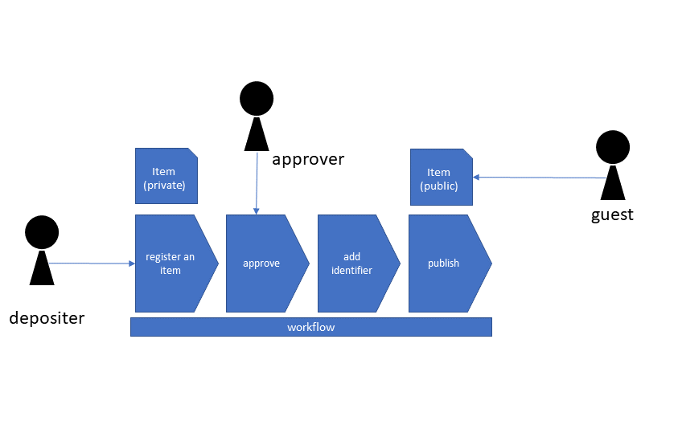
Glossary
This section explains the terminology used in the System.
Table 1-1. Terms used in the System
| Term | Description |
|---|---|
| DDI | The Data Documentation Initiative (DDI) is an international standard for metadata schemas in social science research. It is utilized for data archive initiatives as internationalization, shared use or joint research centers (https://ddialliance.org/). In the WEKO3 module, you can use DDI as a metadata schema for OAI-PMH. |
| DublinCore | A metadata schema standardized by the International Organization for Standardization (ISO 15836) (http://dublincore.org/). In the WEKO3 module, you can use DublinCore as a metadata schema for OAI-PMH. |
| JPCOAR | A metadata schema developed by JPCOAR (Japan Consortium for open access Repositories) (https://schema.irdb.nii.ac.jp/en). In the WEKO3 module, you can use JPCOAR as a metadata schema for OAI-PMH. |
| junii2 | A metadata schema published by the National Institute of Informatics (NII) (https://support.irdb.nii.ac.jp/sites/default/files/2018-07/junii2guide_ver3.1.pdf). In the WEKO3 module, you cannot use junii2 as a metadata schema for OAI-PMH. |
| OAI-PMH | OAI-PMH (The Open Archives Initiative Protocol for Metadata Harvesting) is a protocol developed by the Open Archives Initiative to exchange metadata between repositories (http://www.openarchives.org/OAI/openarchivesprotocol.html). External systems, including repositories, can use OAI-PMH to collect metadata of the items registered in the WEKO3 module. |
| UI | Stands for "User Interface". It is an interface for exchanging information between the System and the user. |
| WEKO3 repository | A repository created with the WEKO3 module and related software. |
| Item | A unit of information stored in the repository. An item is made up of content files and metadata. Metadata contains information that conforms to the description elements and description formats specified in a metadata schema. Each item is assigned an item ID that is unique within the WEKO3 repository. An item is tied to a single item type and cannot be linked to multiple item types. You can associate different metadata with a single item by creating additional item types. |
| Item type | Defines the data type of metadata registered for an item. An item type consists of elements specified in a metadata schema such as JPCOAR. The repository administrator needs to consider the metadata required for a particular item and create an item type to suit the needs. Example: When storing journal papers and research data in the repository, the metadata elements for journal papers are differentiated from those for research data. In such a case, you can create an item type for journal papers and an item type for research data, respectively. |
| Index | A unit (category) used to group items registered in the WEKO3 repository. Items registered in the WEKO3 repository will always have one or more indexes. An index can have multiple child indexes and items. |
| Index tree | A tree structure of nested indexes. A WEKO3 repository has a single repository tree. |
| Community | A group of users who can access the repository. You can make items available only to the users of the community. |
| Community administrator | A user with the role to manage the community. |
| Content | Research data registered in the repository, such as research papers and materials. The word "content" is used interchangeably with "item" in this manual. |
| Content file | Refers to the papers and other files that make up an item. |
| [v2.1.0] Group | A unit for grouping users. The browsing and contribution permissions of an index are set by combining roles and groups. Users other than system administrators and repository administrators can browse an index or contribute items to it only when they satisfy both the role condition and the group condition. Logged-in users who do not belong to any group, and users who are not logged in (guests), are treated as members of the group "No Group". |
| System | Refers to the WEKO3 system. |
| System administrator | A user with the role to administer the System. |
| Schema | A definition of the database structure for a repository. It defines the relationship between objects that make up a database, such as tables and lists. |
| Dialog | A UI mainly used to display messages and alerts. The user can still interact with UI's on the screen while a dialog is displayed. |
| Registered user | User who can access stored academic research results and register data from academic research results in the repository. |
| Harvesting | Scheduled activity for collecting repository data by external systems. It uses a dedicated protocol. Metadata needs to be mapped to the protocol. |
| Flow | A series of actions used to save items to the System. It defines a sequence of actions such as adding data to the repository, entering metadata, and peer review/approval. |
| Metadata | Information related to an item. Examples include information for a title, author, and file size. Metadata consists of content metadata and administrative metadata. Content metadata is a summary of the item. Administrative metadata is information such as the creator of the content metadata or access count for the item. |
| Repository | A set of services a university provides to its community members to manage and distribute digital materials created by the university and its members. In principle, a single entity (e.g. a university or academic institution) can operate one repository. The term refers to, in this manual, a space where research data (i.e. items) and their metadata are stored. |
| Repository administrator | A user with the role to administer a repository. The repository administrator can configure the WEKO3 module, the index tree, and item types. |
| Log in | The action to authenticate with a computer or various services on the Internet using pre-registered account information to access data. |
| Log out | The action to close one's access to data granted through authentication upon logging in. |
| Role | Defines the permissions granted to a user when operating the System, repository, and other elements. Permissions include adding, changing, and deleting data. |
| Workflow | Defines a series of tasks for business operations. It also refers to the sequence of those operations. A workflow for the WEKO3 repository defines a sequence of actions starting with registering items through publishing, including adding data to the repository, entering metadata, or peer review/approval. |
| Variant character | The traditional alternative of kanji or a different form of character with the same pronunciation and meaning but written differently. Example: "會" instead of "会", or "壱" instead of "一". |
System features
The following table shows the administrator roles for the System.
Table 1-2. Administrator roles for the System
| Administrator role | Description |
|---|---|
| System administrator | Responsible for such tasks as managing user accounts, managing workflows and integrating OAI-PMH. Some operations, including editing users and roles, configuring properties and OAI schemas, managing records, managing files, and maintenance, can only be performed by system administrators. |
| Repository administrator | Responsible for such tasks as registering schemas in the repository, creating item types and mapping metadata. |
| Community administrator | Each research category, such as a faculty or department, represents a single index within the index tree. This administrative role is responsible for a particular index and performs harvesting, editing the index tree, registering widgets and other tasks. |
The following table shows the administrative features of the System and the administrator roles that can perform each operation.
Table 1-3. System features and administrator roles
Legend: 〇: Feature available, ×: Feature not available
| Features | Administrator role | Chapter to reference | |||
|---|---|---|---|---|---|
| System | Repository | Community | |||
| Item Types | - | - | - | 2. Item Types | |
| Metadata | 〇 | 〇 | × | ||
| Mapping | 〇 | 〇 | × | ||
| OAI Schema | 〇 | × | × | ||
| Properties | 〇 | × | × | ||
| RO-Crate Mapping | 〇 | 〇 | × | ||
| JSON-LD Mapping | 〇 | 〇 | × | ||
| Items | - | - | - | 3. Items | |
| Bulk Update | 〇 | 〇 | 〇 (*2) | ||
| Bulk Delete | 〇 | 〇 | 〇 (*2) | ||
| Bulk Export | 〇 | 〇 | 〇 (*2) | ||
| Import | 〇 | 〇 | 〇 (*2) | ||
| RO-Crate Import | 〇 | 〇 | 〇 (*2) | ||
| Index Tree | - | - | - | 4. Index Tree | |
| Edit Tree | 〇 | 〇 | 〇 (*2) | ||
| Journal Information | 〇 | 〇 | 〇 (*2) | ||
| Custom Sort | 〇 | 〇 | 〇 (*2) | ||
| Web Design | - | - | - | 5. Web Design | |
| Widget | 〇 | 〇 | 〇 (*2) | ||
| Page Layout | 〇 | 〇 | 〇 (*2) | ||
| Author Management | - | - | - | 6. Author Management | |
| Edit | 〇 | 〇 | 〇 | ||
| Export | 〇 | 〇 | 〇 | ||
| Import | 〇 | 〇 | 〇 | ||
| Statistics | - | - | - | 7. Statistics | |
| Statistics Report | 〇 | 〇 | 〇 (*2) | ||
| Feedback Mail | 〇 | 〇 | 〇 (*2) | ||
| Site License | 〇 | 〇 | 〇 (*2) | ||
| WorkFlow | - | - | - | 8. WorkFlow | |
| Flow | 〇 | 〇 | 〇 (*2) | ||
| Workflow | 〇 | 〇 | 〇 (*2) | ||
| Communities | - | - | - | 9. Communities | |
| Community | 〇 | 〇 | 〇 (*2) | ||
| Featured Community | 〇 | × | × | ||
| Inclusion Request | 〇 | × | × | ||
| OAI-PMH | - | - | - | 10. OAI-PMH | |
| Harvesting | 〇 | 〇 | 〇 (*2) | ||
| Identify | 〇 | 〇 | × | ||
| Sets | 〇 | 〇 | 〇 | ||
| Resource Sync | - | - | - | 11. Resource Sync | |
| Resource List | 〇 | 〇 | 〇 (*2) | ||
| Change List | 〇 | 〇 | 〇 (*2) | ||
| Resync | 〇 | 〇 | 〇 (*2) | ||
| Records | - | - | - | 12. Records | |
| Persistent Identifier | 〇 | × | × | ||
| Record Metadata | 〇 | × | × | ||
| Files | - | - | - | 13. Files | |
| Bucket | 〇 | × | × | ||
| File Instance | 〇 | × | × | ||
| Location | 〇 | 〇 (*1) | × | ||
| Multipart Object | 〇 | × | × | ||
| Object Version | 〇 | × | × | ||
| User Management | - | - | - | 14. User Management | |
| Access: Roles | 〇 | × | × | ||
| Access: System Roles | 〇 | × | × | ||
| Access: Users | 〇 | × | × | ||
| Linked account identities | 〇 | × | × | ||
| Linked account tokens | 〇 | × | × | ||
| Linked accounts | 〇 | × | × | ||
| OAuth Application Tokens | 〇 | × | × | ||
| OAuth Applications | 〇 | × | × | ||
| Role | 〇 | × | × | ||
| Session Activity | 〇 | 〇 | × | ||
| User | 〇 | 〇 (*1) | 〇 (*1)(*2) | ||
| User Profile | 〇 | 〇 (*1) | × | ||
| Setting | - | - | - | 15. Setting | |
| Items | 〇 | 〇 | × | ||
| Activity List | 〇 | 〇 | × | ||
| Index Link | 〇 | 〇 | × | ||
| Index Tree | 〇 | 〇 | × | ||
| Language | 〇 | 〇 | × | ||
| PDF Cover Page | 〇 | 〇 | × | ||
| Ranking | 〇 | 〇 | × | ||
| Stats | 〇 | 〇 | × | ||
| Style | 〇 | 〇 | × | ||
| Identifier | 〇 | 〇 | 〇 (*2) | ||
| Item Export | 〇 | 〇 | 〇 (*2) | ||
| Log Analysis | 〇 | 〇 | × | ||
| Setting Search | 〇 | 〇 | × | ||
| Faceted Search | 〇 | 〇 | × | ||
| Site Info | 〇 | 〇 | × | ||
| Site License | 〇 | 〇 | 〇 (*2) | ||
| Sitemap | 〇 | 〇 | × | ||
| Send Mail | 〇 | × | × | ||
| Mail Templates | 〇 (*3) | 〇 (*3) | × | ||
| WebAPI Account | 〇 | × | × | ||
| File Preview | 〇 | × | × | ||
| Shibboleth | 〇 | 〇 | × | ||
| Restricted Access | 〇 (*3) | 〇 (*3) | × | ||
| Others | 〇 | 〇 | × | ||
| CRIS Linkage | 〇 | 〇 | × | ||
| Managing User Accounts | 〇 | 〇 | 〇 | 16. Managing User Accounts |
*1: Read access only.
*2: Available only for the targets (communities and their indexes) managed by the administrator.
*3: The menu appears only when the feature is enabled by a setting. "Mail Templates" appears when editing mail templates is enabled in the restricted access settings. "Restricted Access" appears when WEKO_ADMIN_DISPLAY_RESTRICTED_SETTINGS in the configuration file (instance.cfg) is True (default).
The menu on the left side of the "Administration" screen shows only the menus available to the roles of the logged-in user. A user with multiple roles can use all the menus available to any of those roles.
[v2.1.0] If integration with GakuNin mAP groups at academic federation (Shibboleth) login is enabled (WEKO_ACCOUNTS_SHIB_BIND_GAKUNIN_MAP_GROUPS in the configuration file; default: False), users who belong to a GakuNin mAP role group are given the corresponding WEKO role (System Administrator, Repository Administrator, Community Administrator, or Contributor) when they log in. The menus available on the Administration screen follow the given role. The GakuNin mAP role groups (roles whose names are jc_roles_sysadm or start with jc_FQDN_ro_) are not shown in the role choices of User Management, WorkFlow, and Communities. GakuNin mAP groups (names starting with jc_FQDN_gr_) are treated as groups, not as roles. FQDN is the host name of the entity ID set in WEKO_ACCOUNTS_IDP_ENTITY_ID, with "." and "-" replaced by "_".
Access the Administration screen
This section explains how to access the "Administration" screen. The system management operations described in this manual are performed in the "Administration" screen. To display the setting screen for each menu, follow the steps below.
- Log in with an administrator account.
For information on logging in, refer to the Data Registration Guide.
Select "Administration" from the pull-down menu next to the user account displayed in the upper right corner of the screen.
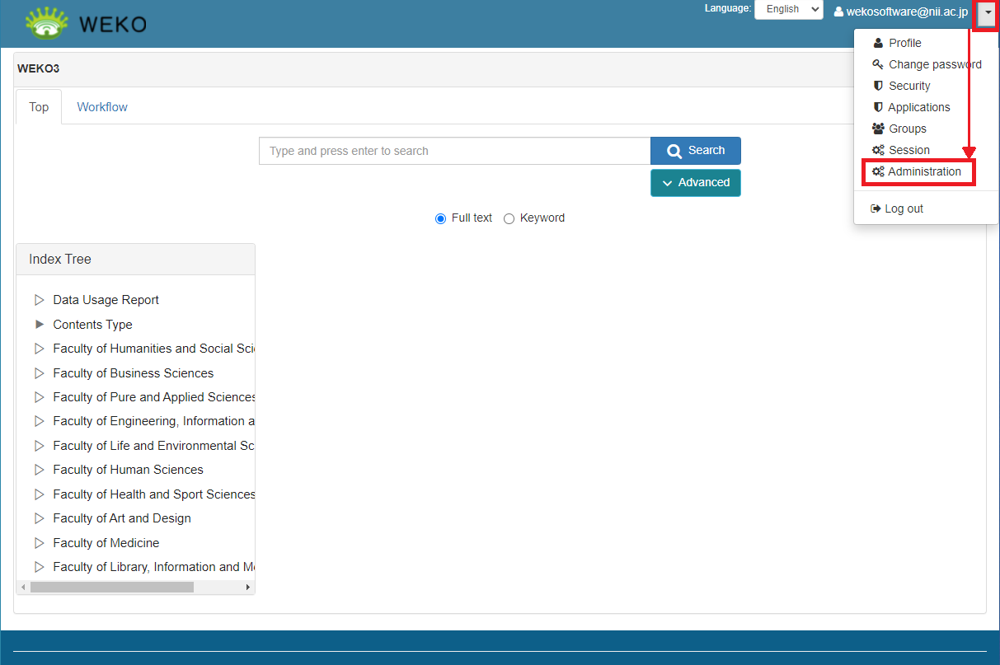
The "Administration" screen appears.
- Click to expand a menu on the left side of the screen and select an element.
The setting screen appears.
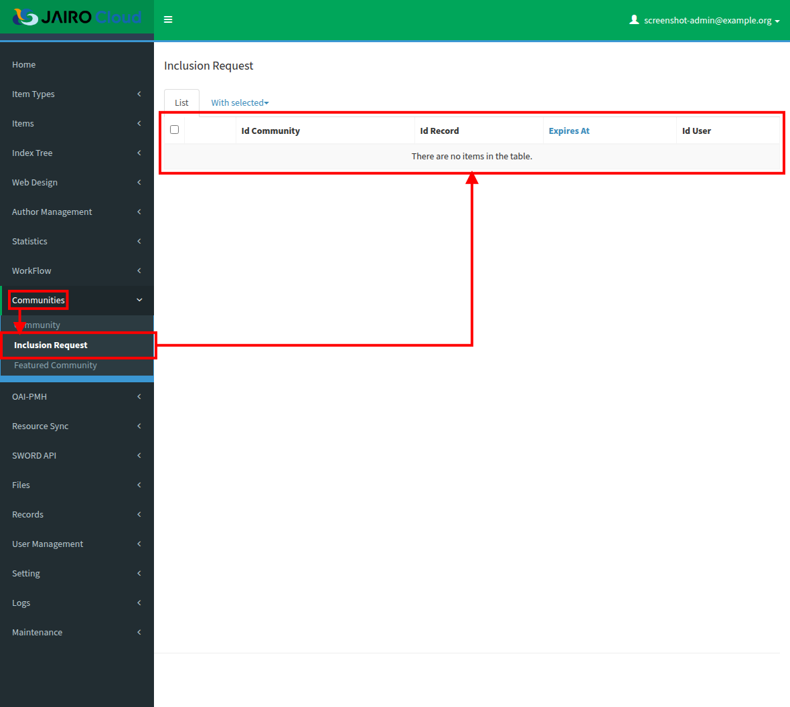
See Table 1-3 for a list of the menus on the Administration screen and the roles that can operate each menu.
Item Types
This chapter provides information on how to manage item types.
You can create item types by combining properties. An item type created is used as a format (i.e. a template) for registering items.
Set up properties
To access the Properties screen, click "Item Types" and then click "Properties". This screen allows you to register new properties and update saved properties.
Add properties
This section explains how to add a new property.
Enter a property name.
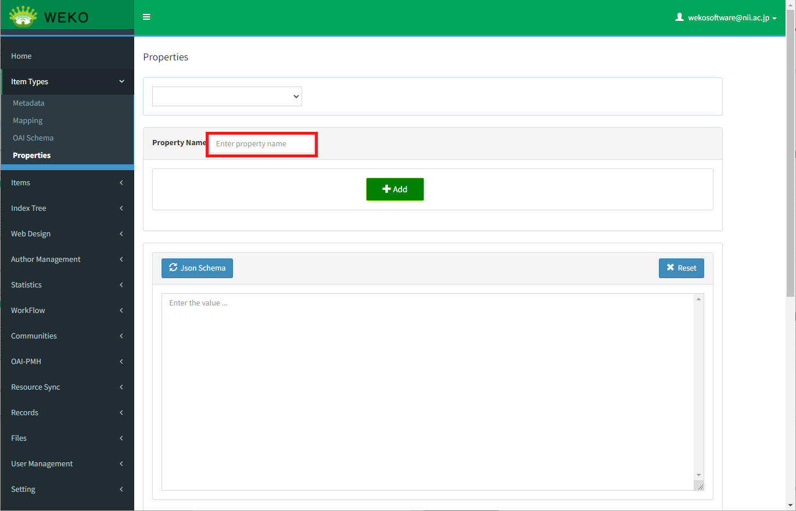
Click "+Add".
An attribute is added.
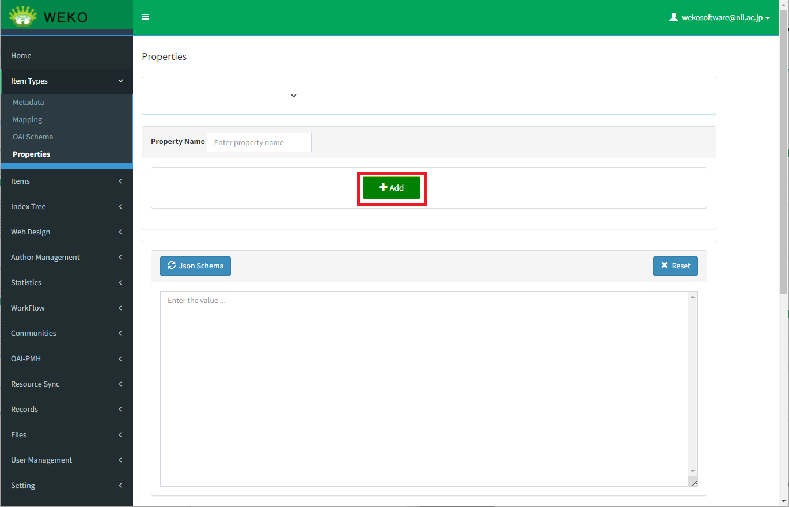
- Specify a name in the text area and select a metadata attribute from the drop-down list.
Check "Required" if you want to make the attribute required. To delete the entry, click "X".
For information on the input formats, see "Table 2-1. Input formats for metadata attributes".
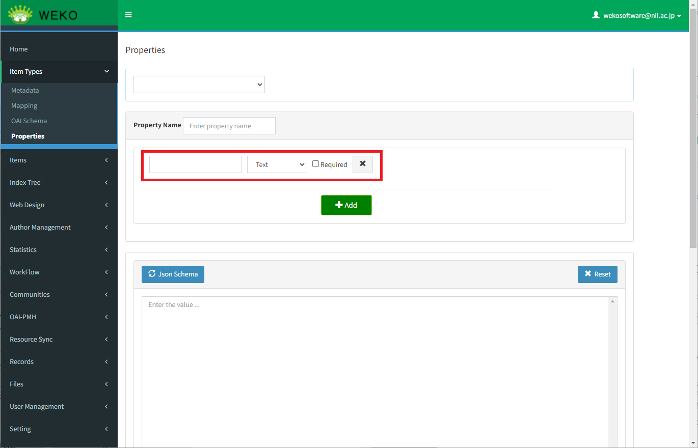
Table 2-1. Input formats for metadata attributes
| Input format | Sample display | Description |
|---|---|---|
| Text | Accepts a single line of text as input. | |
| Text Area | 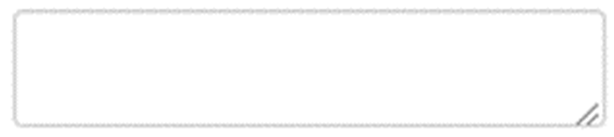 |
Accepts multiple lines of text as input. |
| Check Box* | 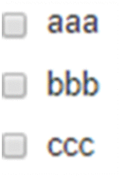 |
Accepts the values of one or more selected check boxes as input. |
| Selective (radio)* | 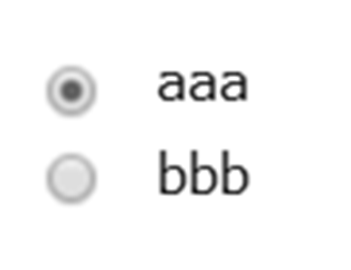 |
Accepts the value of a selected radio button as input. |
| Selective (pull-down)* | 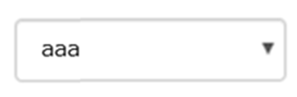 |
Accepts the value of a selected pull-down menu as input. |
| Date | 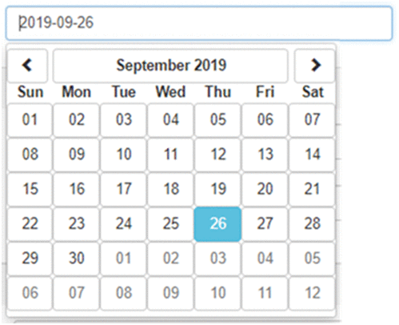 |
Accepts a value specified in either of the following ways as input.
|
| Object | 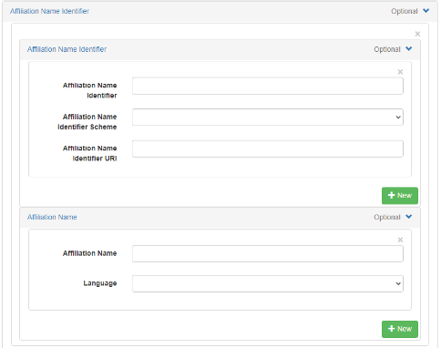 |
Accepts multiple elements as input. These elements are grouped as a set. Examples include the Creator Affiliation for the Creator properties. |
| List | 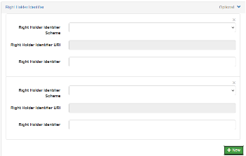 |
Accepts repetitive entries of the same element as input. These elements are grouped as a set. Examples include the Rights Holder Identifier for the Rights Holder Information properties. |
* Notes:
If you have selected a check box, selective (radio), or selective (pull-down) format for input, an input field appears where you can provide choices for selection. These choices in this input field must be separated by a pipe (|).
For example: AAA|BBB|CCC
If you have selected a selective (pull-down) format, start with a pipe (|) before entering choices in this input field, which will provide an unselected state as the first choice.
For example: |AAA|BBB|CCC
- Click "JSON Schema".
The property information you specified appears in the JSON format underneath, in the text area, as well as in the "Form(Singular)" and "Form(Multiple)" areas.
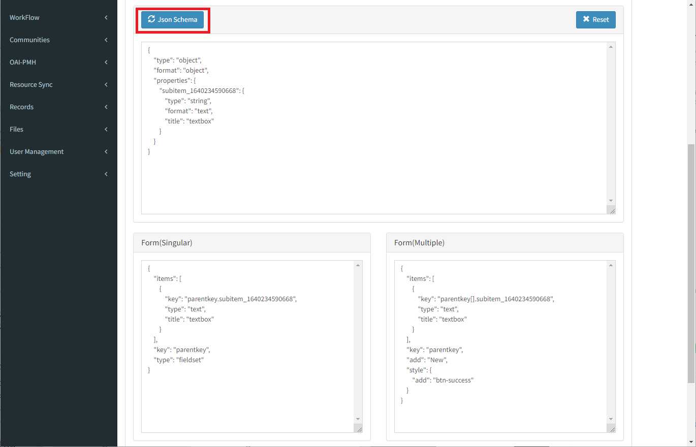
Notes:
If you have selected a selective (pull-down) format for input, add the following settings, which will provide an unselected state as the first choice.
Add the "null" element to "enum" and "type" of the corresponding subitem.
For example:
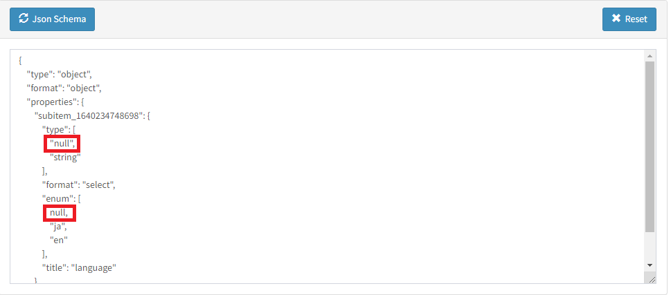
If you have selected a check box, selective (radio), or selective (pull-down) format for input, to make the choices editable in the "Metadata" screen, add "editAble":true to the corresponding subitem.
For example:
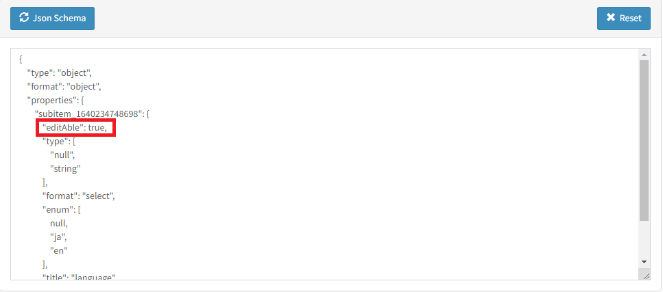
You can add comments for properties or attributes.
By adding a "description" tag to "Form(Singular)" and "Form(Multiple)" and adding comments in each "description", you can make the text appear in the item registration screen for the corresponding element.
For example:
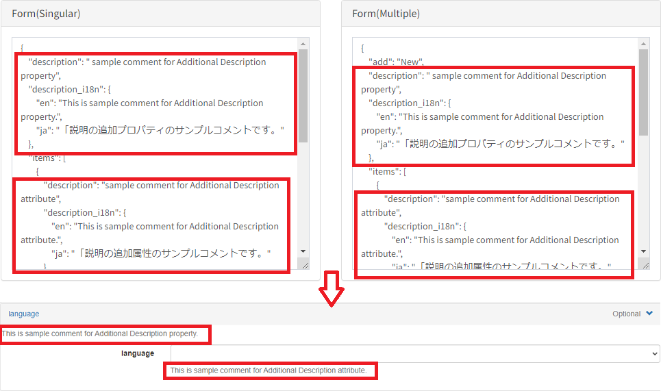
- Specify the information directly in the text area below the element, and then click "x Reset".
The property information will reflect the settings you have added.
Notes:
The property information will not reflect the "enum" setting you have added.
- Click "Save".
The property is added.
Edit properties
This section explains how to edit existing properties.
- Select "Properties".
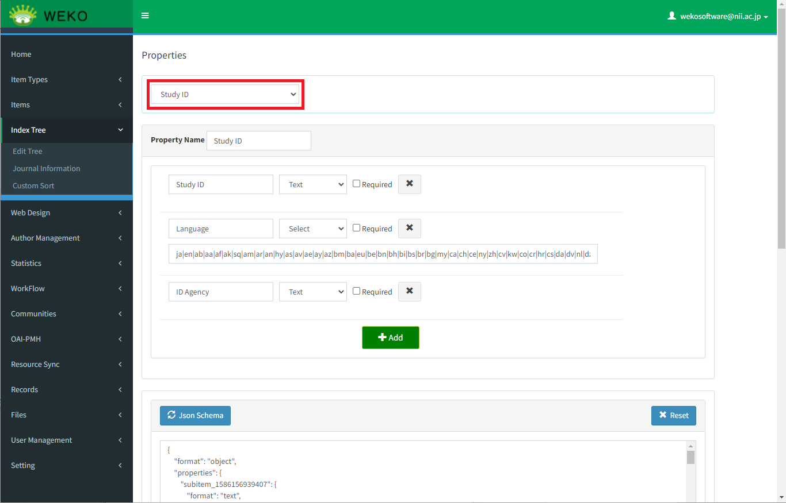
Notes:
You cannot edit the system properties, and they are not displayed in the properties list.
The following is a list of system properties.
File Info
Billing File
Thumbnail
Creator
Contributor
Rights Holder
Bibliographic Information
Resource Type
Version Type
Access Rights
Edit metadata elements.
Enter an element name in the text area and select an input format from the drop-down list. For information on the input formats, see "Table 2-1. Input formats for metadata attributes".
Check "Required" if you want to make the attribute required. To delete the entry, click "X".
To add an attribute, click "+Add".
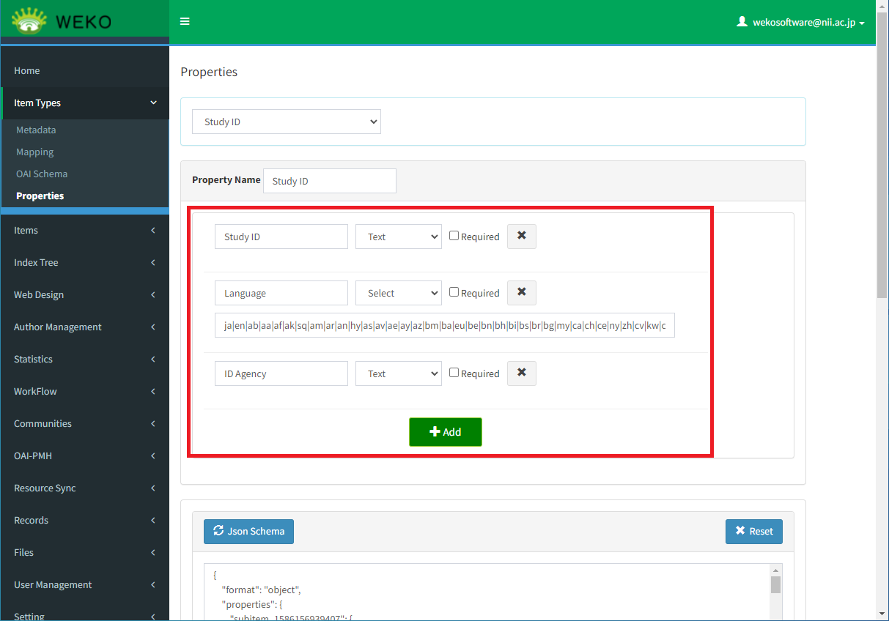
- Click "JSON Schema".
The property information you specified appears in the JSON format underneath, in the text area, as well as in the "Form(Singular)" and "Form(Multiple)" areas.
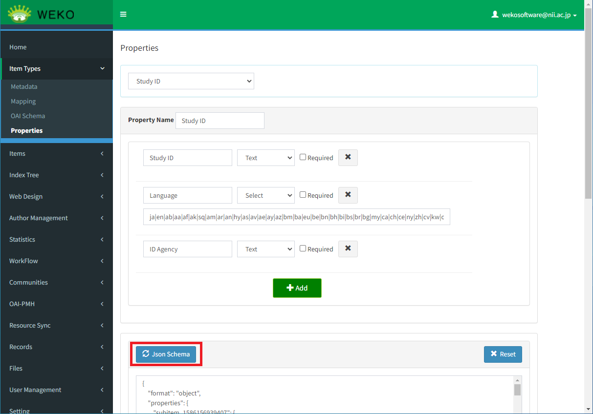
- Click "Save".
The property is added.
Manage item types
You can create item types used for item registration. You can also edit them.
To access the screen where you can manage item types, click "Item Types" and then click "Metadata".
Operations enabled for each item type
In the screen for editing metadata, you can switch between item types.
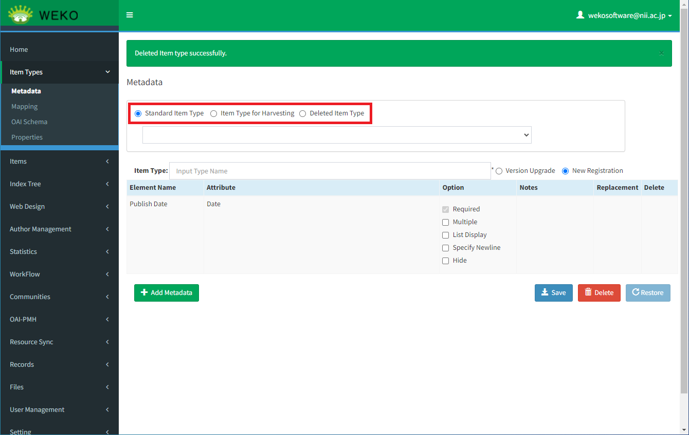
Select "Standard Item Type" to display the item types available for item registration.
Select "Item Type for Harvesting" to display the item types available for harvesting only. This item type is not available for item registration and can only be used for harvesting.
Select "Deleted Item Type" to display the deleted item types. "Deleted Item Type" appears only when you are logged in as a system administrator.
The following table shows the operations that are enabled for each item type.
Table 2-2. The operations that are enabled for each item type
Legend: 〇: Available, ×: Not available
| Operation | Standard Item Type | Item Type for Harvesting | Deleted Item Type |
|---|---|---|---|
| Add | 〇 | 〇 | × |
| Edit metadata | 〇 | 〇 | × |
| Set mapping | 〇 | 〇 | × |
| Rename | 〇 | 〇 | × |
| Copy | 〇 | 〇 | × |
| Delete | 〇 | × | × |
| Restore | × | × | 〇 |
| Export | 〇 | × | × |
| Import | 〇 | × | × |
Even if you add or copy an item type while "Item Type for Harvesting" is selected, the new item type is registered as a standard item type.
Default item types
The following two item types are available as default.
・ Default Item Type (Simple)
・ Default Item Type (Full)
The following two item types are available for restricted access.
・ Usage Application
・ Usage Report
There is also another item type available for DDI.
The following table shows the details for each item type.
・ Default Item Type (Simple)
| # | Property Name | Option | Properties Defined | |||||||||
|---|---|---|---|---|---|---|---|---|---|---|---|---|
| Required | Allow Multiple | Show List | Specify Newline | Hide | ||||||||
| 0 | Publish Date | ○ | × | × | × | × | Date | Date | - | - | - | - |
| 1 | Title | ○ | ○ | ○ | ○ | × | Title | Text | - | - | - | - |
| Language | Select | - | - | - | - | |||||||
| 2 | Alternative Title | × | ○ | × | × | × | Alternative Title | Text | - | - | - | - |
| Language | Select | - | - | - | - | |||||||
| 3 | Creator | × | ○ | ○ | ○ | × | Creator Identifier | List | Creator Identifier | Text | - | - |
Creator Identifier Scheme |
Select | - | - | |||||||||
Creator Identifier URI |
Text | - | - | |||||||||
| Creator Name | List | Name | Text | - | - | |||||||
| Language | Select | - | - | |||||||||
| Creator Family Name | List | Family Name | Text | - | - | |||||||
| Language | Select | - | - | |||||||||
| Creator Given Name | List | Given Name | Text | - | - | |||||||
| Language | Select | - | - | |||||||||
| Creator Alternative Name | List | Alternative Name | Text | - | - | |||||||
| Language | Select | - | - | |||||||||
| Affiliation Name Identifier | List | Affiliation Name Identifier | List | Affiliation Name Identifier | Text | |||||||
Affiliation Name Identifier Scheme |
Select | |||||||||||
Affiliation Name Identifier URI |
Text | |||||||||||
| Affiliation Name | List | Affiliation Name | Text | |||||||||
| Language | Select | |||||||||||
| Creator Email Address | List | Email Address | Text | - | - | |||||||
| 4 | Contributor | × | ○ | × | × | × | Contributor Type | Select | - | - | - | - |
| Contributor Identifier | List | Contributor Identifier | Text | - | - | |||||||
Contributor Identifier Scheme |
Select | - | - | |||||||||
Contributor Identifier URI |
Text | - | - | |||||||||
| Contributor Name | List | Name | Text | - | - | |||||||
| Language | Select | - | - | |||||||||
| Contributor Family Name | List | Family Name | Text | - | - | |||||||
| Language | Select | - | - | |||||||||
| Contributor Given Name | List | Given Name | Text | - | - | |||||||
| Language | Select | - | - | |||||||||
| Contributor Alternative Name | List | Alternative Name | Text | - | - | |||||||
| Language | Select | - | - | |||||||||
| Affiliation Name Identifier | List | Affiliation Name Identifier | List | Affiliation Name Identifier | Text | |||||||
Affiliation Name Identifier Scheme |
Select | |||||||||||
Affiliation Name Identifier URI |
Text | |||||||||||
| Affiliation Name | List | Affiliation Name | Text | |||||||||
| Language | Select | |||||||||||
| Contributor Email Address | List | Email Address | Text | - | - | |||||||
| 5 | Access Rights | × | × | × | × | × | Access Rights | Select | - | - | - | - |
| Access Rights URI | Text | - | - | - | - | |||||||
| 6 | Rights | × | ○ | × | × | × | Rights Information | Text | - | - | - | - |
| Rights Information Resource | Text | - | - | - | - | |||||||
| Language | Select | - | - | - | - | |||||||
| 7 | Rights Holder | × | ○ | × | × | × | Rights Holder Identifier | List | Rights Holder Identifier | Text | - | - |
| Rights Holder Identifier Scheme | Select | - | - | |||||||||
Rights Holder Identifier URI |
Text | - | - | |||||||||
| Rights Holder Name | List | Rights Holder Name | Text | - | - | |||||||
| Language | Select | - | - | |||||||||
| 8 | Subject | × | ○ | × | × | × | Subject | Text | - | - | - | - |
| Subject Scheme | Select | - | - | - | - | |||||||
| Subject URI | Text | - | - | - | - | |||||||
| Language | Select | - | - | - | - | |||||||
| 9 | Description | × | ○ | × | × | × | Description | Textarea | - | - | - | - |
| Description Type | Select | - | - | - | - | |||||||
| Language | Select | - | - | - | - | |||||||
| 10 | Publisher | × | ○ | × | × | × | Publisher | Text | - | - | - | - |
| Language | Select | - | - | - | - | |||||||
| 11 | Language | × | ○ | × | × | × | Language | Select | - | - | - | - |
| 12 | Resource Type_Simple | ○ | × | × | × | × | Resource Type (Simple) | Select | - | - | - | - |
| Resource Type Identifier (Simple) | text | - | - | - | - | |||||||
| 13 | Version Type | × | × | × | × | × | Version Type | Select | - | - | - | - |
| Version Type Resource | Text | - | - | - | - | |||||||
| 14 | Relation | × | ○ | × | × | × | Relation Type | Select | - | - | - | - |
| Relation Identifier | Object | Relation Identifier | Text | - | - | |||||||
| Identifier Type | Select | - | - | |||||||||
| Related Title | List | Related Title | Text | - | - | |||||||
| Language | Select | - | - | |||||||||
| 15 | Funding Reference | × | ○ | × | × | × | Funder Identifier | Object | Funder Identifier | Text | - | - |
| Funder Identifier Type | Select | - | - | |||||||||
| Funder Name | List | Funder Name | Text | - | - | |||||||
| Language | Select | - | - | |||||||||
| Award Number | Object | Award Number | Text | - | - | |||||||
| Award URI | Text | - | - | |||||||||
| Award Title | List | Award Title | Text | - | - | |||||||
| Language | Select | - | - | |||||||||
| 16 | Source Identifier | × | ○ | × | × | × | Source Identifier | Text | - | - | - | - |
| Source Identifier Type | Select | - | - | - | - | |||||||
| 17 | Bibliographic Information | × | × | ○ | × | × | Journal Title | List | Title | Text | - | - |
| Language | Select | - | - | |||||||||
| Volume Number | Text | - | - | - | - | |||||||
| Issue Number | Text | - | - | - | - | |||||||
| Page Start | Text | - | - | - | - | |||||||
| Page End | Text | - | - | - | - | |||||||
| Number of Pages | Text | - | - | - | - | |||||||
| Issue Date | Object | Date | Datetime | - | - | |||||||
| Date Type | Select | - | - | |||||||||
| 18 | Dissertation Number | × | × | ○ | × | × | Dissertation Number | Text | - | - | - | - |
| 19 | Degree Name | × | ○ | ○ | × | × | Degree Name | Text | - | - | - | - |
| Language | Select | - | - | - | - | |||||||
| 20 | Date Granted | × | × | ○ | × | × | Date Granted | Datetime | - | - | - | - |
| 21 | Degree Grantor | × | ○ | ○ | × | × | Degree Grantor Name Identifier | List | Degree Grantor Name Identifier | Text | - | - |
| Degree Grantor Name Identifier Scheme | Select | - | - | |||||||||
| Degree Grantor Name | List | Degree Grantor Name | Text | - | - | |||||||
| Language | Select | - | - | |||||||||
| 22 | File | × | ○ | ○ | × | × | Publish Date | List | Publish Date | Datetime | - | - |
| Type | Select | - | - | |||||||||
| Text URL | Object | Text URL | Text | - | - | |||||||
| Label | Text | - | - | |||||||||
| Object Type | Select | - | - | |||||||||
| Format | Text | - | - | - | - | |||||||
| Size | List | Size | Text | - | - | |||||||
| Date | List | Date Type | Select | - | - | |||||||
| Date | Datetime | - | - | |||||||||
| Version Information | Text | - | - | - | - | |||||||
| Access | Radios | - | - | - | - | |||||||
| Preview | Select | - | - | - | - | |||||||
| File Name | Select | - | - | - | - | |||||||
| Free License | Textarea | - | - | - | - | |||||||
| License | Select | - | - | - | - | |||||||
| Group | Select | - | - | - | - | |||||||
| 23 | Heading | × | ○ | × | × | × | Banner Headline | Text | - | - | - | - |
| Subheading | Text | - | - | - | - | |||||||
| Language | Select | - | - | - | - |
・ Default Item Type (Full)
| # | Property Name | Option | Properties Defined | |||||||||
|---|---|---|---|---|---|---|---|---|---|---|---|---|
| Required | Allow Multiple | Show List | Specify Newline | Hide | ||||||||
| 0 | Publish Date | ○ | × | × | × | × | Date | Date | - | - | - | - |
| 1 | Title | ○ | ○ | ○ | ○ | × | Title | Text | - | - | - | - |
| Language | Select | - | - | - | - | |||||||
| 2 | Alternative Title | × | ○ | × | × | × | Alternative Title | Text | - | - | - | - |
| Language | Select | - | - | - | - | |||||||
| 3 | Creator | × | ○ | ○ | ○ | × | Creator Identifier | List | Creator Identifier | Text | - | - |
| Creator Identifier Scheme | Select | - | - | |||||||||
| Creator Identifier URI | Text | - | - | |||||||||
| Creator Name | List | Name | Text | - | - | |||||||
| Language | Select | - | - | |||||||||
| Creator Family Name | List | Family Name | Text | - | - | |||||||
| Language | Select | - | - | |||||||||
| Creator Given Name | List | Given Name | Text | - | - | |||||||
| Language | Select | - | - | |||||||||
| Creator Alternative Name | List | Alternative Name | Text | - | - | |||||||
| Language | Select | - | - | |||||||||
| Affiliation Name Identifier | List | Affiliation Name Identifier | List | Affiliation Name Identifier | Text | |||||||
| Affiliation Name Identifier Scheme | Select | |||||||||||
| Affiliation Name Identifier URI | Text | |||||||||||
| Affiliation Name | List | Affiliation Name | Text | |||||||||
| Language | Select | |||||||||||
| Creator Email Address | List | Email Address | Text | - | - | |||||||
| 4 | Contributor | × | ○ | × | × | × | Contributor Type | Select | - | - | - | - |
| Contributor Identifier | List | Contributor Identifier | Text | - | - | |||||||
| Contributor Identifier Scheme | Select | - | - | |||||||||
| Contributor Identifier URI | Text | - | - | |||||||||
| Contributor Name | List | Name | Text | - | - | |||||||
| Language | Select | - | - | |||||||||
| Contributor Family Name | List | Family Name | Text | - | - | |||||||
| Language | Select | - | - | |||||||||
| Contributor Given Name | List | Given Name | Text | - | - | |||||||
| Language | Select | - | - | |||||||||
| Contributor Alternative Name | List | Alternative Name | Text | - | - | |||||||
| Language | Select | - | - | |||||||||
| Affiliation Name Identifier | List | Affiliation Name Identifier | List | Affiliation Name Identifier | Text | |||||||
| Affiliation Name Identifier Scheme | Select | |||||||||||
| Affiliation Name Identifier URI | Text | |||||||||||
| Affiliation Name | List | Affiliation Name | Text | |||||||||
| Language | Select | |||||||||||
| Contributor Email Address | List | Email Address | Text | - | - | |||||||
| 5 | Access Rights | × | × | × | × | × | Access Rights | Select | - | - | - | - |
| Access Rights URI | Text | - | - | - | - | |||||||
| 6 | APC | × | × | × | × | × | APC | Select | - | - | - | - |
| 7 | Rights | × | ○ | × | × | × | Rights | Text | - | - | - | - |
| Rights Information Resource | Text | - | - | - | - | |||||||
| Language | Select | - | - | - | - | |||||||
| 8 | Rights Holder | × | ○ | × | × | × | Rights Holder Identifier | List | Rights Holder Identifier | Text | - | - |
| Rights Holder Identifier Scheme | Select | - | - | |||||||||
| Rights Holder Identifier URI | Text | - | - | |||||||||
| Rights Holder Name | List | Rights Holder Name | Text | - | - | |||||||
| Language | Select | - | - | |||||||||
| 9 | Subject | × | ○ | × | × | × | Subject | Text | - | - | - | - |
| Subject Scheme | Select | - | - | - | - | |||||||
| Subject URI | Text | - | - | - | - | |||||||
| Language | Select | - | - | - | - | |||||||
| 10 | Description | × | ○ | × | × | × | Description | Textarea | - | - | - | - |
| Description Type | Select | - | - | - | - | |||||||
| Language | Select | - | - | - | - | |||||||
| 11 | Publisher | × | ○ | × | × | × | Publisher | Text | - | - | - | - |
| Language | Select | - | - | - | - | |||||||
| 12 | Date | × | ○ | × | × | × | Date | Datetime | - | - | - | - |
| Date Type | Select | - | - | - | - | |||||||
| 13 | Language | × | ○ | × | × | × | Language | Select | - | - | - | - |
| 14 | Resource Type | ○ | × | × | × | × | Resource Type | Select | - | - | - | - |
| Resource Type Identifier | Text | - | - | - | - | |||||||
| 15 | Version | × | × | × | × | × | Version | Text | - | - | - | - |
| 16 | Version Type | × | × | × | × | × | Version Type | Select | - | - | - | - |
| Version Type Resource | Text | - | - | - | - | |||||||
| 17 | Identifier | × | ○ | × | × | × | Identifier | Text | - | - | - | - |
| Identifier Type | Select | - | - | - | - | |||||||
| 18 | Identifier Registration | × | × | × | × | × | Identifier Registration | Text | - | - | - | - |
| Identifier Registration Type | Select | - | - | - | - | |||||||
| 19 | Relation | × | ○ | × | × | × | Relation Type | Select | - | - | - | - |
| Relation Identifier | Object | Relation Identifier | Text | - | - | |||||||
| Identifier Type | Select | - | - | |||||||||
| Related Title | List | Related Title | Text | - | - | |||||||
| Language | Select | - | - | |||||||||
| 20 | Temporal | × | ○ | × | × | × | Temporal | Text | - | - | - | - |
| Language | Select | - | - | - | - | |||||||
21
|
Geo Location | × | ○ | × | × | × | Geo Location Point | Object | Point Latitude | Text | - | - |
| Point Longitude | Text | - | - | |||||||||
| Geo Location Box | Object | West Bound Longitude | Text | - | - | |||||||
| East Bound Longitude | Text | - | - | |||||||||
| South Bound Latitude | Text | - | - | |||||||||
| North Bound Latitude | Text | - | - | |||||||||
| Geo Location Place | List | Geo Location Place | Text | - | - | |||||||
| 22 | Funding Reference | × | ○ | × | × | × | Funder Identifier | Object | Funder Identifier | Text | - | - |
| Funder Identifier Type | Select | - | - | |||||||||
| Funder Name | List | Funder Name | Text | - | - | |||||||
| Language | Select | - | - | |||||||||
| Award Number | Object | Award Number | Text | - | - | |||||||
| Award URI | Text | - | - | |||||||||
| Award Title | List | Award Title | Text | - | - | |||||||
| Language | Select | - | - | |||||||||
| 23 | Source Identifier | × | ○ | × | × | × | Source Identifier | Text | - | - | - | - |
| Source Identifier Type | Select | - | - | - | - | |||||||
| 24 | Source Title | × | ○ | ○ | × | × | Source Title | Text | - | - | - | - |
| Language | Select | - | - | - | - | |||||||
| 25 | Volume Number | × | × | ○ | × | × | Volume Number | Text | - | - | - | - |
| 26 | Issue Number | × | × | ○ | × | × | Issue Number | Text | - | - | - | - |
| 27 | Number of Pages | × | × | ○ | × | × | Number of Pages | Text | - | - | - | - |
| 28 | Page Start | × | × | ○ | × | × | Page Start | Text | - | - | - | - |
| 29 | Page End | × | × | ○ | × | × | Page End | Text | - | - | - | - |
| 30 | Bibliographic Information | × | × | ○ | × | × | Journal Title | List | Title | Text | - | - |
| Language | Select | - | - | |||||||||
| Volume Number | Text | - | - | - | - | |||||||
| Issue Number | Text | - | - | - | - | |||||||
| Page Start | Text | - | - | - | - | |||||||
| Page End | Text | - | - | - | - | |||||||
| Number of Pages | Text | - | - | - | - | |||||||
| Issue Date | Object | Date | Datetime | - | - | |||||||
| Date Type | Select | - | - | |||||||||
| 31 | Dissertation Number | × | × | ○ | × | × | Dissertation Number | Text | - | - | - | - |
| 32 | Degree Name | × | ○ | ○ | × | × | Degree Name | Text | - | - | - | - |
| Language | Select | - | - | - | - | |||||||
| 33 | Date Granted | × | × | ○ | × | × | Date Granted | Datetime | - | - | - | - |
| 34 | Degree Grantor | × | ○ | ○ | × | × | Degree Grantor Name Identifier | List | Degree Grantor Name Identifier | Text | - | - |
| Degree Grantor Name Identifier Scheme | Select | - | - | |||||||||
| Degree Grantor Name | List | Degree Grantor Name | Text | - | - | |||||||
| Language | Select | - | - | |||||||||
| 35 | Conference | × | ○ | ○ | ○ | × | Conference Name | List | Conference Name | Text | - | - |
| Language | Select | - | - | |||||||||
| Conference Sequence | Text | - | - | - | - | |||||||
| Conference Sponsor | List | Conference Sponsor | Text | - | - | |||||||
| Language | Select | - | - | |||||||||
| Conference Date | Object | Period | Text | - | - | |||||||
| Start Year | Text | - | - | |||||||||
| Start Month | Text | - | - | |||||||||
| Start Day | Text | - | - | |||||||||
| End Year | Text | - | - | |||||||||
| End Month | Text | - | - | |||||||||
| End Day | Text | - | - | |||||||||
| Language | Select | - | - | |||||||||
| Conference Venue | List | Conference Venue | Text | - | - | |||||||
| Language | Select | - | - | |||||||||
| Conference Place | List | Conference Place | Text | - | - | |||||||
| Language | Select | - | - | |||||||||
| Conference Country | Text | - | - | - | - | |||||||
| 36 | File | × | ○ | ○ | × | × | Publish Date | List | Publish Date | Datetime | - | - |
| Type | Select | - | - | |||||||||
| Text URL | Object | Text URL | Text | - | - | |||||||
| Label | Text | - | - | |||||||||
| Object Type | Select | - | - | |||||||||
| Format | Text | - | - | - | - | |||||||
| Size | List | Size | Text | - | - | |||||||
| Date | List | Date Type | Select | - | - | |||||||
| Date | Datetime | - | - | |||||||||
| Version Information | Text | - | - | - | - | |||||||
| Access | Radios | - | - | - | - | |||||||
| Preview | Select | - | - | - | - | |||||||
| File Name | Select | - | - | - | - | |||||||
| Free License | Textarea | - | - | - | - | |||||||
| License | Select | - | - | - | - | |||||||
| Group | Select | - | - | - | - | |||||||
| 37 | Heading | × | ○ | × | × | × | Banner Headline | Text | - | - | - | - |
| Subheading | Text | - | - | - | - | |||||||
| Language | Select | - | - | - | - |
Additional Information:
For "Creator Identifier Scheme", "Contributor Identifier Scheme", and "Rights Holder Identifier Scheme", "Separate options with the | character" is displayed in the area where the choices are displayed. These elements refer to the list under "Scheme" in the "ID Prefix" tab of the Author Management > Edit screen and appear as a list in the pull-down for each element in the "Item Registration" screen when registering items.
・ Usage Application (Legend: ⦾ Required, ○ optional)
| # | Metadata Name (Localization Settings) |
|
Properties Defined | Option | Usage Application | Usage Report | JPCOAR Schema | Remarks | |||
|---|---|---|---|---|---|---|---|---|---|---|---|
| Required | Allow Multiple | Usage Application | Two Steps Usage Application |
Usage Report | |||||||
| 0 | Dataset Usage (Japanese: データ名) (English: Dataset Usage) |
× | Dataset Usage (Japanese: データ名) (English: Dataset Usage) |
Text | × | ⦾ | ⦾ | ⦾ | dc:title | Automatically entered when creating a user registration WF. | |
| 1 | Applicant (JP: 申請者) (EN: Applicant) |
× | Name (JP: 名前) (EN: Name) |
Text | × | ⦾ | ⦾ | ⦾ | jpcoar:creator> jpcoar:creatorName |
||
Email Address (JP: メールアドレス) (EN: Mail Address) |
Text | × | ⦾ | ⦾ | ⦾ | Automatically entered when creating a user registration WF. | |||||
University/Institution (JP: 所属大学・機関) (EN: University/Institution) |
Text | × | ⭘ | ⭘ | jpcoar:creator>jpcoar:affiliation>jpcoar:affiliationName | ||||||
Affiliated Division/Department (JP: 所属部局・部署) (EN: Affiliated Division/Department) |
Text | × | ⭘ | ⭘ | |||||||
Position (JP: 役職) (EN: Position) |
Select | × | ⭘ | ⭘ | |||||||
Phone Number (JP: 電話番号) (EN: Phone Number) |
Text | × | ⭘ | ⭘ | |||||||
| 2 | Applicant Affiliated Institution (JP: 申請者所属学会) (EN: Applicant Affiliated Institution) |
⭘ | Institution Name (JP: 所属学会名) (EN: Institution Name) |
Text | × | ⭘ | ⭘ | ||||
Institution Position (JP: 所属学会役職) (EN: Institution Position) |
Select | × | ⭘ | ⭘ | |||||||
| 3 | Guarantor (JP: 保証人) (EN: Guarantor) |
× | Name (JP: 名前) (EN: Name) |
Text | × | ⭘ | |||||
Email Address (JP: メールアドレス) (EN: Mail Address) |
Text | × | ⦾ | ||||||||
University/Institution (JP: 所属大学・機関) (EN: University/Institution) |
Text | × | ⭘ | ||||||||
Affiliated Division/Department (JP: 所属部局・部署) (EN: Affiliated Division/Department) |
Text | × | ⭘ | ||||||||
Position (JP: 役職) (EN: Position) |
Select | × | ⭘ | ||||||||
Phone Number (JP: 電話番号) (EN: Phone Number) |
Text | × | ⭘ | ||||||||
| 4 | Usage Report ID (JP: 利用報告ID ) (EN: Usage Report ID) |
× | Usage Report ID (JP: 利用報告ID ) (EN: Usage Report ID) |
Text | × | ⦾ | ⦾ | Automatically populated when approved by the administrator and when creating a usage report WF. Appears inactive. | |||
| 5 | Research Title (JP: 研究題目) (EN: Research Title) |
× | Research Title (JP: 研究題目) (EN: Research Title) |
Text | × | ⭘ | ⭘ | ||||
| 6 | Research Plan (JP: 研究計画) (EN: Research Plan) |
× | Research Plan (JP: 研究計画) (EN: Research Plan) |
Textarea | × | ⦾ | ⦾ | ⦾ | datacite:description descriptionType="Abstract" |
||
| 7 | Co-user List (JP: 共同利用者リスト) (EN: Co-user List) |
× | Co-user List (JP: 共同利用者リスト) (EN: Co-user List) |
File Downloads | × | ⭘ | ⭘ | ||||
| 8 | Usage Report (JP: 利用報告) (EN: Usage Report) |
× | Usage Report (JP: 利用報告) (EN: Usage Report) |
Textarea | × | ⦾ | |||||
| 9 | Stop/Continue (JP: 終了／継続) (EN: Stop/Continue) |
× | Stop/Continue (JP: 終了／継続) (EN: Stop/Continue) |
Radio button | × | ||||||
| 10 | WF Issued Date (JP: WF起票日) (EN: WF Issued Date) |
× | WF Issued Date (JP: WF起票日) (EN: WF Issued Date) |
Datetime | × | ⦾ | ⦾ | ⦾ | datacite:date dateType="Created" |
Automatically populated when creating a WF. Appears inactive. | |
| 11 | Application Date (JP: 申請日) (EN: Application Date) |
× | Application Date (JP: 申請日) (EN: Application Date) |
Datetime | × | ⦾ | ⦾ | ⦾ | datacite:date dateType="Issued" |
Automatically populated when an application is made by a WF user. Appears inactive. | |
| 12 | Approval Date (JP: 承認日) (EN: Approval Date) |
× | Approval Date (JP: 承認日) (EN: Approval Date) |
Datetime | × | ⦾ | ⦾ | ⦾ | datacite:date dateType="Accepted" |
Automatically populated when a WF is approved (overwriting involved). Appears inactive. | |
| 13 | Item Title (JP: アイテムタイトル) (EN: Item Title) |
× | Item Title (JP: アイテムタイトル) (EN: Item Title) |
Text | × | ⦾ | ⦾ | ⦾ | dcterms:alternative | Usage application, deliverables, and usage reports are automatically generated per the rules below. Appears inactive. User registration and usage application: "usage application" + WF issue date (YYYYMMDD) + data name + "_" + applicant name Deliverables: "Deliverables" + user name Usage Report: Corresponding usage application ID + "usage report" "user name" |
・ Usage Report (Legend: ⦾ Required, ○ optional)
| # | Metadata Name (Localization Settings) |
|
Properties Defined | Option | Usage Application | Usage Report | JPCOAR Schema | Remarks | |||
|---|---|---|---|---|---|---|---|---|---|---|---|
| Required | Allow Multiple | Usage Application | Two Steps Usage Application |
Usage Report | |||||||
| 0 | Dataset Usage (Japanese: データ名) (English: Dataset Usage) |
× | Dataset Usage (Japanese: データ名) (English: Dataset Usage) |
Text | × | ⦾ | ⦾ | ⦾ | dc:title | Automatically populated when creating a usage report WF. Appears inactive. | |
| 1 | Applicant (JP: 申請者) (EN: Applicant) |
× | Name (JP: 名前) (EN: Name) |
Text | × | ⦾ | ⦾ | ⦾ | jpcoar:creator> jpcoar:creatorName |
Automatically populated when creating a usage report WF. Appears inactive. | |
Email Address (JP: メールアドレス) (EN: Mail Address) |
Text | × | ⦾ | ⦾ | ⦾ | Automatically populated when creating a usage report WF. Appears inactive. | |||||
University/Institution (JP: 所属大学・機関) (EN: University/Institution) |
Text | × | ⭘ | ⭘ | jpcoar:creator>jpcoar:affiliation>jpcoar:affiliationName | Automatically populated when creating a usage report WF. Appears inactive. | |||||
Affiliated Division/Department (JP: 所属部局・部署) (EN: Affiliated Division/Department) |
Text | × | ⭘ | ⭘ | Automatically populated when creating a usage report WF. Appears inactive. | ||||||
Position (JP: 役職) (EN: Position) |
Select | × | ⭘ | ⭘ | Automatically populated when creating a usage report WF. Appears inactive. | ||||||
Phone Number (JP: 電話番号) (EN: Phone Number) |
Text | × | ⭘ | ⭘ | Automatically populated when creating a usage report WF. Appears inactive. | ||||||
| 2 | Usage Report ID (JP: 利用報告ID ) (EN: Usage Report ID) |
× | Usage Report ID (JP: 利用報告ID ) (EN: Usage Report ID) |
Text | × | ⦾ | ⦾ | Automatically populated when creating a usage report WF. Appears inactive. | |||
| 3 | Usage Report (JP: 利用報告) (EN: Usage Report) |
× | Usage Report (JP: 利用報告) (EN: Usage Report) |
Textarea | × | ⦾ | |||||
| 4 | Stop/Continue (JP: 終了／継続) (EN: Stop/Continue) |
× | Stop/Continue (JP: 終了／継続) (EN: Stop/Continue) |
Radio Button | × | ||||||
| 5 | WF Issued Date (JP: WF起票日) (EN: WF Issued Date) |
× | WF Issued Date (JP: WF起票日) (EN: WF Issued Date) |
Datetime | × | ⦾ | ⦾ | ⦾ | datacite:date dateType="Created" |
Automatically populated when creating a usage report WF. Appears inactive. | |
| 6 | Application Date (JP: 申請日) (EN: Application Date) |
× | Application Date (JP: 申請日) (EN: Application Date) |
Datetime | × | ⦾ | ⦾ | ⦾ | datacite:date dateType="Issued" |
Automatically populated when an application is made by a WF user. Appears inactive. | |
| 7 | Approval Date (JP: 承認日) (EN: Approval Date) |
× | Approval Date (JP: 承認日) (EN: Approval Date) |
Datetime | × | ⦾ | ⦾ | ⦾ | datacite:date dateType="Accepted" |
Automatically populated when a WF is approved (overwriting involved). Appears inactive. | |
| 8 | Item Title (JP: アイテムタイトル) (EN: Item Title) |
× | Item Title (JP: アイテムタイトル) (EN: Item Title) |
Text | × | ⦾ | ⦾ | ⦾ | dcterms:alternative | Automatically generated per the rule below. Appears inactive. Corresponding usage application ID + "usage report" "user name" |
・DDI
| # | Element/attribute | Label | DDI-C | JPCOAR | Dublin Core | Multiple entries | Input method |
|---|---|---|---|---|---|---|---|
| 1 | title | Title | stdyDscr->citation->titlStmt->titl | dc:title | title | ○ | Text |
| 2 | language | Language | stdyDscr->citation->titlStmt->titl@xml:lang | dc:title＠xml:lang | ‐ | select | |
| 3 | Alternative title | Alternative Title | stdyDscr->citation->titlStmt->altTitl | dcterms:alternative | ○ | Text | |
| 4 | language | Language | stdyDscr->citation->titlStmt->altTitl@xml:lang | dcterms:alternative＠xml:lang | ‐ | select | |
| 5 | Study ID | Study ID | stdyDscr->citation->titlStmt->IDNo | ○ | Text | ||
| 6 | language | Language | stdyDscr->citation->titlStmt->IDNo@xml:lang | ‐ | select | ||
| 7 | ID agency | ID Agency | stdyDscr->citation->titlStmt->IDNo@agency | ‐ | Text | ||
| 8 | DOI | DOI | stdyDscr->citation->titlStmt->IDNo | jpcoar:identifierRegistration, jpcoar:identifier@identifierType | identifier | × | Text |
| 9 | language | Language | stdyDscr->citation->titlStmt->IDNo@xml:lang | ‐ | select | ||
| 10 | ID agency | ID Agency | stdyDscr->citation->titlStmt->IDNo@agency | ‐ | select | ||
| 11 | identifierType | Identifier Registration Type | jpcoar:identifierRegistration@identifierType | ‐ | select | ||
| 12 | Author | Author | ○ | Properties | |||
| 13 | author identifier | Author Identifier | ‐ | Object | |||
| 14 | Author ID | Author ID | stdyDscr->citation->rspStmt->AuthEnty@ID | jpcoar:creator>jpcoar:nameIdentifier | ‐ | Text | |
| 15 | IdentifierSchema | IdentifierSchema | jpcoar:creator> jpcore:nameIdentifier＠nameIdentifierScheme | ‐ | select | ||
| 16 | author name | Author Name | ‐ | List | |||
| 17 | author name | Author Name | stdyDscr->citation->rspStmt->AuthEnty | jpcoar:creator> jpcore:creatorName | creator | ‐ | Text |
| 18 | language | Language | stdyDscr->citation->rspStmt->AuthEnty@xml:lang | jpcoar:creator> jpcore:creatorName＠xml:lang | ‐ | select | |
| 19 | Author Affiliation | Author Affiliation | ‐ | List | |||
| 20 | author Affiliation | Author Affiliation | stdyDscr->citation->rspStmt->AuthEnty@affiliation | jpcoar:creator>jpcoar:affiliation>jpcoar:affiliationName | ‐ | Text | |
| 21 | affiliation identifier | Affiliation Name Identifier | jpcoar:creator>jpcoar:affiliation>jpcoar:nameidentifier | ‐ | Text | ||
| 22 | IdentifierSchema | IdentifierSchema | jpcoar:creator>jpcoar:affiliation>jpcoar:nameidentifier＠nameIdentifierScheme | ‐ | select | ||
| 23 | Producer | Publisher | stdyDscr->citation->prodStmt->producer | dc:publisher | publisher | ○ | Text |
| 24 | language | Language | stdyDscr->citation->prodStmt->producer@xml:lang | dc:publisher＠xml:lang | ‐ | select | |
| 25 | copyright | License | stdyDscr->citation->prodStmt->copyright | dc:rights | rights | ○ | Text |
| 26 | language | Language | stdyDscr->citation->prodStmt->copyright@xml:lang | dc:rights＠xml:lang | ‐ | select | |
| 27 | fund agency | Fund Agency | ○ | Properties | |||
| 28 | funder Identifier | Funder Identifier | ‐ | Object | |||
| 29 | fund agency ID | Fund Agency ID | stdyDscr->citation->rspStmt->fundAg@ID | jpcoar:fundingReference>datacite:funderIdentifier | ‐ | Text | |
| 30 | funderIdentifierType | Funder Identifier Type | jpcoar:fundingReference>datacite:funderIdentifier@funderIdentifierType | ‐ | select | ||
| 31 | funder name | Funder Name | ‐ | List | |||
| 32 | funder name | Funder Name | stdyDscr->citation->prodStmt->fundAg | jpcoar:fundingReference>jpcoar:funderName | ‐ | Text | |
| 33 | language | Language | stdyDscr->citation->prodStmt->fundAg@xml:lang | jpcoar:fundingReference>jpcoar:funderName@xml:lang | ‐ | select | |
| 34 | grantNo | Grant No | ‐ | Object | |||
| 35 | grantNo | Grant No | stdyDscr->citation->prodStmt->grantNo | jpcoar:fundingReference>datacite:awardNumber | ‐ | Text | |
| 36 | grantURI | Grant URI | ‐ | Text | |||
| 37 | awardTitle | Award Title | ‐ | List | |||
| 38 | awardTitle | Award Title | jpcoar:fundingReference>jpcoar:awardTitle | ‐ | Text | ||
| 39 | language | Language | jpcoar:fundingReference>jpcoar:awardTitle＠xml:lang | ‐ | select | ||
| 40 | Distributor | Distributor | ○ | Properties | |||
| 41 | Distributor name | Distributor Name | ‐ | List | |||
| 42 | Distributor name | Distributor Name | stdyDscr->citation->distStmt->distrbtr | jpcoar:contributor >jpcoar:contributorName | Contributor | ‐ | Text |
| 43 | language | Language | jpcoar:contributor >jpcoar:contributorName＠xml:lang | ‐ | select | ||
| 44 | Distributor Abbreviation | Distributor Abbreviation | stdyDscr->citation->distStmt->distrbtr@abbr | ‐ | Text | ||
| 45 | Distributor Affiliation | Distributer Affiliation | stdyDscr->citation->distStmt->distrbtr@affiliation | jpcoar:contributor >jpcoar:affiliationName | ‐ | Text | |
| 46 | Distributor URI | Distributor URI | stdyDscr->citation->distStmt->distrbtr@URL | ‐ | Text | ||
| 47 | Contributor IdentifierType | Contributor IdentifierType | jpcoar:contributor contributorType | ‐ | select | ||
| 48 | series | Series | stdyDscr->citation->serStmt->serName | × | Text | ||
| 49 | language | Language | stdyDscr->citation->serStmt->serName@xml:lang | ‐ | select | ||
| 50 | version | Version | stdyDscr->citation->verStmt->version | datacite:version | × | Text | |
| 51 | language | Language | stdyDscr->citation->verStmt->version@xml:lang | ‐ | select | ||
| 52 | version date | Version Date | stdyDscr->citation->verStmt->version@date | datacite:date | ‐ | Datetime | |
| 53 | dateType | Date Type | datacite:date@dateType | ‐ | select | ||
| 54 | Bibliographic Citation | Bibliographic Citation | stdyDscr->citation->bibleCit | ○ | Text | ||
| 55 | language | Language | stdyDscr->citation->bibleCit@xml:lang | identifier | ‐ | select | |
| 56 | URI | Landing Page Address for Data Access | stdyDscr->citation->holdings@URI | jpcoar:identifier | ○ | Text | |
| 57 | language | Language | stdyDscr->citation->holdings@xml:lang | ‐ | select | ||
| 58 | IdentifierType | IdentifierType | jpcoar:identifier@identifierType | ‐ | select | ||
| 59 | topic_j | Topic J | stdyDscr->stdyInfo->subject->topcClas | jpcoar:subject | subject | ○ | select |
| 60 | language | Language | stdyDscr->stdyInfo->subject->topcClas@xml:lang | jpcoar:subject＠xml:lang | ‐ | select | |
| 61 | topic vocab | Topic Vocab | stdyDscr->stdyInfo->subject->topcClas@vocab | ‐ | select | ||
| 62 | topic vocabURI | Topic Vocab URI | stdyDscr->stdyInfo->subject->topcClas@vocabURI | jpcoar:subject@subjectURI | ‐ | select | |
| 63 | subjectScheme | Subject Scheme | jpcoar:subject@subjectScheme | ‐ | select | ||
| 64 | topic_e | Topic E | stdyDscr->stdyInfo->subject->topcClas | jpcoar:subject | subject | ○ | select |
| 65 | language | Language | stdyDscr->stdyInfo->subject->topcClas@xml:lang | jpcoar:subject＠xml:lang | ‐ | select | |
| 66 | topic vocab | Topic Vocab | stdyDscr->stdyInfo->subject->topcClas@vocab | ‐ | select | ||
| 67 | topic vocabURI | Topic Vocab URI | stdyDscr->stdyInfo->subject->topcClas@vocabURI | jpcoar:subject@subjectURI | ‐ | select | |
| 68 | subjectScheme | Subject Scheme | jpcoar:subject@subjectScheme | ‐ | select | ||
| 69 | topic | Topic (Free Description) | stdyDscr->stdyInfo->subject->topcClas | jpcoar:subject | subject | ‐ | Text |
| 70 | language | Language | stdyDscr->stdyInfo->subject->topcClas@xml:lang | jpcoar:subject＠xml:lang | ‐ | select | |
| 71 | topic vocab | Topic Vocab | stdyDscr->stdyInfo->subject->topcClas@vocab | ‐ | Text | ||
| 72 | topic vocabURI | Topic Vocab URI | stdyDscr->stdyInfo->subject->topcClas@vocabURI | jpcoar:subject@subjectURI | ‐ | Text | |
| 73 | subjectScheme | Subject Scheme | jpcoar:subject@subjectScheme | ‐ | select | ||
| 74 | Summary | Summary | stdyDscr->stdyInfo->abstract | datacite:description | description | ○ | Textarea |
| 75 | language | Language | stdyDscr->stdyInfo->abstract@xml:lang | datacite:description＠xml:lang | ‐ | select | |
| 76 | descriptionType | Description Type | datacite:description@descriptionType | ‐ | select | ||
| 77 | Time Period | Time Period | stdyDscr->stdyInfo->sumDscr->timePrd | dcterms:temporal | coverage | ○ | Datetime |
| 78 | Time Period event | Time Period Event | stdyDscr->stdyInfo->sumDscr->timePrd@event | ‐ | select | ||
| 79 | Date of collection | Date of Collection | stdyDscr->stdyInfo->sumDscr->collDate | datacite:description | description | ○ | Datetime |
| 80 | language | Language | stdyDscr->stdyInfo->sumDscr->collDate@xml:lang | datacite:description＠xml:lang | ‐ | select | |
| 81 | Date of collection event | Event | stdyDscr->stdyInfo->sumDscr->collDate@event | ‐ | select | ||
| 82 | descriptionType | Description Type | datacite:description@descriptionType | ‐ | select | ||
| 83 | geographic Coverage | Geographic Coverage | stdyDscr->stdyInfo->sumDscr->geogCover | datacite:geoLocationPlace | description | ○ | text |
| 84 | language | Language | stdyDscr->stdyInfo->sumDscr->geogCover@xml:lang | datacite:geoLocationPlace＠xml:lang | ‐ | select | |
| 85 | Unit of Analysis_j | Unit of Analysis J | stdyDscr->stdyInfo->sumDscr->anlyUnit | datacite:description | description | ○ | select |
| 86 | language | Language | stdyDscr->stdyInfo->sumDscr->anlyUnit@xml:lang | datacite:description＠xml:lang | ‐ | select | |
| 87 | descriptionType | Description Type | datacite:description@descriptionType | ‐ | select | ||
| 88 | Unit of Analysis_e | Unit of Analysis E | stdyDscr->stdyInfo->sumDscr->universe | datacite:description | description | ○ | select |
| 89 | language | Language | stdyDscr->stdyInfo->sumDscr->universe@xml:lang | datacite:description＠xml:lang | ‐ | select | |
| 90 | descriptionType | Description Type | datacite:description@descriptionType | ‐ | select | ||
| 91 | Unit of Analysis | Unit of Analysis | stdyDscr->stdyInfo->sumDscr->anlyUnit | datacite:description | description | ○ | text |
| 92 | language | Language | stdyDscr->stdyInfo->sumDscr->anlyUnit@xml:lang | datacite:description＠xml:lang | ‐ | select | |
| 93 | descriptionType | Description Type | datacite:description@descriptionType | ‐ | select | ||
| 94 | Universe / Population | Universe / Population | stdyDscr->stdyInfo->sumDscr->universe | datacite:description | description | ○ | text |
| 95 | language | Language | stdyDscr->stdyInfo->sumDscr->universe@xml:lang | datacite:description＠xml:lang | ‐ | select | |
| 96 | descriptionType | Description Type | datacite:description@descriptionType | ‐ | select | ||
| 97 | Data Type | Data Type J | stdyDscr->stdyInfo->sumDscr->dataKind | datacite:description | description | ○ | select |
| 98 | language | Language | stdyDscr->stdyInfo->sumDscr->dataKind@xml:lang | datacite:description@xml:lang | ‐ | select | |
| 99 | descriptionType | Description Type | datacite:description@descriptionType | ‐ | select | ||
| 100 | Data Type_e | Data Type E | stdyDscr->stdyInfo->sumDscr->dataKind | datacite:description | description | ○ | select |
| 101 | language | Language | stdyDscr->stdyInfo->sumDscr->dataKind@xml:lang | datacite:description@xml:lang | ‐ | select | |
| 102 | descriptionType | Description Type | datacite:description@descriptionType | ‐ | select | ||
| 103 | Sampling Procedure_j | Sampling Procedure J | stdyDscr->method->datacol->sampProc | datacite:description | description | ○ | select |
| 104 | language | Language | stdyDscr->method->datacol->sampProc@xml:lang | datacite:description＠xml:lang | ‐ | select | |
| 105 | descriptionType | Description Type | datacite:description@descriptionType | ‐ | select | ||
| 106 | Sampling Procedure_e | Sampling Procedure E | stdyDscr->method->datacol->sampProc | datacite:description | description | ○ | select |
| 107 | language | Language | stdyDscr->method->datacol->sampProc@xml:lang | datacite:description＠xml:lang | ‐ | select | |
| 108 | descriptionType | Description Type | datacite:description@descriptionType | ‐ | select | ||
| 109 | Sampling Procedure | Sampling Procedure | stdyDscr->method->datacol->sampProc | datacite:description | description | ○ | text |
| 110 | language | Language | stdyDscr->method->datacol->sampProc@xml:lang | datacite:description＠xml:lang | ‐ | select | |
| 111 | descriptionType | Description Type | datacite:description@descriptionType | ‐ | select | ||
| 112 | collection method_j | Collection Method J | stdyDscr->method->datacol->collMode | datacite:description | description | ○ | select |
| 113 | language | Language | stdyDscr->method->datacol->collMode@xml:lang | datacite:description＠xml:lang | ‐ | select | |
| 114 | descriptionType | Description Type | datacite:description@descriptionType | ‐ | select | ||
| 115 | collection method_e | Collection Method E | stdyDscr->method->datacol->collMode | datacite:description | description | ○ | select |
| 116 | language | Language | stdyDscr->method->datacol->collMode@xml:lang | datacite:description＠xml:lang | ‐ | select | |
| 117 | descriptionType | Description Type | datacite:description@descriptionType | ‐ | select | ||
| 118 | collection method | Collection Method | stdyDscr->method->datacol->collMode | datacite:description | description | ○ | text |
| 119 | language | Language | stdyDscr->method->datacol->collMode@xml:lang | datacite:description＠xml:lang | ‐ | select | |
| 120 | descriptionType | Description Type | datacite:description@descriptionType | ‐ | select | ||
| 121 | Sampling Rate | Sampling Rate | stdyDscr->method->anlyInfo->respRate | datacite:description | description | ○ | text |
| 122 | language | Language | stdyDscr->method->anlyInfo->respRate@xml:lang | datacite:description＠xml:lang | ‐ | select | |
| 123 | descriptionType | Description Type | datacite:description@descriptionType | ‐ | select | ||
| 124 | access | Access | stdyDscr->dataAccs->setAvail->avlStatus | dcterms:accessRights | rights | ○ | select |
| 125 | language | Language | stdyDscr->dataAccs->setAvail->avlStatus@xml:lang | ‐ | select | ||
| 126 | rdf:resource | Rdf:Resource | dcterms:accessRights@rdf:resource | ‐ | select | ||
| 127 | access | Access | stdyDscr->dataAccs->setAvail->avlStatus | ○ | select | ||
| 128 | language | Language | stdyDscr->dataAccs->setAvail->avlStatus@xml:lang | ‐ | select | ||
| 129 | Datafile URI | Data File URI | stdyDscr->dataAccs->setAvail->accsPlac | jpcoar:file -> jpcoar:URI | ○ | Text | |
| 130 | Data Language | Language | stdyDscr->dataAccs->notes | dc:language | language | ○ | select |
| 131 | Related Study | Related Study | ○ | Properties | |||
| 132 | Related Study Title | Related Study Title | relation | ‐ | List | ||
| 133 | Related Study Title | Related Study Title | stdyDscr->othrStdyMat->relStdy | jpcoar:relation ->jpcoar:relatedTitle | ‐ | Text | |
| 134 | language | Language | stdyDscr->othrStdyMat->relStdy@xml:lang | jpcoar:relation ->jpcoar:relatedTitle@xml:lang | ‐ | select | |
| 135 | Related Study Identifier | Related Study Identifier | ‐ | Object | |||
| 136 | Related Study Identifier | Related Study Identifier | stdyDscr->othrStdyMat->relStdy@ID | jpcoar:relation ->jpcoar:relatedIdentifier | ‐ | Text | |
| 137 | Related Study Identifier Type | Related Study Identifier Type | jpcoar:relation ->jpcoar:relatedIdentifier@identifierType | ‐ | select | ||
| 138 | RelationType | RelationType | jpcoar:relation@relationType | ‐ | select | ||
| 139 | Related Publications | Related Publications | ○ | Properties | |||
| 140 | Related Publications Title | Related Publications Title | relation | ‐ | List | ||
| 141 | Related Publications Title | Related Publications Title | stdyDscr->othrStdyMat->relPubl | jpcoar:relation ->jpcoar:relatedTitle | ‐ | Text | |
| 142 | language | Language | stdyDscr->othrStdyMat->relPubl@xml:lang | jpcoar:relation ->jpcoar:relatedTitle@xml:lang | ‐ | select | |
| 143 | Related Publications Identifier | Related Publications Identifier | ‐ | Object | |||
| 144 | Related Publications Identifier | Related Publications Identifier | stdyDscr->othrStdyMat->relPubl@ID | jpcoar:relation ->jpcoar:relatedIdentifier | ‐ | Text | |
| 145 | Related Publications Identifier Type | Related Publications Identifier Type | jpcoar:relation ->jpcoar:relatedIdentifier@identifierType | ‐ | select | ||
| 146 | RelationType | RelationType | jpcoar:relation@relationType | ‐ | select | ||
| 147 | Resource type | Resource Type | dc:type | type | × | select |
Add item types
This section explains how to add an item type.
- Check the "Standard Item Type" or "Item Type for Harvesting" radio button.
- Check the "New Registration" radio button.
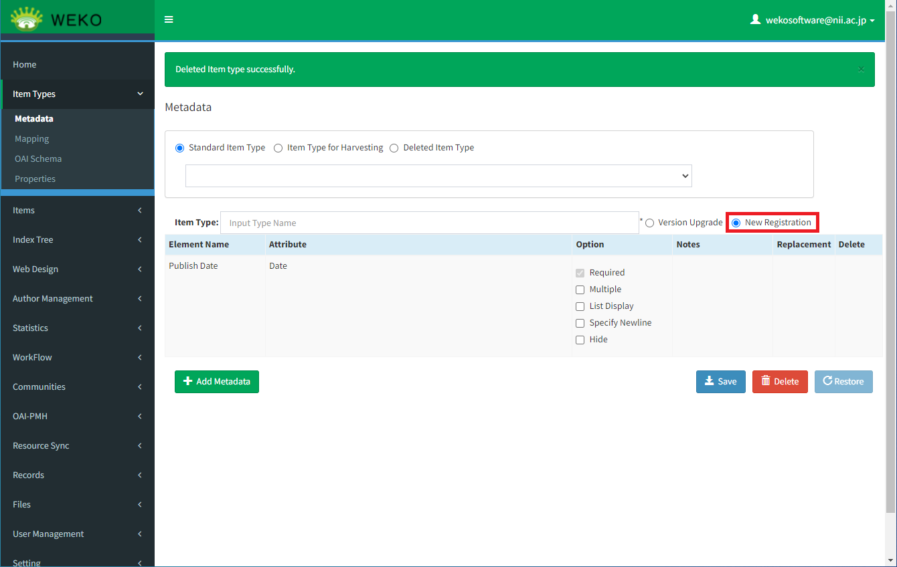
- Enter an item type name in the area next to "Item Type".
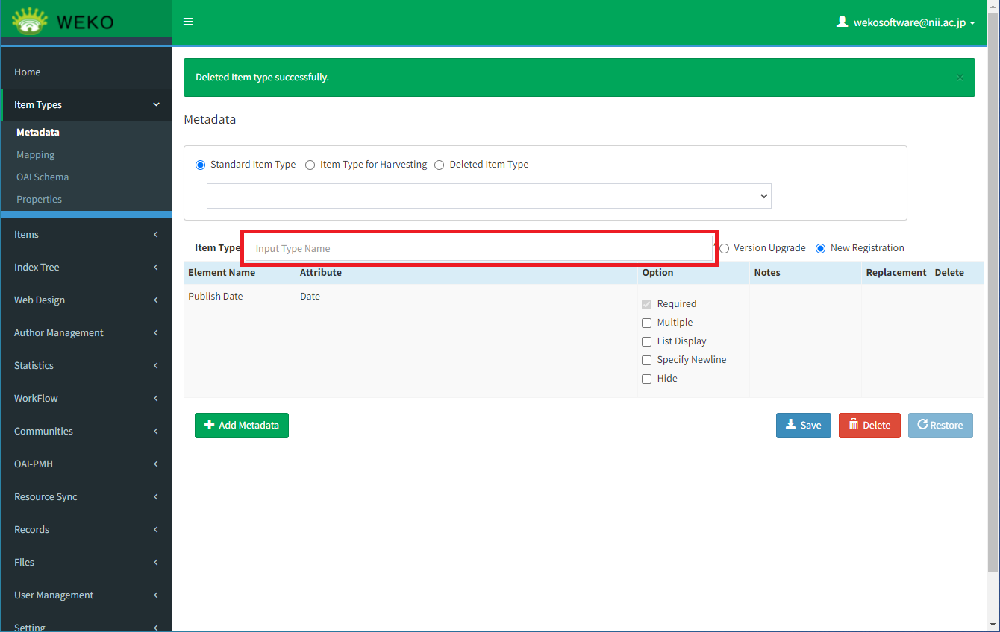
- To add a metadata attribute, click "Add Metadata".
An empty metadata attribute is added.
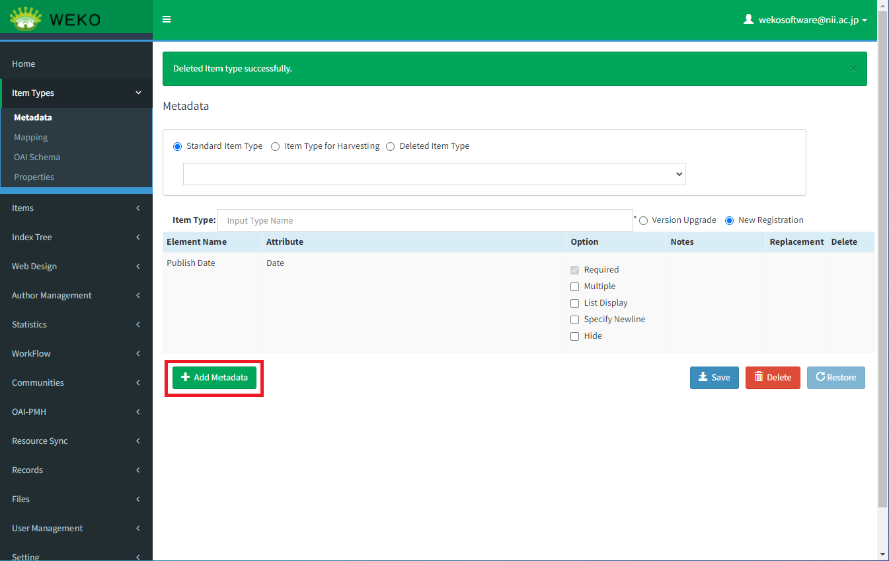
- Click "Save".
The item type is saved.
If you do not enter an item type name, the error message "Item type name is blank" appears when you click "Save".
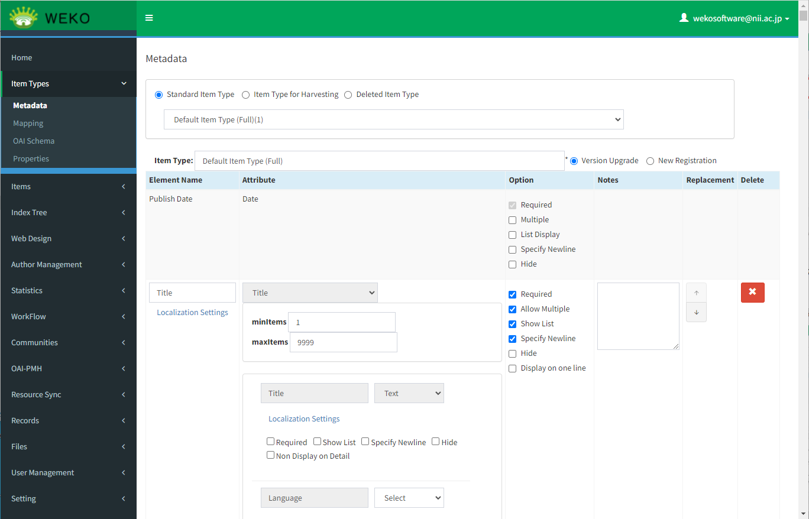
The newly created item type name is suffixed with "(1)" in the "Standard Item Type" list.
"Publish Date" is always displayed as a default element. Since this is a required field on the item registration screen, the option "Required" is checked and cannot be changed.
Copy item types
This section explains how to copy a specified item type.
Select an item type.
Check the "New Registration" radio button.
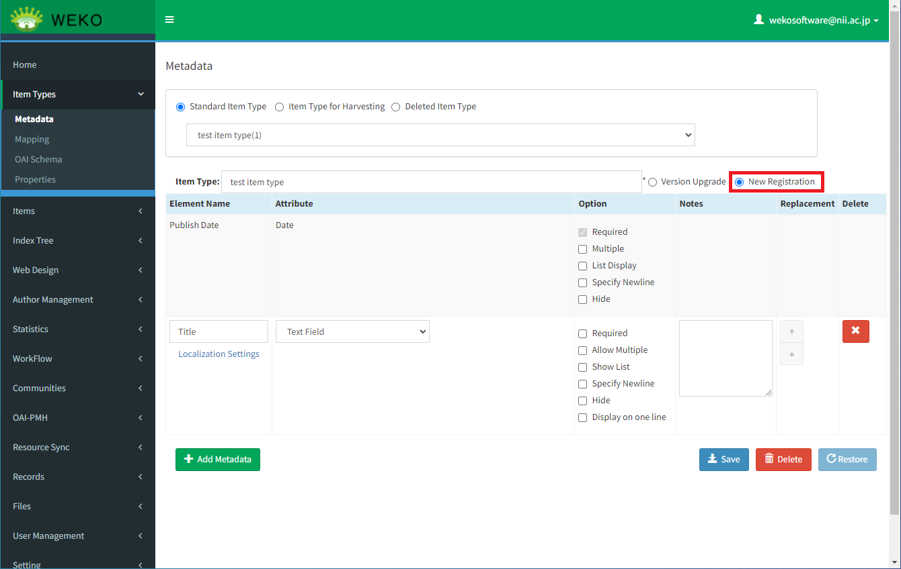
Enter an item type name.
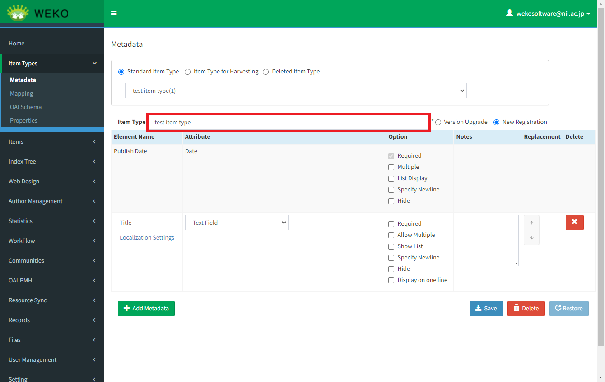
Click "Save".
The item type is copied.
If you click "Save" without changing the item type name from that of the source item type, the error message "Error: Failed to register Item type. Item type name is already in use." appears.
This section explains how to edit a metadata element name.
- Select an item type.
The metadata elements of the item type appear.
* You cannot modify the properties set for the item types (i.e. they appear inactive).
In the "Element Name" column for this metadata element, click "Localization Settings".
The input area for multilingual element names appears.
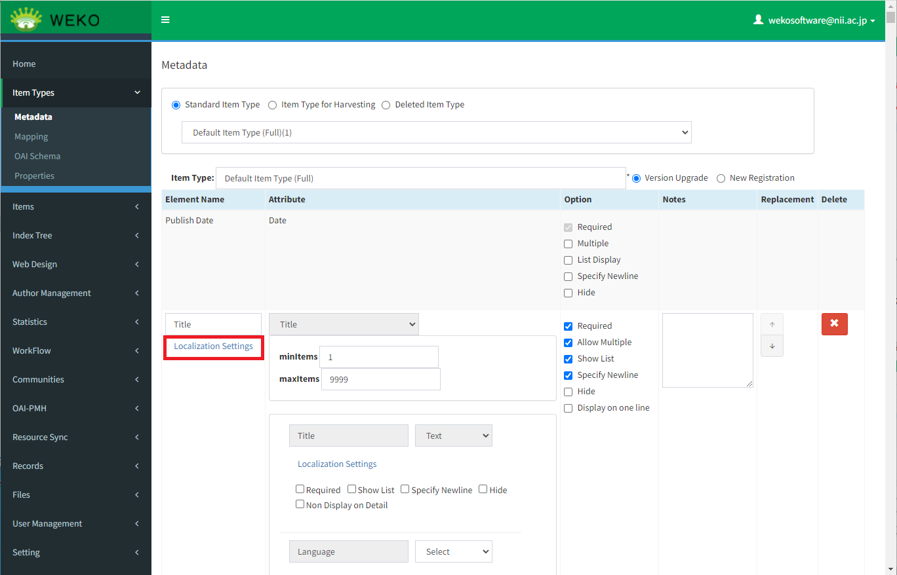
Edit the multilingual settings of the element.
The specified element name appears in the item registration/edit screen and the item detail screen. The supported languages are Japanese and English. If the system language is Japanese, the element name specified in "Japanese" appears. If the system language is set to other than Japanese, the element name specified in "English" appears.
If you leave these settings blank, the element name set in this screen appears regardless of the language setting for display.
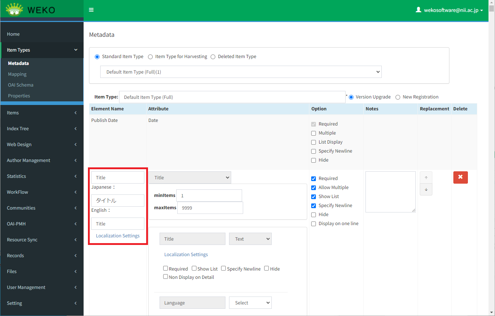
Click "Localization Settings" in the "Attribute" column for this metadata element.
The input area for multilingual child element names appears.
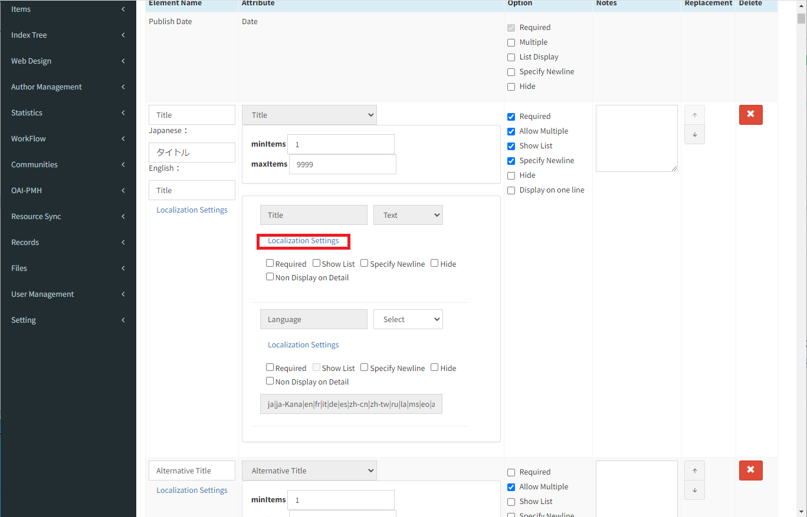
Edit the multilingual settings of the child element.
The specified information appears in the item registration/edit screen and the item detail screen.
The supported languages are Japanese and English. If the language setting for WEKO3 is set to Japanese, the child element name specified in "Japanese" appears. If it is set to other than Japanese, the child element name specified in "English" appears.
If you leave these child element names blank, the child element name set in the "Properties" screen appears.
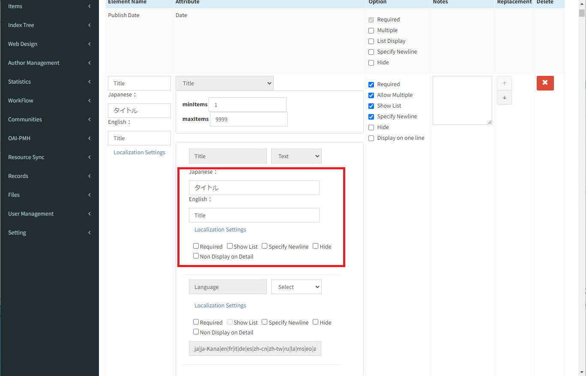
Click "Save".
The information you edited is saved to the item type.
This section explains how to add an attribute and rearrange the display order of elements.
Select an item type.
The metadata elements of the item type appear.
Below the metadata elements at the bottom of the screen, click "+Add Metadata".
An element is added.
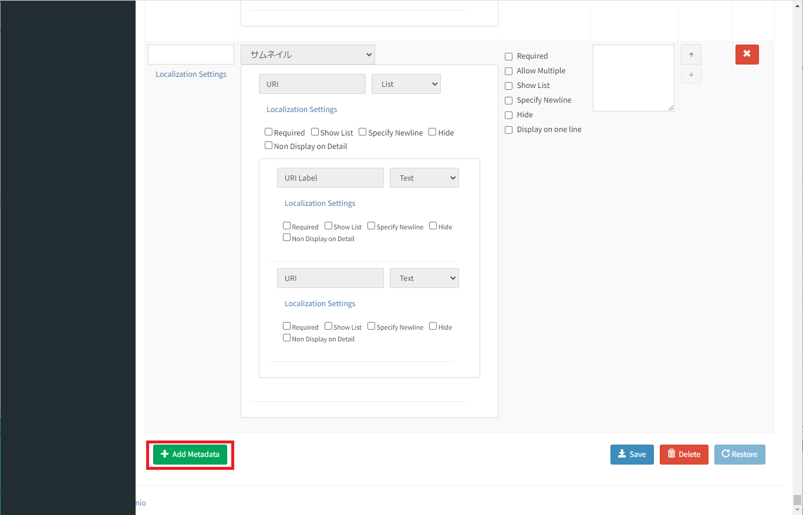
Click "X".
Click the "X" button to delete the metadata element.
Edit the input format for a child element of this metadata element.
If the input format of a child element is set to "Select", "Radios", or "Checkboxes", you can change the input format in the "Metadata" screen.
You can change the input format to "Select", "Radios", or "Checkboxes". For information on the input format settings, see "Table 2-1. Input formats for metadata attributes".
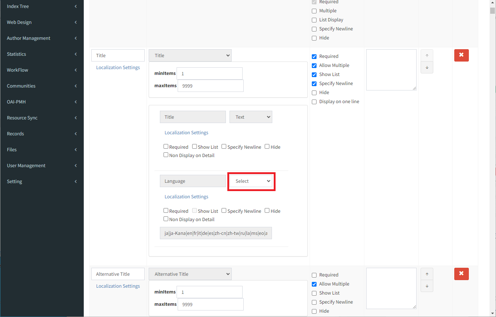
Edit the choices for a child element of this metadata element.
If you have specified "editAble":true in the "Properties" screen, you can edit the setting in this screen.
If you do not specify "editAble":true, the input area for the choices appears inactive.
For information on the setting of "editAble":true, see the notes in "Section 2.1.1. Add Properties".
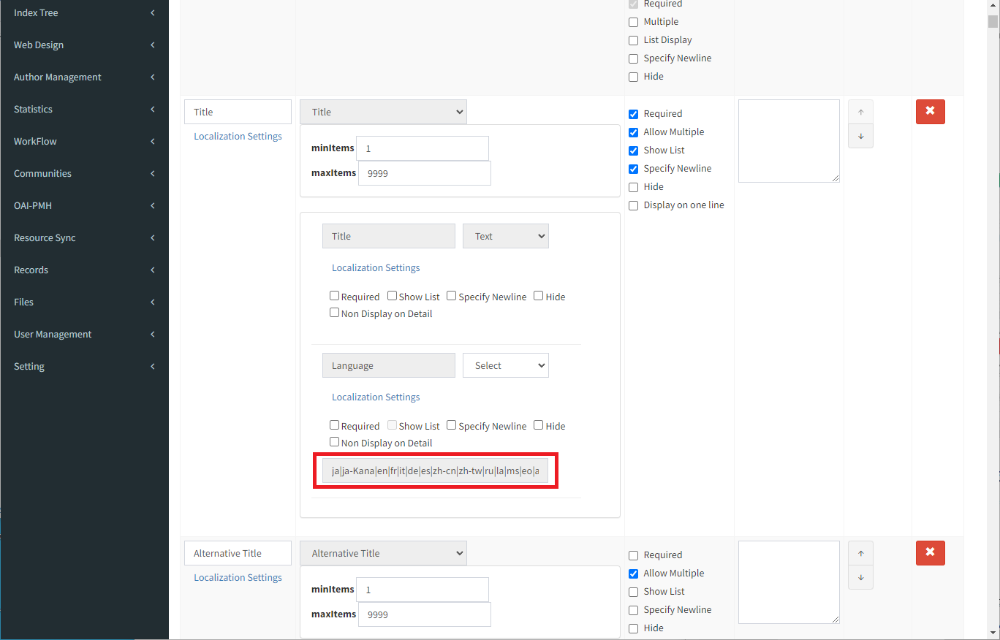
Edit the options for a metadata element.
You can specify options for an element by checking one or more of the "Required", "Allow Multiple", "Show List", "Specify Newline", or "Hide" checkboxes in the "Option" column.
The options also appear directly under the child element. You can check one or more of the "Required", "Show List", "Specify Newline", or "Hide" checkboxes.
Table 2-3. Elements available in "Option"
| Option | Description |
|---|---|
| Required | Displays "" during item registration and makes it a required metadata entry. |
| Allow Multiple | Displays "+New" during item registration and allows multiple metadata entries. |
| Show List | Displays metadata elements in the item list screen in a comma-separated form. As exceptions, author identifiers are displayed as icons, and files are displayed as separate links for each file type. |
| Specify Newline | Displays metadata elements in the item list screen in multiple lines with line breaks. |
| Hide | You can hide metadata details in the index, keyword search results, and item details. |
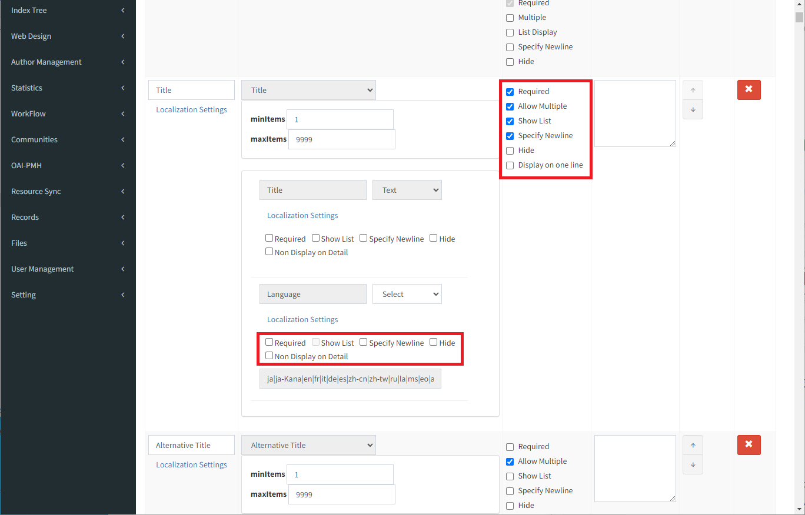
For information on the prioritization of options for parent and child elements, see "Table 2-4. Prioritization of options".
Table 2-4. Prioritization of options
Legend: 〇: Checked, -: Unchecked
| Parent element | Child element | Option |
|---|---|---|
| 〇 | - | Applied to the entire child elements. |
| - | 〇 | Applied only to a specified child element. |
| 〇 | 〇 | Works the same way as when the option is selected only for the parent. |
Rearrange the display order of elements.
Click the "↑" or "↓" button to move up or down the position of a metadata attribute in the input area.
The "↑" button is disabled for the element shown at the top. The "↓" button is disabled for the element shown at the bottom.
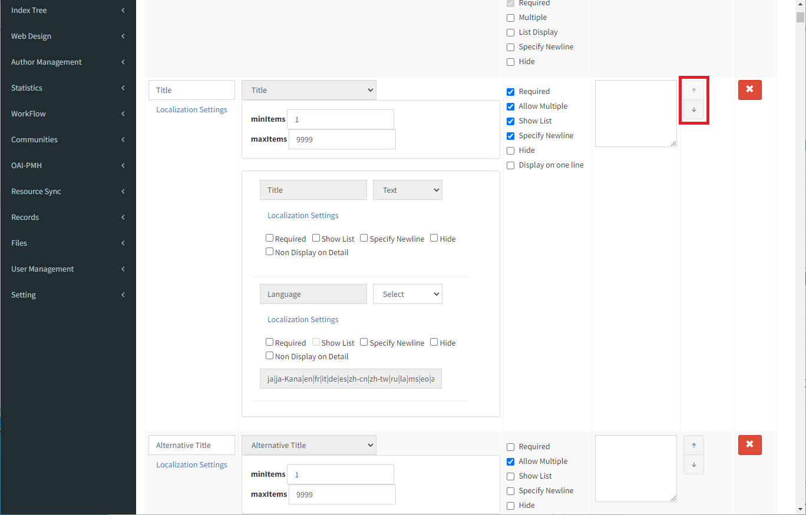
Click "Save".
The information you edited is saved to the item type.
Additional Information:
You can control whether the item type version needs to be upgraded or kept with WEKO_ITEMTYPES_UI_UPGRADE_VERSION_ENABLED in the configuration file (instance.cfg) (True: the version is upgraded; False: the version is kept). The standard configuration file (instance.cfg) sets it to False (the version is kept).
If the item type version is configured to be kept, your changes will be saved without upgrading the version.
When a new version is created because the version is configured to be upgraded, workflows that used the old version of the item type are automatically updated to use the new version.
[v2.1.0] The mapping of an item type is managed as one record per item type (version). When the mapping is saved together with the item type (when a new version is created, or when the version is configured to be kept), the existing mapping is overwritten.
You cannot save an item type while items are being imported with the import feature or while an import task is reserved. If you click "Save", the error message "Item type cannot be updated becase import is in progress." appears.
Even if the item type version is configured to be upgraded, the operations below will not be affected, and the version will be kept.
Change the options.
Rearrange the display order of elements.
Edit the note in the "Notes".
Keep the version and click "Save".
You can change the properties of an item type only if the change is between a Text property and a Textarea property.
For the following child elements for the properties, "Separate options with the | character" is displayed. These elements do not control information in the "Properties" screen. The choices are automatically populated when you register/edit items.
Creator properties: "Creator Identifier Scheme"
Contributor properties: "Contributor Identifier Scheme"
Rights holder properties: "Rights Holder Identifier Scheme"
File information properties: "Date Type", "Group", and "License"
"Creator Identifier Scheme", "Contributor Identifier Scheme", and "Rights Holder Identifier Scheme" appear when registering/editing items. These choices refer to "Scheme" in the "ID Prefix" tab of the Author Management > Edit screen.
Rename item types
This section explains how to rename an item type.
- Select an item type.
The name appears in the area next to "Item Type". Make sure that "Version Upgrade" is checked.
- Rename the item type name.
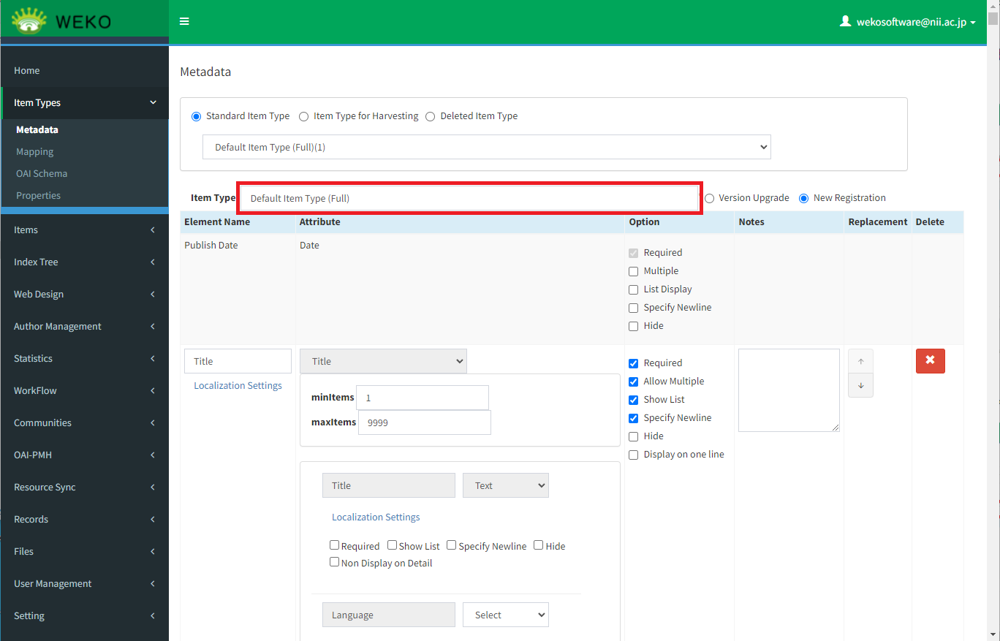
- Click "Save".
The new name of the item type is saved.
Delete item types
This section explains how to delete an item type.
NotesNotes:
You cannot create a new item using a deleted item type.
- Select an item type.
The name appears in the area next to "Item Type".
Click "Delete".
You are prompted to confirm the deletion.
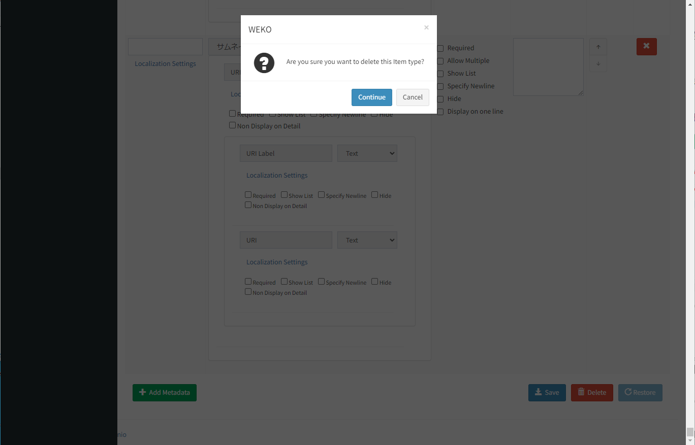
Notes:
You cannot delete item types for harvesting. If you click "Delete" for these item types, the confirmation dialog does not appear, and "Cannot delete item type for harvesting." appears on the screen.
- Click "Continue".
The item type is deleted.
Notes:
You cannot delete a standard item type if it is already used for registered items. If you try and click "Continue", a message appears stating that you cannot delete it because it is used for items.
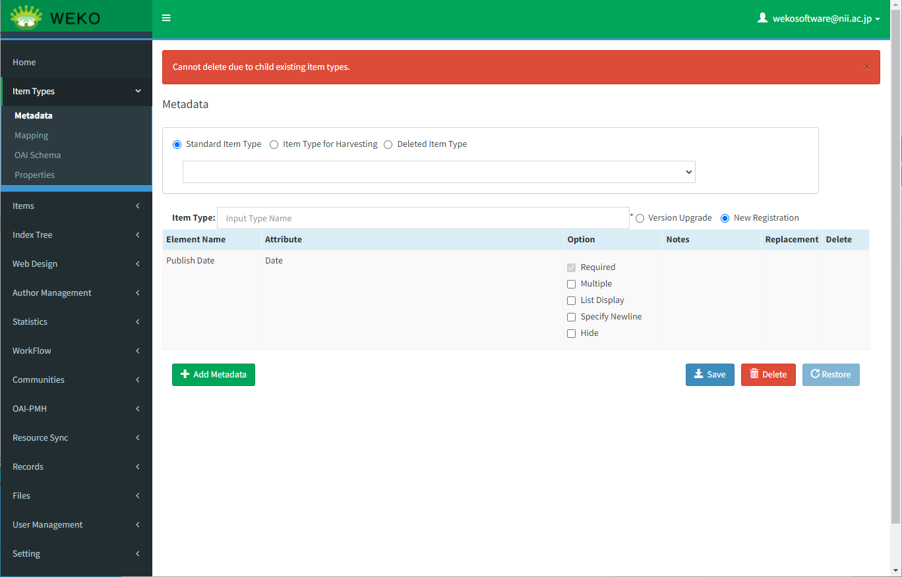
If an import is in progress with the bulk import feature or a reserved task exists, message No. 1 appears.
If the item type to be deleted is an item type for harvesting, message No. 2 appears. (The confirmation dialog does not appear, and "Cannot delete item type for harvesting." appears on the screen. On the Japanese screen, the same text as No. 2 appears.)
If items registered with the item type to be deleted already exist, message No. 3 appears.
If the item type to be deleted is set in a workflow, message No. 4 appears.
If the item type to be deleted is used in the JSON-LD import feature of the SWORD API settings, message No. 5 appears.
If an unexpected situation occurs, such as the item type not being found, the process is aborted and message No. 6 or 7 appears.
If all of the above checks are passed, the item type is deleted and message No. 8 appears.
Table 2-5. Messages displayed on deletion
| No. | Type | Message |
|---|---|---|
| 1 | ERROR | Cannot delete item type. Import is in progress. |
| 2 | ERROR | Cannot delete item type. It is used for harvesting. |
| 3 | ERROR | Cannot delete item type. Item of this type already exists. |
| 4 | ERROR | Cannot delete item type. It is used in some workflows. |
| 5 | ERROR | Cannot delete item type. It is used in SWORD API JSON-LD import settings. |
| 6 | ERROR | Item type not found. |
| 7 | ERROR | Unexpected error. Failed to delete item type. |
| 8 | SUCCESS | Deleted Item type successfully. |
Restore item types
This section explains how to restore a deleted item type. This operation can be performed only by the system administrator.
- Select "Deleted Item Type".
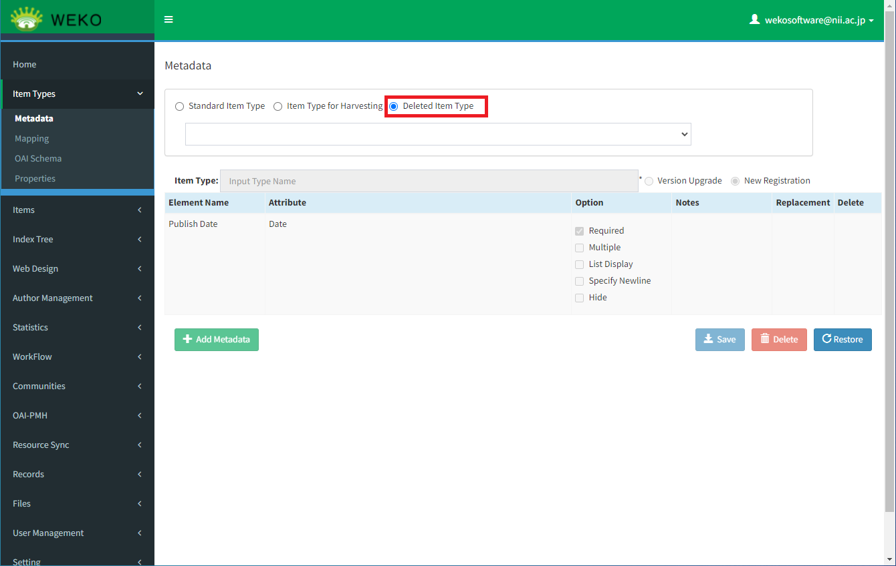
- Select an item type.
The metadata elements of the item type appear. Note that the elements and buttons appear inactive.
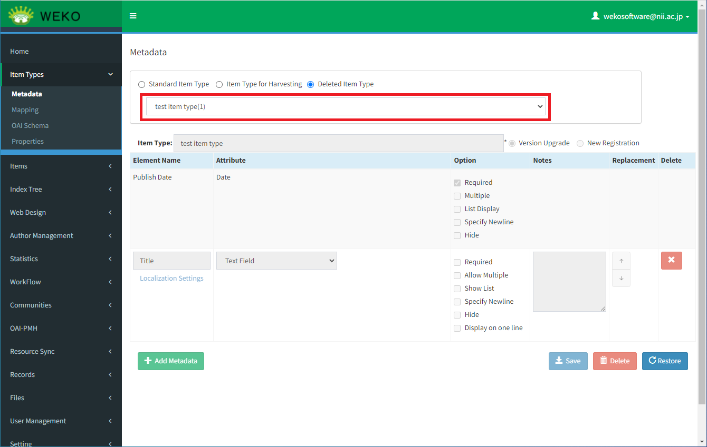
- Click "Restore".
The item type is restored.
The restored item type is added to the "Standard Item Type" list.
Export item types
You can export an item type as a ZIP file. An exported item type can be imported back.
Select "Standard Item Type".
Click "Export".
A ZIP file containing the definition of the item type is downloaded.
Import item types
You can import an exported item type as an item type.
Select "Standard Item Type".
Click "Import".
In "Zipfile", click the file selection button and select the ZIP file of the exported item type.
In "Item Type", enter the name of the item type to be imported.
Click "Execute Import". The item type is imported with the name you entered.
The imported item type is registered as a new standard item type. The mapping contained in the ZIP file is also registered as the mapping of that item type.
If the name you entered duplicates an existing item type, the import fails.
[Notes]
By default, only item types consisting solely of properties registered in the WEKO system can be imported.
If the import file contains unregistered properties, an error message appears and the import is aborted.
About the forced import feature
- This is an experimental feature. It is not provided in the JAIRO Cloud environment.
An administrator can enable the "forced import" feature, which executes the import even if unregistered properties are included, by manually setting WEKO_ITEMTYPES_UI_FORCED_IMPORT_ENABLED = True in the configuration file (instance.cfg) (the default is False).
When this feature is used, unregistered properties are also registered in WEKO when the item type is imported.
[Notes]
Even if the forced import feature is enabled, properties whose IDs duplicate existing properties are not imported. In that case, the item type is imported with those properties replaced by the existing properties that have the same IDs. If there are properties whose IDs are duplicated and whose contents (update dates) differ, the IDs and names of those properties are displayed in a message when the import is completed.
If the import file contains properties whose names duplicate existing properties, an error message appears and the import is aborted.
Troubleshooting item types
A green message area appears at the top of the item type edit screen after an update
After an update, a green message area may appear at the top of the item type edit screen. The message content varies depending on the item type and the environment.
This message appears when there is a data inconsistency that does not affect the operation. Saving the item type resolves the data inconsistency, and the message no longer appears.
Set up OAI schemas
To access the OAI Schema screen, click "Item Types" and then click "OAI Schema". This screen lists the schemas used for mapping, and you can add or remove any of the schemas.
About schemas that support mapping
The WEKO3 system can provide metadata supported by other external systems using metadata harvesting protocols such as OAI-PMH or BIBTEX.
To link item metadata to protocol elements, you need to know what information each piece of metadata has.
Set the following schema associations and languages for each metadata attribute of an item type.
JPCOAR
JPCOAR v1
JPCOAR v2
Dublin Core
DDI
lom
The metadata serving capabilities generate metadata output based on the mapping information for the item type. For detailed terminology, refer to the respective official Websites of these schemas.
The WEKO3 system supports adding and configuring JPCOAR, JPCOAR v1, JPCOAR v2, Dublin Core, DDI, and lom schemas.
- Click "+Add Schema".
The setting screen appears.
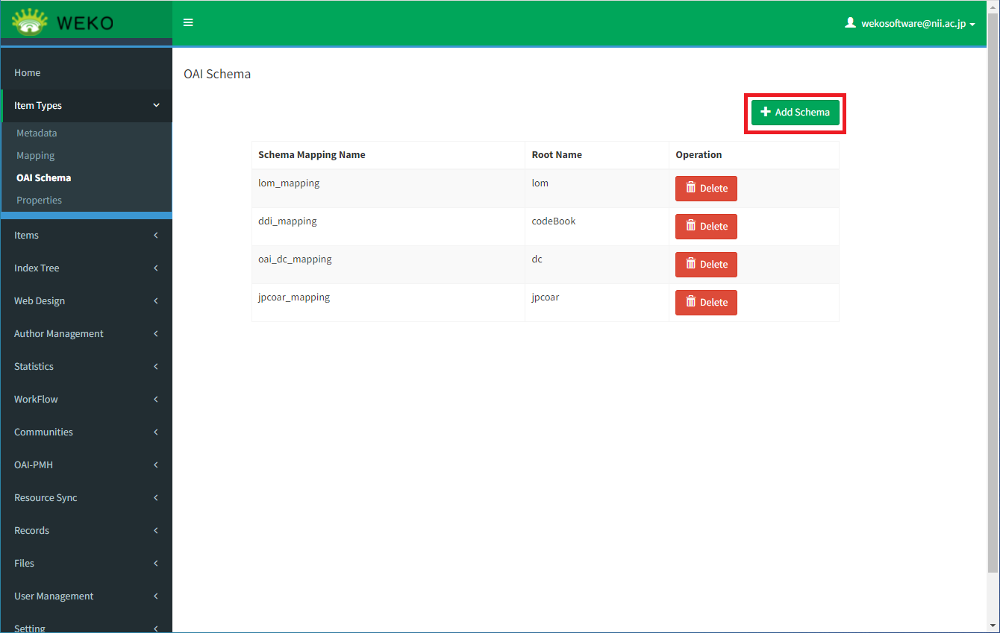
- Add a schema mapping file and specify information in the required fields.
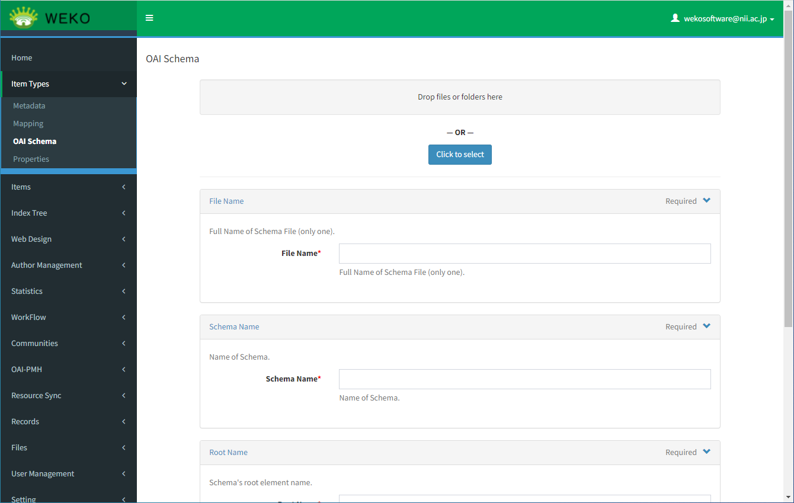
Notes:
For "Schema Name", you must specify the following schema names to generate OAI-PMH output.
Dublin Core schema: oai_dc
JPCOAR schema: jpcoar
DDI schema: ddi
For "Root Name", you need to specify the following schema names.
Dublin Core schema: dc
JPCOAR schema: jpcoar
DDI schema: codeBook
- Click "Save".
The schemas are added.
Delete schemas
- Click "Delete".
The schema is deleted.
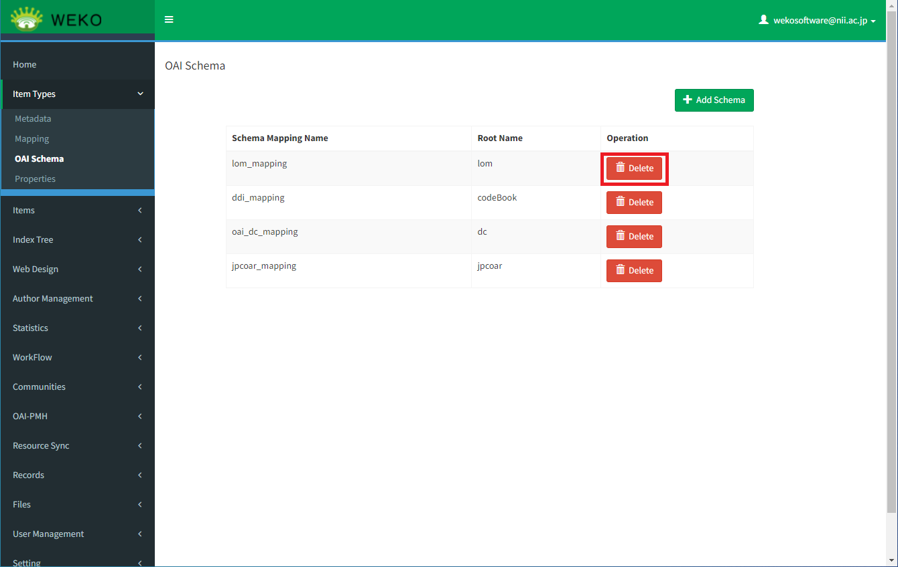
Map item types to schemas
Map item types
This section explains how to map an item type to a schema. You first need to add the schema before starting this operation. For information on adding schemas, see "Section 2.3. Set up OAI schemas".
To access the screen where you can edit mapping, click "Item Types" and then click "Mapping".
The mapping information set in this screen is referenced when generating OAI-PMH output in the item detail screen.
Select an item type for "Item Type (Source)" and a schema for "Schema (Target)".
The values appear in "Element (Parent)" and "Schema (Parent)".
Select an attribute for "Schema (Parent)" from the pull-down list to be mapped to "Element (Parent)", or check the radio button on the left in "Schema (Parent)".
The child attributes appear.
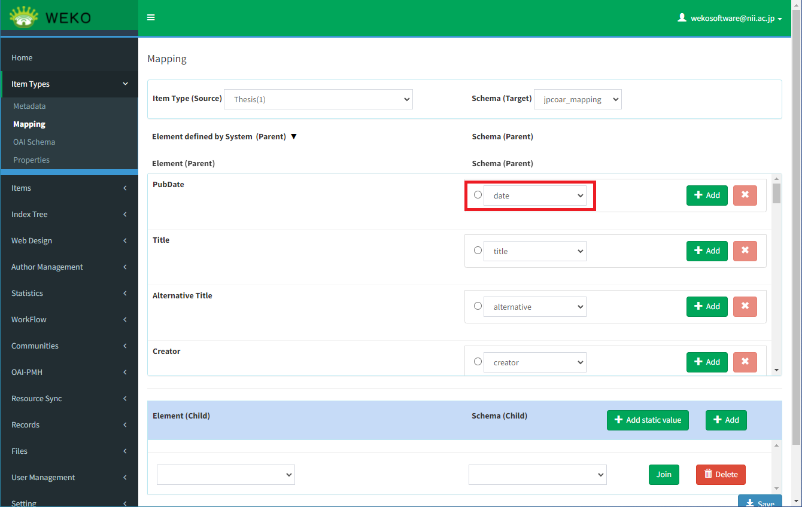
Select an attribute for "Schema (Child)" from the pull-down list.
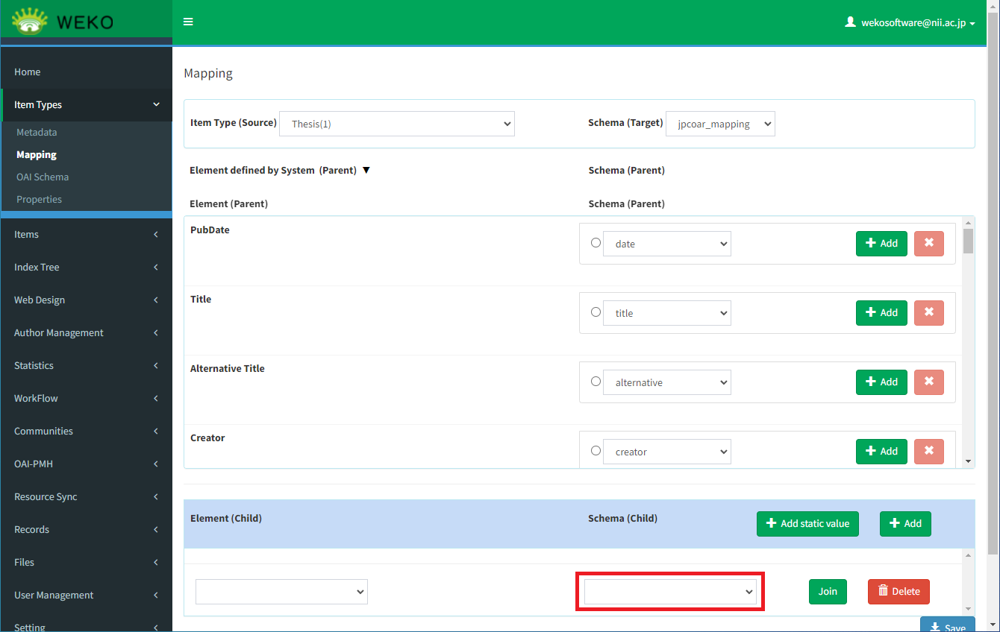
To add an attribute, click "+Add".
An element is added.
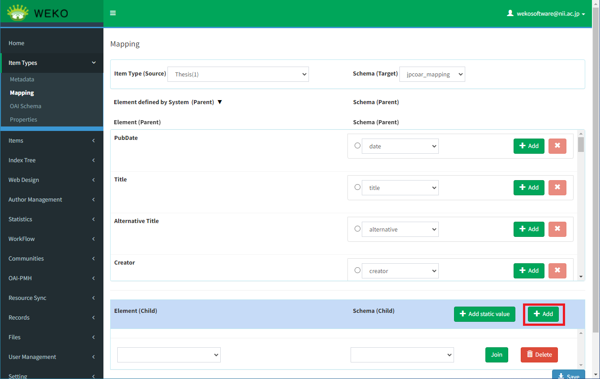
Click "Save".
The information you specified is saved.
If you want to map multiple child properties to a single child element, click "Join".
You can map multiple child properties to a single child element by inserting a comma (,) in the input field.
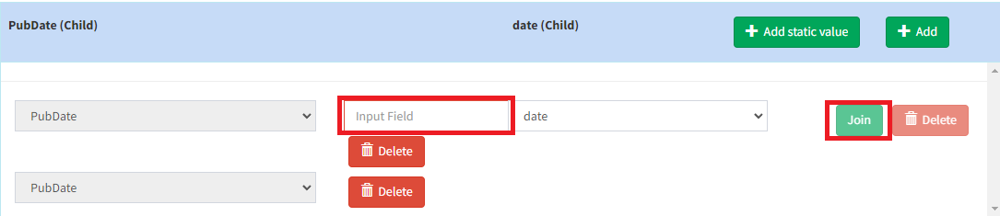
To output a fixed value to a child element, click "+Add static value".
An input field ("Input static value") is added. The value you enter is output to the child element.
Notes:
If an error occurs because of the mapping, restore the original mapping settings. If the problem is not solved, contact your system administrator.
Map an item type added by the System
Select an item type for "Item Type (Source)" and a schema for "Schema (Target)".
The values appear in "Element (Parent)" and "Schema (Parent)".
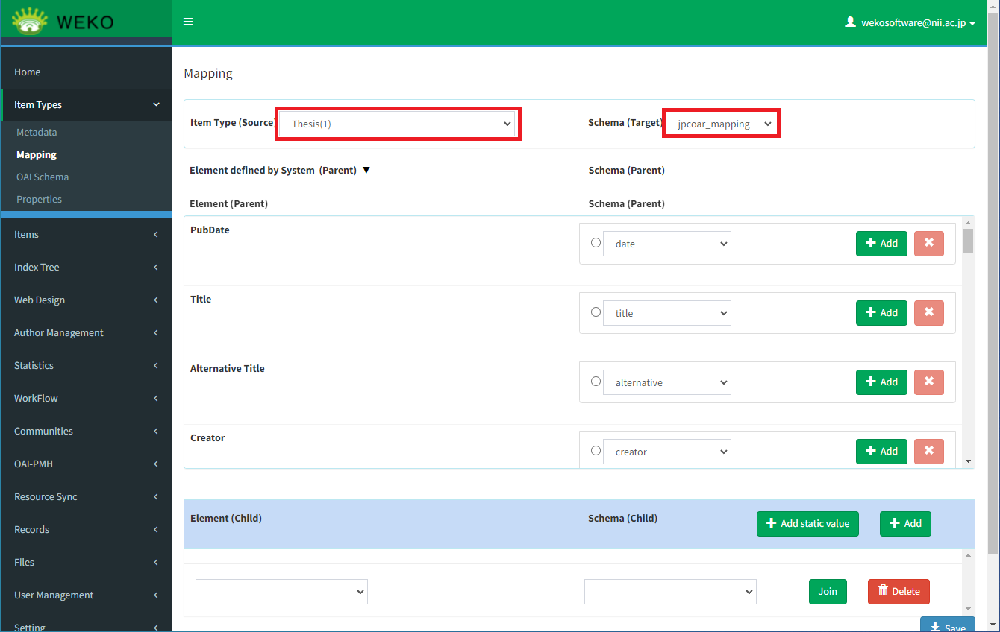
Click "Element defined by System (Parent)".
The mapping area for "Element defined by System (Parent)" appears.
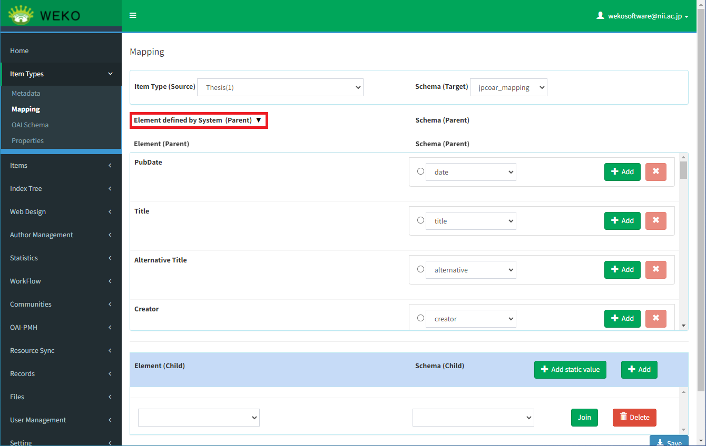
Select an attribute for "Schema (Parent)" from the pull-down list to be mapped to "Persistent Identifier (DOI)", then check the radio button on the left in "Schema (Parent)".
The child attributes appear.
Select an attribute for "Schema (Parent)" from the pull-down list to be mapped to "File Information", then check the radio button on the left in "Schema (Parent)".
For a file URL to generate OAI-PMH output for "File Information", you need to set up a mapping to "system_file" for the JPCOAR schema (parent), along with a mapping to "Information" or "Billing File Information" in "Item Type (Parent)".
Click "Save".
The information you specified is saved.
Notes:
If you want to map the same schema to different properties, you need to set up the same mappings for all those properties, including the Schema (child). If the same mappings are not used, the message "Duplicate mapping as below" will be displayed, and you cannot save the mapping information.
* Mapping an item type added by the System can be performed only by system administrators.
Set up the JSON-LD mapping
This section explains how to map metadata provided from external systems (in the JSON-LD format) to the schema of an item type. The item type to be mapped needs to be defined beforehand.
To access the mapping screen, click "Item Types" and then click "JSON-LD Mapping".
The mappings set up in this screen are used in the "JSON-LD" settings registered with the SWORD API function, and as the mappings selected on the "Items" > "RO-Crate Import" screen (see "Import items in the RO-Crate format").
Create a JSON-LD mapping
Click the "Create" tab.
Enter any name in "Name", and select the target item type in "Item Type".
Then enter the mapping text in "Mapping". Since no editor is currently provided for the mapping, paste a mapping definition text that you have prepared yourself directly into the text area.
Click "Save".
The information you specified is saved.
"Name", "Item Type", and "Mapping" are all required. If any of them is not entered, "The following items is required. Please recheck and input." appears, followed by the name of the missing item (Name, Item Type, or Mapping). If the mapping is not valid JSON, "Invalid JSON" appears.
When you save, the content of the mapping is checked. If there is a problem, the error messages appear in a dialog box, "Failed to validate mapping" appears, and the mapping is not saved. For the error messages, see "Troubleshooting the JSON-LD mapping".
Mapping example
The following is an example for the default item type (full). The keys on the left side are the property names of the item type and are used as they are defined in the item type (this is why some of them are in Japanese).
{
"APC": "rioxxterms:apc",
"APC.APC": "rioxxterms:apc.value",
"ID登録": "jpcoar:identifierRegistration",
"ID登録.ID登録": "jpcoar:identifierRegistration.value",
"ID登録.ID登録タイプ": "jpcoar:identifierRegistration.identifierType",
"公開日": "datePublished",
"その他のタイトル": "dcterms:alternative",
"その他のタイトル.その他のタイトル": "dcterms:alternative.value",
"その他のタイトル.言語": "dcterms:alternative.language",
"アクセス権": "dcterms:accessRights",
"アクセス権.アクセス権": "dcterms:accessRights.value",
"アクセス権.アクセス権URI": "dcterms:accessRights.rdf:resource",
"カタログ": "jpcoar:catalog",
"カタログ.Access Rights": "jpcoar:catalog.dcterms:accessRights",
"カタログ.Access Rights.アクセス権": "jpcoar:catalog.dcterms:accessRights.value",
"カタログ.Access Rights.アクセス権URI": "jpcoar:catalog.dcterms:accessRights.rdf:resource",
"カタログ.Descriptions": "jpcoar:catalog.datacite:description",
"カタログ.Descriptions.Description Type": "jpcoar:catalog.datacite:description.descriptionType",
"カタログ.Descriptions.Description": "jpcoar:catalog.datacite:description.value",
"カタログ.Descriptions.Language": "jpcoar:catalog.datacite:description.language",
"カタログ.Hosting Institution": "jpcoar:catalog.jpcoar:contributor",
"カタログ.Hosting Institution.Hosting Institution Name": "jpcoar:catalog.jpcoar:contributor.jpcoar:contributorName",
"カタログ.Hosting Institution.Hosting Institution Name.Hosting Institution Name": "jpcoar:catalog.jpcoar:contributor.jpcoar:contributorName.value",
"カタログ.Hosting Institution.Hosting Institution Name.Language": "jpcoar:catalog.jpcoar:contributor.jpcoar:contributorName.language",
"カタログ.Hosting Institution.Hosting Institution Type": "jpcoar:catalog.jpcoar:contributor.contributorType",
"カタログ.Identifier": "jpcoar:catalog.jpcoar:identifier",
"カタログ.Identifier.Identifier Type": "jpcoar:catalog.jpcoar:identifier.identifierType",
"カタログ.Identifier.Identifier": "jpcoar:catalog.jpcoar:identifier.value",
"カタログ.License": "jpcoar:catalog.jpcoar:license",
"カタログ.License.Language": "jpcoar:catalog.jpcoar:license.language",
"カタログ.License.License Type": "jpcoar:catalog.jpcoar:license.licenseType",
"カタログ.License.License": "jpcoar:catalog.jpcoar:license.value",
"カタログ.License.RDF Resource": "jpcoar:catalog.jpcoar:license.rdf:resource",
"カタログ.Rights": "jpcoar:catalog.dc:rights",
"カタログ.Rights.Language": "jpcoar:catalog.dc:rights.language",
"カタログ.Rights.RDF Resource": "jpcoar:catalog.dc:rights.rdf:resource",
"カタログ.Rights.Rights": "jpcoar:catalog.dc:rights.value",
"カタログ.Subject": "jpcoar:catalog.jpcoar:subject",
"カタログ.Subject.Language": "jpcoar:catalog.jpcoar:subject.language",
"カタログ.Subject.Subject Scheme": "jpcoar:catalog.jpcoar:subject.subjectScheme",
"カタログ.Subject.Subject URI": "jpcoar:catalog.jpcoar:subject.subjectURI",
"カタログ.Subject.Subject": "jpcoar:catalog.jpcoar:subject.value",
"カタログ.Thumbnail": "jpcoar:catalog.jpcoar:file",
"カタログ.Thumbnail.Thumbnail URI": "jpcoar:catalog.jpcoar:file.jpcoar:URI",
"カタログ.Thumbnail.Thumbnail URI.Object Type": "jpcoar:catalog.jpcoar:file.jpcoar:URI.objectType",
"カタログ.Thumbnail.Thumbnail URI.Thumbnail URI": "jpcoar:catalog.jpcoar:file.jpcoar:URI.value",
"カタログ.Title": "jpcoar:catalog.dc:title",
"カタログ.Title.Language": "jpcoar:catalog.dc:title.language",
"カタログ.Title.Title": "jpcoar:catalog.dc:title.value",
"タイトル": "dc:title",
"タイトル.タイトル": "dc:title.value",
"タイトル.言語": "dc:title.language",
"データセットシリーズ": "jpcoar:datasetSeries",
"データセットシリーズ.Dataset Series": "jpcoar:datasetSeries.value",
"バージョン情報": "datacite:version",
"バージョン情報.バージョン情報": "datacite:version.value",
"ファイル情報": "hasPart",
"ファイル情報.アクセス": "hasPart.dcterms:accessRights",
"ファイル情報.グループ": "hasPart.department",
"ファイル情報.サイズ": "hasPart.jpcoar:extent",
"ファイル情報.サイズ.サイズ": "hasPart.jpcoar:extent.value",
"ファイル情報.バージョン情報": "hasPart.datacite:version",
"ファイル情報.ファイル名": "hasPart.name",
"ファイル情報.フォーマット": "hasPart.jpcoar:mimeType",
"ファイル情報.ライセンス": "hasPart.license",
"ファイル情報.公開日.タイプ": "$Available",
"ファイル情報.公開日.公開日": "hasPart.datePublished",
"ファイル情報.日付": "hasPart.datacite:date",
"ファイル情報.日付.日付": "hasPart.datacite:date.value",
"ファイル情報.日付.日付タイプ": "hasPart.datacite:date.dateType",
"ファイル情報.本文URL": "hasPart.jpcoar:URI",
"ファイル情報.本文URL.オブジェクトタイプ": "hasPart.jpcoar:URI.objectType",
"ファイル情報.本文URL.ラベル": "hasPart.@id",
"ファイル情報.本文URL.本文URL": "hasPart.jpcoar:URI.value",
"ファイル情報.表示形式": "hasPart.jpcoar:format",
"ページ数": "jpcoar:numPages",
"ページ数.ページ数": "jpcoar:numPages.value",
"主題": "jpcoar:subject",
"主題.主題": "jpcoar:subject.value",
"主題.主題Scheme": "jpcoar:subject.subjectScheme",
"主題.主題URI": "jpcoar:subject.subjectURI",
"主題.言語": "jpcoar:subject.language",
"会議記述": "jpcoar:conference",
"会議記述.主催機関": "jpcoar:conference.jpcoar:conferenceSponsor",
"会議記述.主催機関.主催機関": "jpcoar:conference.jpcoar:conferenceSponsor.value",
"会議記述.主催機関.言語": "jpcoar:conference.jpcoar:conferenceSponsor.language",
"会議記述.会議名": "jpcoar:conference.jpcoar:conferenceName",
"会議記述.会議名.会議名": "jpcoar:conference.jpcoar:conferenceName.value",
"会議記述.会議名.言語": "jpcoar:conference.jpcoar:conferenceName.language",
"会議記述.回次": "jpcoar:conference.jpcoar:conferenceSequence",
"会議記述.開催会場": "jpcoar:conference.jpcoar:conferenceVenue",
"会議記述.開催会場.言語": "jpcoar:conference.jpcoar:conferenceVenue.language",
"会議記述.開催会場.開催会場": "jpcoar:conference.jpcoar:conferenceVenue.value",
"会議記述.開催国": "jpcoar:conference.jpcoar:conferenceCountry",
"会議記述.開催地": "jpcoar:conference.jpcoar:conferencePlace",
"会議記述.開催地.言語": "jpcoar:conference.jpcoar:conferencePlace.language",
"会議記述.開催地.開催地": "jpcoar:conference.jpcoar:conferencePlace.value",
"会議記述.開催期間": "jpcoar:conference.jpcoar:conferenceDate.language",
"会議記述.開催期間.終了年": "jpcoar:conference.jpcoar:conferenceDate.endYear",
"会議記述.開催期間.終了日": "jpcoar:conference.jpcoar:conferenceDate.endDay",
"会議記述.開催期間.終了月": "jpcoar:conference.jpcoar:conferenceDate.endMonth",
"会議記述.開催期間.言語": "jpcoar:conference.jpcoar:conferenceDate",
"会議記述.開催期間.開催期間": "jpcoar:conference.jpcoar:conferenceDate.value",
"会議記述.開催期間.開始年": "jpcoar:conference.jpcoar:conferenceDate.startYear",
"会議記述.開催期間.開始日": "jpcoar:conference.jpcoar:conferenceDate.startDay",
"会議記述.開催期間.開始月": "jpcoar:conference.jpcoar:conferenceDate.startMonth",
"位置情報": "datacite:geoLocation",
"位置情報.位置情報（点）": "datacite:geoLocation.datacite:geoLocationPoint",
"位置情報.位置情報（点）.経度": "datacite:geoLocation.datacite:geoLocationPoint.datacite:pointLongitude",
"位置情報.位置情報（点）.緯度": "datacite:geoLocation.datacite:geoLocationPoint.datacite:pointLatitude",
"位置情報.位置情報（空間）": "datacite:geoLocation.datacite:geoLocationBox",
"位置情報.位置情報（空間）.北部緯度": "datacite:geoLocation.datacite:geoLocationBox.datacite:northBoundLatitude",
"位置情報.位置情報（空間）.南部緯度": "datacite:geoLocation.datacite:geoLocationBox.datacite:southBoundLatitude",
"位置情報.位置情報（空間）.東部経度": "datacite:geoLocation.datacite:geoLocationBox.datacite:eastBoundLongitude",
"位置情報.位置情報（空間）.西部経度": "datacite:geoLocation.datacite:geoLocationBox.datacite:westBoundLongitude",
"位置情報.位置情報（自由記述）": "datacite:geoLocation.datacite:geoLocationPlace",
"位置情報.位置情報（自由記述）.位置情報（自由記述）": "datacite:geoLocation.datacite:geoLocationPlace.value",
"作成者": "jpcoar:creator",
"作成者.作成者タイプ": "jpcoar:creator.creatorType",
"作成者.作成者メールアドレス": "jpcoar:creator.email",
"作成者.作成者メールアドレス.メールアドレス": "jpcoar:creator.email.value",
"作成者.作成者別名": "jpcoar:creator.jpcoar:creatorAlternative",
"作成者.作成者別名.別名": "jpcoar:creator.jpcoar:creatorAlternative.value",
"作成者.作成者別名.言語": "jpcoar:creator.jpcoar:creatorAlternative.language",
"作成者.作成者名": "jpcoar:creator.jpcoar:givenName",
"作成者.作成者名.名": "jpcoar:creator.jpcoar:givenName.value",
"作成者.作成者名.言語": "jpcoar:creator.jpcoar:givenName.language",
"作成者.作成者姓": "jpcoar:creator.jpcoar:familyName",
"作成者.作成者姓.姓": "jpcoar:creator.jpcoar:familyName.value",
"作成者.作成者姓.言語": "jpcoar:creator.jpcoar:familyName.language",
"作成者.作成者姓名": "jpcoar:creator.jpcoar:creatorName",
"作成者.作成者姓名.名前タイプ": "jpcoar:creator.jpcoar:creatorName.nameType",
"作成者.作成者姓名.姓名": "jpcoar:creator.jpcoar:creatorName.value",
"作成者.作成者姓名.言語": "jpcoar:creator.jpcoar:creatorName.language",
"作成者.作成者所属": "jpcoar:creator.jpcoar:affiliation",
"作成者.作成者所属.所属機関名": "jpcoar:creator.jpcoar:affiliation.jpcoar:affiliationName",
"作成者.作成者所属.所属機関名.所属機関名": "jpcoar:creator.jpcoar:affiliation.jpcoar:affiliationName.value",
"作成者.作成者所属.所属機関名.言語": "jpcoar:creator.jpcoar:affiliation.jpcoar:affiliationName.language",
"作成者.作成者所属.所属機関識別子": "jpcoar:creator.jpcoar:affiliation.jpcoar:nameIdentifier",
"作成者.作成者所属.所属機関識別子.所属機関識別子": "jpcoar:creator.jpcoar:affiliation.jpcoar:nameIdentifier.value",
"作成者.作成者所属.所属機関識別子.所属機関識別子Scheme": "jpcoar:creator.jpcoar:affiliation.jpcoar:nameIdentifier.nameIdentifierScheme",
"作成者.作成者所属.所属機関識別子.所属機関識別子URI": "jpcoar:creator.jpcoar:affiliation.jpcoar:nameIdentifier.nameIdentifierURI",
"作成者.作成者識別子": "jpcoar:creator.jpcoar:nameIdentifier",
"作成者.作成者識別子.作成者識別子": "jpcoar:creator.jpcoar:nameIdentifier.value",
"作成者.作成者識別子.作成者識別子Scheme": "jpcoar:creator.jpcoar:nameIdentifier.nameIdentifierScheme",
"作成者.作成者識別子.作成者識別子URI": "jpcoar:creator.jpcoar:nameIdentifier.nameIdentifierURI",
"内容記述": "datacite:description",
"内容記述.内容記述": "datacite:description.value",
"内容記述.内容記述タイプ": "datacite:description.descriptionType",
"内容記述.言語": "datacite:description.language",
"出版タイプ": "oaire:version",
"出版タイプ.出版タイプ": "oaire:version.value",
"出版タイプ.出版タイプResource": "oaire:version.rdf:resource",
"出版タイプ.査読の有無": "oaire:version.itemReviewed",
"出版者": "jpcoar:publisher",
"出版者.出版者": "dc:publisher.value",
"出版者.言語": "dc:publisher.language",
"出版者情報.出版地": "jpcoar:publisher.dcndl:location",
"出版者情報.出版地.出版地": "jpcoar:publisher.dcndl:location.value",
"出版者情報.出版地.言語": "jpcoar:publisher.dcndl:location.language",
"出版者情報.出版地（国名コード）": "jpcoar:publisher.dcndl:publicationPlace",
"出版者情報.出版地（国名コード）.出版地（国名コード）": "jpcoar:publisher.dcndl:publicationPlace.value",
"出版者情報.出版地（国名コード）.言語": "jpcoar:publisher.dcndl:publicationPlace.language",
"出版者情報.出版者名": "jpcoar:publisher.jpcoar:publisherName",
"出版者情報.出版者名.出版者名": "jpcoar:publisher.jpcoar:publisherName.value",
"出版者情報.出版者名.言語": "jpcoar:publisher.jpcoar:publisherName.language",
"出版者情報.出版者注記": "jpcoar:publisher.jpcoar:publisherDescription",
"出版者情報.出版者注記.出版者注記": "jpcoar:publisher.jpcoar:publisherDescription.value",
"出版者情報.出版者注記.言語": "jpcoar:publisher.jpcoar:publisherDescription.language",
"助成情報": "jpcoar:fundingReference",
"助成情報.プログラム情報": "jpcoar:fundingReference.jpcoar:fundingStream",
"助成情報.プログラム情報.プログラム情報": "jpcoar:fundingReference.jpcoar:fundingStream.value",
"助成情報.プログラム情報.言語": "jpcoar:fundingReference.jpcoar:fundingStream.language",
"助成情報.プログラム情報識別子": "jpcoar:fundingReference.jpcoar:fundingStreamIdentifier",
"助成情報.プログラム情報識別子.プログラム情報識別子": "jpcoar:fundingReference.jpcoar:fundingStreamIdentifier.value",
"助成情報.プログラム情報識別子.プログラム情報識別子タイプ": "jpcoar:fundingReference.jpcoar:fundingStreamIdentifier.fundingStreamIdentifierType",
"助成情報.プログラム情報識別子.プログラム情報識別子タイプURI": "jpcoar:fundingReference.jpcoar:fundingStreamIdentifier.fundingStreamIdentifierTypeURI",
"助成情報.助成機関名": "jpcoar:fundingReference.jpcoar:funderName",
"助成情報.助成機関名.助成機関名": "jpcoar:fundingReference.jpcoar:funderName.value",
"助成情報.助成機関名.言語": "jpcoar:fundingReference.jpcoar:funderName.language",
"助成情報.助成機関識別子": "jpcoar:fundingReference.jpcoar:funderIdentifier",
"助成情報.助成機関識別子.助成機関識別子": "jpcoar:fundingReference.jpcoar:funderIdentifier.value",
"助成情報.助成機関識別子.助成機関識別子URI": "jpcoar:fundingReference.jpcoar:funderIdentifier.funderIdentifierTypeURI",
"助成情報.助成機関識別子.助成機関識別子タイプ": "jpcoar:fundingReference.jpcoar:funderIdentifier.funderIdentifierType",
"助成情報.研究課題名": "jpcoar:fundingReference.jpcoar:awardTitle",
"助成情報.研究課題名.研究課題名": "jpcoar:fundingReference.jpcoar:awardTitle.value",
"助成情報.研究課題名.言語": "jpcoar:fundingReference.jpcoar:awardTitle.language",
"助成情報.研究課題番号": "jpcoar:fundingReference.jpcoar:awardNumber",
"助成情報.研究課題番号.研究課題番号": "jpcoar:fundingReference.jpcoar:awardNumber.value",
"助成情報.研究課題番号.研究課題番号URI": "jpcoar:fundingReference.jpcoar:awardNumber.awardURI",
"助成情報.研究課題番号.研究課題番号タイプ": "jpcoar:fundingReference.jpcoar:awardNumber.awardNumberType",
"原文の言語": "dcndl:originalLanguage",
"原文の言語.Original Language": "dcndl:originalLanguage.value",
"収録物名": "jpcoar:sourceTitle",
"収録物名.収録物名": "jpcoar:sourceTitle.value",
"収録物名.言語": "jpcoar:sourceTitle.language",
"収録物識別子": "jpcoar:sourceIdentifier",
"収録物識別子.収録物識別子": "jpcoar:sourceIdentifier.value",
"収録物識別子.収録物識別子タイプ": "jpcoar:sourceIdentifier.identifierType",
"号": "jpcoar:issue",
"号.号": "jpcoar:issue.value",
"大きさ": "dcterms:extent",
"大きさ.Extent": "dcterms:extent.value",
"大きさ.Language": "dcterms:extent.language",
"学位名": "dcndl:degreeName",
"学位名.学位名": "dcndl:degreeName.value",
"学位名.言語": "dcndl:degreeName.language",
"学位授与年月日": "dcndl:dateGranted",
"学位授与年月日.学位授与年月日": "dcndl:dateGranted.value",
"学位授与機関": "jpcoar:degreeGrantor",
"学位授与機関.学位授与機関名": "jpcoar:degreeGrantor.jpcoar:degreeGrantorName",
"学位授与機関.学位授与機関名.学位授与機関名": "jpcoar:degreeGrantor.jpcoar:degreeGrantorName.value",
"学位授与機関.学位授与機関名.言語": "jpcoar:degreeGrantor.jpcoar:degreeGrantorName.language",
"学位授与機関.学位授与機関識別子": "jpcoar:degreeGrantor.jpcoar:nameIdentifier",
"学位授与機関.学位授与機関識別子.学位授与機関識別子": "jpcoar:degreeGrantor.jpcoar:nameIdentifier.value",
"学位授与機関.学位授与機関識別子.学位授与機関識別子Scheme": "jpcoar:degreeGrantor.jpcoar:nameIdentifier.nameIdentifierScheme",
"学位授与番号": "dcndl:dissertationNumber",
"学位授与番号.学位授与番号": "dcndl:dissertationNumber.value",
"寄与者": "jpcoar:contributor",
"寄与者.寄与者タイプ": "jpcoar:contributor.contributorType",
"寄与者.寄与者メールアドレス": "jpcoar:contributor.email",
"寄与者.寄与者メールアドレス.メールアドレス": "jpcoar:contributor.email.value",
"寄与者.寄与者別名": "jpcoar:contributor.jpcoar:contributorAlternative",
"寄与者.寄与者別名.別名": "jpcoar:contributor.jpcoar:contributorAlternative.value",
"寄与者.寄与者別名.言語": "jpcoar:contributor.jpcoar:contributorAlternative.language",
"寄与者.寄与者名": "jpcoar:contributor.jpcoar:givenName",
"寄与者.寄与者名.名": "jpcoar:contributor.jpcoar:givenName.value",
"寄与者.寄与者名.言語": "jpcoar:contributor.jpcoar:givenName.language",
"寄与者.寄与者姓": "jpcoar:contributor.jpcoar:familyName",
"寄与者.寄与者姓.姓": "jpcoar:contributor.jpcoar:familyName.value",
"寄与者.寄与者姓.言語": "jpcoar:contributor.jpcoar:familyName.language",
"寄与者.寄与者姓名": "jpcoar:contributor.jpcoar:contributorName",
"寄与者.寄与者姓名.名前タイプ": "jpcoar:contributor.jpcoar:contributorName.nameType",
"寄与者.寄与者姓名.姓名": "jpcoar:contributor.jpcoar:contributorName.value",
"寄与者.寄与者姓名.言語": "jpcoar:contributor.jpcoar:contributorName.language",
"寄与者.寄与者所属": "jpcoar:contributor.jpcoar:affiliation",
"寄与者.寄与者所属.所属機関名": "jpcoar:contributor.jpcoar:affiliationjpcoar:affiliationName",
"寄与者.寄与者所属.所属機関名.所属機関名": "jpcoar:contributor.jpcoar:affiliationjpcoar:affiliationName.value",
"寄与者.寄与者所属.所属機関名.言語": "jpcoar:contributor.jpcoar:affiliationjpcoar:affiliationName.language",
"寄与者.寄与者所属.所属機関識別子": "jpcoar:contributor.jpcoar:affiliation.jpcoar:nameIdentifier",
"寄与者.寄与者所属.所属機関識別子.所属機関識別子": "jpcoar:contributor.jpcoar:affiliation.jpcoar:nameIdentifier.value",
"寄与者.寄与者所属.所属機関識別子.所属機関識別子Scheme": "jpcoar:contributor.jpcoar:affiliation.jpcoar:nameIdentifier.nameIdentifierScheme",
"寄与者.寄与者所属.所属機関識別子.所属機関識別子URI": "jpcoar:contributor.jpcoar:affiliation.jpcoar:nameIdentifier.nameIdentifierURI",
"寄与者.寄与者識別子": "jpcoar:contributor.jpcoar:nameIdentifier",
"寄与者.寄与者識別子.寄与者識別子": "jpcoar:contributor.jpcoar:nameIdentifier.value",
"寄与者.寄与者識別子.寄与者識別子Scheme": "jpcoar:contributor.jpcoar:nameIdentifier.nameIdentifierScheme",
"寄与者.寄与者識別子.寄与者識別子URI": "jpcoar:contributor.jpcoar:nameIdentifier.nameIdentifierURI",
"巻": "jpcoar:volume",
"巻.巻": "jpcoar:volume.value",
"所蔵機関": "jpcoar:holdingAgent",
"所蔵機関.所蔵機関名": "jpcoar:holdingAgent.jpcoar:holdingAgentName",
"所蔵機関.所蔵機関名.Language": "jpcoar:holdingAgent.jpcoar:holdingAgentName.language",
"所蔵機関.所蔵機関名.所蔵機関名": "jpcoar:holdingAgent.jpcoar:holdingAgentName.value",
"所蔵機関.所蔵機関識別子": "jpcoar:holdingAgent.jpcoar:holdingAgentNameIdentifier",
"所蔵機関.所蔵機関識別子.所蔵機関識別子": "jpcoar:holdingAgent.jpcoar:holdingAgentNameIdentifier.value",
"所蔵機関.所蔵機関識別子.所蔵機関識別子URI": "jpcoar:holdingAgent.jpcoar:holdingAgentNameIdentifier.nameIdentifierURI",
"所蔵機関.所蔵機関識別子.所蔵機関識別子スキーマ": "jpcoar:holdingAgent.jpcoar:holdingAgentNameIdentifier.nameIdentifierScheme",
"日付": "datacite:date",
"日付.日付": "datacite:date.value",
"日付.日付タイプ": "datacite:date.dateType",
"日付（リテラル）": "dcterms:date",
"日付（リテラル）.日付（リテラル）": "dcterms:date.value",
"日付（リテラル）.言語": "dcterms:date.language",
"時間的範囲": "dcterms:temporal",
"時間的範囲.時間的範囲": "dcterms:temporal.value",
"時間的範囲.言語": "dcterms:temporal.language",
"書誌情報": "dcterms:medium",
"書誌情報.ページ数": "dcterms:medium.numberOfPages",
"書誌情報.号": "dcterms:medium.issueNumber",
"書誌情報.巻": "dcterms:medium.volumeNumber",
"書誌情報.発行日": "dcterms:medium.datePublished",
"書誌情報.発行日.日付": "dcterms:medium.datePublished.value",
"書誌情報.発行日.日付タイプ": "dcterms:medium.datePublished.dateType",
"書誌情報.終了ページ": "dcterms:medium.pageEnd",
"書誌情報.開始ページ": "dcterms:medium.pageStart",
"書誌情報.雑誌名": "dcterms:medium.name",
"書誌情報.雑誌名.タイトル": "dcterms:medium.name.value",
"書誌情報.雑誌名.言語": "dcterms:medium.name.language",
"権利情報": "dc:rights",
"権利情報.権利情報": "dc:rights.value",
"権利情報.権利情報Resource": "dc:rights.rdf:resource",
"権利情報.言語": "dc:rights.language",
"権利者情報": "jpcoar:rightsHolder",
"権利者情報.権利者名": "jpcoar:rightsHolder.jpcoar:rightsHolderName",
"権利者情報.権利者名.権利者名": "jpcoar:rightsHolder.jpcoar:rightsHolderName.language",
"権利者情報.権利者名.言語": "jpcoar:rightsHolder.jpcoar:rightsHolderName.value",
"権利者情報.権利者識別子": "jpcoar:rightsHolder.jpcoar:nameIdentifier",
"権利者情報.権利者識別子.権利者識別子": "jpcoar:rightsHolder.jpcoar:nameIdentifier.value",
"権利者情報.権利者識別子.権利者識別子Scheme": "jpcoar:rightsHolder.jpcoar:nameIdentifier.nameIdentifierScheme",
"権利者情報.権利者識別子.権利者識別子URI": "jpcoar:rightsHolder.jpcoar:nameIdentifier.nameIdentifierURI",
"版": "dcndl:edition",
"版.版": "dcndl:edition.value",
"版.言語": "dcndl:edition.language",
"物理的形態": "jpcoar:format",
"物理的形態.Language": "jpcoar:format.language",
"物理的形態.物理的形態": "jpcoar:format.value",
"終了ページ": "jpcoar:pageEnd",
"終了ページ.終了ページ": "jpcoar:pageEnd.value",
"見出し": "headline",
"見出し.大見出し": "headline.value",
"見出し.小見出し": "headline.alternativeHeadline",
"見出し.言語": "headline.language",
"言語": "dc:language",
"言語.言語": "dc:language.value",
"識別子": "jpcoar:identifier",
"識別子.識別子": "jpcoar:identifier.value",
"識別子.識別子タイプ": "jpcoar:identifier.identifierType",
"資源タイプ": "dc:type",
"資源タイプ.資源タイプ": "dc:type.value",
"資源タイプ.資源タイプ識別子": "dc:type.rdf:resource",
"部編名": "dcndl:volumeTitle",
"部編名.Language": "dcndl:volumeTitle.language",
"部編名.部編名": "dcndl:volumeTitle.value",
"開始ページ": "jpcoar:pageStart",
"開始ページ.開始ページ": "jpcoar:pageStart.value",
"関連情報": "jpcoar:relation",
"関連情報.関連タイプ": "jpcoar:relation.relationType",
"関連情報.関連名称": "jpcoar:relation.jpcoar:relatedTitle",
"関連情報.関連名称.言語": "jpcoar:relation.jpcoar:relatedTitle.language",
"関連情報.関連名称.関連名称": "jpcoar:relation.jpcoar:relatedTitle.value",
"関連情報.関連識別子": "jpcoar:relation.jpcoar:relatedIdentifier",
"関連情報.関連識別子.識別子タイプ": "jpcoar:relation.jpcoar:relatedIdentifier.identifierType",
"関連情報.関連識別子.関連識別子": "jpcoar:relation.jpcoar:relatedIdentifier.value"
}
Edit or delete a JSON-LD mapping
In the "List" tab, click the edit button of the mapping definition that you want to edit or delete.
The registered content appears. Edit the content as necessary.
To save the edited content, click "Save". To delete the mapping, click "Delete". When you click "Delete", the confirmation dialog box "Are you sure you want to delete it?" appears. Click "Delete" to delete the mapping.
Notes:
If there are activities awaiting approval in the workflow of a SWORD API "JSON-LD" setting that uses this mapping, you cannot edit or delete the mapping. When you open the edit screen, the message "There are unapproved items in the workflow using this application. Until all are approved, no changes can be made to the configuration." appears, and "Save" and "Delete" are disabled. Process (approve or reject) all the activities awaiting approval before you perform the operation.
If this mapping is used in a SWORD API "JSON-LD" setting, you cannot change "Item Type". When you open the edit screen, the message "This mapping is currently used by the SWORD API, so you cannot change the item type selection." appears, and you cannot select "Item Type" (you can still edit the name and the mapping).
About WEKO-specific properties (wk:)
In metadata in the JSON-LD format (JSON-LD registration through the SWORD API, and ro-crate-metadata.json imported with RO-Crate import), you can describe WEKO-specific properties (prefix "wk:") that specify how to register items, in addition to the metadata of the item type. These properties do not need to be defined in the JSON-LD mapping. For the list of the properties, see "WEKO-specific properties (wk:)".
[v2.1.0] When metadata in the JSON-LD format is taken in, you can replace specified strings in the metadata before registration for each JSON-LD mapping used. For details, see "Replace metadata strings on import".
Troubleshooting the JSON-LD mapping
"公開日" is required. / "PubDate" is not in itemtype.
In some environments, when you try to save the JSON-LD mapping of the default item type (full), an error dialog box containing the messages '"公開日" is required.' and '"PubDate" is not in itemtype.' appears.
In that case, the JSON-LD mapping contains the following line.
"PubDate": "datePublished",
Rewrite it as follows, and save the change.
"公開日": "datePublished",
The error no longer appears.
A large number of error messages such as '"Title" is required.' appear
When you try to save the JSON-LD mapping of the default item type (full), a large number of error messages such as '"Title" is required.' may appear.
In that case, copying and saving the following JSON-LD mapping may reduce the error messages.
{
"APC": "rioxxterms:apc",
"版": "dcndl:edition",
"Date": "datacite:date",
"File": "hasPart",
"Title": "dc:title",
"Rights": "dc:rights",
"APC.APC": "rioxxterms:apc.value",
"Creator": "jpcoar:creator",
"Heading": "headline",
"PubDate": "datePublished",
"Subject": "jpcoar:subject",
"Version": "datacite:version",
"版.版": "dcndl:edition.value",
"Language": "dc:language",
"Page End": "jpcoar:pageEnd",
"Relation": "jpcoar:relation",
"Temporal": "dcterms:temporal",
"Publisher": "dc:publisher",
"大きさ": "dcterms:extent",
"部編名": "dcndl:volumeTitle",
"Conference": "jpcoar:conference",
"Identifier": "jpcoar:identifier",
"Page Start": "jpcoar:pageStart",
"版.言語": "dcndl:edition.language",
"Contributor": "jpcoar:contributor",
"Date.日付": "datacite:date.value",
"Degree Name": "dcndl:degreeName",
"Description": "datacite:description",
"File.日付": "hasPart.datacite:date",
"Date Granted": "dcndl:dateGranted",
"Geo Location": "datacite:geoLocation",
"Issue Number": "jpcoar:issue",
"Source Title": "jpcoar:sourceTitle",
"Title.言語": "dc:title.language",
"Version Type": "oaire:version",
"カタログ": "jpcoar:catalog",
"所蔵機関": "jpcoar:holdingAgent",
"Access Rights": "dcterms:accessRights",
"Resource Type": "dc:type",
"Rights Holder": "jpcoar:rightsHolder",
"Rights.言語": "dc:rights.language",
"Volume Number": "jpcoar:volume",
"Degree Grantor": "jpcoar:degreeGrantor",
"File.サイズ": "hasPart.jpcoar:extent",
"File.本文URL": "hasPart.jpcoar:URI",
"Heading.言語": "headline.language",
"Subject.主題": "jpcoar:subject.value",
"Subject.言語": "jpcoar:subject.language",
"Language.言語": "dc:language.value",
"Number of Pages": "jpcoar:numPages",
"Temporal.言語": "dcterms:temporal.language",
"出版者情報": "jpcoar:publisher",
"原文の言語": "dcndl:originalLanguage",
"物理的形態": "jpcoar:format",
"Issue Number.号": "jpcoar:issue.value",
"Publisher.言語": "dc:publisher.language",
"大きさ.Extent": "dcterms:extent.value",
"Alternative Title": "dcterms:alternative",
"Conference.回次": "jpcoar:conference.jpcoar:conferenceSequence",
"File.アクセス": "hasPart.dcterms:accessRights",
"File.グループ": "hasPart.department",
"File.表示形式": "hasPart.jpcoar:format",
"Funding Reference": "jpcoar:fundingReference",
"Source Identifier": "jpcoar:sourceIdentifier",
"Subject.主題URI": "jpcoar:subject.subjectURI",
"Volume Number.巻": "jpcoar:volume.value",
"カタログ.Thumbnail": "jpcoar:catalog.jpcoar:file",
"Degree Name.言語": "dcndl:degreeName.language",
"Description.言語": "datacite:description.language",
"File.日付.日付": "hasPart.datacite:date.value",
"Title.タイトル": "dc:title.value",
"カタログ.Title": "jpcoar:catalog.dc:title",
"大きさ.Language": "dcterms:extent.language",
"部編名.Language": "dcndl:volumeTitle.language",
"Dissertation Number": "dcndl:dissertationNumber",
"Publisher.出版者": "dc:publisher.value",
"Rights.権利情報": "dc:rights.value",
"Source Title.言語": "jpcoar:sourceTitle.language",
"カタログ.Rights": "jpcoar:catalog.dc:rights",
"部編名.部編名": "dcndl:volumeTitle.value",
"Conference.会議名": "jpcoar:conference.jpcoar:conferenceName",
"Conference.開催国": "jpcoar:conference.jpcoar:conferenceCountry",
"Conference.開催地": "jpcoar:conference.jpcoar:conferencePlace",
"Creator.作成者名": "jpcoar:creator.jpcoar:givenName",
"Creator.作成者姓": "jpcoar:creator.jpcoar:familyName",
"Date.日付タイプ": "datacite:date.dateType",
"File.ファイル名": "hasPart.name",
"File.ライセンス": "hasPart.license",
"Heading.大見出し": "headline.value",
"Heading.小見出し": "headline.alternativeHeadline",
"Identifier.識別子": "jpcoar:identifier.value",
"Subject.主題Scheme": "jpcoar:subject.subjectScheme",
"カタログ.License": "jpcoar:catalog.jpcoar:license",
"カタログ.Subject": "jpcoar:catalog.jpcoar:subject",
"Degree Name.学位名": "dcndl:degreeName.value",
"Relation.関連名称": "jpcoar:relation.jpcoar:relatedTitle",
"Conference.主催機関": "jpcoar:conference.jpcoar:conferenceSponsor",
"Conference.開催会場": "jpcoar:conference.jpcoar:conferenceVenue",
"Conference.開催期間": "jpcoar:conference.jpcoar:conferenceDate.language",
"Creator.作成者別名": "jpcoar:creator.jpcoar:creatorAlternative",
"Creator.作成者姓名": "jpcoar:creator.jpcoar:creatorName",
"Creator.作成者所属": "jpcoar:creator.jpcoar:affiliation",
"File.フォーマット": "hasPart.jpcoar:mimeType",
"Identifier Registration": "jpcoar:identifierRegistration",
"カタログ.Identifier": "jpcoar:catalog.jpcoar:identifier",
"Alternative Title.言語": "dcterms:alternative.language",
"Contributor.寄与者名": "jpcoar:contributor.jpcoar:givenName",
"Contributor.寄与者姓": "jpcoar:contributor.jpcoar:familyName",
"Creator.作成者名.名": "jpcoar:creator.jpcoar:givenName.value",
"Creator.作成者姓.姓": "jpcoar:creator.jpcoar:familyName.value",
"Description.内容記述": "datacite:description.value",
"File.サイズ.サイズ": "hasPart.jpcoar:extent.value",
"File.公開日.タイプ": "$Available",
"File.公開日.公開日": "hasPart.datePublished",
"File.本文URL.ラベル": "hasPart.@id",
"File.本文URL.本文URL": "hasPart.jpcoar:URI.value",
"Page End.終了ページ": "jpcoar:pageEnd.value",
"Relation.関連タイプ": "jpcoar:relation.relationType",
"Relation.関連識別子": "jpcoar:relation.jpcoar:relatedIdentifier",
"Temporal.時間的範囲": "dcterms:temporal.value",
"カタログ.Hosting Institution": "jpcoar:catalog.jpcoar:contributor",
"カタログ.Descriptions": "jpcoar:catalog.datacite:description",
"カタログ.Title.Title": "jpcoar:catalog.dc:title.value",
"原文の言語.Original Language": "dcndl:originalLanguage.language",
"日付（リテラル）": "dcterms:date",
"物理的形態.Language": "jpcoar:format.language",
"Bibliographic Information": "dcterms:medium",
"Source Title.収録物名": "jpcoar:sourceTitle.value",
"出版者情報.出版地": "jpcoar:publisher.dcndl:location",
"Creator.作成者タイプ": "jpcoar:creator.creatorType",
"Creator.作成者識別子": "jpcoar:creator.jpcoar:nameIdentifier",
"File.バージョン情報": "hasPart.datacite:version",
"Page Start.開始ページ": "jpcoar:pageStart.value",
"Rights Holder.権利者名": "jpcoar:rightsHolder.jpcoar:rightsHolderName",
"カタログ.Access Rights": "jpcoar:catalog.dcterms:accessRights",
"カタログ.Thumbnail.Thumbnail URI.Thumbnail URI": "jpcoar:catalog.jpcoar:file.jpcoar:URI",
"カタログ.Rights.Rights": "jpcoar:catalog.dc:rights.value",
"Conference.会議名.言語": "jpcoar:conference.jpcoar:conferenceName.language",
"Conference.開催地.言語": "jpcoar:conference.jpcoar:conferencePlace.language",
"Contributor.寄与者別名": "jpcoar:contributor.jpcoar:contributorAlternative",
"Contributor.寄与者姓名": "jpcoar:contributor.jpcoar:contributorName",
"Contributor.寄与者所属": "jpcoar:contributor.jpcoar:affiliation",
"Creator.作成者名.言語": "jpcoar:creator.jpcoar:givenName.language",
"Creator.作成者姓.言語": "jpcoar:creator.jpcoar:familyName.language",
"File.日付.日付タイプ": "hasPart.datacite:date.dateType",
"Rights.権利情報Resource": "dc:rights.rdf:resource",
"カタログ.Title.Language": "jpcoar:catalog.dc:title.language",
"Contributor.寄与者名.名": "jpcoar:contributor.jpcoar:givenName.value",
"Contributor.寄与者姓.姓": "jpcoar:contributor.jpcoar:familyName.value",
"Number of Pages.ページ数": "jpcoar:numPages.value",
"Relation.関連名称.言語": "jpcoar:relation.jpcoar:relatedTitle.language",
"Version Type.出版タイプ": "oaire:version.value",
"Version Type.査読の有無": "oaire:version.itemReviewed",
"カタログ.License.License": "jpcoar:catalog.jpcoar:license.value",
"カタログ.Rights.Language": "jpcoar:catalog.dc:rights.language",
"カタログ.Subject.Subject": "jpcoar:catalog.jpcoar:subject.value",
"出版者情報.出版者名": "jpcoar:publisher.jpcoar:publisherName",
"所蔵機関.所蔵機関名": "jpcoar:holdingAgent.jpcoar:holdingAgentName",
"Access Rights.アクセス権": "dcterms:accessRights.value",
"Bibliographic Information.号": "dcterms:medium.issueNumber",
"Bibliographic Information.巻": "dcterms:medium.volumeNumber",
"Identifier.識別子タイプ": "jpcoar:identifier.identifierType",
"Resource Type.資源タイプ": "dc:type.value",
"Version.バージョン情報": "datacite:version.value",
"カタログ.Thumbnail.Thumbnail URI.Object Type": "jpcoar:catalog.jpcoar:file.objectType",
"カタログ.License.Language": "jpcoar:catalog.jpcoar:license.language",
"カタログ.Subject.Language": "jpcoar:catalog.jpcoar:subject.language",
"Conference.主催機関.言語": "jpcoar:conference.jpcoar:conferenceSponsor.language",
"Conference.会議名.会議名": "jpcoar:conference.jpcoar:conferenceName.value",
"Conference.開催会場.言語": "jpcoar:conference.jpcoar:conferenceVenue.language",
"Conference.開催地.開催地": "jpcoar:conference.jpcoar:conferencePlace.value",
"Conference.開催期間.言語": "jpcoar:conference.jpcoar:conferenceDate",
"Contributor.寄与者タイプ": "jpcoar:contributor.contributorType",
"Contributor.寄与者識別子": "jpcoar:contributor.jpcoar:nameIdentifier",
"Creator.作成者別名.別名": "jpcoar:creator.jpcoar:creatorAlternative.value",
"Creator.作成者別名.言語": "jpcoar:creator.jpcoar:creatorAlternative.language",
"Creator.作成者姓名.姓名": "jpcoar:creator.jpcoar:creatorName.value",
"Creator.作成者姓名.言語": "jpcoar:creator.jpcoar:creatorName.language",
"データセットシリーズ": "jpcoar:datasetSeries",
"Contributor.寄与者名.言語": "jpcoar:contributor.jpcoar:givenName.language",
"Contributor.寄与者姓.言語": "jpcoar:contributor.jpcoar:familyName.language",
"出版者情報.出版者注記": "jpcoar:publisher.jpcoar:publisherDescription",
"日付（リテラル）.言語": "dcterms:date.language",
"物理的形態.物理的形態": "jpcoar:format.value",
"Access Rights.アクセス権URI": "dcterms:accessRights.rdf:resource",
"Identifier Registration.ID登録": "jpcoar:identifierRegistration.value",
"Rights Holder.権利者識別子": "jpcoar:rightsHolder.jpcoar:nameIdentifier",
"カタログ.Rights.RDF Resource": "jpcoar:catalog.dc:rights.rdf:resource",
"カタログ.Subject.Subject URI": "jpcoar:catalog.jpcoar:subject.subjectURI",
"Conference.開催期間.終了年": "jpcoar:conference.jpcoar:conferenceDate.endYear",
"Conference.開催期間.終了日": "jpcoar:conference.jpcoar:conferenceDate.endDay",
"Conference.開催期間.終了月": "jpcoar:conference.jpcoar:conferenceDate.endMonth",
"Conference.開催期間.開始年": "jpcoar:conference.jpcoar:conferenceDate.startYear",
"Conference.開催期間.開始日": "jpcoar:conference.jpcoar:conferenceDate.startDay",
"Conference.開催期間.開始月": "jpcoar:conference.jpcoar:conferenceDate.startMonth",
"Description.内容記述タイプ": "datacite:description.descriptionType",
"Funding Reference.助成機関名": "jpcoar:fundingReference.jpcoar:funderName",
"Funding Reference.研究課題名": "jpcoar:fundingReference.jpcoar:awardTitle",
"Rights Holder.権利者名.言語": "jpcoar:rightsHolder.jpcoar:rightsHolderName.value",
"カタログ.Descriptions.Language": "jpcoar:catalog.datacite:description.language",
"カタログ.License.License Type": "jpcoar:catalog.jpcoar:license.licenseType",
"カタログ.License.RDF Resource": "jpcoar:catalog.jpcoar:license.rdf:resource",
"原文の言語.Original Language": "dcndl:originalLanguage.value",
"Contributor.寄与者別名.別名": "jpcoar:contributor.jpcoar:contributorAlternative.value",
"Contributor.寄与者別名.言語": "jpcoar:contributor.jpcoar:contributorAlternative.language",
"Contributor.寄与者姓名.姓名": "jpcoar:contributor.jpcoar:contributorName.value",
"Contributor.寄与者姓名.言語": "jpcoar:contributor.jpcoar:contributorName.language",
"Date Granted.学位授与年月日": "dcndl:dateGranted.value",
"Geo Location.位置情報（点）": "datacite:geoLocation.datacite:geoLocationPoint",
"Relation.関連名称.関連名称": "jpcoar:relation.jpcoar:relatedTitle.value",
"カタログ.Identifier.Identifier": "jpcoar:catalog.jpcoar:identifier.value",
"所蔵機関.所蔵機関識別子": "jpcoar:holdingAgent.jpcoar:holdingAgentNameIdentifier",
"Bibliographic Information.発行日": "dcterms:medium.datePublished",
"Bibliographic Information.雑誌名": "dcterms:medium.name",
"カタログ.Subject.Subject Scheme": "jpcoar:catalog.jpcoar:subject.subjectScheme",
"出版者情報.出版地.出版地": "jpcoar:publisher.dcndl:location.value",
"出版者情報.出版者名.言語": "jpcoar:publisher.jpcoar:publisherName.language",
"Conference.主催機関.主催機関": "jpcoar:conference.jpcoar:conferenceSponsor.value",
"Conference.開催会場.開催会場": "jpcoar:conference.jpcoar:conferenceVenue.value",
"Conference.開催期間.開催期間": "jpcoar:conference.jpcoar:conferenceDate.value",
"Degree Grantor.学位授与機関名": "jpcoar:degreeGrantor.jpcoar:degreeGrantorName",
"Funding Reference.研究課題番号": "jpcoar:fundingReference.jpcoar:awardNumber",
"Source Identifier.収録物識別子": "jpcoar:sourceIdentifier.value",
"Version Type.出版タイプResource": "oaire:version.rdf:resource",
"カタログ.Descriptions.Description": "jpcoar:catalog.datacite:description.value",
"Geo Location.位置情報（空間）": "datacite:geoLocation.datacite:geoLocationBox",
"所蔵機関.所蔵機関名.Language": "jpcoar:holdingAgent.jpcoar:holdingAgentName.language",
"Bibliographic Information.ページ数": "dcterms:medium.numberOfPages",
"Creator.作成者メールアドレス": "jpcoar:creator.email",
"Dissertation Number.学位授与番号": "dcndl:dissertationNumber.value",
"Resource Type.資源タイプ識別子": "dc:type.rdf:resource",
"出版者情報.出版者注記.言語": "jpcoar:publisher.jpcoar:publisherDescription.language",
"Creator.作成者姓名.名前タイプ": "jpcoar:creator.jpcoar:creatorName.nameType",
"Creator.作成者所属.所属機関名": "jpcoar:creator.jpcoar:affiliation.jpcoar:affiliationName",
"Funding Reference.プログラム情報": "jpcoar:fundingReference.jpcoar:fundingStream",
"Funding Reference.助成機関識別子": "jpcoar:fundingReference.jpcoar:funderIdentifier",
"Rights Holder.権利者名.権利者名": "jpcoar:rightsHolder.jpcoar:rightsHolderName.language",
"カタログ.Access Rights.アクセス権URI": "jpcoar:catalog.dcterms:accessRights.rdf:resource",
"カタログ.Identifier.Identifier Type": "jpcoar:catalog.jpcoar:identifier.identifierType",
"Funding Reference.助成機関名.言語": "jpcoar:fundingReference.jpcoar:funderName.language",
"Funding Reference.研究課題名.言語": "jpcoar:fundingReference.jpcoar:awardTitle.language",
"Relation.関連識別子.関連識別子": "jpcoar:relation.jpcoar:relatedIdentifier.value",
"カタログ.Access Rights.アクセス権": "jpcoar:catalog.dcterms:accessRights.value",
"Bibliographic Information.終了ページ": "dcterms:medium.pageEnd",
"Bibliographic Information.開始ページ": "dcterms:medium.pageStart",
"Geo Location.位置情報（点）.経度": "datacite:geoLocation.datacite:geoLocationPoint.datacite:pointLongitude",
"Geo Location.位置情報（点）.緯度": "datacite:geoLocation.datacite:geoLocationPoint.datacite:pointLatitude",
"Identifier Registration.ID登録タイプ": "jpcoar:identifierRegistration.identifierType",
"カタログ.Hosting Institution.Hosting Institution Name": "jpcoar:catalog.jpcoar:contributor.jpcoar:contributorName",
"カタログ.Hosting Institution.Hosting Institution Type": "jpcoar:catalog.jpcoar:contributor.contributorType",
"カタログ.Descriptions.Description Type": "jpcoar:catalog.datacite:description.descriptionType",
"出版者情報.出版者名.出版者名": "jpcoar:publisher.jpcoar:publisherName.value",
"Alternative Title.その他のタイトル": "dcterms:alternative.value",
"Bibliographic Information.発行日.日付": "dcterms:medium.datePublished.value",
"Bibliographic Information.雑誌名.言語": "dcterms:medium.name.language",
"Contributor.寄与者メールアドレス": "jpcoar:contributor.email",
"Degree Grantor.学位授与機関識別子": "jpcoar:degreeGrantor.jpcoar:nameIdentifier",
"File.本文URL.オブジェクトタイプ": "hasPart.jpcoar:URI.objectType",
"Contributor.寄与者姓名.名前タイプ": "jpcoar:contributor.jpcoar:contributorName.nameType",
"Contributor.寄与者所属.所属機関名": "jpcoar:contributor.jpcoar:affiliationjpcoar:affiliationName",
"Degree Grantor.学位授与機関名.言語": "jpcoar:degreeGrantor.jpcoar:degreeGrantorName.language",
"Geo Location.位置情報（自由記述）": "datacite:geoLocation.datacite:geoLocationPlace",
"Relation.関連識別子.識別子タイプ": "jpcoar:relation.jpcoar:relatedIdentifier.identifierType",
"所蔵機関.所蔵機関名.所蔵機関名": "jpcoar:holdingAgent.jpcoar:holdingAgentName.value",
"Creator.作成者所属.所属機関識別子": "jpcoar:creator.jpcoar:affiliation.jpcoar:nameIdentifier",
"Creator.作成者識別子.作成者識別子": "jpcoar:creator.jpcoar:nameIdentifier.value",
"Source Identifier.収録物識別子タイプ": "jpcoar:sourceIdentifier.identifierType",
"データセットシリーズ.Dataset Series": "jpcoar:datasetSeries.value",
"Creator.作成者所属.所属機関名.言語": "jpcoar:creator.jpcoar:affiliation.jpcoar:affiliationName.language",
"Funding Reference.プログラム情報.言語": "jpcoar:fundingReference.jpcoar:fundingStream.language",
"出版者情報.出版地（国名コード）": "jpcoar:publisher.dcndl:publicationPlace",
"出版者情報.出版者注記.出版者注記": "jpcoar:publisher.jpcoar:publisherDescription.value",
"Bibliographic Information.雑誌名.タイトル": "dcterms:medium.name.value",
"Creator.作成者識別子.作成者識別子URI": "jpcoar:creator.jpcoar:nameIdentifier.nameIdentifierURI",
"Funding Reference.プログラム情報識別子": "jpcoar:fundingReference.jpcoar:fundingStreamIdentifier",
"Contributor.寄与者所属.所属機関識別子": "jpcoar:contributor.jpcoar:affiliation.jpcoar:nameIdentifier",
"Contributor.寄与者識別子.寄与者識別子": "jpcoar:contributor.jpcoar:nameIdentifier.value",
"Funding Reference.助成機関名.助成機関名": "jpcoar:fundingReference.jpcoar:funderName.value",
"Funding Reference.研究課題名.研究課題名": "jpcoar:fundingReference.jpcoar:awardTitle.value",
"日付（リテラル）.日付（リテラル）": "dcterms:date.value",
"Contributor.寄与者所属.所属機関名.言語": "jpcoar:contributor.jpcoar:affiliationjpcoar:affiliationName.language",
"Geo Location.位置情報（空間）.北部緯度": "datacite:geoLocation.datacite:geoLocationBox.datacite:northBoundLatitude",
"Geo Location.位置情報（空間）.南部緯度": "datacite:geoLocation.datacite:geoLocationBox.datacite:southBoundLatitude",
"Geo Location.位置情報（空間）.東部経度": "datacite:geoLocation.datacite:geoLocationBox.datacite:eastBoundLongitude",
"Geo Location.位置情報（空間）.西部経度": "datacite:geoLocation.datacite:geoLocationBox.datacite:westBoundLongitude",
"カタログ.Hosting Institution.Hosting Institution Name.Language": "jpcoar:catalog.jpcoar:contributor.jpcoar:contributorName.language",
"Bibliographic Information.発行日.日付タイプ": "dcterms:medium.datePublished.dateType",
"Creator.作成者識別子.作成者識別子Scheme": "jpcoar:creator.jpcoar:nameIdentifier.nameIdentifierScheme",
"Rights Holder.権利者識別子.権利者識別子": "jpcoar:rightsHolder.jpcoar:nameIdentifier.value",
"Contributor.寄与者識別子.寄与者識別子URI": "jpcoar:contributor.jpcoar:nameIdentifier.nameIdentifierURI",
"Rights Holder.権利者識別子.権利者識別子URI": "jpcoar:rightsHolder.jpcoar:nameIdentifier.nameIdentifierURI",
"Contributor.寄与者識別子.寄与者識別子Scheme": "jpcoar:contributor.jpcoar:nameIdentifier.nameIdentifierScheme",
"Creator.作成者所属.所属機関名.所属機関名": "jpcoar:creator.jpcoar:affiliation.jpcoar:affiliationName.value",
"Funding Reference.研究課題番号.研究課題番号": "jpcoar:fundingReference.jpcoar:awardNumber.value",
"所蔵機関.所蔵機関識別子.所蔵機関識別子": "jpcoar:holdingAgent.jpcoar:holdingAgentNameIdentifier.value",
"Rights Holder.権利者識別子.権利者識別子Scheme": "jpcoar:rightsHolder.jpcoar:nameIdentifier.nameIdentifierScheme",
"Degree Grantor.学位授与機関名.学位授与機関名": "jpcoar:degreeGrantor.jpcoar:degreeGrantorName.value",
"Funding Reference.助成機関識別子.助成機関識別子タイプ": "jpcoar:fundingReference.jpcoar:funderIdentifier.funderIdentifierType",
"Funding Reference.研究課題番号.研究課題番号URI": "jpcoar:fundingReference.jpcoar:awardNumber.awardURI",
"カタログ.Hosting Institution.Hosting Institution Name.Hosting Institution Name": "jpcoar:catalog.jpcoar:contributor.jpcoar:contributorName.value",
"Contributor.寄与者所属.所属機関名.所属機関名": "jpcoar:contributor.jpcoar:affiliationjpcoar:affiliationName.value",
"所蔵機関.所蔵機関識別子.所蔵機関識別子URI": "jpcoar:holdingAgent.jpcoar:holdingAgentNameIdentifier.nameIdentifierURI",
"Creator.作成者メールアドレス.メールアドレス": "jpcoar:creator.email.value",
"Funding Reference.プログラム情報.プログラム情報": "jpcoar:fundingReference.jpcoar:fundingStream.value",
"Funding Reference.助成機関識別子.助成機関識別子": "jpcoar:fundingReference.jpcoar:funderIdentifier.value",
"Contributor.寄与者メールアドレス.メールアドレス": "jpcoar:contributor.email.value",
"Funding Reference.研究課題番号.研究課題番号タイプ": "jpcoar:fundingReference.jpcoar:awardNumber.awardNumberType",
"Creator.作成者所属.所属機関識別子.所属機関識別子": "jpcoar:creator.jpcoar:affiliation.jpcoar:nameIdentifier.value",
"所蔵機関.所蔵機関識別子.所蔵機関識別子スキーマ": "jpcoar:holdingAgent.jpcoar:holdingAgentNameIdentifier.nameIdentifierScheme",
"Creator.作成者所属.所属機関識別子.所属機関識別子URI": "jpcoar:creator.jpcoar:affiliation.jpcoar:nameIdentifier.nameIdentifierURI",
"Degree Grantor.学位授与機関識別子.学位授与機関識別子": "jpcoar:degreeGrantor.jpcoar:nameIdentifier.value",
"Contributor.寄与者所属.所属機関識別子.所属機関識別子": "jpcoar:contributor.jpcoar:affiliation.jpcoar:nameIdentifier.value",
"Creator.作成者所属.所属機関識別子.所属機関識別子Scheme": "jpcoar:creator.jpcoar:affiliation.jpcoar:nameIdentifier.nameIdentifierScheme",
"Contributor.寄与者所属.所属機関識別子.所属機関識別子URI": "jpcoar:contributor.jpcoar:affiliation.jpcoar:nameIdentifier.nameIdentifierURI",
"Geo Location.位置情報（自由記述）.位置情報（自由記述）": "datacite:geoLocation.datacite:geoLocationPlace.value",
"Degree Grantor.学位授与機関識別子.学位授与機関識別子Scheme": "jpcoar:degreeGrantor.jpcoar:nameIdentifier.nameIdentifierScheme",
"Contributor.寄与者所属.所属機関識別子.所属機関識別子Scheme": "jpcoar:contributor.jpcoar:affiliation.jpcoar:nameIdentifier.nameIdentifierScheme",
"出版者情報.出版地（国名コード）.出版地（国名コード）": "jpcoar:publisher.dcndl:publicationPlace.value",
"Funding Reference.プログラム情報識別子.プログラム情報識別子": "jpcoar:fundingReference.jpcoar:fundingStreamIdentifier.value",
"Funding Reference.プログラム情報識別子.プログラム情報識別子タイプ": "jpcoar:fundingReference.jpcoar:fundingStreamIdentifier.fundingStreamIdentifierType",
"Funding Reference.プログラム情報識別子.プログラム情報識別子タイプURI": "jpcoar:fundingReference.jpcoar:fundingStreamIdentifier.fundingStreamIdentifierTypeURI"
}
"xxxx" is required.
This error message appears when the mapping for an element that is required in the item type is missing or incorrect. The required elements differ depending on the settings of the item type. Examples are as follows.
PubDate
資源タイプ (Resource Type)
資源タイプ.資源タイプ識別子 (Resource Type.Resource Type Identifier)
資源タイプ.資源タイプ (Resource Type.Resource Type)
Add the mapping for "xxxx" according to the error message.
"xxxx" is not in itemtype.
This error message appears when an item type element specified in the mapping does not exist in the item type. If a similar item type element exists, a hint appears, as in '"xxxx" is not in itemtype, did you mean "yyyy"?'.
For example, if the label of the title property is set to "タイトルa", the following mapping causes an error.
"タイトル": "dc:title",
"タイトル.言語": "dc:title.language",
"タイトル.タイトル": "dc:title.value",
In this case, you can resolve the error by correcting the mapping as follows.
"タイトルa": "dc:title",
"タイトルa.言語": "dc:title.language",
"タイトルa.タイトル": "dc:title.value",
Set up the RO-Crate mapping
This section explains how to set up the mapping between an item type and RO-Crate, which is used to output the metadata of items in the RO-Crate format (JSON-LD). You set up one mapping for each item type.
The mapping set up in this screen is used to convert the metadata of items into the RO-Crate format in the APIs that return items in the RO-Crate format (the item search API "GET /api/v1/records", the search result list output API "POST /api/v1/records/list", and the item detail API "GET /api/v1/records/<item ID>").
Items of an item type for which no RO-Crate mapping is set up are not included in the search targets of the item search API and the search result list output API.
If you retrieve an item of an item type for which no RO-Crate mapping is set up with the item detail API, an error occurs.
The RO-Crate mapping in this screen is a separate setting from the JSON-LD mapping ("Item Types" > "JSON-LD Mapping"). The JSON-LD mapping is used when items are taken in (input) through the SWORD API or "RO-Crate Import", and the RO-Crate mapping is used when items are output. The mapping you select in "Select Mapping" on the "RO-Crate Import" screen is a JSON-LD mapping; the RO-Crate mapping in this screen is not used there (see "Import items in the RO-Crate format").
- Available roles: System administrator, Repository administrator
Elements in the RO-Crate Mapping screen
To access the mapping screen, click "Item Types" and then click "RO-Crate Mapping". If no item type is registered, "You do not even have an itemtype." appears.
Table 2-6. The elements in the "RO-Crate Mapping" screen
| Element | Description |
|---|---|
| "Item Type" | Select the item type for which you set up the mapping from the drop-down list. The latest version of each item type is shown in the "item type name(tag)" format. When you switch the selection, the registered mapping of the selected item type appears. |
| "Layer" - "Number of layers" | Specify the number of layers of the tree structure. The first layer is fixed to "root". Increasing the number adds an input field for a layer name, and decreasing it removes the input field of the last layer. |
| "Layer" - Layer name | Enter the name of each layer. The first layer name you add is output as the entity type (additionalType) of RO-Crate for the nodes in the first layer of the tree structure, the second layer name for the nodes in the second layer, and so on. |
| "Tree structure" | The structure of the entities output to RO-Crate. "root" (the root dataset that represents the whole item) and "file" (the files of the item) are fixed nodes that cannot be renamed or deleted. Click "Add" to add a child node at that position, and enter the node name in the text box. Click "×" to delete a node. When you select the radio button of a node, you can edit the node name and the mapping of that node at the bottom of the screen. |
| "Node name" | The name of the node selected in the tree structure. "root" and "file" cannot be edited. |
| Localization Settings | Enter the name of the selected node for each registered language. On output, the name in the language specified in the API request is output. If the name in that language is not entered, the "Node name" is output. |
| "Mapping" | Set up the correspondence between RO-Crate properties (left column) and item type elements (right column) for the selected node. The path of the node is shown in the header of the left column, and the item type name in the header of the right column. - "Add": Adds a mapping row. Select an RO-Crate property from the drop-down list in the left column, and select an item type element (down to the child element, if any) from the drop-down list in the right column. Clicking "Add" in a row of the right column lets you map multiple item type elements to one RO-Crate property. - "Add static value": Adds a row that outputs the entered fixed value regardless of the metadata of the item. - "×": Deletes the row or the item type element. - "Specify language": When checked, you can specify two elements, "Value" and "Language". On output, the value whose language matches the language specified in the API request is output (if there is no match, the English value; if there is no English value either, the first value). - "Specify list index": Appears for repeatable elements. When checked and a number is entered, only the value with the specified number is output (numbers start from 0). The choices of RO-Crate properties are properties for datasets for "root" and the added nodes, and properties for files for "file". The mapping of "file" is applied to each file of the item. |
| "Save" | Saves the entire mapping (layers, tree structure, and the mapping of each node) of the selected item type. |
Create or edit an RO-Crate mapping
Click "Item Types", and then click "RO-Crate Mapping".
The "RO-Crate Mapping" screen appears.
From the "Item Type" drop-down list, select the item type for which you set up the mapping.
If a mapping has already been registered, the registered content appears.
If necessary, specify "Number of layers" and enter the name of each layer.
In "Tree structure", click "Add" to add nodes as necessary, and enter the node names.
Select the radio button of the node for which you set up the mapping.
For nodes other than "root" and "file", enter the name in "Node name" and Localization Settings.
Click "Add" (or "Add static value") in "Mapping" to add a row, and specify an RO-Crate property and an item type element (or a static value).
Repeat steps 5 and 6 for each node for which you set up the mapping.
Click "Save".
The input is checked, and if there is no problem, the settings are saved. "Successfully saved new mapping." appears at the top of the screen.
If the input is incomplete, a message in "Table 2-7. Error messages of the RO-Crate mapping" appears in the corresponding input field, and the settings are not saved.
Table 2-7. Error messages of the RO-Crate mapping
| No. | Message | Cause |
|---|---|---|
| 1 | Error : Layer name is blank. | A layer name is not entered. |
| 2 | Error : Node name is blank. | A node name in the tree structure or the "Node name" is not entered. |
| 3 | Error : RO-Crate property is blank. | An RO-Crate property is not selected in a mapping row. |
| 4 | Error : Item property is blank. | An item type element is not selected in a mapping row. |
| 5 | Error : Item property index is blank. | "Specify list index" is checked, but no number is entered. |
| 6 | Error : Static value is blank. | No value is entered in a static value row. |
| 7 | Error: (error details) | The save process failed. |
Notes:
If the node being edited has incomplete input, a message No. 2 to 6 in Table 2-7 appears, and you cannot select another node.
If you switch the "Item Type" with unsaved changes, the confirmation dialog "Would you like to cancel your changes?" appears. Click "OK" to discard the changes and switch, or click "Close" to cancel switching.
There is no feature to delete a saved mapping.
Items
This chapter provides information on how to manage items.
Bulk update with a license or an embargo
This section explains how to bulk update the file attributes of items belonging to the index with a license or an embargo.
- Click "Items", and then click "Bulk Update".
A screen appears where you can bulk update items.
- In the "Index Tree", select the index you want to bulk update the items.
- Under "Fields for Update", select "Access Type" or "Licence".
An input field appears.
- Specify a value.
- In the "Item list", select the item you want to update.
If you want to select all items, click "Select All". To select individual items, select the corresponding check boxes.
- Click "Update".
The confirmation dialog appears, showing how the selected items will be updated.
- Click "Continue".
The information of the items displayed in the confirmation dialog is updated. The versions of these items are also updated.
Bulk delete items
This section explains how to bulk delete items.
Click "Items", and then click "Bulk Delete".
A screen appears where you can bulk delete items.
In the "Index Tree", select the index you want to bulk delete the items.
Clicking "Delete items of child index recursively" will delete items belonging to child indexes recursively.
Click "Delete".
The items are bulk deleted.
When the items are deleted, all the previous versions will also be logically deleted.
Export items
This section explains how to bulk export items.
Click "Items", and then click "Bulk Export".
A screen appears where you can export items.
For community administrators, "The last item ID" shows the ID of the last registered item that belongs to the managed communities.
If you select an item type in "Item Type", the items of the specified item type are exported. If you specify item IDs, the items in the specified item ID range are exported.
To proceed, click "Export".
When you click "Export", a confirmation dialog box will appear asking if you want to export all items. Select a button displayed in the dialog box.
If you select "Execute":
Bulk export will be executed.
For community administrators, only the items that belong to the managed communities are exported.
If the process is executed successfully, the URL for the download appears on the screen.
Click on the URL to download the zip file (export-all.zip).
The exported file is structured as follows.
A tsv file will be generated for each item type in the <ItemTypeName (ItemTypeID)> format. The content file for each item will not be generated. If the number of items to be exported within an item type exceeds a certain threshold, the TSV file will be split accordingly. In such cases, the file name will follow the format <ItemTypeName (ItemTypeID).part(partNo)>.
If you select "Cancel":
The confirmation dialog will close without bulk exporting the items.
While another user is performing the export operation, the "Export" button will be inactive, and you cannot click it.
If you do not want to proceed with the operation, click "Cancel".
The initial state of the button is set to inactive. While the export operation is in progress, the button becomes active, and you can click it.
When you click "Cancel", a confirmation dialog box will appear asking if you want to cancel the bulk export operation. Select a button displayed in the dialog box.
If you select "Execute":
You will close the confirmation dialog without bulk exporting the items.
If you select "Cancel":
The confirmation dialog will close without cancelling the bulk export.
The following temporary file is generated when creating the export file.
/home/invenio/.virtualenvs/invenio/var/instance/data/tmp/weko_export_xxxxxxxx
- It has been reported that exporting a large number of items is likely to fail. Export items in units of several hundred, for example by specifying item IDs.
Import items
This section explains how to import items by specifying a file. You import files in a zip file. A zip file for the imported items contains tsv files for item types and content files, organized under the data folder. The following steps explain the details of the operation.
- Click "Items", and then click "Import".
The "Select" tab is where you can start importing items.
If the "Administration" > "Items" > "Import" screen opens on another device while you are trying to import, the message "Import is in progress on another device" will appear on that device.
If the "Administration" > "Items" > "Import" screen opens on the same device on which you are trying to import, the message "Import is in progress" will appear. This situation happens when, for instance, the screen opens in a different browser, or you navigate from the "Result" tab back to the "Import" tab.
Select an item type from the "Item Type" drop-down list, and click "Download".
The header information for the selected item type will be downloaded in the tsv format. The filename will be <item_type_name (item_type_ID)>.tsv.Notes:
If the item type list cannot be retrieved, the message "Failed to get item type list" will appear.
If an error occurs when downloading an item type, the error message "Failed to download" will appear.
Table 3-1. The content of the downloaded item type template
| Row | Description |
|---|---|
| Row 1 | Displays an item type name.
|
| Row 2 | Displays the internal key for each metadata element. The following elements will be generated.
|
| Row 3 | Displays the label for each metadata element.
|
| Row 4 | "System" is displayed for the elements that the user cannot edit in the item registration screen (i.e. configured automatically). |
| Row 5 | Displays the option information configured for each item type element. The options are "Required", "Hide", and "Allow Multiple". |
For elements other than the metadata files defined for item types, see the "Supplemental Information" at the end of this chapter.
- Click "Select File" to specify a zip file.
The filename appears.
There are two directory structures used for import.
The directory structure that includes a bagit.txt file
The directory structure that does not include a bagit.txt file
You can include multiple tsv files for different item types in a single import operation.
You can also place csv files (extension .csv) instead of tsv files directly under the data folder.
- To import with the "Change Identifier Mode" option:
Click "Change Identifier Mode".
Click "Next".
A disclaimer appears in the "Change Identifier Mode" dialog box.
Click "I agree to the terms of use" and then click "OK".
The file is loaded and checked, and the "Import" tab appears. The "Import" tab displays the check results on the loaded file.When "Change Identifier Mode" is enabled and a DOI is specified for an item, the System checks whether the DOI exists in the registered DOIs.
If a record that matches the specified DOI exists in the registered DOIs, error message No. 1 in Table 3-2 appears. If a withdrawn DOI is specified, error message No. 2 in Table 3-2 appears. If the specified DOI is duplicated in the import file, error message No. 3 in Table 3-2 appears.
Table 3-2. Error messages of the DOI duplication check
| No. | Type | Message |
|---|---|---|
| 1 | ERROR | Specified DOI has been used already for another item. Please specify another DOI. |
| 2 | ERROR | Specified DOI was withdrawn. Please specify another DOI. |
| 3 | ERROR | Specified DOI is duplicated with another import item. Please specify another DOI. |
Make sure that the results displayed under "Check Result" are either "Register" or "Update".
The message "Register with [Change Identifier Mode]" appears above the "Import" button.
Items with "Error" results cannot be imported. Check the file and start again from Step 2.
Table 3-3. The elements on the "Import" tab
| Element | Description |
|---|---|
| Import | Registers the items included in the loaded file. |
| Download* | Downloads the items listed on the screen in tsv format.
|
| Summary | Shows information on the file.
|
| No. | Shows the serial number of each item included in the file. |
| Item Type | Shows the name of the item type to be registered for the item. |
| Item ID | Shows whether this import will be a new registration or an update.
|
| Title | Shows the name of the item. |
| Check Result | Shows the check result, stating if the item can be imported or not.
|
* Notes:
If an error occurs when downloading, the error message "Failed to download" will appear.
Table 3-4. Validation check results associated with the tsv format
| Type | English | Japanese | Description |
|---|---|---|---|
| Error | There is an error in the format of the first line of the header of the TSV file. | TSVファイルのヘッダ１行目の形式に誤りがあります。 | The first line of the tsv file has incorrect formatting (e.g. it contains invalid characters). |
| Error | Cannot read tsv file correctly. | tsvファイルが正しく読み込めません。 | The tsv file contains line feeds. |
| Error | The item does not consistent with the specified item type. | 指定されたアイテムタイプと項目が一致しません。 | The specified item does not match the item type to be imported (the item is missing). |
| Warning | The following items are not registered because they do not exist in the specified item type. {} | 次の項目は指定されたアイテムタイプに存在しないため登録されません。{} | The specified item does not match the item type to be imported (the item needs to be added). |
| Error | The format of the specified file {} does not support import. Please specify a zip format file. | 指定されたインポートファイル{}の形式はインポートに対応していません。zip形式のファイルを指定してください。 | The specified compressed file is not a zip file. |
| Error | The TSV file was not found in the specified file {}. Check if the directory structure is correct. | 指定されたインポートファイル{}にTSVファイルが見つかりませんでした。ディレクトリ構成が正しいか確認してください。 | A tsv file is not found in the specified compressed file (the folder structure is wrong). The tsv file must be placed under the data folder. The folder structure needs to be as follows. xxxxx.zip └data └{ItemType name(ItemType ID)}.tsv * {ItemType name(ItemType ID)} is specified as the item type name and the item type ID. |
| Error | The TSV file could not be read. Ensure the file format is TSV and that the file is UTF-8 encoded. | TSVファイルを読み込めませんでした。ファイル形式がTSVであること、またそのファイルがUTF-8でエンコードされているかを確認してください。 | The tsv file is not in the correct format, or it is not encoded in UTF-8. |
| Error | The item type ID specified in the TSV file does not exist. | TSVファイルで指定されたアイテムタイプIDは存在しません。 | The specified item type does not exist. |
| Error | Cannot register because the specified item type is not the latest version. | 指定されたアイテムタイプが最新のバージョンでないため登録できません。 | The specified item type is not supported for import (i.e. it is not the latest version) |
| Error | The file specified in (.file_path [#]) does not exist. | （.file_path[#]）に指定したファイルが存在しません。 | The file does not exist in the path specified upon new registration. |
| Error | The file name specified in file_path[#] and {} do not match. | .file_path[#]に指定されたファイル名と{}が一致しません。 | The filename specified in the file path does not match the filename set in the metadata. |
| Warning | The file specified in (.file_path [#]) does not exist.The file will not be updated. Update only the metadata with tsv contents. | file_path[#]）に指定したファイルが存在しません。ファイルの更新はしません。tsv内容でメタデータのみ更新します。 | The file does not exist in the path specified upon update. |
| Error | Internal server error | サーバ内部エラー | A runtime error occurred (e.g. ElasticSearch locked, server connection not available, or network connection not available). |
| Error | The specified {} does not exist in system. | You tried to import into an index that does not exist. | |
| Error | Your role cannot register items in this index. | ロールの権限が足りずこのインデックスにアイテム登録ができません。 | You tried to import into an index for which you do not have the authority. |
| Error | Upload_id is invalid format | アップロードIDを正しく入力してください | The upload ID is not in the UUID format. |
| Error | Specified upload_id is not found | 指定されたアップロードIDが見つかりません | The upload ID is not found. |
| Error | Specified upload_id not completed or already linked to the item | 指定されたアップロードIDは完了していないか、すでにアイテムに紐づけられています | An upload ID that is not completed or is already linked to the bucket of an item is specified. |
| Error | Duplicate upload_id | アップロードIDが重複していますIDが | The same upload ID is used more than once in the file. |
| Error | Total file size exceeds bucket size | ファイルの合計サイズがバケットのサイズを超えています | The quota size is exceeded. |
| Error | Please enter only file_path or upload_id | ファイルパスかアップロードIDのみ入力してください | Both the file path [0] and the file upload ID [0] are entered. |
| Error | Please set the file format corrctly | ファイル形式を正しく設定してください | The file upload ID [0] is entered, but File[0].format is not entered. |
| Error | Files and Items have different locations | ファイルとアイテムのロケーションが異なります | The Location differs from that of the file specified by the upload ID. |
* The checks related to upload IDs in the table are for the large file upload feature, which has not been released (its release has been postponed). In the current version, you cannot specify an upload ID on import.
Table 3-5. Validation check results not associated with metadata elements
| Type | Element | English | Japanese | Description |
|---|---|---|---|---|
| Error | [ID] | Please specify item ID by half-width number. | アイテムIDは半角数字で指定してください。 | Specified content does not exist. |
| Error | [ID], [URI] | Specified URI and system URI do not match. | 指定されたURIとシステムURIが一致しません。 | The item ID and the URI do not match, or characters other than alphanumeric characters or a set of permitted symbols (:/._-) are used. |
| Error | [.IndexID#n] | The specified IndexID does not exist in the system. | 指定されたIndexIDはシステムに存在しません。 | Specified content does not exist. |
| Error | [.POS_INDEX#n] | The specified POS_INDEX does not exist in the system. | 指定されたPOS_INDEXはシステムに存在しません。 | An IndexID is not specified, and the specified POS_INDEX does not exist. |
| Warning | [.IndexID#n], [.POS_INDEX#n] | Specified POS_INDEX does not match with existing index. | 指定されたPOS_INDEXはシステムのものと一致していません。 | Combination check: IndexID exists, and POS_INDEX does not match the specified IndexID. |
| Error | [.IndexID#n], [.POS_INDEX#n] | The specified IndexID does not exist in the system. | 指定されたIndexIDはシステムに存在しません。 | Combination check: IndexID does not exist, and POS_INDEX exists. |
| Error | [.IndexID#n], [.POS_INDEX#n] | The specified IndexID, POS_INDEX does not exist in the system. | 指定されたIndexID,POS_INDEXはシステムに存在しません。 | Combination check: neither the specified IndexID nor POS_INDEX exists. |
| Error | [.IndexID#n], [.POS_INDEX#n] | Both of Index ID and POS INDEX are not being set. | IndexID,POS_INDEXがどちらも設定されていません。 | Combination check: neither IndexID nor POS_INDEX is specified. |
| Error | [.PUBLISH_STATUS] | {} is required item. | {}は必須項目です。 | The following values are not specified: {}: PUBLISH_STATUS, DOI_RA, DOI |
| Error | [.PUBLISH_STATUS] | Please set "public" or "private" for PUBLISH_STATUS. | PUBLISH_STATUSはpublic,privateのいずれかを設定してください。 | The specified content is invalid (public/private) |
| Error | [.FEEDBACK_MAIL#n] | Specified {} is invalid. | 指定された{}が不正です。 | Any of the following values are specified in an invalid format: {}: Email address format, DOI format |
| Error | [.CNRI] | CNRI cannot be set. | CNRIは設定できません。 | CNRI is specified at new registration in the normal mode or set when the CNRI use flag is "False". |
| Error | [.CNRI] | Specified CNRI is different from existing CNRI. | 指定されたCNRIは登録済みCNRIと異なっています。 | CNRI was changed from the registered content when updating in the normal mode. |
| Error | [.CNRI] | Please specify CNRI. | CNRIを設定してください。 | CNRI is not set for new registration or update using the Change Identifier Mode. |
| Error | [.CNRI] | Specified Prefix of CNRI is incorrect. | 指定されたCNRIのPrefixが誤っています。 | Format check: does not match the Prefix registered in the administration panel. |
| Error | [.CNRI] | Suffix of CNRI can only be used with half-width alphanumeric characters and half-width symbols "_-.; () /". | CNRIのSuffixは半角英数字、半角記号「_-.;()/」以外使用できません。 | Format check: characters other than alphanumeric characters or a set of permitted symbols (_-. ;()/) are used for the CNRI suffix. |
| Error | [.CNRI] | The specified CNRI exceeds the maximum length. | 指定された{}が最大長を超えています。 | Format check: exceeds the maximum length. |
| Error | [.DOI_RA], [.DOI] | DOI cannot be set. | DOIは設定できません。 | Combination check: both are specified at new registration in normal mode. |
| Error | [.DOI_RA], [.DOI] | Specified {DOI_RA/DOI} is different from existing {DOI_RA/DOI}. | 指定された{DOI_RA/DOI}が登録済みの{DOI_RA/DOI}と異なっています。 | Combination check: Changed from the registered content when updating in the normal mode. |
| Error | [.DOI_RA], [.DOI] | Please specify DOI_RA. | DOI_RAを設定してください。 | Combination check: only DOI is specified at new registration in the Change Identifier Mode. |
| Error | [.DOI_RA], [.DOI] | Please specify DOI. | DOIを設定してください。 | Combination check: only DOI_RA is specified at new registration in the Change Identifier Mode. |
| Error | [.DOI_RA] | DOI_RA should be set by one of JaLC, Crossref, DataCite, NDL JaLC. | DOI_RAはJaLC,Crossref,DataCite,NDL JaLCのいずれかを設定してください。 | Specified content is invalid. |
| Error | [.DOI] | Specified Prefix of DOI is incorrect. | 指定されたDOIのPrefixが誤っています。 | Format check: does not match the Prefix registered in the administration panel. |
| Error | [.DOI] | Suffix of {} can only be used with half-width alphanumeric characters and half-width symbols "_-.; () /". | DOIのSuffixは半角英数字、半角記号「_-.;()/」以外使用できません。 | Format check: characters other than alphanumeric characters or a set of permitted symbols (_-. ;()/) are used for the CNRI suffix. |
| Error | [.DOI] | The specified DOI exceeds the maximum length. | 指定されたDOIが最大長を超えています。 | Format check: exceeds the maximum length. |
| Error | [Version] | Please specify either Keep or Upgrade. | Keep、Upgradeのいずれかを指定してください。 | Not specified, or the specified information is invalid. |
| Error | [Publish Date] | Please specify PubDate with YYYY-MM-DD. | 公開日はYYYY-MM-DDで指定してください。 | Format check: YYYY-MM-DD is not used as a format. |
| Error | [Publish Date] | 'pubdate' is a required property. | 'pubdate'は必須項目です。 | 'pubdate' is not specified. |
| Error | [Thumbnail path] | Please specify the image file(gif, jpg, jpe, jpeg, png, bmp) for the thumbnail. | サムネイルは画像ファイル（gif, jpg, jpe, jpeg, png, bmp）を指定してください | A file other than an image file is specified. |
Table 3-6. Validation check results associated with metadata elements
| Type | Element | English | Japanese | Description |
|---|---|---|---|---|
| Error | An element for which select, checkboxes, or radios is configured as the input format. | {} is not one of {} | {}は次の決めれられた選択肢に含まれていません。{} | A selection was made other than the one defined in the properties. |
| Error | An element for which "Required" is specified in "Option". | {} is a required property. | {}は必須項目です。 | The required property is not specified. |
| Error | An element for which the maximum number of repetitions is specified in "Allow Multiple". | {} is too long. | {} の数が上限数を超えています。 | The maximum number of repetitions is exceeded. |
| Error | Any element | PID does not meet the conditions. | PID付与の条件を満たしていません。 | There are missing entries when specifying a DOI. |
| Error | Element | The following metadata keys are duplicated.{} | 以下のメタデータキーが重複しています。｛｝ | The specified metadata keys are duplicated. |
| Error | Date entry | Please specify the date with any format of YYYY-MM-DD, YYYY-MM, YYYY. | 日付はYYYY-MM-DD、YYYY-MM、YYYYのいずれかで指定してください。 | Date format check: YYYY-MM-DD, YYYY-MM, or YYYY is not used as a format. |
| Error | An error related to a DOI | You cannot keep an item private because it has a DOI. | アイテムにDOIが付与されているため、アイテムを非公開にすることはできません。 | You tried to make an item private, although it had a DOI granted. |
| Error | An error related to a DOI | Since the item has a DOI, it must be associated with an index whose index status is "Public" and whose Harvest Publishing is "Public". | アイテムにDOIが付与されているため、インデックス状態が「公開」かつハーベスト公開が「公開」のインデックスに関連付けが必要です。 | You tried to grant an item a DOI, although it was not associated with an index whose index status was "Public" and whose Harvest Publishing was "Public". |
| Error | An error related to a DOI | Specified {DOI} is different from existing {DOI}. | 指定された{DOI}が登録済みの{DOI}と異なっています | The DOI granted to an existing item differs from the DOI value specified in the import file. |
Click "Import".
The files are imported. The "Result" tab appears.
Specify the index to which you want to import the item based on the index ID and the value of POS_INDEX.
Register the DOI and CNRI specified for the new item you import.
Edit the DOI and CNRI registered in the existing item.If the specified DOI is used for another item, message No. 1 in Table 3-7 appears.
If the specified DOI has been withdrawn, message No. 2 in Table 3-7 appears.
If you perform import after deleting an individual item, message No. 3 in Table 3-7 appears.
If you perform import while editing an individual item, message No. 4 in Table 3-7 appears.
If the user's session validity time is exceeded, the import process will still be executed.
Table 3-7. Error messages of the import results
| No. | Message |
|---|---|
| 1 | This DOI has been already grant for another item. Please specify another DOI. |
| 2 | This DOI was withdrawn. Please input another DOI. |
| 3 | The corresponding item has been deleted. |
| 4 | Cannot update because the corresponding item is being edited. |
To import without the "Change Identifier Mode" option:
Click "Next".
The file is loaded and checked, and the "Import" tab appears. The "Import" tab displays the check results on the loaded file.Make sure that the results displayed under "Check Result" are either "Register" or "Update".
Items with "Error" results cannot be imported. Check the file and start again from Step 2.For the description of the elements in the "Import" tab, see "Table 3-3. The elements on the "Import" tab".
For the description of the validation check results on the imported files, see "Table 3-4. Validation check results associated with the tsv format", "Table 3-5. Validation check results not associated with metadata elements", and "Table 3-6. Validation check results associated with metadata elements".Click "Import".
The files are imported. The "Result" tab appears.
Specify the index to which you want to import the item based on the index ID and the value of POS_INDEX.
Register the CNRI specified for the new item you import. Once you have specified [DOI_RA], register the DOI as well.
Check the DOI and CNRI registered in the existing item and the content specified in the update.If you perform import while editing an individual item, the message "Cannot update because the corresponding item is being edited" will appear.
If you perform import after deleting an individual item, the message "The corresponding item has been deleted" will appear.
Review the information in the "Result" tab.
Table 3-8. The elements in the "Result" tab
| Element | Description |
|---|---|
| Download* | Downloads the items listed on the screen in tsv format.
|
| [v2.1.0] Success / Fail | Displays the number of items that were imported successfully (Success) and the number of items that failed (Fail). |
| No. | Shows the serial number of each item included in the imported file. |
| Start Date | Displays the date and time when the item registration process started after you had clicked "Import". |
| End Date | Displays the date and time when the item registration process finished. |
| Item ID | Displays the item ID of the item. |
| [v2.1.0] Status | Displays the state of the import process of the item.
|
| [v2.1.0] Import Result | Displays the import result of the item.
|
Notes*
If an error occurs when downloading, the error message "Failed to download" will appear.
To edit an imported item, follow the workflow of the relevant item type if it exists. If no workflow of the item type exists, create a new workflow using the information below.
Flow name: "Registration Flow"
Action: "Start" -> "Item Registration" -> "End"
Workflow name: The name of the item type
Supplemental Information:
Elements to be specified for a file
| Element title | Description |
|---|---|
| ID | Item ID. You must leave this information blank for new registration. |
| URI | The URI of WEKO3. You must leave this information blank for new registration. |
| IndexID## | The ID of the index with which the item is associated.*1 Index ID. This value is displayed within angle brackets (< >) when you select the index tree in the Web screen. Example: |
| POS_INDEX## | The name of the index with which the item is associated.*1 |
| FEEDBACK_MAIL | Email address assigned as the Feedback Mail Destination. |
| REQUEST_MAIL | Email address assigned as the Request Mail Destination. This element is output only when the restricted access settings are configured to display the request form. |
| RESEAECHMAP_LINKAGE | Specifies researchmap achievement linkage. If a value is entered (not blank), the item is linked to researchmap after the registration of the imported item is completed. If it is blank, no linkage is performed. To use the linkage, the linkage with researchmap must be configured in "Setting" > "CRIS Linkage". On export, this element is always output blank. |
| PUBLISH_STATUS | The status of the item: public or private. You must set it to either public or private. |
| CNRI | CNRI handle.*2 You must follow the rules below when specifying it. Length: up to 290 characters, including the prefix and suffix. Supported characters for the suffix: alphanumeric characters and a set of permitted symbols (_-. ;()/) |
| DOI_RA | The type of DOI. It must be JaLC, Datacite, Crossref, or NDL JaLC.*2 |
| DOI | DOI.*2 You must follow the rules below when specifying it. Length: up to 290 characters, including the prefix and suffix. Supported characters for the suffix: alphanumeric characters and a set of permitted symbols (_-. ;()/) |
| [v2.1.0] BULK_DOI | Used only with the bulk import API. If a DOI is specified, the metadata is complemented using that DOI before registration (see "Use the bulk import API" below). It is not used for imports from the Administration screen. |
| Keep/Upgrade Version | Upgrade or keep the version of the item. You must specify either Keep or Upgrade. |
Registering file information for tsv files
| Label name | Description |
|---|---|
| .File Path[0] | Enter the path to the content file to be registered. The path should be specified from the data folder. For example, if you specify /tmp/Sample.pdf, Sample.pdf under the /data/tmp folder will be imported for registration. |
| File[0].Access | Specify who can access the target content file. You can select from the following options. If you leave this unspecified, "open_access" will be set automatically. ・open_access: Open for public access ・open_date: You must specify the open-access date. ・open_login: Available to logged-in users only ・open_no: Private |
| File[0].Publish Date[0].Type | Enter the date type of the open access for the content file. This element is fixed as "Available". |
| File[0].Publish Date[0]. Publish Date | Enter the date (YYYY-MM-DD) of open access for the content file. If you specify File[0].access to "open_date", enter the open-access date. If you specify File[0].access to "open_access" or leave it blank, the registration date will be set to the open-access date. |
| File[0].Preview | Enter the display format of the content file. You can select from the following options. ・detail: Detailed display ・simple: Simple display ・preview: Preview display |
| File[0].Date[0].Date Type | Enter the date type for the content file. (* Different dates can be set apart from the open-access date.) You can select from the following options. ・Accepted ・Collected ・Copyrighted ・Created ・Issued ・Submitted ・Updated ・Valid |
| File[0].Date[0].Date | Enter the date (YYYY-MM-DD) of the content file. (* Different dates can be set apart from the open-access date.) |
| File[0].FileName | Enter the display name of the content file. If you leave this unspecified, the filename of the content file will be set automatically. |
| File[0].Size[0].Size | Enter the file size of the content file. If you leave this unspecified, it will be calculated and set automatically. |
| File[0].Format | Enter the file format of the content file. If you leave this unspecified, it will be set automatically. |
| File[0].Group | If you specify File[0].access to "open_login", enter a group name when setting a group. |
| File[0].Free License | If you specify File[0].license to "license_free", you must enter the license information manually. |
| File[0].License | Enter the license information for the content file. If you leave this unspecified, it will be left blank. You can select from the following options. license_0: CC BY 4.0 license_1: CC BY-SA 4.0 license_2: CC BY-ND 4.0 license_3: CC BY-NC 4.0 license_4: CC BY-NC-SA 4.0 license_5: CC BY-NC-ND 4.0 license_6: CC BY 3.0 license_7: CC BY-SA 3.0 license_8: CC BY-ND 3.0 license_9: CC BY-NC 3.0 license_10: CC BY-NC-SA 3.0 license_11: CC BY-NC-ND 3.0 license_12: CC 0 license_free: Free License |
| File[0].Text URL.Label | Enter the label name of the content file. The label name will be used to link to the content file in the item detail screen. If you leave this unspecified, the filename of the contents file will be set automatically. When you register only a URL without registering a content file, the label will remain as a URL if this element is left blank. |
| File[0].Text URL.Object Type | Enter the object type for the content file. If you leave this unspecified, it will be left blank. You can select from the following options. ・abstract ・summary ・fulltext ・thumbnail ・other |
| File[0].Text URL.Text URL | When you register only a URL without registering a content file, enter the URL you want to register. If you have a content file, leave this blank (a URL will be generated automatically). |
| File[0].Text URL.Version Information | Enter the version information for the content file. The version information should be in a text format. |
*1 About specifying indexes
| IndexID | POS_INDEX | Description |
|---|---|---|
| Specified | Not specified | Registered to the index specified for IndexID. |
| Not specified | Specified | Registered to the index specified for POS_INDEX. If there are multiple indexes, registration is made to those indexes. |
| Specified | Specified | If the combination of IndexID and POS_INDEX is correct, registration is made to the index. If the combination does not match, registration is made to the index specified for IndexID. ・An error will be generated if you specify an IndexID and POS_INDEX that do not exist in the System. |
| Not specified | Not specified | An error is generated. |
*2 About setting the identifier
If the user has not set up a CNRI handle:
| When using the Change Identifier Mode | When not using the Change Identifier Mode | |||
|---|---|---|---|---|
| New | Update | New | Update | |
| CNRI | Blank | Blank | Blank | Blank |
| DOI_RA | Can be specified. | Can be specified before you grant a DOI. Cannot be modified after a DOI is granted. |
Can be specified. | Can be specified before you grant a DOI. Cannot be modified after a DOI is granted. |
| DOI | Can be specified. | Can be modified. | Can be left blank or set to either "prefix" or "prefix/". | Can be left blank or set to either "prefix" or "prefix/" before assigning a DOI. Cannot be modified after a DOI is granted. |
If the user has set up a CNRI handle:
| When using the Change Identifier Mode | When not using the Change Identifier Mode | |||
|---|---|---|---|---|
| New | Update | New | Update | |
| CNRI | Required (cannot be left blank) | Can be modified. | Blank | Cannot be modified |
| DOI_RA | Can be specified. | Can be specified before you grant a DOI. Cannot be modified after a DOI is granted. |
Can be specified. | Can be specified before you grant a DOI. Cannot be modified after a DOI is granted. |
| DOI | Can be specified. | Can be modified. | Can be left blank or set to either "prefix" or "prefix/". | Can be left blank or set to either "prefix" or "prefix/" before assigning a DOI. Cannot be modified after a DOI is granted. |
The JPCOAR schema guidelines (https://schema.irdb.nii.ac.jp/en) provide information on the controlled vocabulary for each property when creating an import file.
The following temporary file is generated when creating the import file.
/home/invenio/.virtualenvs/invenio/var/instance/data/tmp/weko_import_xxxxxxxx
The following conditions must be met for automatic DOI numbering to occur during import.
・You are not using the Change Identifier Mode.
・The prefix is specified in Admin > Setting > Identifier.
・DOI is set to either "prefix" or "prefix/" or is left blank.
・DOI_RA is set to JaLC, Crossref, DataCite, or NDL JalC.
If the import file contains doi or prefix, an error message will be displayed.
・If DOI is left blank:
"Please specify {}." (DOI will be displayed in {})
・If the import file contains doi or prefix (when "prefix" or "prefix/" is selected):
"Please specify DOI suffix."
・DOIs are granted according to the constraints table for granting PID's (JPCOAR_JaLC_Guideline_appendix_v1.pdf). Whether or not to grant a DOI is based on "Required" or "Selection required" conditions. If more than one required mapping element is contained in a single item type, the condition for granting a DOI is satisfied when one of the multiple elements is entered.
・Once you register a DOI-granted item, you cannot delete the value of a required field or the property of a required field when updating the item. If you delete any of them, the check process on the "Import" tab will generate the error message "PID does not meet the conditions".
You cannot modify the resource type (dc:type) when updating. If you modify one, the check process on the "Import" tab will generate the error message, "You cannot change the resource type of items that have been grant a DOI".
・When you update an item, if you leave the metadata values blank other than the required fields, the blank values will be removed from the metadata.
・When you update with an import file, if the original file of an existing item has the same name and contains the same file path, the following rules will be used to register the file.
Keep: Do not register duplicates
Upgrade: Register duplicates (* The rationale behind this is that, based on the filename alone, it is impossible to determine whether the two files are the same or different files with the same name).
Import items in the RO-Crate format
This section explains how to import items by specifying a zip file in the RO-Crate format (metadata in the JSON-LD format). The metadata is converted into the metadata of an item type according to a JSON-LD mapping, so you need to create the mapping beforehand in "Item Types" > "JSON-LD Mapping".
The zip file contains the metadata file "ro-crate-metadata.json" and the content files to be registered, organized under the data folder.
xxxxx.zip
└data
├ro-crate-metadata.json
└(content files)
Click "Items", and then click "RO-Crate Import".
The "Select" tab is where you can start importing items.
Community administrators can import items only into the indexes that belong to the communities they manage.
Click "Select File" to specify a zip file.
In "Select Mapping", select the JSON-LD mapping to be used.
If the list of JSON-LD mappings cannot be retrieved, the error message "Failed to get mapping list." appears.
To import with the "Change Identifier Mode" option, check "Change Identifier Mode".
The disclaimer appears in the "Change Identifier Mode" dialog. Click "I agree to the terms of use." and then click "OK".
Click "Next".
You cannot click "Next" until you have specified both a file and a mapping.
The file is read and checked, and the check results appear in the "Import" tab. The elements and checks in the "Import" tab are the same as those described in "Import items".
The following restrictions apply to RO-Crate import.
Only one item can be registered with one zip file. If you describe multiple items by specifying wk:isSplited, the error "`wk:isSplited` flag cannot be used in RO-Crate Import." occurs.
If you specify wk:metadataReplace, the error "'wk:metadataReplace' flag cannot be used in RO-Crate Import." occurs.
A warning is displayed for metadata that is not defined in the mapping. If the item type has an element named "Extra", such metadata is stored together in that element; otherwise it is discarded.
[v2.1.0] If replacement rules described in "Replace metadata strings on import" are set, the replacement rules associated with the selected mapping are applied.
Click "Import".
The file is imported. The "Result" tab appears and shows the import results.
[v2.1.0] If wk:researchmapLinkage is set to true, the item is linked to researchmap after the registration of the item is completed.
WEKO-specific properties (wk:)
In metadata in the JSON-LD format (JSON-LD registration through the SWORD API, and ro-crate-metadata.json imported with RO-Crate import), you can describe WEKO-specific properties (prefix "wk:") that specify how to register items, in addition to the metadata of the item type. These properties do not need to be defined in the JSON-LD mapping (no warning appears even if they are not defined in the mapping). The main properties are as follows.
| Property | Description |
|---|---|
| wk:index | The index ID of the destination index (multiple values can be specified). |
| wk:publishStatus | The publication status of the item (public/private). |
| wk:editMode | How the version is handled on update (Keep/Upgrade). |
| wk:feedbackMail | Email addresses for the feedback mail (multiple values can be specified). |
| wk:requestMail | Email addresses for the request mail (multiple values can be specified). |
| [v2.1.0] wk:researchmapLinkage | researchmap achievement linkage flag. If true is specified, the registered item is linked to researchmap. For direct registration, the linkage runs after the registration of the item is completed; for registration through a workflow, it runs when the workflow is completed (after approval). If not specified, it is treated as false (no linkage). To use the linkage, the linkage with researchmap must be configured in "Setting" > "CRIS Linkage". |
| wk:metadataReplace | A flag to keep the registered files and update only the metadata when updating an item. It cannot be used for new registration or RO-Crate import. |
| wk:isSplited | A flag for describing multiple items in one JSON-LD. It cannot be used for RO-Crate import. |
| wk:textExtraction | Whether to extract full text for each file (hasPart). Full text is not extracted for files for which false is specified. |
Replace metadata strings on import
[v2.1.0] When metadata in the JSON-LD format is taken in (JSON-LD registration through the SWORD API, and RO-Crate import), you can replace specified strings in the metadata before registration for each JSON-LD mapping used (for example, replacing the half-width "|" with the full-width "｜"). This does not apply to imports in the TSV/CSV format.
Replacement rules cannot be set on the screen. Describe the following two settings in the configuration file (such as instance.cfg).
WEKO_SEARCH_UI_IMPORT_REPLACE_RULES: Defines the replacement rules. For each rule name, specify the string before replacement (from), the string after replacement (to), whether to treat it as a regular expression (is_regex; False if omitted), and the replacement targets (target_path). For target_path, specify the value on the right side of the JSON-LD mapping (for example,
creator.name.valuefor"Creator.Creator Name.Name": "creator.name.value"). If target_path is empty, the rule does not replace anything.WEKO_SEARCH_UI_IMPORT_REPLACE_RULE_MAP: The table of applied rules. Using the ID of a JSON-LD mapping as the key, specify the list of rule names to be applied.
WEKO_SEARCH_UI_IMPORT_REPLACE_RULES = {
"pipe_full_width": {
"from": "|",
"to": "｜",
"is_regex": False,
"target_path": [
"ams:industrialUse.value"
]
}
}
WEKO_SEARCH_UI_IMPORT_REPLACE_RULE_MAP = {
"32001": [
"pipe_full_width"
]
}
By default, the rule "pipe_full_width" (half-width "|" to full-width "｜") is assigned to the mapping ID "32001", but no replacement is performed because target_path is empty. To use it, specify the replacement targets in target_path.
If the replacement rules are set incorrectly (for example, a nonexistent rule name is specified, from/to is invalid, or the regular expression is wrong), the warning "Replacement failed.: ..." appears in the check results of the import, but the import process continues. The string specified in "to" is used as a literal string, not as a regular expression.
Use the bulk import API
[v2.1.0] You can bulk register a zip file in the same format as in "Import items" (TSV/CSV format) through the REST API without using the Administration screen. Use this, for example, when an external system performs bulk registration periodically.
Available roles: System administrator, Repository administrator
Authentication: An OAuth2 access token is used. Issue the access token with the scope "item:bulkprocess" (for information on issuing access tokens, see "Manage applications" in the "User Account" chapter).
Destination indexes: There is no restriction by community, and you can specify any index.
Table 3-9. Endpoints of the bulk import API
| No. | Request | Description |
|---|---|---|
| 1 | POST /api/items/import-task | Uploads a zip file, and checks and imports it. |
| 2 | GET /api/items/import-task/get_bulk_import_task_status/{task_id} | Gets the processing status and results of the import by specifying the task ID returned by No. 1. |
Registering an import (POST /api/items/import-task)
curl -X POST "https://{host name}/api/items/import-task?mode=import&is_change_identifier=false" \
-H "Authorization: Bearer {access token}" \
-H "Content-Disposition: attachment; filename=import.zip" \
-F "file=@import.zip;type=application/zip"
mode: Specify "check" to perform only the check, or "import" (default) to import after the check.
is_change_identifier: Specify "true" to import in the Change Identifier Mode (default: false).
The file name must be specified in the Content-Disposition header. If it is not specified, an error (400) is returned.
The check waits for up to 60 seconds. If the check does not finish within 60 seconds, an error ("Check task timeout.") is returned. You can change the waiting time with WEKO_ITEMS_UI_BULK_IMPORT_TIMEOUT in the configuration file.
The response includes a summary of the check results (summary: total, number of new registrations, number of updates, number of errors, and number of warnings), the details of errors and warnings, and the task ID (task_id). If the check finds even one error, the import is not performed (can_import is false, and 400 is returned).
For items for which a DOI is specified in "BULK_DOI" of the TSV/CSV file, the metadata is complemented using that DOI before registration.
Checking the processing status (GET /api/items/import-task/get_bulk_import_task_status/{task_id})
curl -X GET "https://{host name}/api/items/import-task/get_bulk_import_task_status/{task ID}" \
-H "Authorization: Bearer {access token}"
The processing status (tasks) and results (such as the registered item IDs) of each item are returned. For a task that resulted in an error in the check, 400 (including the error details) is returned; otherwise, 200 is returned. Check whether the import of each item succeeded with each element of tasks (task_status and task_result).
Task information can be referenced for 24 hours after registration (you can change this with WEKO_ITEMS_UI_EXPIRE_TIME in the configuration file). If you specify an expired task ID, 404 is returned.
Users other than the user who registered the task cannot reference it (403).
If you are not authenticated (for example, the access token is invalid), 401 is returned. If the role or scope is insufficient, 403 is returned.
Index Tree
This chapter provides information on how to manage the index tree.
Manage the index tree
To access the screen where you can edit the index tree, click "Index Tree" and then click "Edit Tree".
Set up the index display
You can set the display size of the index tree shown in such places as the home screen.
See "Section 15.12.4. Configure the index tree/facet display" for more information.
Add an index
This section explains how to add an index. Select an index from the tree and add another index under it.
- Select the index that is one level higher than the position where you want to add an index. Then, click "+Add".
An index ("New Index") is added to the bottom line of that index. No selection is necessary to add an index directly under the root index.
- Drag and drop the newly added index to the desired position.
Select the index you added and enter information in "Index Edit".
The following table lists the information you can enter for the index.
Table 4-1. The elements in "Index Edit"
| Element | Description |
|---|---|
| Index | Enter the index names. A name in English is required. Japanese: Displayed when the site's display language is set to Japanese. English: Displayed when the display language of the site is set to other than Japanese. |
| Index URL | Displays the endpoint URL of the index. This element cannot be edited. |
| CNRI | Displays the CNRI of the index if it exists. This element cannot be edited. |
| Comment | Enter comments for the index. The comments you enter will appear in the following places.
To display a URL, use the following format: Format: [[URL|display_name]] Enter in this format, and the display name will be shown as a link. If you do not enter "|display_name", the URL will be shown as a link. |
| Publish | Specify whether you want to set the index public or private. If you check the "Open to public" checkbox, you can set the date you want to publish the index. If you check "Set the publication date of child indexes recursively", the publish date setting will be recursively applied to all child and descendant indexes. |
| Index Link | Specify whether to show the index in the index link on the top page. You can also specify the display names shown in the index link. A name in English is required. If you leave it blank, the index name will be shown. See "Section 15.2. Display the Index Link" for more information. |
| More Function | You can set the number of child indexes displayed as the default in the index tree. |
| RSS Icon | Specify whether you want to display or hide the RSS icon in "Index List". If you check "Display", the RSS icon will be displayed in "Index List". |
| PDF Cover Page | Specify whether you want to create a PDF cover page or not. A PDF cover page will be created if you check the "Enable" checkbox. * To create a cover page, you also must go "Setting" > "PDF Cover Page" and check "Enable". |
| Harvest Publish | Specify whether the data belonging to the item should be provided upon harvesting requests against the index. |
| Online ISSN | Specify an online ISSN to the index. Notes: Even if you check the "Aggregate usage statistics of items belonging to this index" check box, the setting will not be recursively applied to the child indexes, and the aggregation of usage statistics will not work at the moment. |
| Browsing Privilege | Specify the browsing privileges for viewing the index. [v2.1.0] Users who have at least one of the roles listed in "Role Authorized" and also belong to at least one of the groups listed in "Group Authorized" can view the index. [v2.1.0] "Authenticated User" is a role that refers to logged-in users, and "Guest" is a role that refers to users who are not logged in. "No Group" is a group that refers to users who are not logged in and logged-in users who do not belong to any group (including GakuNin mAP groups). Users with the system administrator or repository administrator role can view all indexes regardless of this setting. Therefore, these roles are not shown in the role list. When you add a new index, unless recursive application is set in the parent index, the index is created with privileges granted to all roles and all groups (including "No Group"). GakuNin mAP groups are granted the privilege only when the default privilege is enabled in the configuration file described below.
[v2.1.0] Specify the browsing privilege for each user role. Even if GakuNin mAP integration is configured, GakuNin mAP roles (roles created from the group information of GakuNin mAP) are not shown in the role list and are not used to determine the browsing privilege. If you check "Set the base authorities of child indexes recursively", the base authority setting will be recursively applied to all child and descendant indexes.
Specify the browsing privilege for each group to which users belong. If you check "Set the group authorities of child indexes recursively", the group setting will be recursively applied to all child and descendant indexes. [v2.1.0] If GakuNin mAP integration is configured, the group list shows, in addition to WEKO3 groups, the groups created according to the information from GakuNin mAP when users log in through the academic federation (GakuNin). A user satisfies the group condition if either a WEKO3 group or a GakuNin mAP group has the privilege. Roles and groups are treated as GakuNin mAP roles and groups when "WEKO_ACCOUNTS_IDP_ENTITY_ID" is set in the configuration file (instance.cfg) and their names start with the prefix for this repository (with the default settings, roles starting with "jc_{FQDN}_ro_", groups starting with "jc_{FQDN}_gr_", and "jc_roles_sysadm", which represents system administrators; {FQDN} is the host name of "WEKO_ACCOUNTS_IDP_ENTITY_ID" with "." and "-" replaced by "_"). Roles with prefixes for other repositories are treated as ordinary roles. To grant the browsing privilege to GakuNin mAP groups by default, set "WEKO_INDEXTREE_GAKUNIN_GROUP_DEFAULT_BROWSING_PERMISSION = True" in the configuration file (instance.cfg) (default: False). When enabled, a newly created GakuNin mAP group is added to the browsing privileges of all indexes. |
| Deposit Privilege | Specify the privileges for depositing items to the index. [v2.1.0] Users who have at least one of the roles listed in "Role Authorized" and also belong to at least one of the groups listed in "Group Authorized" can register items to the index. [v2.1.0] "Authenticated User" is a role that refers to logged-in users, and "Guest" is a role that refers to users who are not logged in. "No Group" is a group that refers to users who are not logged in and logged-in users who do not belong to any group (including GakuNin mAP groups). As with the browsing privilege, the system administrator and repository administrator roles are not shown in the role list.
[v2.1.0] Specify the deposit privilege for the base authority of each user role. GakuNin mAP roles are not shown in the role list and are not used to determine the deposit privilege. If you check "Set the base authorities of child indexes recursively", the base authority setting will be recursively applied to all child and descendant indexes.
Specify the deposit privilege for each group to which users belong. If you check "Set the group authorities of child indexes recursively", the group setting will be recursively applied to all child and descendant indexes. If GakuNin mAP integration is configured, GakuNin mAP groups are also shown in the group list, as with the browsing privilege. To grant the deposit privilege to GakuNin mAP groups by default, set "WEKO_INDEXTREE_GAKUNIN_GROUP_DEFAULT_CONTRIBUTE_PERMISSION = True" in the configuration file (instance.cfg) (default: False). |
| Display Format (Search Results) | Select the display format for search results.
Display search results as a list of items. This option is selected as the default.
Display search results in a list of headings. |
| Thumbnails | Specify thumbnails to the index. You can set the following file types: gif, jpg, jpe, jpeg, png, bmp. To delete a thumbnail, click the "Delete" button below the thumbnail and click the "Send" button to reflect the change. |
- Click "Send".
The information you enter is added to the index.
If you do not provide all the required information, the index will not be updated, and the error message "Please enter the required fields." will be displayed. Relevant error messages will also be displayed directly below the corresponding elements.
If there are no errors, the popup message "Index is updated successfully" appears.
Modify an index
This section explains how to modify the information in the index.
- Select an index and enter information in "Index Edit".
See "Section 4.1.2. Add an index" for information on the elements.
- Click "Send".
The information you enter is added to the index.
If there are no errors, the popup message "Index is updated successfully" appears.
Note 1:
You cannot set the index to private if any of its subordinate items has a DOI granted. You also cannot set harvesting private.
Delete an index
This section explains how to delete an index. When you delete an index, its child indexes and items are also deleted.
- Click an index, and then click "Delete".
A popup window appears for your to operate.
Select a relevant button on the popup to proceed.
If you click "Delete All":
All the child indexes and items will be deleted.
If you click "Move Items To Parent Index":
The items and child indexes under the index will be moved to be placed under the parent index.
If there are no errors, the index will be deleted, and the popup message "Index is deleted successfully" will appear. The buttons on the "Edit Tree" screen will become inactive during the deletion process.
Notes:
Note 1:
The "Move Items To Parent Index" button does not appear if you select a parent index.
To move items to a parent index, drag and drop them to the desired position.
Note 2:
You cannot delete the index if any subordinate item has a DOI granted.
Manage journal information
You can specify journal information to the index in the tree. The journal information you specify can be generated in the KBART format.
Edit journal information
This section explains how to edit journal information.
- Click "Index Tree", and then click "Journal Information".
The "Journal Information" screen appears.
- Click an index from the tree.
If you select the root index or do not select any index, you cannot set journal information.
- To export journal information, select "Output" displayed under "Journal" (the default selection is "Do Not Output").
The setting elements for the journal information appear.
Enter journal information.
The following shows the settings for the journal information.
Table 4-2. "Journal Information" elements and their corresponding KBART values
| Element | KBART values | Description |
|---|---|---|
| Title* | publication_title | Enter the title of the journal information. This element is required. |
| abstract | Enter the abstract. | |
| ISSN-L | Enter the ISSN-L. Format: ^[0-9]{4}-[0-9]{3}[0-9X] |
|
| Print format identifier | print_identifier | Specify a print format ISSN or ISBN. Supported characters: ISSN: ^[0-9]{4}-[0-9]{3}[0-9X]$ * Specify a four-digit number, followed by a hyphen (-), a three-digit number, and a single-digit of "0" to "9" or "X". ISBN: ^[0-9]{13}$ * Specify a thirteen-digit number. ^97[8-9][0-9]{9}[0-9X]$ * Specify "97", followed by "8" or "9", a nine-digit number, and a single-digit of "0" to "9" or "X". ^97[8-9]-[0-9]+-[0-9]+-[0-9]+-[0-9X]$ * Specify "97", followed by "8" or "9", a hyphen (-), one or more digits of "0" to "9", a hyphen (-), one or more digits of "0" to "9", a hyphen (-), one or more digits of "0" to "9", a hyphen (-), and a single-digit of "0" to "9" or "X". |
| Online-format identifier | online_identifier | Specify an eISSN or eISBN. Supported characters: Supported characters: ISSN: ^[0-9]{4}-[0-9]{3}[0-9X]$ * Specify a four-digit number, followed by a hyphen (-), a three-digit number, and a single-digit of "0" to "9" or "X". ISBN: ^[0-9]{13}$ * Specify a thirteen-digit number. ^97[8-9][0-9]{9}[0-9X]$ * Specify "97", followed by "8" or "9", a nine-digit number, and a single-digit of "0" to "9" or "X". ^97[8-9]-[0-9]+-[0-9]+-[0-9]+-[0-9X]$ * Specify "97", followed by "8" or "9", a hyphen (-), one or more digits of "0" to "9", a hyphen (-), one or more digits of "0" to "9", a hyphen (-), one or more digits of "0" to "9", a hyphen (-), and a single-digit of "0" to "9" or "X". |
| Date of first issue available online* | date_first_issue_online | Enter the date of the first issue available online. This element is required. Format: YYYY-MM-DD, YYYY-MM, or YYYY |
| Number of first volume available online | num_first_vol_online | Enter the number of the first volume available online. |
| Number of first issue available online | num_first_issue_online | Enter the number of the first issue available online. |
| Date of last issue available online | date_last_issue_online | Enter the date of the last issue available online. Format: YYYY-MM-DD, YYYY-MM, or YYYY |
| Number of last volume available online | num_last_vol_online | Enter the number of the last volume available online. |
| Number of last issue available online | num_last_issue_online | Enter the number of the last issue available online. |
| Embargo information | embargo_info | Enter the embargo information. Supported characters: ^[PR](\d+)[DMY]$ ^[PR](\d+)[DMY];[PR](\d+)[DMY]$ (if specifying the start date and the end date) |
| Coverage depth* | coverage_depth | Specify the coverage depth. This element is required. Choices: Abstract, Fulltext, or Selected Articles |
| Coverage notes | coverage_notes | Enter notes on coverage depth. |
| Publisher name | publisher_name | Enter the publisher name. |
| Publication type* | publication_type | Select the publication type. Choice: Serial |
| Parent publication identifier | parent_publication_title_id | Enter the parent publication identifier. |
| Preceding publication identifier | Enter the preceding publication identifier. | |
| Access type* | access_type | Select an access type. This element is required. Choices: Free, Paid |
| Language* | language | Select the language. This element is required. |
| Title alternative | title_alternative | Enter an alternative title. |
| Title transcription | title_transcription | Enter the title transcription. |
| NCID | ncid | Enter the NCID. Supported characters: ^[A-Z]{2}[0-9]{7}[0-9X]$ |
| NDL Call No. | ndl_callno | Enter the NDL call number. Length: maximum 20 characters Supported characters: alphanumeric characters and symbols |
| NDL Bibliographic ID | ndl_bibid | Enter the NDL bibliographic ID. |
| J-STAGE CDJOURNAL | jstage_code | Enter the J-STAGE CDJOURNAL. Length: maximum 20 characters Supported characters: alphanumeric characters and symbols |
| Ichushi Code | ichushi_code | Enter the Ichushi code. Supported characters: ^J[0-9]{5}$ |
Notes:
The asterisk (*) denotes a required entry.
Error messages will be automatically displayed if the entry does not meet the relevant restriction or format.
Figure 4-1. An error message when the entry does not meet the relevant format
Figure 4-2. An error message when the entry does not meet the relevant restriction
- Click "Save".
The information you enter is added to the index.
Output journal information in the KBART format
This section explains how to output registered journal information in the KBART format.
The file is output to "your institution's repository URL" + "/static/weko/kbart/filelist.txt", using the filename in the KBART2 extended format with the last update date.
The journal information is output to "your institution's repository URL" + "/static/weko/kbart/[repository name]_AllTitles_[last modified date].txt", as a tsv file in KBART2 extended format.
Change a sort order
You can specify the order in which items belonging to the index are displayed.
Notes:
To display the items in the order you specified, you must set the sort setting to "Custom".
You can specify the sort settings for index search in "Administration" > "Setting" > "Search" > "Search Results Setting".
Make sure that you have changed this setting as well.
This section explains how to edit the order of the items.
- Click "Index Tree", and then click "Custom Sort".
A screen appears where you can bulk update the order in the listed items.
- In the "Index Tree", select the index you want to change the order of the items.
The list of items placed directly under the selected index appears.
- Click "Edit".
- Assign a number to each item's "Display Priority" and click "Save".
The order of the items is changed.
Web Design
This chapter provides information on how to manage Web design.
Managing widgets
Using widgets, you can specify different content for each language. The content of the widget displayed on the screen will change according to the display language setting of WEKO3. The English setting will apply if no widget corresponds to the display language setting.
To access the screen where you can manage widgets, click "Web Design" and then click "Widget".
Display a list of widgets
This section explains how to display a list of widgets.
- Click on the "List" tab.
A list of created widgets appears.
- Click on the eye icon () displayed at the beginning of the line.
The detailed information on the widget appears.
Create a widget
This section explains how to create a widget.
- Click on the "Create" tab.
A screen appears where you can create a widget.
- Enter information for each element.
The following table lists the information you can enter.
Table 5-1. Elements and descriptions for creating a widget
| Element | Description |
|---|---|
| Repository* | Specify the repository to which you want to add the widget from the options below. [v2.1.0] Community administrators can select only the communities they manage. The repository is also checked when the widget is saved, and the widget cannot be saved if the repository is not a community managed by the administrator. |
| Type* | Specify the widget type. See "(1) Settings for the Type element" for more information.
|
| Language* | Specify the display language. The default setting is English. |
| Name* | Specify the label name for the widget. |
| Theme | Specify the theme for the widget from the options below. See "(2) Settings for the Theme element" for more information.
|
| Label Enable | Specify whether to show or hide the label of the widget. The default is set to "Show" (checked). |
| Label Color | Specify the background color of the label. |
| Label Text Color | Specify the text color of the label. |
| Border Style | Specify the border style of the widget from the options below. See "(3) Settings for the Border Style element" for more information.
|
| Border Color | Specify the border color of the widget. |
| Background Color | Specify the background color of the widget. |
| Enable | Specify whether to enable or disable the widget in the widget design. The default is set to "Enable" (checked). |
The asterisk (*) denotes a required entry.
- Click "Save".
The widget is created. Click on the "List" tab to check that the widget you have created appears.
If you click "Save" without entering the required fields, the error message "<element_name> is required" will be displayed.
An error message appears if the label name of the widget you specified exists in the System.
Settings for the Type element
Specify the widget type. The following are examples of input and display for each type.
Free description
Figure 5-1. Elements for the Free description setting
Table 5-2. Elements and descriptions for the free description setting
| Element | Description |
|---|---|
Click to switch between the HTML and script editors. Click again to preview the edited HTML and script. |
|
| Click to undo the change you made. | |
| Click to redo the operation. | |
| Click to select the format for the header. See "Figure 5-2. The formats for the header" for more information. | |
Select a font. See "Figure 5-3. Fonts" for details. |
|
Modify the size of the text. See "Figure 5-4. Text size" for details. |
|
| Specify the style of the font. | |
Specify the color of the text. See "Figure 5-5. Text color" for details. |
|
| Specify the background color of the text. See "Figure 5-6. The background color of the text" for details. | |
Insert or remove a link. Click to select the "Insert Link" or "Remove Link" feature. Click "Insert Link" to display the "Insert Link" popup. See "Figure 5-7. The Insert Link popup" for details. |
|
Insert or remove an image. Click to select the "Insert Image" or "Image as base64" feature. |
|
Add a table. Click to specify the number of rows and columns for the table. |
|
| Change the alignment. | |
| Set the bullet points. | |
| Set the paragraph numbering. | |
| Insert a horizontal line. | |
| Click to clear the format settings you have specified. |
Figure 5-2. The formats for the header
Figure 5-3. Fonts
Figure 5-4. Text size
Figure 5-5. Text color
Figure 5-6. The background color of the text
Figure 5-7. The Insert Link popup
Figure 5-8. Sample Free description display
Access counter
Figure 5-9. Elements for the Access counter setting
Table 5-3. Elements and descriptions for the access counter setting
| Element | Description |
|---|---|
| "Access counter initial value" | Specify the initial value of the access counter. The default is set to "0". |
| "Preceding message" | Specify the message preceding the access counter value. |
| "Following message" | Specify the message following the access counter value. |
| "Other message to display" | Specify other messages. |
Figure 5-10. Sample Access counter display
Notice
Figure 5-11. Elements for the Notice setting
Table 5-4. Elements and descriptions for the Notice setting
| Element | Description |
|---|---|
| Free description area in the first notice | Specify the content of the first notice. See "Table 5-2. Elements and descriptions for the free description setting" for the detailed settings. The default is set to display. |
| The "Write more" check box | Click to add an area for a notice. |
| The "Read more" text box | Specify the link for "Read More". If the "Write more" check box is checked, it will be displayed. |
| Free description area in the second notice | Specify the content of the second notice. See "Table 5-2. Elements and descriptions for the free description setting" for the detailed settings. This area is not displayed as default. |
| The "Hide the rest" text box | Specify the link for "Hide the rest". If the "Write more" check box is checked, it will be displayed. |
Figure 5-12. Sample Notice display
New arrivals
Figure 5-13. Elements for the New arrivals setting
Table 5-5. Elements and descriptions for New arrivals
| Element | Description |
|---|---|
| The "New date" pull-down | Specify the number of days to be included in new arrivals. The number of days included in new arrivals is determined based on the publish date. See "Figure 5-14. The New date pull-down" for available choices. |
| The "Display Results" pull-down | Specify the number of new arrivals to display. See "Figure 5-15. The Display Results pull-down" for available choices. |
| The "RSS feed" check box | Specify whether to enable or disable the RSS feed. You can check the "RSS feed" check box to enable the RSS feed. |
Figure 5-14. The New date pull-down
Figure 5-15. The "Display Results" pull-down
Figure 5-16. Sample New arrivals display
Main contents
Figure 5-17. Elements for the Main contents setting
The elements for "Main contents" are only those described in "Table 5-1. Elements and descriptions for creating a widget".
Figure 5-18. Sample Main contents display
Menu
Figure 5-19. Elements for the Menu setting
Table 5-6. Elements and descriptions for Menu
| Element | Description |
|---|---|
| The "Orientation" radio button | Specify the orientation of the menu. The default is set to "Horizontal". |
| "Background Color" | Specify the background color from the color table. See "Figure 5-20. Color specification" for specifying a color. The default is set to white. |
| "Active Background Color" | Specify the active background color. See "Figure 5-20. Color specification" for specifying a color. The default is set to white. |
| "Default Color" | Specify the text color. See "Figure 5-20. Color specification" for specifying a color. The default is set to black. |
| "Active Color" | Specify the active text color. See "Figure 5-20. Color specification" for specifying a color. The default is set to black. |
| "Show/Hide Pages" | Specify the pages to be displayed in the menu. You can select from the list of pages you created in the "Page Layout" screen. |
Figure 5-20. Color specification
Figure 5-21. Sample Menu display
Header
Figure 5-22. Elements for the Header setting
You can specify the background color and free description for the header.
See "Figure 5-20. Color specification" for specifying a color. The default is set to blue.
For the detailed settings for the Free description option, see "Table 5-2. Elements and descriptions for the free description setting".
Figure 5-23. Sample Header display
Footer
Figure 5-24. Elements for the Footer setting
Figure 5-25. Sample Footer display
You can specify the background color and free description for the footer.
See "Figure 5-20. Color specification" for specifying a color. The default is set to blue.
For the detailed settings for the Free description option, see "Table 5-2. Elements and descriptions for the free description setting".
Settings for the Theme element
Specify the theme of the widget.
Table 5-7. Sample display for each theme
| Theme | Sample display | Description |
|---|---|---|
| Default | This is the default setting. A rectangular-shaped area is shown with a rounded border. Shading is applied. | |
| Simple | This is a rectangular-shaped area with a hidden border. Shading is not applied. | |
| Side Line | This is a rectangular-shaped area with a vertical line on the left border. Shading is not applied. |
Settings for the Border Style element
Specify the border style of the widget.
Table 5-8. Sample display for each border style
| Theme | Sample display | Description |
|---|---|---|
| None | No line is displayed. | |
| Solid | A solid line is displayed. | |
| Dotted | A dotted line is displayed. | |
| Double | A double line is displayed. |
Edit a widget
This section explains how to edit a widget.
- In the "List" tab, click on the pencil icon () displayed at the beginning of the line for a widget.
The "Edit" tab appears.
- Modify the setting of the widget.
See "Section 5.1.2. Create a widget" for more information on the elements.
- Click "Save".
The widget is updated. The message "Widget item updated successfully." appears at the top of the edit screen.
Notes:
[v2.1.0] For community administrators, when the widget is saved, it is checked that both the repository to which the widget currently belongs and the repository specified in "Repository" are communities managed by the administrator. You cannot modify a widget that belongs to a repository not managed by the administrator (including Root Index), or move a widget to such a repository. Likewise, you can delete only widgets that belong to the communities you manage.
Delete a widget
This section explains how to delete a widget.
To delete a widget from the "List" tab:
In the "List" tab, click on the trash can icon () displayed at the beginning of the line for a widget.
The widget is deleted. The message "Record was successfully deleted" appears.
If the widget you want to delete is used in "Page Layout", the message "Cannot delete widget (ID: <widget_ID>, because it's setting in Widget Design)" will appear.
To delete a widget from the "Edit" tab:
On the "Edit" tab, click "Delete".
You are prompted to confirm the deletion.
Click "OK".
The widget is deleted. The message "Widget item has deleted successfully" appears.
If the widget you want to delete is used in "Page Layout", the message "Cannot delete widget (ID: <widget_ID>, because it's setting in Widget Design)" will appear.
Manage the page layout
You can add, modify or remove pages from the repository. You can also place widgets into the pages.
To access the screen where you can manage the page layout, click "Web Design" and then click "Page Layout".
Add or remove widgets from a page
- In the "Repository" pull-down list, select a repository.
[v2.1.0] Community administrators can select only the communities they manage. Loading and saving page layouts, and adding, modifying, and deleting pages, can be performed only for the communities managed by the administrator.
The "Main Layout" page of the selected repository appears. "Widget List" also displays widgets.
The widgets that are enabled in the "Widget" screen (i.e. "Enable" is checked) appear in "Widget List".
- From the "Pages" pull-down list, select the page you want to specify the widget design.
You can add a new page. See "Section 5.2.2. Add a page" for information on adding a page.
- To add a widget, click the "Add Widget" for the widget you want to add in "Widget List".
A widget will be added to the "Preview" panel. You can drag and drop the widgets to the desired position or resize them.
You need to adjust the position and the width of each widget.
(The height will be automatically adjusted as you modify the widgets.)
Notes:
"Main Contents", "Header", and "Footer" cannot be set more than once on a page. The error message "<widget_type_name> has been existed in Preview panel" will be displayed if you try to set more than one widget for any of these types, and the "Add Widget" button will be disabled.
- To delete a widget, click the "X" in the upper right corner of the widget in the "Preview" panel.
The widget is removed from the "Preview" panel.
Click "Save".
The widget is added to, or removed from, the page.
Notes:
You can only set the "Main Contents" widget to a single page for a repository.
If you try to set the "Main Contents" widget to multiple pages, the error message "Failed to save design: Main contents may only be set to one layout" will be displayed.
This section explains how to add a page to the repository.
- Click the "+" icon that appears to the right of the "Pages" pull-down list.
The "Page" dialog box appears.
- Specify the URL and the title for each language, and click "Save".
The page is added. In the "Pages" pull-down list, the title of the page you added appears.
"URL" is a required element.
If you do not enter a URL, the error message "Not a valid URL" will be displayed.
Additional Information:
By placing the "Menu" widget, you can display a link to each page you add. The link will help in navigating to the corresponding page. You can specify which page to display in the menu while editing the "Menu" widget.
Modify a page
This section explains how to change the title or URL of a page.
- Click the pencil icon () that appears to the right of the "Pages" pull-down list.
The "Page" dialog box appears.
- Modify the information on the page and click "Save".
The change you made is saved. The message "Successfully saved page" appears.
Delete a page
This section explains how to delete a page from the repository.
- Click the trash can icon () that appears to the right of the "Pages" pull-down list.
You are prompted to confirm the deletion.
The trash can icon () does not appear for the "Main Layout" page because it is not a deletable page.
- Click "Submit".
The page is deleted. The message "Successfully deleted page" appears.
Edit a widget on the page
This section explains how to edit the widgets on a page.
Click the gear icon () displayed in the upper left corner of the widget in the "Preview" panel.
"Web Design" > "Widget" > "Edit" tab appears in a separate window.
Modify the setting of the widget.
See "Section 5.1. Create a widget" for more information on the elements.
Click "Save" on the "Widget" screen.
The widget is updated, and the window will close.
Click "Save" on the "Page Layout" screen.
The page is updated with the changed widget content.
You can also edit the widget by clicking on the gear icon () on "Widget List" in "Page Layout".
Notes:
You can only open one window with the same widget.
You can choose to upload files (including images) to widgets if they have a WYSIWYG editor by Trumbowyg.
Image uploads will be converted to a file upload format through the BASE64 encoding.
Author Management
This chapter provides information on how to manage the Author DB.
Manage author information
You can set up author name sources and external author ID Prefixes.
To access the screen where you can manage author information, click "Author Management" and then click "Edit".
You can create associations between the author information under your administration and items.
This section explains how to Authoview author IDs.
The registered author IDs appear on the list in the "Author ID" tab.
The following table lists the information displayed.
Table 6-1. The elements in the Author ID list
| Element | Description |
|---|---|
| "Origin" | A check box appears for this author. |
| "Target" | A radio button appears for this author. |
| "Name" | The name of the author appears. |
| "Mail Address" | The email address registered for this author ID appears. |
| "Item Count" | The number of items for which this author ID is registered as the creator appears. * The items counted have "WEKO" registered in the Creator Identifier Scheme. |
| "Edit" | Click this button to display the screen where you can edit this author ID. |
Search for author IDs
This section explains how to search author IDs.
- You can search Author IDs using the search box in the "Author ID" tab.
You can perform AND searches using the following elements.
Family Name
Given Name
Mail address
- Click "Search".
The search results appear.
If there are no results, the message "Sorry, No results" appears.
Add an author ID
This section explains how to add an author ID.
- In the "Author ID" tab, click "+Add Author".
The screen appears where you can add an author.
- Enter the name.
The following table lists the information you can enter.
Table 6-2. The elements in the "Name" area
| Element | Description |
|---|---|
| "Last Name" | Enter the author's family name. |
| "First Name" | Enter the author's given name. |
| Language | Select the language. You can choose from the following language options.
|
| "First and Last Name" | Select the input format for the name. |
| The "Display" and "Hide" radio buttons | Select "Display" if you want the name to be populated automatically by the "From author DB" feature. Select "Hide" if you do not want the name populated automatically by the "From author DB" feature. |
| "+Add author item" | Click to add a field for entering another name. |
| "X" | Click to remove the corresponding name field. If only one input area is displayed, you cannot delete it. |
- Enter the author ID.
The following table lists the information you can enter.
Table 6-3. The elements in the "Author ID" area
| Element | Description |
|---|---|
| "Author" | Select the external author for the author. You can select from the external author IDs registered in the "ID Prefix" screen. * "WEKO" in the ID Prefix indicates that it is an author ID that is managed in the repository. It is automatically assigned upon a new registration and cannot be edited or deleted. |
| "Author ID" | Enter the external author ID. |
| "Confirm" | Click this button to open the landing page. See Step "4. Click Confirm" for more information. |
| The "Display" and "Hide" radio buttons | Select "Display" if you want the external author ID populated automatically via the "From author DB" feature. Select "Hide" if you do not want the external author ID populated automatically via the "From author DB" feature. |
| "+Add a new ID" | Click to add a field for entering another external author ID. |
| "X" | Click to remove the corresponding external author ID field. If only one input area is displayed, you cannot delete it. |
- Click "Confirm".
The landing page corresponding to the selected external author ID opens in a new tab.
Notes on the landing page URL:
If the URL specified in "ID Prefix" contains "##", you need to replace "##" with the author ID.
If the URL does not contain "##", you can use this URL as it is.
The "Confirm" button is inactive until the author ID is entered.
Enter an email address.
Table 6-4. The elements in the "E-Mail" area
| Element | Description |
|---|---|
| "E-Mail" | Enter the email address. |
| "+Add E-mail" | Click to add a field for entering another email address. |
| "X" | Click to remove the corresponding email address field. If only one input area is displayed, you cannot delete it. |
- Enter the community information.
Table 6-5. The elements in the "Community" area
| Element | Description |
|---|---|
| "Community" | Select the community that manages the author. |
| "Add Community" | Click to add a field for entering another community. |
| "X" | Click to remove the corresponding community field. If only one input area is displayed, you cannot delete it. |
Enter the affiliation information.
If you want to delete the entry, click "Clear".
The information you entered is cleared.
Click "Save".
The author ID is added.
Edit an author ID
This section explains how to edit an author ID.
- In the "Author ID" tab, click "Edit".
The screen appears in which you can add an author.
- Specify settings for each element.
See the section " (3) Add an author ID" for information on the elements.
- Click "Save".
The change you made is saved.
* When the change is applied, the metadata linked to this author information is updated. The elements to be updated depend on the "Force Change Flag".
If the "Force Change Flag" is off: the author ID
If the "Force Change Flag" is on: the name, the author ID, the email address, and the affiliation identifier
Delete an author ID
This section explains how to delete an author ID.
- In the "Author ID" tab, click "Edit".
The screen appears in which you can add an author.
- Click "Delete".
The Author ID is deleted.
Merge author IDs
This section explains how to merge author information.
- In the "Author ID" tab, check the "Origin" check box from whom you are merging. Check the "Target" radio button to whom you are merging.
You can check more than one "Origin" check box. You have only one selection allowed for "Target".
- Click "Merge".
A window appears showing the selected authors for "Origin" and "Target".
- Click "Execute".
The authors' information will be merged into the author specified in "Target".
This section explains how to Authoview ID Prefixes.
The registered ID Prefixes appear in the list on the "ID Prefix" tab.
The following table lists the information displayed.
Table 6-6. The elements in the ID Prefix list
| Element | Description |
|---|---|
| "Name" | Displays an ID Prefix name. |
| "Scheme" | Displays the scheme of the ID Prefix. |
| "URL" | Displays the URL of the ID Prefix. |
| "Community" | Displays the communities that have the authority to manage the ID Prefix. |
| "Control" | Displays the control button available for the ID prefix. The control button is either "Edit" or "Add". |
Add an external author ID Prefix
This section explains how to add an external author ID Prefix.
In the "ID Prefix" tab, enter the information for the external author.
The following table lists the information you can enter.
Table 6-7. The elements for the external author ID Prefix
| Element | Description |
|---|---|
| Name | Enter an ID Prefix name. |
| Scheme | Select a scheme. You can select from the following schemes.
|
| URL* | Enter the URL to access the author ID. |
| Community | Select the communities that manage the ID Prefix. |
Notes*
About the URL:
You can insert "###" to specify that it represents the identifier entered as part of the identifier URL.
If you do not insert "###", the specified URL will be taken as the identifier URL as it is.
- Click "+Add".
The external author ID Prefix is added. The message "Successfully added" appears.
You must enter "Name" and "Scheme". If you do not enter them, clicking "+Add" will display the error message "enter the correct <element_name>".
You cannot set up the same scheme multiple times in "Scheme". If you select a scheme that is already configured, clicking "+Add" will display the error message "Specified scheme is already exist.".
"Community" is required for community administrators. If you do not select a managed community, clicking "+Add" will display the error message "You must include at least one managed community.".
Edit an external author ID Prefix
This section explains how to edit an external author ID Prefix.
- Click "Edit" in the "ID Prefix" tab.
- Specify settings for each element.
See the section "(2) Add an external author ID Prefix" for information on the elements.
- Click "Save".
The change you made is saved. The message "Update completed" appears.
Delete an external author ID Prefix
This section explains how to delete an external author ID prefix.
- Click "Edit" in the "ID Prefix" tab.
- Click "Delete".
The external author ID Prefix is deleted. The message "Successfully deleted" appears.
Notes:
★"WEKO" in the ID Prefix indicates that it is an author ID that is managed in the repository. It is automatically assigned upon a new registration of the author. It cannot be edited or deleted on the screen displaying the external author ID Prefixes.
Manage affiliation ID Prefixes
View affiliation ID Prefixes
To display the list of affiliation ID Prefixes, click the "Affiliation ID" tab.
The registered affiliation ID Prefixes appear in the list.
The following table lists the information displayed.
Table 6-8. The elements in the affiliation ID Prefix list
| Element | Description |
|---|---|
| "Name" | Displays an ID Prefix name. |
| "Scheme" | Displays the scheme of the ID Prefix. |
| "URL" | Displays the URL of the ID Prefix. |
| "Community" | Displays the communities that have the authority to manage the ID Prefix. |
| "Control" | Displays the control buttons. The control buttons are "Edit" and "Add". |
Add an affiliation ID Prefix
To add an affiliation ID Prefix, enter the affiliation identifier, the scheme name, and the URL in the "Affiliation ID" tab, and then click "+Add".
The following table lists the information you can enter.
Table 6-9. The elements in the "Affiliation ID" tab
| Element | Description |
|---|---|
| Name | Enter an ID Prefix name. |
| Scheme | Select a scheme. You can select from the following schemes. - ISNI - GRID - Ringgold - kakenhi - ROR - Other If you select "Other," enter the scheme value manually. |
| URL* | Enter the URL to access the affiliation ID. |
| Community | Select the communities that manage the ID Prefix. |
Notes*
About the URL:
If you insert "##" in the URL, the identifier URI is the URL in which "##" is replaced with the entered identifier.
If you do not insert "##" in the URL, the identifier URI is the specified URL as it is.
- Click "+Add".
The affiliation ID Prefix is added. The message "Successfully added" appears.
You must enter "Name" and "Scheme". If you do not enter them, clicking "+Add" will display the error message "enter the correct <element_name>".
You cannot set up the same scheme multiple times in "Scheme". If you select a scheme that is already configured, clicking "+Add" will display the error message "Specified scheme is already exist.".
"Community" is required for community administrators. If you do not select a managed community, clicking "+Add" will display the error message "You must include at least one managed community.".
Edit an affiliation ID Prefix
To edit an affiliation ID Prefix, click "Edit". Each element becomes editable. After making changes, click "Save".
Delete an affiliation ID Prefix
To delete an affiliation ID Prefix, click "Edit", and then click "Delete".
Export author information
You can export author name source information as a batch file.
This section explains how to bulk export author information.
- Click "Author Management", and then click "Export".
A screen appears where you can export items.
- To proceed, select the export target in "Export target", and then click "Export".
You can select the export target from "Author DB", "ID Prefix" (author identifiers), and "Affiliation ID" (affiliation identifiers).
When you click "Export", a confirmation dialog box will appear asking if you want to export all items. Select a button displayed in the dialog box.
(1) If you select "Execute":
Bulk export will be executed.
If the process is executed successfully, the URL for the download appears on the screen.
Click on the URL to download the tsv file.
Table 6-10. The elements of author information to be downloaded
| Entry number | Row 1 Header element (internal key) |
Row 2 Label (English) |
Row 3 Label (Japanese) |
Description |
|---|---|---|---|---|
| 1 | pk_id | WEKO ID | WEKO ID | Exports the author ID (pk_id author_link) of WEKO3. |
| 2 | authorNameInfo[0...n].familyName | Family Name | 姓 | Exports the author's family name. |
| 3 | authorNameInfo[0...n].firstName | Given Name | 名 | Exports the author's given name. |
| 4 | authorNameInfo[0...n].language | Language | 言語 | Exports the author's language. |
| 5 | authorNameInfo[0...n].nameFormat | Name Format | フォーマット | Exports "familyNmAndNm" as a fixed value. |
| 6 | authorNameInfo[0...n].nameShowFlg | Name Display | 姓名・言語 表示／非表示 | Exports the show/hide setting of the author's name and language. Y: Display N: Hide |
| 7 | authorIdInfo[0...n].idType | Identifier Scheme | 外部著者ID 識別子 | Exports the identifier scheme of the external author ID. |
| 8 | authorIdInfo[0...n].authorId | Identifier | 外部著者ID | Exports the value of the external author ID. |
| 9 | authorIdInfo[0...n].authorIdShowFlg | Identifier Display | 外部著者ID 表示／非表示 | Exports the show/hide setting of the external author ID. Y: Display N: Hide |
| 10 | emailInfo[0...n].email | Mail Address | メールアドレス | Exports the author's email address. |
| 11 | is_deleted | Delete Flag | 削除フラグ | Exports "D" when the author is to be deleted. Because logically deleted author information is not exported, this element is blank in a bulk export. |
| 12 | affiliationInfo[0...n].identifierInfo[0...n].affiliationIdType | Affiliation Identifier Scheme | 外部所属機関ID 識別子 | Exports the identifier scheme of the external affiliation ID. |
| 13 | affiliationInfo[0...n].identifierInfo[0...n].affiliationId | Affiliation Identifier | 外部所属機関ID | Exports the value of the external affiliation ID. |
| 14 | affiliationInfo[0...n].identifierInfo[0...n].identifierShowFlg | Affiliation Identifier Display | 外部所属機関ID 表示／非表示 | Exports the show/hide setting of the external affiliation ID. Y: Display N: Hide |
| 15 | affiliationInfo[0...n].affiliationNameInfo[0...n].affiliationName | Affiliation Name | 外部所属機関名 | Exports the name of the external affiliation. |
| 16 | affiliationInfo[0...n].affiliationNameInfo[0...n].affiliationNameLang | Language | 言語 | Exports the language of the external affiliation name. |
| 17 | affiliationInfo[0...n].affiliationNameInfo[0...n].affiliationNameShowFlg | Affiliation Name Display | 外部所属機関名・言語 表示／非表示 | Exports the show/hide setting of the external affiliation name and language. Y: Display N: Hide |
| 18 | affiliationInfo[0...n].affiliationPeriodInfo[0...n].periodStart | Affiliation Period Start | 外部所属機関 所属期間 開始日 | Exports the start date of the affiliation period. Format: yyyy-MM-dd (example: 2025-01-27) |
| 19 | affiliationInfo[0...n].affiliationPeriodInfo[0...n].periodEnd | Affiliation Period End | 外部所属機関 所属期間 終了日 | Exports the end date of the affiliation period. Format: yyyy-MM-dd (example: 2025-03-17) |
| 20 | communityIds[0...n] | Community | コミュニティ | Exports the IDs of the communities that have the management authority over the author. |
The header information for author identifiers ("ID Prefix") and affiliation identifiers ("Affiliation ID") is as follows.
The first row contains a string indicating the target ("#author_prefix_settings" for author identifiers and "#author_affiliation_settings" for affiliation identifiers), the second row contains the header elements, the third row contains the English labels, and the fourth row contains the Japanese labels. The community ID is a repetitive element, and as many columns as the maximum number of managed communities (community_ids[0], community_ids[1], ...) are output.
| # | Header element | Label (Japanese) | Label (English) | Description |
|---|---|---|---|---|
| 1 | scheme | スキーム | Scheme | The scheme. |
| 2 | name | 名前 | Name | The identifier name corresponding to the scheme. |
| 3 | url | URL | URL | The URL corresponding to the scheme. |
| 4 | is_deleted | 削除フラグ | Delete Flag | "D" is specified to delete the identifier. All are blank on export. |
| 5 | community_ids[0...n] | コミュニティID[0...n] | Community ID[0...n] | Outputs the IDs of the communities that have the authority to manage the identifier. |
Notes:
・Repetitive elements will have incremental values, [1], [2], ..., [N] added at the end of their element name in the header line (the first element name has [0] added).
・"WEKO ID" and "Delete Flag" are not repetitive elements.
・The elements for external affiliations are repeated in two levels, per affiliation and per element. The header element is output in the format "affiliationInfo[0].identifierInfo[0].affiliationIdType", and the label in the format "Affiliation Identifier Scheme[0][0]".
・"#" is added to the first element of the header row and the label rows.
(2) If you select "Cancel":
You will close the confirmation dialog without bulk exporting the items.
If another user is performing the export operation, the "Export" button will be inactive, and you cannot click it.
- If you do not want to proceed with the operation, click "Cancel".
The initial state of the button is set to inactive. While the export operation is in progress, the button becomes active, and you can click it.
When you click "Cancel", a confirmation dialog box will appear asking if you want to cancel the bulk export operation. Select a button displayed in the dialog box.
(1) If you select "Execute":
You will close the confirmation dialog without bulk exporting the items.
(2) If you select "Cancel":
The confirmation dialog will close without canceling the bulk export.
Additional Information:
・When exporting, logically deleted author information will not be exported.
・The organization information linked to author information is not exported.
・For community administrators, authors that are not linked to the managed communities are not exported.
Import author information
This section explains how to import author information by specifying a file. You import files in a tsv file.
- Click "Author Management", and then click "Import".
The "Select" tab is where you can start importing items.
If the "Administration" > "Author Management" > "Import" screen opens on another device while you are trying to import, the message "Import is in progress on another device" will appear on that device.
If the "Administration" > "Author Management" > "Import" screen opens on the same device on which you are trying to import, the message "Import is in progress" will appear. This situation happens when, for instance, the screen opens in a different browser, or you navigate from the "Result" tab back to the "Import" tab.
Perform the following operations in the "Select" tab.
In "Import target", select the target to be imported.
Author DB
ID Prefix (author identifiers)
Affiliation ID (affiliation identifiers)
Click "Select File" to specify a tsv file. The filename appears.
If the file format does not match the target selected in "Import target", an error occurs.
Table 6-11 lists the imported elements contained in the tsv file when importing the author DB. Table 6-11-1 lists the elements contained in the tsv file when importing identifier information. The first row of identifier information contains a string indicating the table.
#author_prefix_settings (author identifiers)
#author_affiliation_settings (affiliation identifiers)
If you select "Author DB" in "Import target" and specify a tsv file for the author DB, the "Force Change Mode" check box becomes available.
If you check this check box, a dialog box with a disclaimer appears.
Check the check box to the left of "I agree to the terms of use." and click "OK" to turn on the force change mode. If you update the author DB with this mode on, the metadata of the items linked to the author DB is forcibly changed. Read the disclaimer carefully and use this mode with caution.
If you close the dialog box by any other operation, the force change mode is turned off.
Table 6-12. The imported elements of author information
| Entry number | Row 1 Header element (internal key) |
Row 2 Label (English) |
Row 3 Label (Japanese) |
Description |
|---|---|---|---|---|
| 1 | pk_id | WEKO ID | WEKO ID | Imports the author ID (pk_id author_link) of WEKO3. This field is required when editing the author. |
| 2 | authorNameInfo[0...n].familyName | Family Name | 姓 | Imports the author's family name. |
| 3 | authorNameInfo[0...n].firstName | Given Name | 名 | Imports the author's given name. |
| 4 | authorNameInfo[0...n].language | Language | 言語 | Imports the author's language. |
| 5 | authorNameInfo[0...n].nameFormat | Name Format | フォーマット | Imports the format for the author's name. "familyNmAndNm" is used as fixed at the moment. |
| 6 | authorNameInfo[0...n].nameShowFlg | Name Display | 姓名・言語 表示／非表示 | Imports the show/hide setting of the author's name and language. Y: Display N: Hide |
| 7 | authorIdInfo[0...n].idType | Identifier Scheme | 外部著者ID 識別子 | Imports the identifier scheme of the external author ID. |
| 8 | authorIdInfo[0...n].authorId | Identifier | 外部著者ID | Imports the value of the external author ID. |
| 9 | authorIdInfo[0...n].authorIdShowFlg | Identifier Display | 外部著者ID 表示／非表示 | Imports the show/hide setting of the external author ID. Y: Display N: Hide |
| 10 | emailInfo[0...n].email | Mail Address | メールアドレス | Imports the author's email address. |
| 11 | is_deleted | Delete Flag | 削除フラグ | Enter "D" to delete the author. |
| 12 | affiliationInfo[0...n].identifierInfo[0...n].affiliationIdType | Affiliation Identifier Scheme | 外部所属機関ID 識別子 | Imports the identifier scheme of the external affiliation ID. |
| 13 | affiliationInfo[0...n].identifierInfo[0...n].affiliationId | Affiliation Identifier | 外部所属機関ID | Imports the value of the external affiliation ID. |
| 14 | affiliationInfo[0...n].identifierInfo[0...n].identifierShowFlg | Affiliation Identifier Display | 外部所属機関ID 表示／非表示 | Imports the show/hide setting of the external affiliation ID. Y: Display N: Hide |
| 15 | affiliationInfo[0...n].affiliationNameInfo[0...n].affiliationName | Affiliation Name | 外部所属機関名 | Imports the name of the external affiliation. |
| 16 | affiliationInfo[0...n].affiliationNameInfo[0...n].affiliationNameLang | Language | 言語 | Imports the language of the external affiliation name. |
| 17 | affiliationInfo[0...n].affiliationNameInfo[0...n].affiliationNameShowFlg | Affiliation Name Display | 外部所属機関名・言語 表示／非表示 | Imports the show/hide setting of the external affiliation name and language. Y: Display N: Hide |
| 18 | affiliationInfo[0...n].affiliationPeriodInfo[0...n].periodStart | Affiliation Period Start | 外部所属機関 所属期間 開始日 | Imports the start date of the affiliation period. Format: yyyy-MM-dd (example: 2025-01-27) |
| 19 | affiliationInfo[0...n].affiliationPeriodInfo[0...n].periodEnd | Affiliation Period End | 外部所属機関 所属期間 終了日 | Imports the end date of the affiliation period. Format: yyyy-MM-dd (example: 2025-03-17) |
| 20 | communityIds[0...n] | Community | コミュニティ | Imports the IDs of the communities that have the management authority over the author. |
Table 6-13. The imported elements of identifier information
| # | Row 2 Header element (internal key) |
Row 3 Label (English) |
Row 4 Label (Japanese) |
Description |
|---|---|---|---|---|
| 1 | scheme | Scheme | スキーム | Enter the scheme. |
| 2 | name | Name | 名前 | Enter the identifier name corresponding to the scheme. |
| 3 | url | URL | URL | Enter the URL corresponding to the scheme. |
| 4 | is_deleted | Delete Flag | 削除フラグ | Enter "D" to delete the identifier. |
| 5 | community_ids[0...n] | Community ID[0...n] | コミュニティID[0...n] | Enter the IDs of the communities that have the authority to manage the identifier. |
Notes:
・If you do not specify "Name Format (authorNameInfo[0...n].nameFormat)" for new registration, "familyNmAndNm" will be registered automatically.
・Make sure you enter either "Y" or "N" for "Name Display (authorNameInfo[0...n].nameShowFlg" for new registration)". The corresponding author information may not be imported from the author DB for item registration if you do not specify this information. Also, make sure you enter either "Y" or "N" for "Identifier Display (authorNameInfo[0...n].authorIdShowFlg)".
See "Table 6-16 Validation checks" for information on the validation checks on tsv files.
- Click "Next".
The file is loaded and checked, and the "Import" tab appears. The "Import" tab displays the check results on the loaded file.
Make sure that the results displayed under "Check Result" are either "Register" or "Update".
Items with "Error" results cannot be imported. Check the file and start again from Step 2.
For the description of the elements in the "Import" tab, see "Table 6-14. The elements on the "Import" tab".
See "Table 6-16 Validation checks" for information on the validation checks on import files.
Table 6-14. The elements on the "Import" tab
| Element | Description |
|---|---|
| Import | Registers the author information included in the loaded file. |
| Download* | Downloads the author information listed on the screen in tsv format.
|
| No. | Shows the serial number of each author included in the file. |
| WEKO ID | Shows the WEKO author ID included in the file. This element is blank for new registration. |
| Name | Shows the name of the author included in the file. |
| Mail address | Shows the email address included in the file. |
| Check Result | Shows the check result, stating if the author information can be imported or not.
|
| Scheme | (Displayed when importing identifiers) Shows the scheme of the loaded data. |
| Scheme Name | (Displayed when importing identifiers) Shows the scheme name of the loaded data. |
| URL | (Displayed when importing identifiers) Shows the scheme URL of the loaded data. |
* Notes:
When an error occurs, the error message "Failed to download" will appear.
- Click "Import".
The files are imported. The "Result" tab appears.
- Review the information in the "Result" tab.
The import results appear. See "Table 6-15. The elements in the "Result" tab" for information on the elements in the "Result" tab.
See "Table 6-16 Validation checks" for information on the validation checks shown on the "Result" tab.
Table 6-15. The elements in the "Result" tab
| Element | Description |
|---|---|
| Summary | Displayed only when importing the author DB. Shows the following four counts: "Total", "Success", "Failure", and "To Do". |
| Download* | Downloads the author information listed on the screen in tsv format.
|
| No. | Shows the serial number of each author included in the file. |
| Start Date | Displays the date and time when the author registration process started after you had clicked "Import". |
| End Date | Displays the date and time when the author registration process finished. |
| WEKO ID | Shows the WEKO author ID included in the file. This element is blank for new registration. |
| Status | Shows the results of the author registration process.
|
| Scheme | (Displayed when importing identifiers) Shows the scheme of the loaded data. |
| Scheme Name | (Displayed when importing identifiers) Shows the scheme name of the loaded data. |
* Notes:
When an error occurs, the error message "Failed to download" will appear.
Supplemental Information:
The following table lists the validation checks during the import process of author information.
Table 6-16. Validation checks
| Type | Tab to be checked | English | Japanese | Description |
|---|---|---|---|---|
| Error | Select | The TSV file could not be read. Make sure the file format is TSV and that the file is UTF-8 encoded. | TSVファイルを読み込めませんでした。ファイル形式がTSVであること、またそのファイルがUTF-8でエンコードされているかを確認してください。 | The format of the tsv file was checked. ・The selected file is not a tsv file, or the character encoding of the tsv file is not UTF-8. ・Error in the format of the tsv file (e.g., no tabs, no header lines) |
| Error | Select | There is no data to import. | インポートのデータがありません。 | The record is empty with only a header line. |
| Error | Select | The following metadata keys are duplicated.{1} | 以下のメタデータキーが重複しています。{1} | Duplicate internal key (metadata key) due to the wrong header. {1}: metadata key name |
| Error | Select | Specified item does not consistency with DB item.{1} | 指定された項目とDBの項目が一致しません。{1} | Specified elements in the tsv are not consistent with elements in the DB. {1}: element name |
| Error | Select/Import | Celery is not running. | Celeryは動いていません。 | Celery is not running. |
| Error | Select/Import | Import is in progress. | インポートを実行中です。 | Import is in progress on this device. |
| Error | Select/Import | Import is in progress on another device. | 他の端末でインポートを実行中です。 | Import is in progress on another device. |
| Error | Import | {} is required item. | {}は必須項目です。 | WEKO author ID is not entered for updating the author. |
| Error | Import | Specified WEKO ID does not exist. | 指定されたWEKO IDが存在していません。 | ・The author is not uniquely identified (non-existent WEKO author ID). ・The author to be deleted does not exist in the DB. |
| Error | Import | {1} should be set by one of {2}. | {1}は{2}のいずれかを設定してください。 | ・The specified language does not exist in the DB. ・"Name Display" is set to a value other than "Y" or "N". ・"Identifier Display" is set to a value other than "Y" or "N". {1}: language, nameShowFlg, authorIdShowFlg {2}: list of languages, "Y", "N" |
| Error | Import | {1} should be set by one of {2}. | {1}は{2}を設定してください。 | ・The delete flag is set to a value other than "D". ・The name format is set to a value other than "familyNmAndNm". {1}: is_deleted, nameFormat {2}: "D", "familyNmAndNm" |
| Error | Import | Specified Identifier Scheme '{1}' does not exist. | 指定された外部著者ID 識別子'{1}'が存在していません。 | ・The specified identifier does not exist in the defined ID Prefixes. {1}: external author ID identifier |
| Error | Import | Specified Affiliation Identifier Scheme '{1}' does not exist. | 指定された外部所属機関ID 識別子'{1}'が存在していません。 | An identifier that does not exist in the DB is entered for Affiliation ID. {1}: external affiliation ID identifier |
| Error | Import | There is duplicated data in the TSV file. | TSVファイルの中に重複するデータがあります。 | Duplicated data exist in the tsv file. |
| Warning | Import | External author identifier exists in DB.{1} | 外部著者識別子がDBに存在しています。{1} | External author identifiers exist in the DB. {1}: external author identifier |
| Error | Import | External Affiliation Period must be in the format: yyyy-MM-dd, blank. {1} | (No Japanese translation. The English message is displayed.) | The external affiliation period is not in the date format. {1}: external affiliation period |
| Error | Import | Period end must be after Period start. | (No Japanese translation. The English message is displayed.) | The end date of the affiliation period is earlier than the start date. |
| Error | Select/Import/Result | Internal server error | サーバ内部エラー | An internal server error (e.g., network problem, unexpected exception) occurred. |
| Error | Result | Failed to import. | インポートに失敗しました。 | Import failed due to an error. |
| Warning | Result | The specified author has been deleted. Update author information with tsv content, but author remains deleted as it is. | 指定された著者は削除済です。tsvの内容で著者情報を更新しますが、著者は削除されたままです。 | Deleted authors were updated by specifying the relevant author information in the tsv file. |
| Error | Result | The author is linked to items and cannot be deleted. | アイテムがリンクしているため、指定された著者は削除できません。 | Attempt was made to delete the author associated with an item. |
| Error | Import | Invalid community ID format: {1} | 無効なコミュニティID形式です。 | Symbols or control characters that are not allowed are entered in a community ID. |
| Error | Import | Community ID(s) {1} does not exist. | 指定されたコミュニティID「{1}」は存在しません。 | The ID of a community that does not exist in the DB is entered in communityIds. {1}: community ID |
| Error | Import | You do not have permission for this Author’s communities: {1}. | 著者IDに紐づく、コミュニティ「{1}」の管理権限がありません。 | A community administrator entered the ID of a community that is not managed by the administrator, or removed the link to such a community. {1}: community ID |
| Error | Import | You cannot manage this record. | このレコードを操作することはできません。 | A community administrator entered the pk_id of an author linked only to communities that are not managed by the administrator. |
| Error | Import | You must include at least one managed community. | 少なくとも1つの管理対象コミュニティを含める必要があります。 | A community administrator left communityIds blank. |
The following table lists the validation checks during the import process of identifiers ("ID Prefix" and "Affiliation ID").
Table 6-17. Validation checks for identifiers
| Type | Tab to be checked | English | Japanese | Description |
|---|---|---|---|---|
| Error | Select | The TSV file could not be read. Make sure the file format is TSV and that the file is UTF-8 encoded. | TSVファイルを読み込めませんでした。ファイル形式がTSVであること、またそのファイルがUTF-8でエンコードされているかを確認してください。 | The selected file is not a tsv file, the character encoding is not UTF-8, or the tsv format is wrong (e.g., no tabs, no header lines, no table name specified). |
| Error | Select | There is no data to import. | インポートのデータがありません。 | The record is empty with only a header line. |
| Error | Select | The keys are duplicated. | キーが重複しています。 | Duplicate keys due to the wrong header. |
| Error | Select | Specified item does not consistency with DB item.{1} | 指定された項目とDBの項目が一致しません。{1} | Specified elements in the tsv are not consistent with elements in the DB. {1}: element name |
| Error | Select/Import | Celery is not running. | Celeryは動いていません。 | Celery is not running. |
| Error | Select/Import | Import is in progress. | インポートを実行中です。 | Import is in progress on this device. |
| Error | Select/Import | Import is in progress on another device. | 他の端末でインポートを実行中です。 | Import is in progress on another device. |
| Error | Import | Scheme is required item. | schemeを設定してください。 | Scheme is not specified. |
| Error | Import | Name is required item. | nameを設定してください。 | Name is not specified. |
| Error | Import | URL is not URL format. | urlをURLの形式にしてください。 | The url is not in the URL format. |
| Error | Import | The specified identifier does not exist. | 指定された識別子が存在していません。 | The identifier to be deleted does not exist. |
| Error | Import | The specified scheme is duplicated. | TSVファイルの中に重複するデータがあります。 | Duplicated data exist in the tsv file. |
| Error | Import | The scheme WEKO cannot be used. | 著者識別子WEKOは編集できません。 | "WEKO" is entered in the scheme. |
| Error | Select/Import/Result | Internal server error | サーバ内部エラー | An internal server error (e.g., network problem, unexpected exception) occurred. |
| Info | Result | Register Success | 登録成功 | The registration succeeded. |
| Info | Result | Update Success | 更新成功 | The update succeeded. |
| Info | Result | Delete Success | 削除成功 | The deletion succeeded. |
| Error | Result | Failed to import. | インポートに失敗しました。 | Import failed due to an error. |
| Error | Import/Result | The specified scheme is used in the author ID. | 著者DBで使用されているため、指定された識別子は削除できません。 | An identifier linked to the author DB was deleted. |
| Error | Import | Invalid community ID format: {1} | 無効なコミュニティID形式です。 | Symbols or control characters that are not allowed are entered in a community ID. |
| Error | Import | Community ID(s) {1} does not exist. | 指定されたコミュニティID「{1}」は存在しません。 | The ID of a community that does not exist in the DB is entered in community_ids. {1}: community ID |
| Error | Import | You do not have permission for this Author’s communities: {1}. | 著者IDに紐づく、コミュニティ「{1}」の管理権限がありません。 | A community administrator entered the ID of a community that is not managed by the administrator, or removed the link to such a community. {1}: community ID |
| Error | Import | You cannot manage this record. | このレコードを操作することはできません。 | A community administrator entered the scheme of an identifier linked only to communities that are not managed by the administrator. |
| Error | Import | You must include at least one managed community. | 少なくとも1つの管理対象コミュニティを含める必要があります。 | A community administrator left community_ids blank. |
Statistics
This chapter provides information on how to set up statistics.
Set up reports
To access the screen where you can manage reports, click "Statistics" and then click "Reports".
Check the number of registered items
In the "Number of items registered" section of the report management screen, you can see "Total number of items registered", "Number of public items registered" and "Number of private items registered".
Deleted items are not counted. Items for which the registration workflow for new items did not completed are not counted either. The following are the counting criteria for each number:
Number of public items registered:
・Both the index to which the item belongs and the index above it are in the "public" state, and the publish status of the item is "public", and the item's publish date is currently in the past.
Number of private items registered:
・Either the index to which the item belongs or the index above it is in the "private" state.
・The publish date of the index is in the future, even if the publish status of the index is "public".
・The publish status of the item is "private", even if the publish status of the index is "public".
・The publish date of the item is in the future, even if the publish status of the index is "public".
Download fixed form reports
There are eleven different tsv (tab-separated values) formats available for downloading as the fixed form reports. This section explains how to download fixed form reports.
- In the report management screen, under "Fixed Form Reports", select "Type", "Year", and "Month" for "Aggregation month".
See "Section 7.1.3 Types of fixed form reports" for information on the elements that can be selected for "Type".
- Click "Download".
The specified fixed form reports are downloaded. See "Section 7.1.3 Types of fixed form reports" for information on the downloaded files.
When an error occurs, the error message "Unexpected error occurred" will appear.
Types of fixed form reports
The following is a list of fixed form reports that can be downloaded in the tsv format.
Table 7-1. The list of fixed form reports
| Type | File Name | Log content |
|---|---|---|
| File Downloads | logReport_FileDownload_YYYY-MM.tsv | Outputs the download count for each file in the following order of classification.
|
| Paid File Downloads | logReport_PayFileDownload_YYYY-MM.tsv | Outputs the download count for the paid file. The output elements are as follows:
|
| File Previews | logReport_FilePreview_YYYY-MM.tsv | Outputs the playing count for each file in the following order of classification.
|
| Paid File Previews | logReport_PayFilePreview_YYYY-MM.tsv | Outputs the playing count for the billing file. The output elements are as follows:
|
| Index Access | logReport_IndexAccess_YYYY-MM.tsv | Outputs the view count of the item belonging to each index on the item detail screen. The output elements are as follows:
|
| Item View | logReport_DetailView_YYYY-MM.tsv | Outputs the playing count for each file. The output elements are as follows:
|
| File Using Per User | logReport_FileUsingPerUser_YYYY-MM.tsv | Outputs the file download count and playing count for each user. The output elements are as follows:
|
| Search Keyword | logReport_SearchCount_YYYY-MM.tsv | Outputs the search count for each search keyword. The output elements are as follows:
|
| Top Page Access | logReport_TopPageAccess_YYYY-MM.tsv | Outputs the top page access count for each host. The output elements are as follows:
|
| Users | logReport_UserAffiliate_YYYY-MM.tsv | Outputs the number of registered users for each permission. The output elements are as follows:
|
| Site Access | logReport_SiteAccess_YYYY-MM.tsv | Outputs the Site Access count for hosts or users with a site license and those without a site license. The output is presented as follows.
|
Figure 7-1. File Downloads
Figure 7-2. Paid File Downloads
Figure 7-3. File Previews
Figure 7-4. Paid File Previews
Figure 7-5. Index Access
Figure 7-6. Item View
Figure 7-7. File Using Per User
Figure 7-8. Search Keyword
Figure 7-9. Top Page Access
Figure 7-10. Users
Figure 7-11. Site Access
Send a fixed form report by email
This section explains how to send a fixed form report with a specified period to a registered email address.
The files sent as the fixed form reports are in eleven different tsv (tab-separated values) formats.
- In the report management screen, under "Fixed Form Reports", select "Type", "Year", and "Month" for "Aggregation month".
See "Section 7.1.3 Types of fixed form reports" for information on the elements that can be selected for "Type".
- Enter an email address in "Receive Mail".
To add an email address, click "+Email Address".
An email address field is added.
To delete an email address, click "X".
The email address field is deleted.
Click "Save".
The information you entered is saved. The message "Successfully saved email addresses" appears.
Click "Enable".
You are prompted to confirm the operation to send the email.
- Click "Confirm" on the confirmation dialog that appears.
The fixed form report is sent to the specified email address. The message "Successfully sent the reports to the recipients" appears.
When an error occurs while sending the email, the error message "Unexpected error occurred" will appear.
- If you want to send emails regularly, specify "Frequency" for "Transmission Interval" under "Report Email Schedule" and select the "On" radio button.
- Click "Save".
The email schedule is set. Fixed form reports email will be sent based on the specified transmission interval.
Sett up a custom report
- Enter the elements in "Custom Report".
The following table lists the information you can enter.
Table 7-2. The elements for "Custom Report"
| Element | Description |
|---|---|
| Start Date | Specifies the first day of the period for aggregating the logs. Pick a date from the calendar that appears when the area is focused, or enter the date. You must use the format "yyyy/mm/dd". |
| End Date | Specifies the last day of the period for aggregating the logs. Pick a date from the calendar that appears when the area is focused, or enter the date. You must use the format "yyyy/mm/dd". |
| Target Report | Specifies a report type. This is a required element.
|
| Unit | Specifies a unit used for aggregation. This is a required element. This element is inactive as the default state. It will become active when you specify "Target Report". You can choose from the following units.
|
- Click "Display".
The results appear in "Result".
Set up feedback mails
This section explains how to configure the Feedback Mail settings.
Click "Statistics", and then click "Feedback Mail".
A screen appears where you can configure the feedback mail settings.
Select the repository you want to configure from the repository pull-down (labeled "リポジトリ" on the screen regardless of the display language).
The values configured for the selected repository appear in the elements on the screen.
For "Feedback email feature", select "Enable" or "Disable".
Specify "Exclusion from sending".
You can specify "Exclusion from sending" by using the "Input from author DB" screen or entering manually.
See the User Operation Manual in "Section 5.1.2 Register Items", which provides the section"(13) Configure the Feedback Mail Destination setting", for information on how to configure the setting.
Click "Save".
The setting is saved. Feedback mails will be sent based on the specified transmission interval.
The historical feedback mails sent are also displayed in the "Send logs" table.
Set up the site license
To access the screen where you can aggregate usage logs for the site license, click "Statistics" and then click "Site License".
[v2.1.0] For community administrators, only the repositories they manage are available. You cannot manually send statistics by email for a repository that you do not manage.
You can aggregate and analyze usage logs by users with the site license and send feedback on the results.
When you select a repository from the pull-down at the top of the screen, the settings on the screen and the statistics that can be obtained switch to those related to the repository. This allows you to change the settings and obtain statistics for each repository.
You can specify certain item types to be excluded in the aggregation in the management screen.
Send site license statistics automatically
From the pull-down at the top of the screen, select the repository whose settings you want to change.
For "Automatic Send", click the "Enable" radio button.
- Click "Save".
See "Section 7.3.3 Site license statistics" for information on the files attached to feedback mails for site license statistics.
Send site license statistics manually
From the pull-down at the top of the screen, select the repository for which you want to obtain statistics.
In "Manual Send", specify the period for which you want to aggregate logs.
- Click "Manual Send".
See "Section 7.3.3 Site license statistics" for information on the files attached to feedback mails for site license statistics.
Site license statistics
You obtain four types of tsv (tab-separated values) format files by unzipping the archive attached to a site license statistics feedback mail.
Notes:
The filename and aggregation period will be in the "YYYY-MM" format if the aggregation period is one month, instead of the "YYYY-MM - YYYY-MM" format.
When the aggregation period is one month, the "total" column will not be included in the output for each file.
Table 7-3. Site license statistics
| File Name | Description |
|---|---|
| FileDownloadReport_YYYY-MM - YYYY-MM.tsv | Outputs statistics on the file download count performed by users with the site license. Outputs the file download count for each index for which online ISSN is configured. All the indexes are included in the output even when the file download count is zero. |
| FileViewReport_YYYY-MM - YYYY-MM.tsv | Outputs statistics on the file playing count performed by users with the site license. Outputs the file playing count for each index for which online ISSN is configured. All the indexes are included in the output even when the file playing count is zero. |
| SearchReport_YYYY-MM - YYYY-MM.tsv | Outputs statistics on the keyword searches performed by users with the site license. |
| UsagestatisticsReport_YYYY-MM - YYYY-MM.tsv | Outputs statistics on the view count of the item detail screen and the file download count performed by users with the site license. Outputs statistics on the view count of the item detail screen and the file download count for each index for which online ISSN is configured. All the indexes are included in the output even when the view count of the item detail screen is zero, and the file download count is zero. |
WorkFlow
This chapter provides information on how to manage workflows.
Set up flows
A flow refers to a sequence of processes (actions) involved in item registration. To access the "Flow List" screen, click "WorkFlow" and then clicking "Flow List". You can view a list of flows and add or delete specified flows in this screen.
Add a flow
This section explains how to add a new flow. A flow created in this step does not have actions registered. See "Section 8.1.2 Edit flow actions" for information on how to add actions to a flow.
Click "+Create Flow".
A screen appears where you can create a flow.
Enter a flow name.
Select the repository in which to register the flow in "Repository".
Click "Save".
The flow is added.
The "Start" and "End" actions are automatically added to the flow, and the flow status becomes "Creating".
You can then add actions to the flow. See "Section 8.1.2 Edit flow actions" for information on how to add actions to a flow.
An error message appears when the flow name you specified already exists in the System.
Add a deletion flow
To create a deletion flow, do the following:
On the Administration screen, click "WorkFlow", and then click "Flow List".
Click "+Create Flow" on the screen.
Enter an appropriate name in "Name" (for example, "Delete Flow").
Check the "for delete" check box.
Select "Root Index" in "Repository".
Click "Save".
Add the "Approval" action, and move it between "Start" and "End".
Finally, click "Save".
Edit flow actions
This section explains how to add actions to the flow and change the order of actions.
Notes:
Adding or removing actions to the flow, changing the order of actions, etc., will also affect the activities using the target flow, so please be careful when making changes.
- Click the flow name you want to edit.
A screen appears where you can edit the flow.
You can limit the roles or users who can perform the action by selecting them in the drop-down list.
[v2.1.0] If GakuNin mAP integration is configured, the roles given by GakuNin mAP (the system administrator group and the repository-specific roles) are not shown in the role choices.
For "Action User", you can configure which email to send in which approval flow using this screen.
If you select the "Specify Property" option for "Action User", a modal screen will be displayed. This modal screen displays properties with a specific keyword ("approval":true) in the property definition.
- To add or delete an action, click "+More Action".
"Action List" appears.
- Click "Apply" to add an action. Click "Unusable" to delete an action.
The action is added/deleted.
See the User Operation Manual in "Section 5.1 Register Items", which provides "Table 5-2. The actions in the "Step" screen", for information on each action.
For "Approval", you can add multiple "Approval" actions to the action list by clicking the "Apply" button repeatedly. The action name will be assigned a branch number, for example, "Approval (1)".
You can also delete "Approval" actions from the action list by clicking the "Unusable" button. Clicking the button multiple times also deletes multiple actions. The "Approval" action with the largest branch number in the action list will be deleted first.
- To change the order of actions, use "Change Order" to move them up or down.
- Click "Save" at the bottom of the screen.
The flow is saved. The message "Updated flow action successfully" appears.
Delete a flow
- Click the flow name you want to edit.
A screen appears where you can edit the setting.
- Click "Delete".
The flow is deleted.
Notes:
You cannot delete a flow if it is used in a workflow. In this case, clicking "Delete" displays an error message.
Set up workflows
A workflow is a combination of flows and items. To access the "WorkFlow List" screen, click "WorkFlow" and then click "WorkFlow List". You can view a list of workflows and add or delete specified workflows in this screen.
Add a workflow
Click "+Create WorkFlow".
A screen appears where you can create a new workflow.
Specify a name for the workflow you want to create, select a flow, and select an item type.
Table 8-1. The elements for adding a workflow
| Element | Description |
|---|---|
| WorkFlow | Enter the workflow name. |
| Flow | Select a flow from the pull-down. The pull-down displays the list of flows registered in the "Flow List" screen. |
| (For Delete) | Select a deletion flow from the pull-down. When a flow is selected, the workflow is executed when an item is deleted. The pull-down displays the list of deletion flows registered in the "Flow List" screen. |
| Item Type | Select an item type from the pull-down. The pull-down displays the standard item types and the item types for harvesting registered in the "Metadata" screen. |
| Repository | Select the repository in which to register the workflow. The options are the default "Root Index" and the communities registered in the "Community" screen. |
| Usage Application Flag | Unchecked by default. If checked, the workflow appears as a "WorkFlow" option for the content file in the "Providing Method" section of the item registration screen. * This element is displayed only when the restricted access feature is enabled, and only to system administrators. |
| GakuNinRDM Flag | A flag that makes the workflow one for registering items from GakuNin RDM. |
| Registration Destination Index Designation | The default is "Undesignated". - If "Undesignated" is selected: you designate an index when registering an item after entering the elements for the workflow. - If an index is designated: all items registered through the workflow are automatically registered to the designated index. |
| Storage Location (shown as "Strage Location" on the screen) | Select the storage in which items are stored from the pull-down. If "Undesignated" is selected, the default Location is used. |
| [v2.1.0] Display/Hide | You can specify whether the workflow is shown or hidden for each role. If GakuNin mAP integration is configured, the roles given by GakuNin mAP are not shown. |
Click "Save".
The workflow is saved. The message "Workflow created successfully" appears.
Edit a workflow
- Click on the Workflow name.
A screen appears where you can edit the workflow.
- Specify a name for the workflow you want to edit, select a flow, and select an item type.
Notes:
The flow and the item type can be changed regardless of whether the workflow is in use. If you change the flow, the flow used when an existing item is edited individually is as follows.
Items with a registration/editing history (activities) through a workflow: Editing starts with the same workflow and flow (the flow before the change) as the last executed activity.
Items without a registration/editing history through a workflow (items registered in bulk, for example by import): Editing starts with the changed flow of the workflow that corresponds to the item type.
- Click "Save".
The workflow is saved. If it is saved successfully, the message "Workflow created successfully" appears.
Delete a workflow
- Click on the Workflow name.
A screen appears where you can edit the workflow.
- Click "Delete".
The workflow is deleted.
Notes:
You cannot delete a workflow if there are running activities (activities other than completed or canceled ones) that use the workflow. In this case, clicking "Delete" displays an error message.
Set up the workspace
This section explains how to set the registration method used when items are registered from the workspace.
To access the screen where you can configure this setting, click "WorkFlow" and then click "WorkSpaceWorkFlow Setting". Select "Direct Registration" or "WorkFlow Registration", and then click "Save". The message "WorkSpace WorkFlow Setting was updated." appears.
Set the registration method to Direct Registration
When items are registered from the workspace, they are registered directly without using a workflow.
The item type selected in "Item Type Select" is used for item registration.
Items registered with Direct Registration are published immediately after registration. If you want to control publication, use WorkFlow Registration.
Set the registration method to WorkFlow Registration
When items are registered from the workspace, they are registered using the workflow selected in "WorkFlow Select".
Communities
This chapter provides information on how to manage communities.
Manage communities
This section explains how to manage communities.
★ To access the screen where you can manage communities, click "Communities" and then click "Community".
By creating a community, you can make items available only to the users of the community.
View communities
This section explains how to view communities.
- Click "Communities", and then click "Community".
The "List" tab shows a list of communities. ★<You can filter the list by selecting criteria and specifying values in "Add Filter".>★
- Click on the eye icon () displayed at the beginning of the line.
The details appear.
[v2.1.0] If GakuNin mAP integration is configured (an IdP entity ID is set in WEKO_ACCOUNTS_IDP_ENTITY_ID), the role names given by GakuNin mAP are converted to the following display names in "Owner" in the list, details, and edit screens.
| GakuNin mAP role | Display name |
|---|---|
| System administrator group (default: jc_roles_sysadm) | System Administrator |
| Repository-specific role (jc_<FQDN>_ro_radm) | Repository Administrator |
| Repository-specific role (jc_<FQDN>_ro_cadm) | Community Administrator |
| Repository-specific role (jc_<FQDN>_ro_cont) | Contributor |
* <FQDN> is the host name of the IdP entity ID with "." and "-" replaced by "_".
Create a community
This section explains how to create a community.
Click on the "Create" tab.
A screen appears where you can create a community.
Enter information for each element.
Table 9-1. The elements in the "Create" tab
| Element | Description |
|---|---|
| Id | Enter the ID. This element is required. |
| Cnri | A handle is issued when CNRI is enabled. |
| [v2.1.0] Owner | Specifies the role of the community owner. This element is required. * If GakuNin mAP integration is configured, the roles given by GakuNin mAP (the system administrator group and the repository-specific roles) are not shown in the choices. |
| Index | Select an index for which you want to set up the community. This element is required. |
| [v2.1.0] Group | Specify a group. The choices are the GakuNin mAP groups created through GakuNin mAP integration. |
| Title | Enter a title. |
| Description | Enter a description. |
| Page | Enter the number of pages. |
| Curation Policy | Enter the policy. |
| Ranking | Specify the number of ranking entries to display. |
| Fixed Points | Enter a fixed point. |
| Content Policy | Enter the content policy. |
| login_menu_enabled | Specify whether to display the login menu on the community screen. |
| Thumbnail | Select a thumbnail image file. |
| Catalog | Enter the tag information used to search for communities. The elements are the following elements of the "Catalog" property. For details, see "Item Types" > "Properties".
|
Click "Save".
A community is created.
* When you create a new community, the following pages, which can be created from the page layout feature, are automatically created for the community. For details, see "Web Design" > "Page Layout".
| Title | URL |
|---|---|
| About | /c/{community_id}/page/about |
| Editorial board | /c/{community_id}/page/eb |
| OA Policy | /c/{community_id}/page/oapolicy |
Edit a community
This section explains how to edit a community.
- In the "List" tab, click on the pencil icon () displayed at the beginning of the line.
A screen appears where you can edit the setting.
- Modify the setting.
See "Section 9.1.2 Create a community" for information on the elements.
- Click "Save".
The setting is saved.
Manage favorite communities
This section explains how to manage favorite communities. To access the screen where you can manage your favorite communities, click "Communities" and then click "Community".
View favorite communities
This section explains how to view your favorite communities.
- Click "Communities" and then click "Featured Community".
The "List" tab shows a list of communities.
- Click on the eye icon () displayed at the beginning of the line.
The details appear.
Create a favorite community
This section explains how to create a favorite community.
- Click on the "Create" tab.
A screen appears where you can specify your favorite community.
Enter information for each element.
Table 9-2. The elements in the "Create" tab
| Element | Description |
|---|---|
| Community | Select a community. This element is required. |
| Created | Select the creation date. |
| Updated | Select the updated date. |
| Start Date | Select the start date. |
- Click "Save".
A featured community is created.
Edit a favorite community
This section explains how to edit a favorite community.
- In the "List" tab, click on the pencil icon () displayed at the beginning of the line.
A screen appears where you can edit the setting.
- Modify the setting.
See "Section 9.2.2 Create a favorite community" for information on the elements.
- Click "Save".
The setting is saved.
Delete favorite communities
To delete communities individually, do the following:
- In the "List" tab, click on the trash can icon () displayed at the beginning of the line you want to delete. The selected communities will be deleted.
To delete multiple communities at once, do the following:
- In the "List" tab, check the check boxes at the beginning of the lines.
- Click on the "With selected" tab, and select "Delete".
You are prompted to confirm the deletion.
- Click "OK".
The selected communities are deleted.
Manage inclusion requests
This section explains how to manage inclusion requests for joining communities. To access the screen where you can manage inclusion requests, click "Communities" and then click "Inclusion Request".
View inclusion requests
This section explains how to view inclusion requests.
- Click "Communities" and then click "Inclusion Request".
The "List" tab shows a list of communities.
Delete inclusion requests
To delete inclusion requests individually, do the following:
- In the "List" tab, click on the trash can icon () displayed at the beginning of the line you want to delete. The selected inclusion requests will be deleted.
To delete multiple inclusion requests at once, do the following:
- In the "List" tab, check the check boxes at the beginning of the lines.
- Click on the "With selected" tab, and select "Delete".
You are prompted to confirm the deletion.
- Click "OK".
The selected inclusion requests are deleted.
OAI-PMH
This chapter provides information on how to set up harvesting using the OAI-PMH.
Set up harvesting
You can perform harvesting from other institutions using OAI-PMH.
The schemas that support harvesting are "JPCOAR" and "DDI". For information on other schemas, contact wekosoftware@nii.ac.jp. To access the screen where you can set up harvesting, click "OAI-PMH" and then click "Harvesting".
Run a harvesting plan
You can run harvesting plans automatically or choose to run them manually.
If you select automatic execution, harvesting will occur automatically at the interval specified in the Harvesting edit screen.
If you want to select manual execution, do the following steps:
- Click on the "List" tab to see a list of registered plans.
- Click on the eye icon () displayed at the beginning of the line.
The details appear.
Click "Run".
Harvesting is performed based on the settings on the screen. The results appear in "Running logs".
If an item does not exist in the WEKO repository, it will be registered as a new item.
If an item exists in the WEKO repository, its metadata version and affiliation index will be updated.
If an item has been deleted from the WEKO repository, all versions of this item will be logically deleted.
Notes:
The error details appears in the "Error Message, Url" if an error occurs during the harvesting process.
- If you want to suspend harvesting while the process is running, click "Pause".
Harvesting is suspended.
- If you want to resume the suspended harvesting, click "Resume".
Harvesting resumes.
- If you want to abort the suspended harvesting, click "Clear".
Harvesting is aborted.
Create a harvesting plan
Click on the "Create" tab.
A screen appears where you can create an output set.
Enter information for each element.
Table 10-1. The elements in the "Create" tab
| Element | Description |
|---|---|
| Repository Name | Specify a repository name for the harvesting target. |
| Base Url | Specify the base URL of the harvesting target. |
| From Date | Specify the start date for harvesting. |
| Until Date | Specify the end date for harvesting. |
| Set Spec | Specify the set criteria for harvesting. |
| Metadata Prefix | Specify the prefix for the metadata schema. You can use either "JPCOAR" or "DDI". |
| Target Index | Specify the registration destination index. |
| Update Style | Specify the method of updating. |
| Auto Distribution | If you select "Run", indexes are created for the harvesting target, to which items are sorted. |
Click "Save".
An output set is created.
Edit a harvesting plan
- In the "List" tab, click on the pencil icon () displayed at the beginning of the line.
A screen appears where you can edit the setting.
- Modify the setting.
See "Section 10.1.2 Create a harvesting plan" for information on the elements.
- Click "Save".
The setting is saved.
- In "Schedule", specify the interval at which harvesting is performed.
- Click "Save".
The setting is saved.
Delete harvesting plans
To delete records individually, do the following:
- In the "List" tab, click on the trash can icon () displayed at the beginning of the line you want to delete. The selected records will be deleted.
To delete multiple records at once, do the following:
- In the "List" tab, check the check boxes at the beginning of the lines.
Click on the "With selected" tab, and select "Delete".
You are prompted to confirm the deletion.
Click "OK".
The records are deleted.
Identify
You can take the information used to output repository information from OAI-PMH and the base URL of OAI-PMH and map them to the standard format. To access the screen where you can configure the Identify setting, click "OAI-PMH" and then click "Identify"
You use this setting to access the OAI-PMH provider feature.
View output sets
- Click on the "List" tab to display a list of registered prefix IDs.
Create an output set
Click on the "Create" tab.
A screen appears where you can create an output set.
Enter information for each element.
You can specify the information to be used when outputting repository information from OAI-PMH.
The repository information is available from "http://[site_URL]/?action=repository_oaipmh&verb=Identify".
Click "Save".
An output set is created.
Edit an output set
- In the "List" tab, click on the pencil icon () displayed at the beginning of the ID line.
A screen appears where you can edit the setting.
- Modify the setting.
- Click "Save".
The setting is saved.
Sets
To access the screen where you can configure the Sets setting, click "OAI-PMH" and then click "Sets"
View Sets
- Click on the "List" tab to display a list of registered IDs.
- Click on the eye icon () displayed at the beginning of the ID line.
The details of the ID appear.
Create a Set
- Click on the "Create" tab.
A screen appears where you can create a Set.
- Enter information for each element.
- Click "Save".
The Set is created.
Edit a Set
- In the "List" tab, click on the pencil icon () displayed at the beginning of the ID line.
A screen appears where you can edit the setting.
- Modify the setting.
- Click "Save".
The setting is saved.
Additional Information:
・When an index is created, the corresponding Set is configured and added.
・The OAI-PMH output is controlled as follows.
| Verb | WEKO3 (No oaiserver_identify record) |
WEKO3 (outPutSetting = f) |
WEKO3 (outPutSetting = T) |
| GetRecord | No output (noRecordsMatch) |
No output (noRecordsMatch) |
Output |
| ListRecords | No output (noRecordsMatch) |
No output (noRecordsMatch) |
Output |
| ListIdentifiers | No output (noRecordsMatch) |
No output (noRecordsMatch) |
Output |
| ListMetadataFormats | Output | Output | Output |
| ListSets | Output† | Output† | Output |
| Identify | Output | Output | Output |
* Private items are not included in the output.
† Private indexes (private or OAI-PMH private) are not included in the output.
[v2.1.0] Additional Information: Handling of items whose embargo period has ended
If WEKO_SEARCH_FIX_ACCESSRIGHTS is enabled (True) in instance.cfg, the output takes the end of the embargo period (the arrival of the publication date) into account as follows. By default (disabled), the output is determined only by the update date and time of the item, as before.
In period specification with from/until for ListRecords and ListIdentifiers, an item whose embargo period has ended is also output if its publication date is within the specified period, in addition to its update date and time.
The <datestamp> of an item whose embargo period has ended is the later of the update date and time and the publication date of the item.
Resource Sync
This chapter provides information on how to manage Resource Sync.
Manage Resource Lists
You can output Resource Lists and Resource Dumps for each WEKO3 public index. For the specification of Resource Lists, see http://www.openarchives.org/rs/1.1/resourcesync#ResourceList. For the specification of Resource Dumps, see http://www.openarchives.org/rs/1.1/resourcesync#ResourceDump.
The Resource List setting screen is displayed by clicking "Resource Sync" and "Resource List".
Output Resource Lists
This section explains how to output Resource Lists and Resource Dumps.
- Click on the "List" tab to display the registered Resource Lists.
- If the "Status" is set to "Publish" and the corresponding index is set to public, Resource Lists and Resource Dumps for the index will be output.
The output will only include the latest version of the items.
[v2.1.0] The output also includes only public items (items whose publication status is public, whose publication date is on or before the current date, and that belong to a public index). If you access the URL of a zip file or manifest.xml of a private item, "The page you are looking for could not be found." appears.
[v2.1.0] The zip files and manifest.xml include only the files that the accessing user can download (the same determination as for files that can be downloaded on the item detail screen).
Clicking on the link displayed in the "Resource List Url" will output the Resource Lists for the corresponding index.
Figure 11-1. Sample output Resource Lists
Clicking on the link displayed in the "Resource Dump Url" will output the Resource Dumps for the corresponding index.
Figure 11-2. Sample output Resource Dumps
If the "Status" is set to "Private" or the corresponding index is set to private, Resource Lists and Resource Dumps for the index will not be output.
Clicking on the link displayed in the "Resource List Url" will display the error message "The page you are looking for could not be found" on the page that should have shown the Resource Lists for the corresponding index.
The same behavior also occurs for Resource Dumps.
Create a Resource List
This section explains how to create a Resource List.
Click on the "Create" tab.
A screen appears where you can create a Resource List.
The following table lists the information you can enter for a Resource List.
Table 11-1. The elements on the Resource List create tab
| Element | Description |
|---|---|
| Status | Specify whether you want to set the Resource List output for the target index public or private. If you check "Publish", the Resource List of the target index will be output. * To output Resource Lists, you must first go to "Administration" > "Index Tree" > "Edit Tree", select this index, and check the " Open to public " check box for "Publish". |
| Repository | Specify a repository. |
| Resource Dump Manifest | Specify whether or not to output the "manifest.xml" file for each Resource Dump. The default is set to no output (unchecked). |
| Resource List uri | Specify the Resource List URI corresponding to the index selected in "Repository". This URL cannot be modified later. |
| Resource Dump uri | Specify the Resource Dump URI corresponding to the index selected in "Repository". This URL cannot be modified later. |
Click "Create".
The Resource List is created.
Notes:
Repositories cannot be registered multiple times. If you try to register a repository more than once, the error message "Selected repository has been registered already. Please select another repository" will be displayed.
Edit a Resource List
This section explains how to edit a Resource List.
- In the "List" tab, click on the pencil icon () displayed at the beginning of the line.
The Resource List edit screen appears.
- Modify the setting.
See "Section 11.1.2 Create a Resource List" for information on the elements.
Delete a Resource List
This section explains how to delete a Resource List.
- In the "List" tab, click on the trash can icon () displayed at the beginning of the line.
You are prompted to confirm the deletion.
- Click "OK" on the confirmation dialog that appears.
The Resource List is deleted.
Manage Change Lists
You can output Change Lists and Change Dumps for each WEKO3 public index. For the specification of Change Lists, see http://www.openarchives.org/rs/1.1/resourcesync#ChangeList. For the specification of Change Dumps, see http://www.openarchives.org/rs/1.1/resourcesync#ChangeDump.
The Change List setting screen is displayed by clicking "Resource Sync" and "Change List".
View Change Lists
This section explains how to output Change Lists and Change Dumps.
Click on the "List" tab to display the registered Change Lists.
If the "Status" is set to "Publish" and the corresponding index is set to public, Change Lists and Change Dumps for the index will be output.
The output will only include the latest version of the items.
[v2.1.0] The output also includes only public items and deleted items (to notify the deletion). If you access the URL of a zip file or manifest.xml of a private item, "The page you are looking for could not be found." appears. The zip files and manifest.xml include only the files that the accessing user can download.
[v2.1.0] If WEKO_SEARCH_FIX_ACCESSRIGHTS is enabled (True) in instance.cfg, an item whose embargo period has ended is output in the Change List and Change Dump of the date of its publication date (the end date of the embargo period) if the publication date is later than its update date and time. By default (disabled), it is output for the date of its update date and time.
Clicking on the link displayed in the "Change List Url" will output the Change Lists for the corresponding index.
Figure 11-3. Sample output Change Lists
Clicking on the URL shown for <loc> in the Change Lists will output the Change Lists for the corresponding date.
Figure 11-4. Sample output Change Lists
Clicking on the link displayed in the "Change Dump Url" will output the Change Dumps for the corresponding index.
Figure 11-5. Sample output Change Dumps
Clicking on the URL shown for <loc> in the Change Dumps will output the Change Dumps for the corresponding date.
Figure 11-6. Sample output Change Dumps
If the "Status" is set to "Private" or the corresponding index is set to private, Change Lists and Change Dumps for the index will not be output.
Clicking on the link displayed in the "Change List Url" will display the error message "The page you are looking for could not be found" on the page that should have shown the Change Lists for the corresponding index.
The same behavior also occurs for Change Dumps.
Create a Change List
This section explains how to create a Change List.
Click on the "Create" tab.
A screen appears where you can create a Change List.
The following table lists the information you can enter for a Change List.
Table 11-2. The elements on the Change List create tab
| Element | Description |
|---|---|
| Status | Specify whether you want to set the Change List output for the target index public or private. If you check "Publish", the Change List of the target index will be output. * To output Change Lists, you must first go to "Administration" > "Index Tree" > "Edit Tree", select this index, and check the " Open to public " check box for "Publish". |
| Repository | Specify a repository. |
| Publish date | Specify the publish date. The default is set to the current date. |
| Max change list | Enter the maximum number of Change Lists. The default is set to "10000". |
| Interval by date | Specify the interval in days at which the Change List is automatically output. The default is set to "1". |
| Change tracking state | Select a change tracking type. "Created", "Updated" and "Deleted" are checked by default. |
| Change dump manifest | Specify whether or not to output the "manifest.xml" file for each Change Dump. The default is set to no output (unchecked). |
| Change List uri | Specify the Change List URI corresponding to the index selected in "Repository". This URL cannot be modified later. |
| Change Dump uri | Specify the Change Dump URI corresponding to the index selected in "Repository". This URL cannot be modified later. |
Click "Create".
The Change List is created.
Notes:
Repositories cannot be registered multiple times. If you try to register a repository more than once, the error message "Selected repository has been registered already. Please select another repository" will be displayed.
Edit a Change List
This section explains how to edit a Change List.
- In the "List" tab, click on the pencil icon () displayed at the beginning of the line.
The Change List edit screen appears.
- Modify the setting.
See "Section 11.2.2 Create a Change List" for information on the elements.
- Click "Save".
The setting is saved.
Delete a Change List
This section explains how to delete a Change List.
- In the "List" tab, click on the trash can icon () displayed at the beginning of the line.
You are prompted to confirm the deletion.
- Click "OK" on the confirmation dialog that appears.
The Change List is deleted.
Manage Resyncs
You can use Resyncs to collect data from external institutions.
The Resync setting screen is displayed by clicking "Resource Sync" and "Resync".
Collect data
This section explains how to collect data.
- Collect data in the "Automatic" mode.
- In the "List" tab, click on the eye icon () displayed at the beginning of the line with the "Status" column set to "Automatic".
The Resync details screen appears.
- Click "OFF".
The collection process will be executed automatically at the configured execution interval.
Notes:
If "ON" is displayed for "Running", the collection process will be executed automatically at the configured execution interval.
If "OFF" is displayed for "Running", the collection process will not be performed.
- Collect data in the "Manual" mode.
- In the "List" tab, click on the eye icon () displayed at the beginning of the line with the "Status" column set to "Manual".
The Resync details screen appears.
- Click "Sync".
Data collection is performed. The data collection results appear in the "Running logs" table with the "Log Type" set to "sync".
- Click "Import".
The retrieved data is imported into your System.
Create a Resync
This section explains how to create a Resync.
- Click "Create".
A screen appears where you can create a Resync.
The following table lists the information you can enter for a Resync.
Table 11-3. The elements on the Resync create tab
| Element | Description |
|---|---|
| Repository name* | Specify the name of the repository from which to retrieve data. This element is required. |
| Base Url* | Specify the repository's URL. This element is required. * You can set the URL to that of an external institution or that of the configured repository. If you use an external institution for this URL, data will be retrieved from the URL's of all the repositories set up there. If you use a configured repository for this URL, data will be retrieved from the corresponding URL of that repository. |
| Status | Specify the status of the Resync. Select "Manual" or "Automatic". The default is set to "Automatic". |
| Interval By Day | Specify the target repository and the interval for automatic execution. The default is set to "1". The input field will appear only when you specify "Status" to "Automatic". |
| From Date | Enter the start date and time of the data collection. |
| Until Date | Enter the end date and time of the data collection. |
| Target Index* | Specify the registration destination index for the collected items. This element is required. |
| Resync Mode | Select a Resync mode. You have three options: "Baseline", "Incremental" and "Audit".
|
| Saving Format | Specify a data format to be synchronized with the target repository. The supported format is "JPCOAR-XML". |
* Notes:
This element is required.
- Click "Create".
The Resync is created.
If you do not specify the required fields, the error message "<element_name> is required" will be displayed.
Edit a Resync
This section explains how to edit a Resync.
- In the "List" tab, click on the pencil icon () displayed at the beginning of the line.
The Resync edit screen appears.
- Modify the setting.
See "Section 11.3.2 Create a Resync" for information on the elements.
Delete a Resync
This section explains how to delete a Resync.
- In the "List" tab, click on the trash can icon () displayed at the beginning of the line.
You are prompted to confirm the deletion.
- Click "OK" on the confirmation dialog that appears.
The Resync is deleted.
Additional Information:
The following temporary file is created when executing ResourceSyncServer with the API.
/home/invenio/.virtualenvs/invenio/var/instance/data/tmp/weko_resync_xxxxxxxx
SWORD API
This chapter provides information on how to configure the settings for linking items through the SWORD API. The setting method differs depending on the format of the metadata.
Notes:
[v2.1.0] Only users who have a role specified in WEKO_SWORDSERVER_DEPOSIT_ROLE_ENABLE in instance.cfg can register, update, and delete items through the SWORD API. The default roles are System Administrator, Repository Administrator, Community Administrator, and Contributor. Because this setting is read for each API request, changes made in instance.cfg are applied as they are.
To use the API, you must register an OAuth2 application and issue an access token in advance. For details of the API specification, see "SWORD API" in the functional specifications.
Set up TSV/CSV
This section explains how to configure the settings for linking items with metadata in the TSV/CSV format.
- Click "SWORD API", and then click "TSV/XML".
The setting screen appears. If the screen for a different metadata format appears, click the "TSV/CSV" tab.
- Set the required elements.
The following table lists the elements you can set.
Table 12-1. The elements on the TSV/CSV tab
| Element | Description |
|---|---|
| Active | If you select this check box, linking with metadata in the TSV/CSV format is enabled. If you clear the check box, linking with metadata in the TSV/CSV format results in an error. |
| Registration Type | Select "Direct" or "WorkFlow". "WorkFlow" cannot be specified because the workflow that corresponds to the item type described in the metadata is selected automatically at the time of linking. |
| Duplicate Check | Checks whether the metadata such as the title duplicates that of an item that is already registered at the time of linking. If you select this check box and an item that may be a duplicate is already registered as a result of the duplicate check, the linking is canceled. * This element appears only when the item duplicate check feature is enabled (WEKO_ITEMS_UI_ENABLE_DUPLICATE_CHECK = True in instance.cfg). |
- Click "Save".
Set up XML
This section explains how to configure the settings for linking items with metadata in the XML format.
Click "SWORD API", and then click "TSV/XML".
Click the "XML" tab.
The setting screen appears.
- Set the required elements.
The following table lists the elements you can set.
Table 12-2. The elements on the XML tab
| Element | Description |
|---|---|
| Active | If you select this check box, linking with metadata in the XML format is enabled. By default, the check box is cleared (disabled). |
| Registration Type | For the XML format, the destination index cannot be specified at present, so only "WorkFlow" can be selected ("Direct" cannot be selected). |
| WorkFlow | Select the workflow to use. This element is required. Only the item types that are linked to the selected workflow can be registered. If the selected workflow has been deleted, an error message appears. Select a workflow again. |
| Duplicate Check | Checks whether the metadata such as the title duplicates that of an item that is already registered at the time of linking. If you select this check box and an item that may be a duplicate is already registered as a result of the duplicate check, the linking is canceled. * This element appears only when the item duplicate check feature is enabled (WEKO_ITEMS_UI_ENABLE_DUPLICATE_CHECK = True in instance.cfg). |
- Click "Save".
Create a JSON-LD setting
This section explains how to create a setting for linking items with metadata in the JSON-LD format. Using an OAuth2 application and a mapping definition created in advance, you specify the registration type (direct registration or registration through a workflow). You also specify the priority of the APIs used when metadata is complemented by using a DOI at the time of linking.
Click "SWORD API", and then click "JSON-LD".
Click the "Create" tab.
Set each element.
The following table lists the elements you can set.
Table 12-3. The elements on the JSON-LD create tab
| Element | Description |
|---|---|
| Application* | Select an OAuth2 application registered in advance. This element is required. The options are the applications other than personal access tokens for which a SWORD API setting has not yet been created. |
| Active | If you select this check box, linking by this application is enabled. If you clear the check box, linking from this application results in an error. |
| Registration Type* | Select "Direct" or "WorkFlow". This element is required. |
| WorkFlow | If you select "WorkFlow" for "Registration Type", select the workflow to use. Only the item types that are linked to the selected workflow can be registered. |
| Mapping* | Select a mapping definition (created in "Item Types" > "JSON-LD Mapping"). This element is required. For registration through a workflow, only the mapping definitions for the same item type as that of the selected workflow appear as options. When you select a mapping definition, the result of checking the consistency between the item type name and the mapping definition appears below the "Mapping" field. If there is no problem, "✓" appears. If there is a problem, a red "✘" appears and you cannot click "Save". |
| Duplicate Check | Checks whether the metadata such as the title duplicates that of an item that is already registered at the time of linking. If you select this check box and an item that may be a duplicate is already registered as a result of the duplicate check, the linking is canceled. * This element appears only when the item duplicate check feature is enabled (WEKO_ITEMS_UI_ENABLE_DUPLICATE_CHECK = True in instance.cfg). |
| Metadata Retrieve API | Used to complement the metadata by using external APIs at the time of linking. Move the APIs to use from "Disable" to "Enable" and arrange them in order of priority. The available APIs are "JaLC API", "医中誌 Web API", "CrossRef", "DataCite", "CiNii Research", and "Original" (the original metadata received via the SWORD API). "Original" cannot be disabled. |
- When the settings are complete, click "Save".
Additional Information:
Metadata is complemented when the metadata auto-fill flag (wk:metadataAutoFill) is enabled in the JSON-LD metadata and the DOI to be used for the complement is specified.
[v2.1.0] If the researchmap linkage flag (wk:researchmapLinkage) is enabled in the JSON-LD metadata, the item is linked to researchmap as an achievement when the item is registered through a workflow (the linkage with researchmap must be configured). For details of each flag, see "WEKO-specific properties (wk:)" and the custom vocabulary in "RO-Crate Import" in the functional specifications.
Edit a JSON-LD setting
This section explains how to edit a setting for linking items with metadata in the JSON-LD format.
Click the "List" tab.
Click on the pencil icon displayed at the beginning of the line for the setting you want to edit.
The edit screen appears. "Application" cannot be changed.
- Edit the required elements, and then click "Save".
Notes:
If there is an activity awaiting approval in the workflow specified in the setting, you cannot edit the setting. When you open the edit screen, the message "There are unapproved items in the workflow using this application. Until all are approved, no changes can be made to the configuration." appears, and you cannot operate the elements or "Save".
Delete a JSON-LD setting
This section explains how to delete a setting for linking items with metadata in the JSON-LD format.
Click the "List" tab.
Click on the trash can icon displayed at the beginning of the line for the setting you want to delete.
You are prompted to confirm the deletion.
- Click "OK" on the confirmation dialog that appears.
The setting is deleted.
Notes:
If there is an activity awaiting approval in the workflow specified in the setting, you cannot delete the setting. The message "There are unapproved items in the workflow using this application. Until all are approved, no changes can be made to the configuration." appears.
Records
This chapter provides information on how to manage records.
View Persistent Identifiers
This section explains how to view Persistent Identifiers.
- Click "Records", and then click "Persistent Identifier".
The "List" tab displays a list of Persistent Identifiers. You can filter the list by selecting criteria and specifying values in "Add Filter".
Click on the eye icon () displayed at the beginning of the ID line.
The details of the ID appear.
In the "Object" column, click "View" to see the details of the Record Metadata.
Manage Record Metadata
The "List" tab appears when you click "Records" and then click "Record Metadata".
View Record Metadata
This section explains how to view Record Metadata.
- Click "Records", and then click "Record Metadata".
The "List" tab displays a list of Record Metadata. You can filter the list by selecting criteria and specifying values in "Add Filter".
Click on the eye icon () displayed at the beginning of the ID line.
The details of the Record Metadata appear.
Delete Record Metadata
This section explains how to delete Record Metadata.
To delete records individually, do the following:
- In the "List" tab, click on the trash can icon () displayed at the beginning of the line you want to delete. The selected records will be deleted.
To delete multiple records at once, do the following:
- In the "List" tab, check the check boxes at the beginning of the lines.
Click on the "With selected" tab, and select "Delete".
You are prompted to confirm the deletion.
Click "OK".
The records are deleted.
Files
This chapter provides information on how to manage files.
[v2.1.0] * Among the Files menus, repository administrators can use only "Location" (read access only). The other menus can be used only by system administrators.
Manage Buckets
The "List" tab appears when you click "Files" and then click "Bucket".
View Buckets
This section explains how to view Buckets.
- Click "Files", and then click "Bucket".
The "List" tab displays a list of Buckets. You can filter the list by selecting criteria and specifying values in "Add Filter".
- Click on the eye icon () displayed at the beginning of the line.
The details appear.
Create a Bucket
This section explains how to create a Bucket.
- Click on the "Create" tab.
A screen appears where you can create a Bucket.
- Enter information for each element.
Table 14-1. The elements in the "Create" tab
| Element | Description |
|---|---|
| Default Storage Class | Specify the default storage class (*1). The default is set to "Standard". |
| Locked | Select this option to lock the Bucket. A Bucket will become unavailable when you lock it. |
| Deleted | Select this option to delete the Bucket. |
| Quota Size | Specify an upper limit for the capacity to be used by the Bucket. You must use byte as the unit. |
| Max File Size | Specify the maximum size for a single file when it is registered. You must use byte as the unit. |
*1: For the general-purpose object storage, see https://aws.amazon.com/jp/s3/storage-classes/.
- Click "Save".
The Bucket is created.
Edit a Bucket
This section explains how to edit a Bucket.
In the "List" tab, click on the pencil icon () displayed at the beginning of the line.
A screen appears where you can edit the setting.
Modify the setting.
See "Section 13.1.2 Create a Bucket" for information on the elements.
Click "Save".
The setting is saved.
Manage File Instances
The "List" tab appears when you click "Files" and then click "File Instance".
View File Instances
This section explains how to view File Instances.
- Click "Files", and then click "File Instance".
The "List" tab displays a list of File Instances. You can filter the list by selecting criteria and specifying values in "Add Filter".
- Click on the eye icon () displayed at the beginning of the line.
The details appear.
Run a fixity check
This section explains how to run a fixity check to see if any file has been modified.
- In the "List" tab, check the check boxes at the beginning of the lines.
- Click on the "With selected" tab, and select "Run fixity check".
A dialog appears. A fixity check on the files is performed.
Delete File Instances
[v2.1.0] This section explains how to delete File Instances.
When you delete a File Instance, the File Instance record is deleted, and the used capacity (Size) of each Location is recalculated. If the file exists on the server (local storage), the file itself is also deleted. Note that deleted files cannot be restored.
To delete File Instances individually, do the following:
In the "List" tab, click on the trash can icon () displayed at the beginning of the line.
You are prompted to confirm the deletion.
Click "OK".
The File Instance is deleted.
To delete multiple File Instances at once, do the following:
In the "List" tab, check the check boxes at the beginning of the lines.
Click on the "With selected" tab, and select "Delete".
You are prompted to confirm the deletion.
Click "OK".
The File Instances are deleted.
* A File Instance referenced by an Object Version or a Multipart Object cannot be deleted. Before deleting, use the link in "Objects" in the list to make sure that no Object Version references the File Instance.
Manage Locations
This section explains how to manage Locations. To access the screen where you can manage Locations, click "Files" and then click "Location".
View Locations
This section explains how to view Locations.
Click "Files", and then click "Location".
The "List" tab shows a list of Locations. You can filter the list by selecting criteria and specifying values in "Add Filter".
Click on the eye icon () displayed at the beginning of the line.
The details appear.
[v2.1.0] * Only system administrators can create, edit, and delete Locations. Repository administrators can view the list and details of Locations, including the Location set as the default, but cannot create, edit, or delete them (the "Create" tab, the pencil icon, and the trash can icon are not displayed).
* Warning messages: A warning message appears at the top of the list screen when there are zero or two or more Locations set as the default.
If no Location is set as the default: "No default location is set. Please configure one location as default."
If two or more Locations are set as the default: "Multiple locations are set as default. Only one default location can be configured. Please correct the settings."
Create a Location
[v2.1.0] This section explains how to create a Location. Only system administrators can create Locations.
- Click on the "Create" tab.
A screen appears where you can create a Location.
Enter information for each element.
Table 14-2. The elements in the "Create" tab
| Element | Description |
|---|---|
| Name | Specify a Location name. This element is required. |
| URI | Specify the URI for the Location. For an S3-compatible storage, specify "S3://bucket name". If Type is S3 Virtual Host, specify a URL starting with "https://". |
| Type | Select a type. The types are blank, "S3 Path", and "S3 Virtual Host" (shown as "S3 Virtural Host" on the screen). If you select S3 Path or S3 Virtual Host, the elements for S3-compatible object storage appear (see "Table 14-3"). |
| Quota Size | Specify an upper limit for the capacity. |
| Default | Check if you want to use it as the default. * If another Location is already set as the default, this element is grayed out (inactive) and cannot be selected. You can set a new Location as the default after clearing the existing default Location. |
[v2.1.0] If you select "S3 Path" or "S3 Virtual Host" for Type, the following elements appear. Only system administrators can create and edit Locations.
Table 14-3. The elements for S3-compatible object storage
| Element | Description |
|---|---|
| access_key | Enter the access key of the S3-compatible object storage. This element is required. It is used for operations that involve writing, such as uploading, deleting, and copying files. |
| secret_key | Enter the secret key of the S3-compatible object storage. This element is required. |
| readonly_access_key | Enter the read-only access key of the S3-compatible object storage. This element is required. It is used for read-only operations, such as downloading files and issuing presigned URLs. |
| readonly_secret_key | Enter the secret key corresponding to the read-only access key. This element is required. |
| endpoint_url | Enter the endpoint URL of the S3-compatible object storage. If Type is S3 Virtual Host, this element is not displayed, and the URI value is used as the endpoint URL. |
| send_file_directly | Specifies whether files are downloaded directly from the storage or indirectly through the Web application. If unchecked, files are downloaded directly from the storage (redirect to a presigned URL). * When a Location is created, it is saved as checked (through the Web application) regardless of the input. To use direct download, uncheck it on the edit screen after creation. |
| default_block_size | The block size (bytes) used when uploading a file to the storage in parts. If left blank, 5242880 is set. |
| maximum_number_of_parts | The maximum number of parts for multipart upload. If left blank, 10000 is set. |
| region_name | Enter the region name of the S3-compatible object storage. This element is required. |
| signature_version | Select s3 or s3v4. Select s3v4 unless there is a specific reason. * The value is not saved when a Location is created. Set it on the edit screen after creation. |
| url_expiration | The validity period (seconds) of the presigned URL for downloading. If left blank, 60 is set. |
- Click "Save".
The location is created.
Edit a Location
[v2.1.0] This section explains how to edit a Location. Only system administrators can edit Locations.
In the "List" tab, click on the pencil icon () displayed at the beginning of the line.
A screen appears where you can edit the setting.
Modify the setting.
See "Section 14.3.2 Create a Location" for information on the elements.
Click "Save".
The setting is saved.
Delete Locations
[v2.1.0] This section explains how to delete Locations. Only system administrators can delete Locations.
To delete Locations individually, do the following:
- In the "List" tab, click on the trash can icon () displayed at the beginning of the line you want to delete. The selected locations will then be deleted.
To delete multiple Locations at once, do the following:
In the "List" tab, check the check boxes at the beginning of the lines.
Click on the "With selected" tab, and select "Delete".
You are prompted to confirm the deletion.
Click "OK".
The records are deleted.
Manage Multipart Objects
This section explains how to manage Multipart Objects. (This feature is currently unavailable.)
View Multipart Objects
This section explains how to view Multipart Objects.
- Click "Files", and then click "Multipart Object".
The "List" tab displays a list of Multipart Objects. You can filter the list by selecting criteria and specifying values in "Add Filter".
- Click on the eye icon () displayed at the beginning of the line.
The details appear.
* The Multipart Object management screen is read-only. You cannot create, edit, or delete Multipart Objects from the management screen.
Manage Object Versions
This section explains how to manage Object Versions.
View Object Versions
This section explains how to view Object Versions.
- Click "Files", and then click "Object Version".
The "List" tab displays a list of Object Versions. You can filter the list by selecting criteria and specifying values in "Add Filter".
- Click on the eye icon () displayed at the beginning of the line.
The details appear.
Use the institutional storage feature
The institutional storage feature allows you to add a storage (Location) as a destination for storing repository data. It is provided as an option for cases where the storage provided by JAIRO Cloud is not sufficient.
[v2.1.0] Only system administrators can create, edit, and delete Locations. Repository administrators cannot add or change Locations; they can only view the list and details. Repository administrators can select the storage destination for each workflow. For example, you can store data registered through the research data registration workflow in the institutional storage, and data registered through other workflows in the JAIRO Cloud storage.
Note that the storage destination cannot be changed after an item is registered. To change the storage destination, you need to upload the files again.
A storage that can be used as an institutional storage for JAIRO Cloud must meet the following conditions.
"Path Style" or "Virtual Hosted Style" can be used for object URLs.
Presigned URLs can be used. They are used to let users download files directly from the institutional storage.
However, since there is no clear definition of S3-compatible storage, a storage may not be usable even if it meets the above conditions.
To use an institutional storage, contact the JAIRO Cloud help desk with the following information: the product name of the institutional storage, the endpoint URL, the object URL style ("Path Style" or "Virtual Hosted Style"), the signature version ("S3" or "S3v4"), and the name and email address of the contact person.
Add an institutional storage
[v2.1.0] Add an institutional storage on the Administration screen. Log in as a system administrator and access the Administration screen. Repository administrators cannot add institutional storages (Locations); a system administrator adds one after the help desk above has been contacted.
Click "Files", and then click "Location".
[v2.1.0] The list of Locations appears.
- Click on the "Create" tab.
A screen appears where you can create a Location.
- Specify "Name", "URI", and "Type". If you select "S3 Path" or "S3 Virtual Host" for "Type", make sure to also enter access_key, secret_key, readonly_access_key, readonly_secret_key, and region_name, which appear when the type is selected. For "S3 Path", also enter the value of the institutional storage for endpoint_url.
For example, if you use "jctest" as the bucket name and the S3 Path style for the object URLs of the institutional storage, specify the settings as follows.
Table 14-4. Example settings for an institutional storage
| Element | Value |
|---|---|
| Name | s3storage |
| URI | s3://jctest/ |
| Type | S3 Path |
Click "Save".
In the list screen, click on the pencil icon displayed at the beginning of the line of the created Location to open the edit screen. When a Location is created, send_file_directly is saved as checked and signature_version is not saved, so configure the following settings on the edit screen.
Make sure that access_key, secret_key, readonly_access_key, readonly_secret_key, endpoint_url, and region_name of the institutional storage are set correctly. For readonly_access_key and readonly_secret_key, set the read-only keys used for read operations such as downloading.
Uncheck send_file_directly. This allows files to be downloaded directly from the institutional storage.
For signature_version, select the signature version supported by the institutional storage.
Set "Quota Size" if you want to limit the usage of the institutional storage. Specify the value in bytes.
Click "Save".
Change the storage location of a workflow
Change the storage location of a workflow on the Administration screen. Log in as a repository administrator or a system administrator and access the Administration screen.
Click "WorkFlow", and then click "WorkFlow List".
Create a new workflow, or click the name of an existing workflow.
Select the institutional storage for "Storage Location" (shown as "Strage Location" on the screen).
Click "Save".
This completes the setup of the institutional storage. Files registered through the workflow will be stored in the institutional storage from the next registration.
Notes on the institutional storage feature
A Location in which files have ever been stored cannot be deleted.
The location of files stored in a Location cannot be changed after registration.
If you change the storage location of a workflow, the new storage location is used for registrations made after the change. The storage location of items that are already registered is not changed.
You can change the storage location of a workflow while an activity using the workflow is running. However, if files have already been uploaded in the activity, the previous storage location is used.
Files stored in an institutional storage cannot be managed on the JAIRO Cloud side. Since JAIRO Cloud cannot handle troubles such as accidentally deleted files, establish a backup system on the institution side.
User Management
This chapter provides information on how to manage users.
* Among the User Management menus, repository administrators can use "User", "User Profile", and "Session Activity", and community administrators can use "User". The other menus can be used only by system administrators.
Access: Roles
This section explains how to add an action to a role. To access the screen where you can manage roles, click "User Management" and then click "Access: Roles".
View role-based actions
This section explains how to view role-based actions.
- Click "User Management" and then click "Access: Roles".
The "List" tab shows a list of actions added to the role.
- Click on the eye icon () displayed at the beginning of the line.
The details appear.
Add an action to a role
This section explains how to add an action to a role.
- Click on the "Create" tab.
A screen appears where you can create an action.
- Enter information for each element.
Table 15-1. The elements in the "Create" tab
| Element | Description |
|---|---|
| Role | Select a role. This element is required. |
| Action | Select an action. |
| Argument | Specify an argument. |
| Deny | Select this option to reject the action. |
- Click "Save".
The action is added to the role.
Modify a role-based action
This section explains how to edit a role-based action.
- In the "List" tab, click on the pencil icon () displayed at the beginning of the line.
A screen appears where you can edit the setting.
- Modify the setting.
See "Section 14.1.2 Add an action to a role" for information on the elements.
- Click "Save".
The setting is saved.
Delete actions from a role
To delete actions individually, do the following:
- In the "List" tab, click on the trash can icon () displayed at the beginning of the line you want to delete. The selected actions will then be deleted.
To delete multiple actions at once, do the following:
In the "List" tab, check the check boxes at the beginning of the lines.
Click on the "With selected" tab, and select "Delete".
You are prompted to confirm the deletion.
Click "OK".
The actions are deleted.
Access: System Roles
This section explains how to add an action to a system role. To access the screen where you can manage system roles, click "User Management" and then click "Access: System Roles".
View system role-based actions
- This section explains how to view system role-based actions
Click "User Management" and then click "Access: System Roles".
The "List" tab shows a list of actions added to the role.
- Click on the eye icon () displayed at the beginning of the line.
The details appear.
Add an action to a system role
This section explains how to add an action to a system role.
- Click on the "Create" tab.
A screen appears where you can create an action.
Enter information for each element.
Table 15-2. The elements in the "Create" tab
| Element | Description |
|---|---|
| System Role | Select a system role. This element is required. |
| Action | Select an action. |
| Argument | Specify an argument. |
| Deny | Select this option to reject the action. |
- Click "Save".
The action is added to the system role.
Modify a system role-based action
This section explains how to edit a system role-based action.
- In the "List" tab, click on the pencil icon () displayed at the beginning of the line.
A screen appears where you can edit the setting.
- Modify the setting.
See "Section 14.2.2 Add an action to a system role" for information on the elements.
- Click "Save".
The setting is saved.
Delete actions from a system role
To delete actions individually, do the following:
- In the "List" tab, click on the trash can icon () displayed at the beginning of the line you want to delete. The selected actions will then be deleted.
To delete multiple actions at once, do the following:
- In the "List" tab, check the check boxes at the beginning of the lines.
- Click on the "With selected" tab, and select "Delete".
You are prompted to confirm the deletion.
- Click "OK".
The actions are deleted.
Access: Users
This section explains how to add an action to a user. To access the screen where you can manage users, click "User Management" and then click "Access: Users".
View user actions
- This section explains how to view user actions.
Click "User Management" and then click "Access: Users".
The "List" tab shows a list of actions added to the role.
- Click on the eye icon () displayed at the beginning of the line.
The details appear.
Add an action to a user
This section explains how to add an action to a user.
- Click on the "Create" tab.
A screen appears where you can create an action.
Enter information for each element.
Table 15-3. The elements in the "Create" tab
| Element | Description |
|---|---|
| User | Select a user. This element is required. |
| Action | Select an action. |
| Argument | Specify an argument. |
| Deny | Select this option to reject the action. |
- Click "Save".
The action is added to the user.
Modify a user action
This section explains how to edit a user action.
- In the "List" tab, click on the pencil icon () displayed at the beginning of the line.
A screen appears where you can edit the setting.
- Modify the setting.
See "Section 14.3.2 Add an action to a user" for information on the elements.
- Click "Save".
The setting is saved.
Delete user actions
To delete actions individually, do the following:
- In the "List" tab, click on the trash can icon () displayed at the beginning of the line you want to delete. The selected actions will then be deleted.
To delete multiple actions at once, do the following:
- In the "List" tab, check the check boxes at the beginning of the lines.
- Click on the "With selected" tab, and select "Delete".
You are prompted to confirm the deletion.
- Click "OK".
The actions are deleted.
Manage Linked account identities
This section explains how to manage Linked account identities. To access the screen where you can manage Linked account identities, click "User Management" and then click "Linked account identities".
View Linked account identities
This section explains how to view Linked account identities.
Click "User Management", and then click "Linked account identities".
The "List" tab shows a list of identities. You can filter the list by selecting criteria and specifying values in "Add Filter".
Click on the eye icon () displayed at the beginning of the line.
The details appear.
Delete Linked account identities
To delete identities individually, do the following:
- In the "List" tab, click on the trash can icon () displayed at the beginning of the line you want to delete. The selected identities will be deleted.
To delete multiple identities at once, do the following:
In the "List" tab, check the check boxes at the beginning of the lines.
Click on the "With selected" tab, and select "Delete".
You are prompted to confirm the deletion.
- Click "OK".
The identities are deleted.
Manage Linked account tokens
This section explains how to manage Linked account tokens. To access the screen where you can manage Linked account tokens, click "User Management" and then click "Linked account tokens".
View Linked account tokens
This section explains how to view Linked account tokens.
- Click "User Management", and then click "Linked account tokens".
The "List" tab shows a list of identities. You can filter the list by selecting criteria and specifying values in "Add Filter".
- Click on the eye icon () displayed at the beginning of the line.
The details appear.
Create a Linked account token
This section explains how to create a Linked account token.
- Click on the "Create" tab.
A screen appears where you can create a token.
Enter information for each element.
Table 15-4. The elements in the "Create" tab
| Element | Description |
|---|---|
| Remote Account | Select a Linked account. This element is required. |
| Token Type | Enter a token type. |
- Click "Save".
The token is created.
Edit a Linked account token
This section explains how to edit a Linked account token.
- In the "List" tab, click on the pencil icon () displayed at the beginning of the line.
A screen appears where you can edit the setting.
- Modify the setting.
See "Section 14.5.2 Create a Linked account token" for information on the elements.
- Click "Save".
The setting is saved.
Delete Linked account tokens
To delete tokens individually, do the following:
- In the "List" tab, click on the trash can icon () displayed at the beginning of the line you want to delete. The selected identities will be deleted.
To delete multiple tokens at once, do the following:
In the "List" tab, check the check boxes at the beginning of the lines.
Click on the "With selected" tab, and select "Delete".
You are prompted to confirm the deletion.
- Click "OK".
The tokens are deleted.
Manage Linked accounts
This section explains how to manage Linked accounts. To access the screen where you can manage Linked accounts, click "User Management" and then click "Linked accounts".
View Linked accounts
This section explains how to view Linked accounts.
- Click "User Management", and then click "Linked accounts".
The "List" tab shows a list of identities. You can filter the list by selecting criteria and specifying values in "Add Filter".
- Click on the eye icon () displayed at the beginning of the line.
The details appear.
Create a Linked account
This section explains how to create a Linked account.
- Click on the "Create" tab.
A screen appears where you can create an account.
Enter information for each element.
Table 15-5. The elements in the "Create" tab
| Element | Description |
|---|---|
| User | Select a user. This element is required. |
| Created | Enter the date and time of creation. |
| Updated | Enter the date and time of update. |
| Client ID | Enter a client ID. |
| Remote Tokens | Select this option to add a Remote Token. |
- Click "Save".
The account is created.
Edit a Linked account
This section explains how to edit a Linked account.
- In the "List" tab, click on the pencil icon () displayed at the beginning of the line.
A screen appears where you can edit the setting.
- Modify the setting.
See "Section 14.6.2 Create a Linked account" for information on the elements.
- Click "Save".
The setting is saved.
Delete Linked accounts
To delete accounts individually, do the following:
- In the "List" tab, click on the trash can icon () displayed at the beginning of the line you want to delete. The selected accounts will be deleted.
To delete multiple accounts at once, do the following:
- In the "List" tab, check the check boxes at the beginning of the lines.
- Click on the "With selected" tab, and select "Delete".
You are prompted to confirm the deletion.
- Click "OK".
The accounts are deleted.
Manage OAuth Application Tokens
This section explains how to manage OAuth Application tokens. To access the screen where you can manage OAuth Application Tokens, click "User Management", and then click "OAuth Application Tokens".
View OAuth Application Tokens
This section explains how to view OAuth Application tokens.
- Click "User Management", and then click "OAuth Application Tokens".
The "List" tab shows a list of identities. You can filter the list by selecting criteria and specifying values in "Add Filter".
- Click on the eye icon () displayed at the beginning of the line.
The details appear.
Delete OAuth Application Tokens
To delete tokens individually, do the following:
- In the "List" tab, click on the trash can icon () displayed at the beginning of the line you want to delete. The selected tokens will be deleted.
To delete multiple tokens at once, do the following:
In the "List" tab, check the check boxes at the beginning of the lines.
Click on the "With selected" tab, and select "Delete".
You are prompted to confirm the deletion.
- Click "OK".
The tokens are deleted.
Manage OAuth Applications
This section explains how to manage OAuth Applications. To access the screen where you can manage OAuth Applications, click "User Management", and then click "OAuth Applications".
In the management screen, you can only view and delete registered OAuth Applications. Each user registers OAuth Applications and issues tokens from the "Applications" screen of the account settings.
[v2.1.0] * The scopes that can be given to a token include the scopes for Web APIs such as items, indexes, and authors, as well as the scope "item:bulkprocess" for the bulk import API. The bulk import API can be used by users with the system administrator or repository administrator role.
[v2.1.0] * If the scope specified in an authorization request of an OAuth Application is invalid (it contains no valid scope), the authorization screen is not displayed, and the error screen shows "error: The scope is incorrect."
View OAuth Applications
This section explains how to view OAuth Applications.
- Click "User Management", and then click "OAuth Applications".
The "List" tab shows a list of identities. You can filter the list by selecting criteria and specifying values in "Add Filter".
- Click on the eye icon () displayed at the beginning of the line.
The details appear.
Delete OAuth Applications
To delete applications individually, do the following:
- In the "List" tab, click on the trash can icon () displayed at the beginning of the line you want to delete. The selected applications will be deleted.
To delete multiple applications at once, do the following:
In the "List" tab, check the check boxes at the beginning of the lines.
Click on the "With selected" tab, and select "Delete".
You are prompted to confirm the deletion.
- Click "OK".
The applications are deleted.
Manage roles
This section explains how to manage roles. To access the screen where you can manage roles, click "User Management" and then click "Role".
Depending on the role, the menus and actions that appear will differ (e.g., workflow approval permissions). For information on the features available for each role, see "Table 1-2. Administrator roles for the System" and "Table 1-3. System features and administrator roles".
View roles
This section explains how to view roles.
- Click "User Management", and then click "Role".
The "List" tab shows a list of identities. You can filter the list by selecting criteria and specifying values in "Add Filter".
- Click on the eye icon () displayed at the beginning of the line.
The details appear.
Create a role
This section explains how to create a role.
- Click on the "Create" tab.
A screen appears where you can create a role.
Enter information for each element.
Table 15-6. The elements in the "Create" tab
| Element | Description |
|---|---|
| Name | Enter a name. |
| Description | Enter a description. |
| Users | Select a user. |
- Click "Save".
The account is created.
Edit a role
This section explains how to create a role.
- In the "List" tab, click on the pencil icon () displayed at the beginning of the line.
A screen appears where you can edit the setting.
- Modify the setting.
See "Section 14.9.2 Create a role" for information on the elements.
- Click "Save".
The setting is saved.
Delete roles
To delete roles individually, do the following:
- In the "List" tab, click on the trash can icon () displayed at the beginning of the line you want to delete. The selected roles will be deleted.
To delete multiple roles at once, do the following:
- In the "List" tab, check the check boxes at the beginning of the lines.
- Click on the "With selected" tab, and select "Delete".
You are prompted to confirm the deletion.
- Click "OK".
The roles are deleted.
Manage Session Activities
This section explains how to manage Session Activity. To access the screen where you can manage Session Activity, click "User Management", and then click "Session Activity".
View Session Activities
This section explains how to view Session Activities.
- Click "User Management", and then click "Session Activity".
The "List" tab shows a list of identities. You can filter the list by selecting criteria and specifying values in "Add Filter".
Delete Session Activities
This section explains how to delete sessions.
* You cannot delete your own current session. If the selected sessions include your own session, "You could not remove your current session" appears, and the session is not deleted.
To delete a session individually, click on the trash can icon () displayed at the beginning of the line in the "List" tab.
To delete multiple sessions at once, do the following:
In the "List" tab, check the check boxes at the beginning of the lines.
Click on the "With selected" tab, and select "Delete selected sessions".
You are prompted to confirm the deletion.
- Click "OK".
The sessions are deleted.
Manage users
This section explains how to manage users. To access the screen where you can manage users, click "User Management" and then click "User".
View users
This section explains how to view users.
- Click "User Management", and then click "User".
The "List" tab shows a list of identities. You can filter the list by selecting criteria and specifying values in "Add Filter".
For community administrators, only the users who belong to the communities they manage are displayed.
* Only system administrators can add, edit, disable, and enable users. Repository administrators and community administrators can only view the list and details of users.
- Click on the eye icon () displayed at the beginning of the line.
The details appear.
Add a user
This section explains how to add a user. Only system administrators can add users.
- Click on the "Create" tab.
The screen appears where you can add a user.
Enter information for each element.
Table 15-7. The elements in the "Create" tab
| Element | Description |
|---|---|
| Enter an email address. This element is required. | |
| Password | Enter the corresponding password. |
| Active | Check "Active" to allow the user you create to log in. |
| [v2.1.0] Roles | Select a role for the user. * If GakuNin mAP integration is configured (WEKO_ACCOUNTS_IDP_ENTITY_ID is set), the GakuNin mAP roles (the system administrator group and the roles for this repository) and the GakuNin mAP groups are not shown in the choices. |
| [v2.1.0] Groups | Select groups for the user. The choices show the GakuNin mAP groups for this repository. If GakuNin mAP integration is not configured (WEKO_ACCOUNTS_IDP_ENTITY_ID is not set), no choices are shown. |
| Send User Notification | Check this box to send the user an email about this account. |
- Click "Save".
The user is created.
Edit a user
This section explains how to edit a user. Only system administrators can edit users.
- In the "List" tab, click on the pencil icon () displayed at the beginning of the line.
A screen appears where you can edit the setting.
- Modify the setting.
See "Section 14.11.2 Add a user" for information on the elements.
- Click "Save".
The setting is saved.
Disable or enable users
This section explains how to disable or enable users. Only system administrators can disable or enable users.
- In the "List" tab, check the check boxes at the beginning of the lines.
- Click on the "With selected" tab, and select "Inactivate" or "Activate".
You are prompted to confirm the operation.
- Click "OK".
The users are disabled or enabled according to the configuration.
Manage User Profiles
This section explains how to manage User Profiles. To access the screen where you can manage User Profiles, click "User Management" and then click "User Profile".
View User Profiles
This section explains how to view User Profiles.
- Click "User Management", and then click "User Profile".
The "List" tab shows a list of identities. You can filter the list by selecting criteria and specifying values in "Add Filter".
- Click on the eye icon () displayed at the beginning of the line.
The details appear.
Delete User Profiles
This section explains how to delete User Profiles. Only system administrators can delete User Profiles.
To delete User Profiles individually, do the following:
- In the "List" tab, click on the trash can icon () displayed at the beginning of the line you want to delete. The selected user profiles will be deleted.
To delete multiple User Profiles at once, do the following:
In the "List" tab, check the check boxes at the beginning of the lines.
Click on the "With selected" tab, and select "Delete".
You are prompted to confirm the deletion.
- Click "OK".
The User Profiles are deleted.
Setting
This chapter provides information on how to manage the system settings.
Configure the author display setting
This section explains how to display author information with items.
- Click "Setting", and then click "Items".
A screen appears where you can configure the setting.
- Specify settings for each element.
The following table lists the information you can enter.
Table 16-1. The elements in "Items".
| Element | Description |
|---|---|
| Display Email | Select whether to show the author's email address with items ("Display Email") or not ("Hide Email"). The default is "Display Email". |
| Open Date | Select whether to show the publish date in the item list and the item detail screen displayed for guest users ("Display") or not ("Hide Open Date"). The default is "Display". |
Additional Information:
Whether the request mail form can be used is set not in this screen but in "Request Form" in the "Restricted Access" screen.
- Click "Save".
The setting is saved.
Display the Index Link
This section explains how to display the Index Link. For information on setting up the indexes in the index links, see "Section 4.1.2 "Add an index".
- Click "Setting", and then click "Index Link".
A screen appears where you can configure the display of the Index Link.
- Click "Enable" to display the Index Link. Click "Disable" to hide it.
- Click "Update".
The setting is saved. "Index Link" is set to display on the Home screen.
Configure the activity list display
This section explains how to configure whether to show the column of approver email addresses in the workflow activity list.
Click "Setting", and then click "Activity List".
A screen appears where you can configure the activity list.
In "Display Approver Email", select "Display" or "Hide".
The default is "Display".
Click "Save".
The setting is saved. The message "Activity setting was updated." appears.
Set up languages
This section explains how to set up display languages. The languages you configure here will be displayed in the "Language" drop-down menu on the Home screen.
- Click "Setting", and then click "Language".
A screen appears where you can configure languages.
- To add a display language, select it from "Target language" and click ">". To remove a display language, select it from "Registered language" and click "<".
According to your action, the language is added to or removed from "Registered language".
- Click "Save".
The setting is saved.
Display the PDF cover page
You can set up the PDF cover page when displaying items. You can also choose to display text or an image in the header.
The following elements can be displayed on the PDF cover page.
| Element to be displayed | Description |
|---|---|
| Header | Displays text or image. |
| Title | Outputs the title of the item. |
| Metadata | Outputs metadata associated with the item (e.g., publish date, author, keywords). |
| URL | Outputs the URL to access the item detail view. |
| OA Policy | Displays the publisher's OA policy. |
| Footer | Outputs the license of the content file in a right-justified format. |
Notes:
You can display either text or an image in the header.
The extension of the image displayed in the header can be "jpg", "png", or "gif".
The PDF cover page settings do not apply to child indexes.
To create a cover page, you need to go "Index Tree" > "Edit Tree" > "Index Edit" and check "Enable" for "PDF Cover Page".
- Click "Setting", and then click "PDF Cover Page".
A screen appears where you can configure the PDF cover page.
- Under "PDF Cover Page", click "Enable".
This setting will display the PDF cover page.
- Specify the elements in "Header Settings".
The following table lists the information displayed.
Table 16-2. The elements in "Header Settings"
| Element | Description |
|---|---|
| Header Display Setting | String: Select this option to display text in the header. Image: Select this option to display an image in the header. |
| Header Output String Setting | Specify the text you want to display in the header. |
| Header Output Image Setting | Specify the image you want to display in the header. |
| Header Display Position Setting | Specify the position of the header. |
- Click "Save".
The setting is saved.
Configure the ranking display
This section explains how to configure the display, an aggregation method, and an aggregation period for ranking.
- Click "Setting", and then click "Ranking".
A screen appears where you can configure the ranking display.
- Specify the settings for each element.
The following table lists the elements displayed.
Table 16-3. The elements in "Ranking"
| Element title | Description |
|---|---|
| Show/Hide Ranking | Specify whether to show or hide the "Ranking" tab. If you select "On", the "Ranking" tab will appear on the Home screen. |
| Period To Judge As New Item | Specify the period, in days (1 to 30), that registered items are treated as new. |
| Statistical Period | Specify the period, in days (1 to 3650), that the log is aggregated for ranking. |
| Display Rank | Specify the number of ranks to be displayed (1 to 100). |
| Rankings | Specify which ranking to display. Check the desired ranking you want to display. Select from "Most Viewed Items", "Most Downloaded Items", "User Who Created The Most Items", "Most Searched Keywords", and "New Items". |
- Click "Save".
The setting is saved. The ranking will appear on the Home screen.
Additional Information:
・Items that have been deleted will not be included in the count for "Period To Judge As New Item".
・If an item is private, or its publish date is a future date, it will not be included in the count.
Modify the statistics setting
You can choose to display the view count on the item detail screen.
- Click "Setting", and then click "Stats".
A screen appears where you can configure the statistics setting.
- Select "On" for "Show/Hide Record Stats".
- Click "Save".
The setting is saved.
Configure the Web page style
This section explains how to configure the background color of the Web page. You can modify the background color of the entire Web page other than the widgets.
- Click "Setting", and then click "Style".
A screen appears where you can configure the color. The default is set to white.
Click on the color displayed under "Color Setting".
The color palette appears.
Pick a background color from the color palette.
To specify the background color using the RGB color model:
Specify the RGB values in the respective "R", G", and "B" boxes.
The background color reflects the specified RGB value.
To specify the background color using the HSL color model:
Repeatedly click the "RGB" bar until the label displays "HSL".
Specify the HSL values in percentage points in the respective "H", "S", and "L" boxes.
The background color reflects the specified HSL value.
- To specify the background color using HEX:
Repeatedly click the "RGB" bar until the label displays "HEX".
Specify the color code in the HEX text box.
The background color reflects the specified color code.
- Click "Save".
The background color you specified is saved. The message "Successfully update color" appears.
Set up Identifiers
This section explains how to set up the Prefix IDs for the JaLC DOI handle server, the JaLC CrossRef DOI handle server, and the JaLC DataCite DOI handle server. To access the screen where you can configure these settings, click "Setting" and then click "Identifier".
View Identifiers
Click on the "List" tab to display a list of registered prefix IDs.
Click on the eye icon () displayed at the beginning of the ID line.
The details of the ID appear.
Create an Identifier
- Click on the "Create" tab.
A screen appears where you can create a Prefix ID.
- Specify the values for "Prefix".
Table 16-4. The elements in "Prefix"
| Element | Description |
|---|---|
| Repository | Specify a repository. |
| JaLC DOI | You can set up the Prefix ID for the JaLC DOI handle server. |
| JaLC CrossRef DOI | You can set up the Prefix ID for the JaLC CrossRef DOI handle server. |
| JaLC DataCite DOI | You can set up the Prefix ID for the JaLC DataCite DOI handle server (currently, JaLC DataCite DOIs cannot be assigned). |
| NDL JaLC DOI | You can set up the Prefix ID for the NDL JaLC DOI handle server (currently, NDL JaLC DOIs cannot be assigned). |
- Specify the value for "Suffix".
When a single institution operates multiple WEKO Systems, you can avoid conflicting DOI values by adding a suffix to a Prefix ID.
You cannot modify the setting if you have already registered an item with a DOI.
- For "Enable/Disable", specify servers for which you want to enable Prefix ID by moving them to "Enable".
- Click "Save".
The Prefix ID is created. The "List" tab will display the Prefix ID.
Edit an Identifier
- In the "List" tab, click on the pencil icon () displayed at the beginning of the ID line.
A screen appears where you can edit the setting.
Modify the setting.
See "Section 15.9.2 Create an Identifier" for information on the elements.
- Click "Save".
The setting is saved.
Additional Information:
The registered Identifier setting will be reflected in the "Identifier Grant" screen when you register an item. The suffix display method at DOI issuance will also be modified depending on the System's config file settings. See the User Operation Manual in "Section 5.1.5 Gant DOIs" for more information.
(1) Suffix using automatic sequential numbering
(2) Suffix using semi-automatic input
(3) Suffix using free input
Modify the export settings
When you export item data in the item detail screen or the item export screen, content files will be compressed into a single zip file (export file) and downloaded.
This section explains how to allow item export and allow content files to be exported.
- Click "Setting", and then click "Item Export".
A screen appears where you can configure item export.
- Specify settings for each element.
The following table lists the information you can enter.
Table 16-5. The elements in "Item Export"
| Element | Description |
|---|---|
| Allow/Disallow Item Exporting | Click "On" to allow items to be exported. |
| Export File Contents | Click "On" to allow content files to be exported. |
- Click "Save".
The setting is saved.
Configure the log analysis settings
You can specify IP addresses to be excluded from log analysis. You can also configure the shared crawler list provided by the NII.
- Click "Setting", and then click "Log Analysis".
A screen appears where you can configure the log analysis settings.
- Specify settings for each element.
The following table lists the information you can enter.
Table 16-6. The elements in "Items".
| Element | Description |
|---|---|
| Enter the IP Addresses to Filter | Specify IP addresses to be excluded from log analysis. |
| Shared Crawler Lists | Specify the shared crawler list URL and turn on the check box. |
- Click "Save".
The setting is saved.
Configure the search conditions, the number of results displayed, and the initial display
To access the screen where you can configure the search settings, click "Setting" and then click "Search".
Configure the author search setting
This section explains how to configure the author search.
- Specify the elements in "Search Author Setting".
The following table lists the elements displayed.
Table 16-7. The elements in the "Search Author Setting" area
| Element title | Description |
|---|---|
| Search Author | Specify whether to search by author name or by author ID. The default is set to "Search by Author Name" (checked). |
- Click "Save".
The setting is saved.
Configure the search results settings
This section explains how to configure the search results settings.
- Specify the elements in "Search Results Setting".
The following table lists the elements displayed.
Table 16-8. The elements in "Search Results Setting"
| Element title | Description |
|---|---|
| Default Display Number | Specify the default number of search results (20, 50, 75, or 100) from the select box. The default is 20. |
| Default Display Sort (Index Search) | Specify the default sort condition for index search from the select box. |
| Default Display Sort (Keywords Search) | Specify the default sort condition for keyword search from the select box. |
| Please set the sort of search results. | Specify how search results should be sorted. The sort conditions in the "Allow" list will be displayed in the sort condition selection column on the Home screen. The sort condition in the "Deny" list will not be displayed in the sort condition selection column on the Home screen. |
- Click "Save".
The setting is saved.
Configure detail search results settings
This section explains how to configure the detail search results settings.
- In "Detail Search Conditions Setting", specify items in the "Useable Item" and "Initial Condition" columns.
You can specify items you want to use for detail searches by checking the corresponding boxes under "Useable Item". The items with the "Initial Condition" turned on will be displayed as default in the detail search screen.
- Click "Save".
The setting is saved.
The "JPCOAR Mapping" column in the "Detail Search Conditions Setting" area in the above image shows sample text and is not the actual JPCOAR mapping defined.
Informational: The items specified in the search condition will be used to search the following.
| Condition Name | Search key |
|---|---|
| Title | search_title, search_title.ja |
| Creator | search_creator, search_creator.ja |
| Subject | subject, subject.subjectScheme |
| Region | geoLocation.geoLocationPlace |
| Description | search_des, search_des.ja |
| Publisher | search_publisher. search_publisher.ja |
| Contributor | search_contributor, search_contributor.ja |
| Contents Created Date | filedate, file.date.dateType |
| Format | file.mimeType |
| ID | * The search key will change depending on the ID choice as follows. identifier: relation.relatedIdentifier, identifierType=* URI: identifier, identifierType=* fullTextURL: file.URI, objectType=* selfDOI: identifierRegistration, identifierType=* ISBN: relation.relatedIdentifier, identifierType=ISBN ISSN: sourceIdentifier, identifierType=ISSN NCID: relation.relatedIdentifier, identifierType=NCID NCID: sourceIdentifier, identifierType=NCID pmid: relation.relatedIdentifier, identifierType=PMID doi: relation.relatedIdentifier, identifierType=DOI NAID: relation.relatedIdentifier, identifierType=NAID ichushi: relation.relatedIdentifier, identifierType=ICHUSHI |
| Journal Title | sourceTitle, sourceTitle.ja |
| ResourceType | type.raw |
| ItemType | itemtype |
| Language | language |
| Period | temporal |
| Academic Degree Date | dateGranted |
| Author Version Flag | versionType |
| Academic Degree Number | dissertationNumber |
| Degree Name | degreeName, degreeName.ja |
| Institution For Academic Degree | dgName, dgName.ja |
| Author ID | creator.nameIdentifier |
| Index | path.tree |
Change the labels of detail search items
You can change the labels of the items displayed in the detail search by clicking "Edit" for a search condition.
Click "Edit".
Edit the label, and then click "Save".
Click "Save" at the bottom of the screen to apply the changes to the search settings.
Customize the detail search
In the detail search, you can set up a detail search for specific elements of an item type.
Click "Search item setting".
In "Item Type List", select the item type to be searched.
Select a search item (such as "text1"), and specify the metadata element to be searched as that search item by using a json path or an xml path.
(Example of a json path: $.item_1592405734122.attribute_value_mlt[*].subitem_1592369405220)
* This setting takes effect when an item is registered or updated. It is not applied retroactively to items registered before the setting.
Get a json path by using the Chrome extension "JSONVue"
Installing the Chrome extension "JSONVue" makes it easier to get a json path.
After installing JSONVue, access https://FQDN/records/*item ID*/export/json to display the JSON data of the item in the browser.
Right-click the JSON key that contains the target of the search.
From the menu that appears, select "JSONVue" > "Copy path" to get the JSON path of the JSON key.
For example, to use the title as a search item, execute "Copy path" on subitem_title to get the following JSON path.
metadata.item_30002_title0.attribute_value_mlt[0].subitem_title
Replace "[0]" with "[*]", and replace "metadata." with "$.".
$.item_30002_title0.attribute_value_mlt[*].subitem_title
By setting the above json path, you can perform a detail search on the title.
Configure the index tree/facet display
This section explains how to configure the index tree/facet display.
- Specify the elements in "Index Tree/Facet Display Setting".
The following table lists the elements displayed.
Table 16-9. The elements in "Index Tree/Facet Display Setting"
| Element title | Description |
|---|---|
| Index Tree | Specify the index tree display. Check the "Display" checkbox to display the index tree. The default is set to the checked state. |
| Width (Grid) | Select a value (1 to 11) from the drop-down menu. The value you specify is the number of grids. For information on the grid, see https://getbootstrap.com/docs/4.1/layout/grid/. |
| Height (Pixel) | Specify the height. If you do not specify the height and the width, they will be automatically adjusted according to the content of the index tree. |
| Facet | Specify the facet display. Check the "Display" checkbox to display the facet. The default is set to the unchecked state. |
| Community | Specify the display of the Community tab. Check the "Display" checkbox to display the Community tab. The default is set to the unchecked state. |
- Click "Save".
The setting is saved.
Configure generic detail search items
This section explains the generic detail search items.
The generic detail search items consist of the items in the following table. (The names shown are those displayed on the English screen. On the Japanese screen, they are displayed as "テキスト1", "integer_JA_1", and so on.)
| Generic item | Description |
|---|---|
| text1 | Text-type generic detail search item |
| text2 | |
| text3 | |
| text4 | |
| text5 | |
| text6 | |
| text7 | |
| text8 | |
| text9 | |
| text10 | |
| integer_EN_1 | Integer-type generic detail search item |
| integer_EN_2 | |
| integer_EN_3 | |
| integer_EN_4 | |
| integer_EN_5 | |
| float_EN_1 | Float-type generic detail search item |
| float_EN_2 | |
| float_EN_3 | |
| float_EN_4 | |
| float_EN_5 | |
| date_EN_1 | Date-type generic detail search item |
| date_EN_2 | |
| date_EN_3 | |
| date_EN_4 | |
| date_EN_5 | |
| geopoint_EN_1 | Latitude and longitude |
| geoshape_EN_1 | Type and coordinates |
* For information on the setting of the displayed items, see "16.12.3 Configure detail search results settings".
* For information on the setting of the labels, see "16.12.4 Change the labels of detail search items".
Configure the initial display
You can configure the elements in the main content when the top page screen is initially displayed. This section explains how to configure the initial display.
- Specify the elements in "Main Screen Initial Display Setting".
The following table lists the elements displayed.
Table 16-10. The elements in "Main Screen Initial Display Setting"
| Element title | Description |
|---|---|
| Default Contents to Display | Specify the default contents to display. You can select "Index search result", "Ranking" or "Communities". The default is set to "Index search result".
|
| Default Index to Display | Specify the default index to display. You can select "Index of the newest item registered" or "Specific index". The default is set to "Index of the newest item registered". If you select "Specific index", you can specify the initial display index. |
| Initial Display Index | Specify the index to be displayed initially. You can select an index from the displayed index tree. The default is set to "Root Index". |
- Click "Save".
The setting is saved.
Manage faceted searches
This section explains the setup used for restricted access.
The following facet elements are defined by default.
| Element title (Japanese) | Element title (English) | Corresponding JPCOAR schema |
|---|---|---|
| トピック | Topic | subject.value |
| 時間的範囲 | Temporal | temporal |
| 地域 | Location | geoLocation.geoLocationPlace |
| データの言語 | Data Language | language |
| データタイプ | Data Type | description.value |
| アクセス制限 | Access | accessRights |
| 配布者 | Distributor | contributor.contributorName |
The "List" tab shows a list of the registered facet elements.
Click on the eye icon () displayed at the beginning of the line. The "Details" screen appears.
Click on the eye icon () displayed at the beginning of the line. The "Edit" screen appears.
The elements to configure are as follows
| Element title | Description |
|---|---|
| Item Name(EN) | Specify the name of the facet element in English. |
| Item Name(JP) | Specify the name of the facet element in Japanese. |
| Mapping | Specify the corresponding JPCOAR schema. |
| Aggregations List | Shows the configured aggregation mappings and aggregation values. The list reflects the settings you specify with the "Add" button. You can delete elements by selecting them from the list and clicking the "Delete" button. |
| Aggregation Mapping | Specify the mapping element to be counted as the number of faceted searches For example, if you select publish_status, it will be referenced when aggregation is performed. |
| Aggregation Value | Specify the elements to be counted as values for aggregation mapping. For example, if you specify 0, publish_status with the value 0 will be counted. |
| Display/Hide | Specify whether to show or hide the facet element on the Web screen. |
| UI | Specify the UI type of the facet element. |
| Display Number | Specify the number of values to display. This element can be entered only when the UI is "CheckboxList", in which case it is required. Enter an integer from 1 to 99. |
| Open/Close | Specify the open/close state. |
| search condition | Specify the search condition (OR/AND) applied when multiple values are selected in the facet. If the UI is "RangeSlider", only "AND" can be selected. |
Click on the "Create" tab, and the "Create" screen appears. You can add a facet element by specifying the elements shown.
[v2.1.0] Additional Information:
If "WEKO_SEARCH_FIX_ACCESSRIGHTS" is enabled (True) in the configuration file (default: disabled), the facet for access restrictions (accessRights) is aggregated and filtered taking the embargo state into account. For example, an item whose access right is "embargoed access" but whose publication date has passed and all of whose files are public is treated as "open access". If disabled, the values are aggregated as the access right values registered for the items.
In the "List" tab, click on the trash can icon () displayed at the beginning of the line you want to delete. The relevant "Delete" screen appears. When you click the "Delete" button, a popup window will appear asking you to confirm the action. Click the [OK] button to delete the facet element.
Configure the site information
This section explains how to configure the site information.
- Click "Setting", and then click "Site Info".
A screen appears where you can configure the site information
- Specify the settings for each element.
The following table lists the elements displayed.
Table 16-11. The elements in "Site Info"
| Element title | Description |
|---|---|
| Site Name | Select a language and specify a site name. See the section "3. Specify a site name for each language" for more information. If you do not set a site name, "No Site Name" will be shown in the statistics report. |
| Favicon | Specify the icon image for the site. See the section "4. Set up a favicon" for more information. |
| CopyRight | Enter the copyright for the site. |
| Description | Enter a description of the site. |
| Keyword | Enter keywords for the site. |
| Tracking ID | Specify the tracking ID for Google Analytics. |
| OGP Image | Select an image to upload for og:image. The file must be in the JPG, PNG, WEBP, or GIF format and less than 5MB in size. The full path of the image file you specify will be included in the meta tag content in the head tab of the Web page. |
| Log in Instructions | Enter the instructions displayed on the login screen for each language. Click "Add Instructions" to add an input field. Enter up to 1000 characters. This element appears only when "WEKO_ADMIN_ENABLE_LOGIN_INSTRUCTIONS" is enabled (True) in the configuration file (default: disabled). |
- Specify a site name for each language.
Specify a site name in the default language.
The initial display is the language shown at the top of the "Registered language" list in the "Language" screen.
Click "+Add site name".
A field is added for an additional site name
Select a language and specify a site name.
The language options shown in the pull-down are those included in the "Registered language" list in the "Language" screen.
Click "Delete" to delete a site name.
The field for the corresponding site name is deleted.
The "Delete" button will only be displayed when multiple site names are specified.
- Set up a favicon.
Click "Select icon file".
A dialog appears where you can select an icon file.
You can select an icon with the extension ".ico".
Select an icon and click the "Open" button.
The selected icon name appears with the corresponding image.
- Click "Save".
The setting is saved. The message "Site info is saved successfully" appears.
If you specify multiple site names for a single language, you will get the error message "The same language is set for many site names."
Configure IP addresses permitted by the site license
This section explains how to configure IP addresses permitted by a site license. Users can download paid files free of charge when they access from IP addresses permitted by the site license. You can also exclude certain item types from free downloads even when they access from permitted IP addresses. You can give feedback on usage by site license users on the report screen. Site licenses can be set for each community.
- Click "Setting", and then click "Site License".
A screen appears where you can configure permissions for the site license. For community administrators, only the site licenses set by the communities they manage are displayed.
- Click "+More Input Row".
A screen appears where you can enter information for the site license.
- Specify the elements for the site license.
Notes:
- The mail address specified here is used as the destination of the emails sent from Administration > Statistics > Site License. Be careful when you specify it.
- [v2.1.0] When sending emails manually from Statistics > Site License, system administrators and repository administrators can select any repository, but community administrators can select only the repositories (communities) they manage. Emails cannot be sent for repositories they do not manage.
- To add a site license, click "+More Input Row".
To change the display order of site licenses, use the arrow buttons displayed on the right.
- Specify the permitted item types in the "Allow" list and the excluded item types in the "Deny" list.
- Click "Save".
The setting is saved.
Create a sitemap
You can create and update a sitemap. You must have administrative privileges to create and update a sitemap.
- Click "Setting", and then click "Sitemap".
A screen appears where you can create a sitemap.
- Click "Run".
When the sitemap has been created, "SUCCESS" appears in the "Status" column.
Additional Information:
[v2.1.0] Only public items are output to the sitemap: items whose publication status is "Public", whose publication date has passed, and that belong to an index that users who are not logged in can view. Private items, items whose publication date is in the future, and items that belong only to private indexes are not output.
An output xml file is stored in the following place:
https://{FQDN}/weko/sitemaps/sitemapindex.xml
The file is output in the "sitemap_****.xml.gz" form (**** is incremented starting at 1). It can be accessed as follows:
https://{FQDN}/weko/sitemaps/sitemap_****.xml.gz
Set up emails
This section explains how to set up emails sent from the System.
- Click "Setting", and then click "Mail".
A screen appears where you can configure the email setting.
- Enter the elements in "Mail Setting".
The following table lists the information you can enter.
Table 16-12. The elements in "Mail Setting"
| Element | Description |
|---|---|
| Server | Specify the address of the email server. |
| Port | Specify the port number to be used. |
| Use TLS | Check if you want to use TLS. |
| Use SSL | Check if you want to use SSL. |
| Username | Enter a username. |
| Password | Enter the corresponding password. |
| Domain | Enter the sender domain. |
| Default sender | Enter an email address. |
- Click "Update".
The setting is saved. If Server, Port, or Default sender is blank, the setting is not saved and an error message appears.
- Enter the elements in "Send Test Mail".
The following table lists the information you can enter.
Table 16-13. The elements in "Send Test Mail"
| Element | Description |
|---|---|
| Recipient | Enter a destination email address. |
| Subject | Enter a subject of the email. |
| Body | Enter the body of the email. |
- Click "Send".
A test email message is sent out. Verify that the recipient has received the test email message.
Edit mail templates
This section explains how to edit the templates of emails sent from the System.
The mail template feature is provided to the institutions participating in the early use of the application-for-use feature. Institutions that have not applied for the early use of this feature cannot use it. If you are interested in using this feature, contact wekosoftware@nii.ac.jp.
- Click "Setting", and then click "Mail Templates".
A screen appears where you can edit mail templates. The list of mail templates appears on the left side of the screen.
- Select the mail template you want to edit.
If you want to create a new mail template, click "Add".
The text boxes on the right side of the screen become editable.
- Edit the mail template in the text boxes on the right side of the screen.
Enter the subject in "Subject" and the body in the text box below it. "Subject" and the body are required.
A string enclosed in square brackets ([ ]) is used as a variable. The following table lists the variables you can use and their contents.
Table 16-14. The variables available in mail templates
| Variable | Content |
|---|---|
| url_guest_user | URL of the guide to registering an application for use (for guest users) |
| register_date | Registration date or report date |
| restricted_fullname | Name of the registrant |
| restricted_university_institution | Affiliation of the registrant |
| restricted_activity_id | Application number of the application for use |
| restricted_research_title | Research title of the registrant |
| restricted_data_name | Data requested in the application for use |
| restricted_application_date | Date of the application for use |
| restricted_mail_address | Email address of the registrant |
| advisor_fullname | Full name of the advisor |
| advisor_university_institution | Affiliation of the advisor |
| guarantor_fullname | Full name of the guarantor |
| guarantor_university_institution | Affiliation of the guarantor |
| restricted_download_link | Download link of the file |
| restricted_expiration_date | Expiration of the download URL |
| restricted_expiration_date_ja/en | Description of the download expiration (Japanese/English) |
| restricted_site_name_ja/en | Site name (Japanese/English) |
| restricted_institution_name_ja/en | Institution name of the site (Japanese/English) |
| restricted_site_mail | Contact email address of the site |
| restricted_site_url | URL of the site |
| data_download_date | Date the data was downloaded |
| usage_report_url | URL of the guide to registering a data usage report |
| restricted_usage_activity_id | Application number of the data usage report |
| output_report_activity_id | Application number of the output registration |
| output_report_title | Title of the output registration |
| terms_of_use_jp/en | Terms of use of the requested data (Japanese/English) |
| secret_url | Secret URL for private or embargoed data |
| landing_url | URL of the landing page of the requested data |
| 1 | Affiliation of the applicant |
| 2 | Full name of the applicant |
| 3 | Activity ID of the application workflow |
| 4 | Email address of the applicant |
| 6 | Name of the requested item |
| 10 | URL |
| 13 | Approval date |
| 14 | Date 7 days after the approval date |
| 15 | Last day of the fiscal year |
| 16 | Activity ID |
| restricted_approver_name | * |
| restricted_approver_affiliation | * |
| restricted_supervisor | * |
| restricted_reference | * |
| file_name | File name |
| restricted_download_count | Number of downloads |
| restricted_download_count_ja/en | Description of the number of downloads (Japanese/English) |
| restricted_research_plan | Research plan |
*: These strings have no specific meaning as variables, but they become blank if enclosed in square brackets ([ ]).
- Click "Save".
The edited content is saved. If "Subject" or the body is blank, the content is not saved and the message "Please input the Mail Subject and Mail Body." appears.
Extended mail template features
This feature is not provided in the JAIROCloud environment.
By default, the mail template edit screen displays only two required items: "Subject" and the body.
If the system administrator enables "INVENIO_MAIL_ADDITIONAL_RECIPIENTS_ENABLED" (sets it to True) in the WEKO3 configuration file (it is disabled by default), the following three items are additionally displayed on the screen.
Recipients
CC
BCC
With this feature, when a mail template is used, the email is also sent automatically to the email addresses set in these items.
These items are optional. When you enter them, the following restrictions apply.
The email addresses must be registered in the WEKO system.
The users associated with the email addresses must not be deactivated.
To register multiple email addresses, separate them with commas (,).
If you disable this feature after setting email addresses in a template, emails are not sent to those email addresses.
If a user whose email address is set in a template is deleted or deactivated after the template is registered, the email address is automatically removed from the template.
Default mail templates
The following mail templates are registered in the initial state. The subject and body of each template are written in both Japanese and English. The body consists of the Japanese text, a separator line, and the English text; only the English text is shown below.
- Guidance for registering an application for use
Recipient: The applicant for use (guest user)
Overview: An email that guides a guest user who wants to apply for the use of a restricted access item to the application for use.
Subject: 利用申請登録のご案内／Register Application for Use
Body (English text):
This is a message from [restricted_site_name_en].
Please access the link below and register your Application.
[url_guest_user]
Please do not reply to this email as it has been sent automatically.
Please direct all inquiries to the following address.
Also, if you received this message in error, please notify [restricted_site_name_en].
[restricted_site_name_en]：[restricted_site_url]
E-mail：[restricted_site_mail]
- Notification of receipt of an application for data use
Recipient: The applicant for use
Overview: An email that notifies the applicant that the application for use has been received.
Subject: データ利用申請の受付のお知らせ／Your Application was Received
Body (English text):
Dear [restricted_fullname],
This is a message from [restricted_institution_name_en].
Thank you for using [restricted_site_name_en].
We received the below application:
Application No.：[restricted_activity_id]
Name：[restricted_fullname]
E-mail：[restricted_mail_address]
Affiliation：[restricted_university_institution]
Title of research：[restricted_research_title]
Dataset requested ：[restricted_data_name]
Application date：[restricted_application_date]
You will be notified once the application is approved.
Please do not reply to this email as it has been sent automatically.
Please direct all inquiries to the following address.
Also, if you received this message in error, please notify [restricted_institution_name_en].
[restricted_site_name_en]：[restricted_site_url]
E-mail：[restricted_site_mail]
- Request for approval (application from a logged-in user)
Recipient: The approver (the user specified as the Action User)
Overview: An email that asks the user specified as the approver to perform the approval.
Subject: データ利用申請の承認のお願い（ログインユーザー向け）／Request for Approval of Application for Use （for logged in users）
Body (English text):
Dear [advisor_fullname],
This is a message from [restricted_site_name_en].
We received the below application from [restricted_university_institution] [restricted_fullname]
Application No.：[restricted_activity_id]
Name：[restricted_fullname]
E-mail：[restricted_mail_address]
Affiliation：[restricted_university_institution]
Title of research：[restricted_research_title]
Dataset requested ：[restricted_data_name]
Application date：[restricted_application_date]
Please log in your account and From [Workflow], confirm the above application by clicking on “approve” or “reject”.
Please do not reply to this email as it has been sent automatically.
If you received this message in error, please notify the [restricted_site_name_en]
[restricted_site_name_en]：[restricted_site_url]
E-mail：[restricted_site_mail]
- Request for approval (application from a guest user)
Recipient: The approver (the user specified as the Action User)
Overview: An email that asks the user specified as the approver to perform the approval.
Subject: データ利用申請の承認のお願い（ゲストユーザー向け）／Request for Approval of Application for Use （for guest user）
Body (English text): The same as "Request for approval (application from a logged-in user)".
- Notification of rejection (to a logged-in user)
Recipient: The applicant for use
Overview: An email that notifies the applicant that the approval flow has been rejected.
Subject: 利用申請の審査結果について（ログインユーザー向け）／The results of the review of your application （for logged in users）
Body (English text):
Dear [restricted_fullname],
Thank you for using [restricted_site_name_en].
Based on the content of your application, after careful consideration within our office,
we have decided not to provide the content at this time.
Application No.：[restricted_activity_id]
Name：[restricted_fullname]
E-mail：[restricted_mail_address]
Affiliation：[restricted_university_institution]
Title of research：[restricted_research_title]
Dataset requested ：[restricted_data_name]
Application date：[restricted_application_date]
We are very sorry for this reply despite your application.
Thank you for your continued support of [restricted_site_name_en].
Please do not reply to this email as it has been sent automatically.
If you received this message in error, please notify the [restricted_site_name_en]
[restricted_site_name_en]：[restricted_site_url]
E-mail：[restricted_site_mail]
- Notification of rejection (to a guest user)
Recipient: The applicant for use
Overview: An email that notifies the applicant that the approval flow has been rejected.
Subject: 利用申請の審査結果について（ゲストユーザー向け）／The results of the review of your application （for guest user）
Body (English text): The same as "Notification of rejection (to a logged-in user)".
- Notification of approval (to a logged-in user)
Recipient: The applicant for use
Overview: An email that notifies the registrant that the workflow has been approved.
Subject: 利用申請の承認のお知らせ（ログインユーザー向け）／Your application was approved （for logged in users）
Body (English text):
Dear [restricted_fullname],
Thank you for using [restricted_site_name_en].
Your application below has been approved.
Application No.：[restricted_activity_id]
Name：[restricted_fullname]
E-mail：[restricted_mail_address]
Affiliation：[restricted_university_institution]
Title of research：[restricted_research_title]
Dataset requested ：[restricted_data_name]
Application date：[restricted_application_date]
The data can be downloaded from the address below.
[landing_url]
Please access [restricted_site_name_en] from the above address and login with your registered account.
If you logged in, you will be able to download the submitted data from the download button.
Please do not reply to this email as it has been sent automatically.
If you received this message in error, please notify the [restricted_site_name_en]
[restricted_site_name_en]：[restricted_site_url]
E-mail：[restricted_site_mail]
- Notification of approval (to a guest user)
Recipient: The applicant for use
Overview: An email that notifies the registrant that the workflow has been approved.
Subject: 利用申請の承認のお知らせ（ゲストユーザー向け）／Guest's application was approved （for guest user）
Body (English text):
Dear [restricted_fullname]
Thank you for using [restricted_site_name_en].
Your application below has been approved.
Application No.：[restricted_activity_id]
Name：[restricted_fullname]
E-mail：[restricted_mail_address]
Affiliation：[restricted_university_institution]
Title of research：[restricted_research_title]
Dataset requested ：[restricted_data_name]
Application date：[restricted_application_date]
The data can be downloaded from the address below.
[restricted_download_link]
If you click the address, you will be required to enter your email address.
You can download the content you have applied for by entering the email address you registered when applying for use.
Please do not reply to this email as it has been sent automatically.
If you received this message in error, please notify the [restricted_site_name_en]
[restricted_site_name_en]：[restricted_site_url]
E-mail：[restricted_site_mail]
- Notification of the data usage report workflow
Recipient: The user who downloaded a content file of an item that requires an application for use
Overview: An email that provides the applicant with the link to the data usage report workflow when the applicant downloads the data.
Subject: 利用報告の登録のお願い／Request for register Data Usage Report
Body (English text):
This is a message from [restricted_site_name_en].
We have confirmed that the dataset which you registered at below has been downloaded.
Application No.：[restricted_usage_activity_id]
Name：[restricted_fullname]
E-mail：[restricted_mail_address]
Affiliation：[restricted_university_institution]
Title of research：[restricted_research_title]
Dataset requested ：[restricted_data_name]
Application date：[restricted_application_date]
For the downloaded data, please register the Data Usage Report by the link below.
[usage_report_url]
Please do not reply to this email as it has been sent automatically.
Please direct all inquiries to the following address.
Also, if you received this message in error, please notify [restricted_site_name_en].
[restricted_site_name_en]：[restricted_site_url]
E-mail：[restricted_site_mail]
- Reminder of the data usage report
Recipient: Users who have not submitted a data usage report
Overview: A reminder email to users who have not submitted a data usage report.
Subject: 利用報告の登録のお願い／Request for register Data Usage Report
Body (English text):
This is a message from [restricted_site_name_en].
At this time, the Data Usage Report below has not been registered.
Usage Report No.：[restricted_activity_id]
Name：[restricted_fullname]
E-mail：[restricted_mail_address]
Affiliation：[restricted_university_institution]
Usage Dataset：[restricted_data_name]
Download date：[data_download_date]
Please register the Data Usage Report from the link below.
[usage_report_url]
Please do not reply to this email as it has been sent automatically.
Please direct all inquiries to the following address.
Also, if you received this message in error, please notify [restricted_site_name_en].
[restricted_site_name_en]：[restricted_site_url]
E-mail：[restricted_site_mail]
- Notification of a secret URL
Recipient: The registrant
Overview: An email for issuing and sending a secret URL.
This email template is not displayed unless the secret URL download feature is turned on in the settings. For how to turn it on or off, see "Manage restricted access".
Subject: シークレットURL提供のお知らせ／Notice of providing secret URL
Body (English text):
[restricted_university_institution]
[restricted_fullname]
This is a message from [restricted_site_name_en].
Secret URL for [file_name] registered in [restricted_data_name] is created.
The data can be downloaded from the address below.
[secret_url]
This URL is valid until [restricted_expiration_date][restricted_expiration_date_en]. You can download it up to [restricted_download_count][restricted_download_count_en] times.
Please do not reply to this email as it has been sent automatically.
If you received this message in error, please notify the [restricted_site_name_en].
[restricted_site_name_en]：[restricted_site_url]
E-mail：[restricted_site_mail]
- Notification of an application for use
Recipient: The registrant of the item (the registrant of the item for which the application for use is made)
Overview: An email sent to the registrant of the item for which an application for use is made.
Subject: 利用申請のお知らせ / Notice of application for use
Body (English text):
Dear Data Provider,
This is a message from [restricted_institution_name_en].
We received the below application from [restricted_fullname].
Application No.：[restricted_activity_id]
Name：[restricted_fullname]
E-mail：[restricted_mail_address]
Affiliation：[restricted_university_institution]
Title of research：[restricted_research_title]
Dataset requested ：[restricted_data_name]
Application date：[restricted_application_date]
Please do not reply to this email as it has been sent automatically.
Please direct all inquiries to the following address.
Also, if you received this message in error, please notify [restricted_institution_name_en].
[restricted_site_name_en]：[restricted_site_url]
E-mail：[restricted_site_mail]
- Notification of receipt of a data usage report
Recipient: The registrant of the data usage report (when this template is selected in the notification email settings of the flow)
Overview: An email notifying that the data usage report has been received. The text is written in both Japanese and English.
Subject: 利用報告の受付のお知らせ／Your Application was Received
Body: The same text as "2. Notification of receipt of an application for data use".
- Notification of approval of a data usage report
Recipient: The registrant of the data usage report (when this template is selected in the notification email settings of the flow)
Overview: An email notifying that the data usage report has been approved. The text is written in both Japanese and English.
Subject: 利用報告の承認のお知らせ／Guest's application was approved （for guest user）
Body: Similar text to "8. Notification of approval (to a guest user)".
- Result of the review of a data usage report
Recipient: The registrant of the data usage report (when this template is selected in the notification email settings of the flow)
Overview: An email notifying the result (rejection) of the review of the data usage report. The text is written in both Japanese and English.
Subject: 利用報告の審査結果について／The results of the review of your application （for guest user）
Body: Similar text to "6. Notification of rejection (to a guest user)".
Set up a WebAPI Account
This section explains how to set up a WebAPI account.
- Click "Setting", and then click "WebAPI Account".
A screen appears where you can configure the setting.
- Select an option from "Input Type".
- Enter information for the field that appears when you select the option.
- Click "Save".
The setting is saved.
Configure the file preview settings
This section explains how to configure the preview settings for PDF files.
- Click "Setting", and then click "File Preview".
The "File Preview" screen appears.
- Specify settings for each element.
The following table lists the information you can enter.
Table 16-15. The elements in "File Preview"
| Element | Description |
|---|---|
| PDF Save Path | Specify the location for the previewed PDF files to be stored. |
| PDF TTL | Specify the amount of time before the PDF files are deleted. |
- Click "Save".
The "File Preview" settings are saved.
Allow Shibboleth users
This section explains how to allow Shibboleth users to log in.
- Click "Setting", and then click "Shibboleth".
A screen appears where you can configure the setting for Shibboleth users.
- Click either the "Allow shibboleth user" or "Deny shibboleth user" radio button.
- If necessary, configure "Default Role", "Attribute Mapping", and "Block User".
The following table lists the elements.
| Element title | Description |
|---|---|
| Default Role | Select from the drop-down lists the role given to users who log in with Shibboleth, for each IdP category. The target institutions (organization names) of each category are defined in the configuration file. - Gakunin IdP: The default is "Contributor". - Outside Orthros: The default is "Community Administrator". - Extra IdP (other IdPs): The default is "None" (no role is given). The selectable roles are "System Administrator", "Repository Administrator", "Community Administrator", "Contributor", and "None". |
| Attribute Mapping | Select from the drop-down lists the Shibboleth attributes that correspond to the user information used by WEKO (shib_eppn, shib_role_authority_name, shib_mail, and shib_user_name). The defaults are shib_eppn: eppn, shib_role_authority_name: HTTP_WEKOSOCIETYAFFILIATION, shib_mail: mail, and shib_user_name: DisplayName. |
| Block User | Enter the ePPN of a user whose Shibboleth login is to be denied, and click "Add" to add it to the block user list. Select an entry in the list and click "Delete" to remove it from the list. You can use "*" (any string) in the ePPN. When a user who matches a block user tries to log in with Shibboleth, the login fails. |
- Click "Save".
The setting is saved.
Notes:
・[v2.1.0] User attributes sent from the Shibboleth SP are accepted only when sent from the SP login script (login.py) on the Web server. The accepted source addresses are specified with "WEKO_ACCOUNTS_SHIB_SP_ALLOWED_ADDRS" in the configuration file (default: "127.0.0.1" and "::1"). Transmissions from other addresses are rejected. When you update an existing environment, update the login script (login.py) and the nginx settings at the same time. If you update only one of them, Shibboleth login will fail.
・Logins to the WEKO API (/api/<version>/login) are rate-limited per source IP address. The limit is specified with "WEKO_API_LIMIT_RATE_DEFAULT" in the configuration file (default: 100 per minute).
Manage restricted access
Configure restricted access
This section explains the settings used for restricted access (the secret URL feature and the usage application feature).
* This screen is the setting screen for the early adopters of the usage application feature. For institutions that have not applied for early use of this feature, only "Secret URL Download" is displayed. If you are interested in using this feature, contact wekosoftware@nii.ac.jp.
Secret URL feature
By enabling the secret URL feature on the Administration screen, you can issue secret URLs.
A secret URL is a one-time address that can be issued by the contributor (including a proxy contributor), the system administrator, and the repository administrator. Anyone who knows the URL can download the target content file.
This feature does not grant new access rights to public content or to content that is accessible to site license users through the site license feature, nor does it restrict access to such content to access through secret URLs.
The elements in "Secret URL Download" are as follows.
・"Enable" check box
You can enable or disable the secret URL feature. When this feature is enabled, the "Secret URL" button and the list of issued secret URLs appear on the Information screen of a file, only for users with the authority (see "The Information screen" in the User Operation Manual). Clicking the "Secret URL" button displays a form for creating a URL, from which you can issue a new secret URL.
If you disable the feature, the created secret URLs are disabled. If you access a secret URL that has been disabled or deleted from the Information screen, an error message corresponding to the status is displayed.
* Disabled secret URLs become valid again when you enable the feature. (Deleted secret URLs are not restored.)
・"Expiration Date Initial Value"
When issuing a secret URL, the user can set the expiration date of the secret URL. You can set its initial value as an integer from 1 to the value of "Max Expiration Date". The default is 30 days. If you access a secret URL that has expired, an error message is displayed.
・"Download Limit Initial Value"
When issuing a secret URL, the user can set the number of downloads allowed for the secret URL. You can set its initial value as an integer of 1 or more. The default is 10 times. If you access a secret URL whose download limit has been exceeded, an error message is displayed.
・"Max Expiration Date"
When issuing a secret URL, the user can set the expiration date of the secret URL. You can set its upper limit as an integer equal to or greater than "Expiration Date Initial Value". The default is 30 days.
・"Max Download Limit"
When issuing a secret URL, the user can set the number of downloads allowed for the secret URL. You can set its upper limit as an integer equal to or greater than "Download Limit Initial Value". The default is 10 times.
・Download statistics with secret URLs
Downloads through secret URLs are added to the download count in the statistics.
- Content File Download
This feature is provided to the early adopters of the usage application feature. It is not available to institutions that have not applied for early use of this feature. If you are interested in using this feature, contact wekosoftware@nii.ac.jp.
For a file whose access setting is "Restricted Access", a temporary download URL (one-time URL) can be issued to a user through the following process.
1: A user who wants to use the content file clicks the "Apply" button on the item detail screen to create a usage application workflow.
2: A user with administrator authority approves the usage application workflow.
3: An email containing the one-time URL is sent to the applicant.
When a workflow started from the "Apply" button on the item detail screen becomes "Done", a URI for downloading is notified by email. You can specify the period before the download link expires and the number of times the download can be performed.
・Expiration Date
The default is set to 30 days. The expiration date of the download link will be set when the approver approves it. Check the "Unlimited" check box to make the link available indefinitely. (* The System will set the date to 999999.)
An error will occur if you neither specify the expiration date nor check the "Unlimited" check box.
・Download Limit
The default is set to 10. A failed download will be counted as one. Check the "Unlimited" check box to make the download available indefinitely. (* The System will set the count to 999999.)
An error will occur if you neither specify the download limit nor check the "Unlimited" check box.
When you download a content file from a download link, it will be added to the download count in the statistics.
An error page will be displayed if you access the download link after the expiration date or the download count has been exceeded.
The error message when the expiration date is reached:
The error message when the count reached the download limit:
Users with the authority can check the list of currently valid URLs in the section of issued one-time URLs. Issued URLs can also be deleted or copied there as needed. If a URL deleted by a user with the authority is accessed, an error message is displayed.
Note that if an item is set to public at registration but is later made private or deleted, the file will no longer be available for download even if the expiration date has not been met. The file will also become unavailable for download even within the download period if you change the index to private.
- Usage Report Workflow Access
This feature is provided to the early adopters of the usage application feature. It is not available to institutions that have not applied for early use of this feature. If you are interested in using this feature, contact wekosoftware@nii.ac.jp.
You can specify an expiration date for non-logged-in users to access the Usage Report Workflow when they download a content file registered with restricted access.
・Expiration Date
The default is set to 500 days. Check the "Unlimited" check box to make the link available indefinitely. (* The System will set the date to 999999.)
When the set expiration date is reached, the status of the target usage report workflow will be automatically updated to "Cancel".
If you access a link that has exceeded the specified expiration date, an error page will be displayed.
- Application for use of items without content
This is an experimental feature. It is not provided in the JAIRO Cloud environment.
You can turn on or off the feature that allows usage applications for items with no content registered.
If you check the check box, you can set the item types for which usage applications are allowed with no content registered. For details of the feature, see "The item details screen" and "Register items" in the User Operation Manual.
・"Item types available for application" and "Item types not available for application"
By default, all item types are in "Item types not available for application". This feature is enabled only for the item types set in "Item types available for application".
Select an item type in "Item types not available for application" and click the left arrow button to make it available for application.
To remove an item type from the item types available for application, select the item type in "Item types available for application" and click the right arrow button.
- File preview in approval actions
This is an experimental feature. It is not provided in the JAIRO Cloud environment.
You can turn on or off the file preview feature in the approval action of usage application activities.
If you check the check box, the preview feature is displayed in the approval action of "usage application" and "two-step usage application" activities for restricted access items, regardless of the display format of the item registered at the time of application.
- Edit mail templates
This feature is provided to the early adopters of the usage application feature. It is not available to institutions that have not applied for early use of this feature. If you are interested in using this feature, contact wekosoftware@nii.ac.jp.
You can turn on or off the editing of the templates of the emails to be sent.
If you check the check box, save the setting, and then refresh the Administration screen, the menu for editing the mail templates appears. For details, see "16.18 Edit mail templates".
- Display request form
This is an experimental feature. It is not provided in the JAIRO Cloud environment.
You can turn on or off the request email sending form.
If you check the check box, emails can be sent to the email addresses set as the destinations of request emails when an item is created or edited. For details, see "The item details screen" in the User Operation Manual.
- Password check function when downloading for guest user
This feature is provided to the early adopters of the usage application feature. It is not available to institutions that have not applied for early use of this feature. If you are interested in using this feature, contact wekosoftware@nii.ac.jp.
You can turn on or off the password check function used when a non-logged-in user downloads content.
If you check the check box, a password field appears below the email address field when a usage application is made. Content cannot be downloaded with an application for which no password is set, even if the application has been approved.
- Terms and Conditions
This feature is provided to the early adopters of the usage application feature. It is not available to institutions that have not applied for early use of this feature. If you are interested in using this feature, contact wekosoftware@nii.ac.jp.
You can set up a template that can be selected for the terms and conditions pull-down for the workflow.
・The list of terms and conditions
The list shows the names of the terms and conditions according to the WEKO3 display language setting. If the language is not set in Japanese, the English names of the terms and conditions will be displayed.
"X" will be shown at the right end of the terms and conditions. The terms and conditions will be deleted when you press "X" and click the "Save" button.
Click the "+Add" button to register new terms and conditions.
・The input area for the Japanese name of the terms and conditions
Use this text box to specify the Japanese name of the terms and conditions. It appears as an option if you specify the WEKO3 display language to Japanese when registering the item.
・The input area for the Japanese text of the terms and conditions
Use this text area to specify the Japanese text of the terms and conditions. There is no limit to the number of characters.
・The input area for the English name of the terms and conditions
Use this text box to specify the English name of the terms and conditions. It appears as an option if the WEKO3 display language of the item is set to other than Japanese at registration.
・The input area for the English text of the terms and conditions
Use this text area to specify the English text of the terms and conditions. There is no limit to the number of characters.
- Error Message
This feature is provided to the early adopters of the usage application feature. It is not available to institutions that have not applied for early use of this feature. If you are interested in using this feature, contact wekosoftware@nii.ac.jp.
You can edit the error message displayed when a user without the authority to apply accesses a restricted access item. There is no limit to the number of characters.
By default, the following error messages are entered.
Japanese: "このデータは利用できません（権限がないため）。"
English: "This data is not available for this user"
An error occurs if you save the setting with the text area left blank.
- Usage Report Reminder Email
This feature is provided to the early adopters of the usage application feature. It is not available to institutions that have not applied for early use of this feature. If you are interested in using this feature, contact wekosoftware@nii.ac.jp.
Displays the history of the usage report reminder emails sent. Clicking on an activity link will launch the corresponding workflow.
Additional Information:
A server error occurs if the same browser environment is used for both the application by a guest user and the approval.
(The error does not occur if these actions are performed with different client PCs.)
If you receive a server error during the approval process, log out of the working browser and log back in.
Email notifications on the result of the application for the restricted access
The approval actions, explained in "Chapter 8.1.2 Edit flow actions", trigger email notifications, i.e., "Approval Request", "Approval Rejection", and "Approval".
The following are sample messages for these three types of automatic email notifications.
- Approval Request Notification Email
Recipient: approver (the user specified in "Action User")
Summary: requesting approval by an approver
The message is shown in both Japanese and English.
| Subject： 利用申請の承認のお願い／Request for Approval of Application for Use |
|---|
| [Affiliation] です。 |
| [Repository name (Japanese)] をご利用いただいて、ありがとうございます。 |
| [Affiliation] [Applicant name]様から、下記の利用申請がありました。 |
| 申請番号：[Application No.] |
| 登録者名：[Applicant name] |
| メールアドレス：[Applicant email address] |
| 所属機関：[Applicant Affiliation] |
| 研究題目：[Research title] |
| 申請データ：[Dataset usage] |
| 申請年月日：[Application date] |
[Repository name (Japanese)]（[Repository URL]）にアクセスしていただき、画面左上からログインしていただけますと、「ワークフロー」タブが現れます。 ここから上記の申請内容をご確認ください。「承認」または「却下」のボタンをクリックしてください。 |
| このメールに心当たりのない方は、[Repository name (Japanese)]までご連絡ください。 |
| [Repository name (Japanese)]：[Repository URL] |
| 問い合わせ窓口：[Repository email address] |
| ---------------------------------------------------------------------------------- |
| This is a message from [Repository name (English)]. |
| We received the below application. |
| Application No.: [Application No.] |
| Name: [Applicant name] |
| E-mail: [Email address] |
| Affiliation: [Applicant Affiliation] |
| Title of research: [Research title] |
| Dataset requested: [Dataset usage] |
| Application date: [Application date] |
| Please access [Repository name (English)] ([Repository URL]) and log in from the upper left corner of the screen, and the [Workflow] tab will appear. From here, please confirm the above application by clicking on “approve” or “reject”. |
| If you received this message in error, please notify the [Repository name (English)]. |
| [Repository name (English)]: [URL] |
| E-mail: [Repository email address] |
- Approval Rejection Notification Email
Recipient: the user who applied for a usage approval of an item
Summary: notifying an applicant that the application has been rejected
The message is shown in both Japanese and English.
| Subject： 利用申請の審査結果について／The results of the review of your application |
|---|
| [Affiliation] |
| [Applicant name]様 |
| [Repository name (Japanese)] をご利用いただいて、ありがとうございます。 |
| 下記の利用申請を[Affiliation]で審査した結果、申請データの提供を見送らせていただくことになりました。 |
| 申請番号：[Application No.] |
| 登録者名：[Applicant name] |
| メールアドレス：[Applicant email address] |
| 所属機関：[Applicant Affiliation] |
| 研究題目：[Research title] |
| 申請データ：[Dataset usage] |
| 申請年月日：[Application date] |
| このメールに心当たりのない方は、[Repository name (Japanese)]までご連絡ください。 |
| [Repository name (Japanese)]：[Repository URL] |
| 問い合わせ窓口：[Repository email address] |
| ---------------------------------------------------------------------------------- |
| Dear [Approver name], |
| This is a message from [Affiliation]. |
| Thank you for using [Repository name (English)]. |
| After reviewing the following application, [Affiliation] is sorry to inform you that your application has been rejected. |
| Application No.: [Application No.] |
| Name: [Applicant name] |
| E-mail: [Email address] |
| Affiliation: [Applicant Affiliation] |
| Title of research: [Research title] |
| Dataset requested: [Dataset usage] |
| Application date: [Application date] |
| Please do not reply to this email as it has been sent automatically. |
| Please direct all inquiries to the following address. |
| Also, if you received this message in error, please notify [Repository name (English)]. |
| [Repository name (English)]: [URL] |
| E-mail: [Repository email address] |
- Approval Notification Email
Recipient: the user who applied for registration
Summary: notifying the applicant that the application has been approved
The message is shown in both Japanese and English.
| Subject： 利用申請の承認のお知らせ／Your application was approved |
|---|
| [Applicant Affiliation] |
| [Applicant name]様 |
| [Affiliation]です。 |
| [Repository name (Japanese)]をご利用いただいて、ありがとうございます。 |
| 下記の利用申請を承認しました。 |
| 申請番号：[Application No.] |
| 登録者名：[Applicant name] |
| メールアドレス：[Applicant email address] |
| 所属機関：[Applicant Affiliation] |
| 研究題目：[Research title] |
| 申請データ：[Dataset usage] |
| 申請年月日：[Application date] |
| データは、下記アドレスよりダウンロードすることができます。 |
| [Download link] |
| データは、[Repository name (Japanese)]から、当日より[Data download expiration date]までダウンロードすることができます。 |
| ダウンロード期限を過ぎると、再申請が必要です。 |
| このメールは自動送信されているので返信しないでください。 |
| このメールに心当たりのない方は、[Repository name (Japanese)]までご連絡ください。 |
| [Repository name (Japanese)]：[Repository URL] |
| 問い合わせ窓口：[Repository email address] |
| ---------------------------------------------------------------------------------- |
| Dear [Applicant name], |
| This is a message from [Affiliation]. |
| Thank you for using [Repository name (English)]. |
| Your application below has been approved. |
| Application No.: [Application No.] |
| Name: [Applicant name] |
| E-mail: [Email address] |
| Affiliation: [Applicant Affiliation] |
| Title of research: [Research title] |
| Dataset requested: [Dataset usage] |
| Application date: [Application date] |
| The data can be downloaded from the address below. |
| [Download link] |
| Above dataset is available to download from [Repository name (English)]until [Data download expiration date]. |
| You will need to resubmit your application once the link becomes unavailable. |
| Please do not reply to this email as it has been sent automatically. |
| If you received this message in error, please notify the [Repository name (English)]. |
| [Repository name (English)]: [URL] |
| E-mail: [Repository email address] |
Other email notifications for the restricted access
Other email notifications for restricted access are as follows.
- Notification email for usage application
Recipient: guest user
Summary: providing a link for user registration for a guest user who has given consent to the terms of use and specified an email address
The message is shown in both Japanese and English.
| Subject: 利用申請登録のご案内／Register Application for Use |
|---|
| [Affiliation]です。 |
| [Repository name (Japanese)] をご利用いただいて、ありがとうございます。 |
| 下記のリンクにアクセスしていただき、利用申請の登録を行ってください。 |
| [Access link to usage application WF for a guest user] |
| このメールは自動送信されているので返信しないでください。 |
| お問い合わせは下記までお願いします。 また、このメールに心当たりのない方は、[Repository name (Japanese)]までご連絡ください。 |
| [Repository name (Japanese)]：[Repository URL] |
| 問い合わせ窓口：[Repository email address] |
| ---------------------------------------------------------------------------------- |
| This is a message from [Affiliation]. |
| Thank you for using [Repository name (English)]. |
| Please access the link below and register your Application. |
| [Access link to usage application WF for a guest user] |
| Please do not reply to this email as it has been sent automatically. |
| Please direct all inquiries to the following address. |
| Also, if you received this message in error, please notify [Repository name (English)]. |
| [Repository name (English)]: [URL] |
| E-mail: [Repository email address] |
- Approval Request Notification Email
Recipient: the user specified as approver
Summary: providing a link to the user registration workflow for a guarantor specified for the two-step usage application
The message is shown in both Japanese and English.
| Subject： 利用申請の承認のお願い／Request for Approval of Application for Use |
|---|
| [Affiliation]です。 |
| [Repository name (Japanese)] をご利用いただいて、ありがとうございます。 |
| [Applicant affiliation] [Applicant name]から、下記の利用申請がありました。 |
| 申請番号：[Application No.] |
| 登録者名：[Applicant name] |
| メールアドレス：[Applicant email address] |
| 所属機関：[Applicant affiliation] |
| 研究題目：[Research title] |
| 申請データ：[Dataset usage] |
| 申請年月日：[Application date] |
[Repository name (Japanese)]（[Repository URL]）にアクセスしていただき、画面左上からログインしていただけますと、「ワークフロー」タブが現れます。 ここから上記の申請内容をご確認ください。 「承認」または「却下」のボタンをクリックしてください。 |
| このメールに心当たりのない方は、[Repository name (Japanese)]までご連絡ください。 |
| [Repository name (Japanese)]：[Repository URL] |
| 問い合わせ窓口：[Repository email address] |
| ---------------------------------------------------------------------------------- |
| This is a message from [Affiliation]. |
| We received the below application. |
| Application No.: [Application No.] |
| Name: [Applicant name] |
| E-mail: [Email address] |
| Affiliation: [Applicant affiliation] |
| Title of research: [Research title] |
| Dataset requested: [Dataset usage] |
| Application date: [Application date] |
| Please access [Repository name (English)] ([Repository URL]) and log in from the upper left corner of the screen, and the [Workflow] tab will appear. From here, please confirm the above application by clicking on “approve” or “reject”. |
| If you received this message in error, please notify the [Repository name (English)]. |
| [Repository name (English)]: [URL] |
| E-mail: [Repository email address] |
- Approval Rejection Notification Email
Recipient: the user who applied for a usage approval of an item
Summary: notifying an applicant that the application has been rejected by the guarantor during the two-step usage application. The message is also sent to an applicant when the repository administrator rejects the usage application.
The message is shown in both Japanese and English.
| Subject： 利用申請の審査結果について／The results of the review of your application |
|---|
| [Applicant Affiliation] |
| [Applicant name]様 |
| [Affiliation]です。 |
| [Repository name (Japanese)]をご利用いただいて、ありがとうございます。 |
| 下記の利用申請を[Affiliation]で審査した結果、申請データの提供を見送らせていただくことになりました。 |
| 申請番号：[Application No.] |
| 登録者名：[Applicant name] |
| メールアドレス：[Applicant email address] |
| 所属機関：[Applicant affiliation] |
| 研究題目：[Research title] |
| 申請データ：[Dataset usage] |
| 申請年月日：[Application date] |
| このメールは自動送信されているので返信しないでください。 |
| お問い合わせは下記までお願いします。 また、このメールに心当たりのない方は、[Repository name (Japanese)]までご連絡ください。 |
| [Repository name (Japanese)]：[Repository URL] |
| 問い合わせ窓口：[Repository email address] |
| ---------------------------------------------------------------------------------- |
| Dear [Applicant name], |
| This is a message from [Affiliation]. |
| Thank you for using [Repository name (English)]. |
| After reviewing the following application, [Affiliation] is sorry to inform you that your applicationYour application below has been rejected. |
| Application No.: [Application No.] |
| Name: [Applicant name] |
| E-mail: [Email address] |
| Affiliation: [Applicant affiliation] |
| Title of research: [Research title] |
| Dataset requested: [Dataset usage] |
| Application date: [Application date] |
| Please do not reply to this email as it has been sent automatically. |
| Please direct all inquiries to the following address. |
| Also, if you received this message in error, please notify [Repository name (English)]. |
| [Repository name (English)]: [URL] |
| E-mail: [Repository email address] |
- Approval Notification Email
Recipient: the user who applied for a usage approval of an item
Summary: providing a download link when the repository administrator has approved an application
The message is shown in both Japanese and English.
| Subject： 利用申請の承認のお知らせ／Your application was approved |
|---|
| [Applicant Affiliation] |
| [Applicant name]様 |
| [Affiliation]です。 |
| [Repository name (Japanese)]をご利用いただいて、ありがとうございます。 |
| 下記の利用申請を承認しました。 |
| 申請番号：[Application No.] |
| 登録者名：[Applicant name] |
| メールアドレス：[Applicant email address] |
| 所属機関：[Applicant affiliation] |
| 研究題目：[Research title] |
| 申請データ：[Dataset usage] |
| 申請年月日：[Application date] |
| データは、下記アドレスよりダウンロードすることができます。 |
| [Download link] |
| データは、[Repository name (Japanese)]から、当日より[Data download expiration date]までダウンロードすることができます。 |
| ダウンロード期限を過ぎると、再申請が必要です。 |
| このメールは自動送信されているので返信しないでください。 |
| このメールに心当たりのない方は、[Repository name (Japanese)]までご連絡ください。 |
| [Repository name (Japanese)]：[Repository URL] |
| 問い合わせ窓口：[Repository email address] |
| ---------------------------------------------------------------------------------- |
| Dear [Applicant name], |
| This is a message from [Affiliation]. |
| Thank you for using [Repository name (English)]. |
| Your application below has been approved. |
| Application No.: [Application No.] |
| Name: [Applicant name] |
| E-mail: [Email address] |
| Affiliation: [Applicant affiliation] |
| Title of research: [Research title] |
| Dataset requested: [Dataset usage] |
| Application date: [Application date] |
| The data can be downloaded from the address below. |
| [Download link] |
| Above dataset is available to download from [Repository name (English)]until [Data download expiration date]. |
| You will need to resubmit your application once the link becomes unavailable. |
| Please do not reply to this email as it has been sent automatically. |
| If you received this message in error, please notify the [Repository name (English)]. |
| [Repository name (English)]: [URL] |
| E-mail: [Repository email address] |
- Notification email for the usage report workflow
Recipient: The user who downloaded a content file of an item that quires a usage application
Summary: providing a link to the usage report workflow when an applicant downloads data
The message is shown in both Japanese and English.
| Subject: 利用報告の登録のお願い／Request for register Data Usage Report |
|---|
| [Applicant Affiliation] |
| [Applicant name]様 |
| [Affiliation]です。 |
| [Repository name (Japanese)]をご利用いただいて、ありがとうございます。 |
| 下記で申請いただいデータについてダウンロードされたことを確認しました。 |
| 申請番号：[Application No.] |
| 登録者名：[Applicant name] |
| メールアドレス：[Applicant email address] |
| 所属機関：[Applicant affiliation] |
| 研究題目：[Research title] |
| 申請データ：[Dataset usage] |
| 申請年月日：[Application date] |
| ダウンロードしたデータについて、下記のリンクから利用報告の登録をお願いします。 |
| [Access link to usage report WF] |
| このメールは自動送信されているので返信しないでください。 |
| お問い合わせは下記までお願いします。 また、このメールに心当たりのない方は、[Repository name (Japanese)]までご連絡ください。 |
| [Repository name (Japanese)]：[Repository URL] |
| 問い合わせ窓口：[Repository email address] |
| ---------------------------------------------------------------------------------- |
| Dear [Applicant name], |
| This is a message from [Affiliation]. |
| Thank you for using [Repository name (English)]. |
| We have confirmed that the dataset which you registered at below has been downloaded. |
| Application No.: [Application No.] |
| Name: [Applicant name] |
| E-mail: [Email address] |
| Affiliation: [Applicant affiliation] |
| Title of research: [Research title] |
| Dataset requested: [Dataset usage] |
| Application date: [Application date] |
| For the downloaded data, please register the Data Usage Report by the link below. |
| [Access link to usage report WF] |
| Please do not reply to this email as it has been sent automatically. |
| Please direct all inquiries to the following address. |
| Also, if you received this message in error, please notify [Repository name (English)]. |
| [Repository name (English)]: [URL] |
| E-mail: [Repository email address] |
- Usage Report Reminder Email
Recipient: The user who has not submitted a usage report in a timely manner
Summary: Reminder email requesting registering data usage report
The message is shown in both Japanese and English.
| Subject: 利用報告の登録のお願い／Request for register Data Usage Report |
|---|
| [Report - Applicant Affiliation] |
| [Report - Applicant name]様 |
| [Affiliation]です。 |
| [Repository name (Japanese)]をご利用いただいて、ありがとうございます。 |
| 次のデータの利用期限が間近となりましたが、下記の利用報告が登録されていません |
| 報告番号：[Report No.] |
| 登録者名：[Report - Applicant name] |
| メールアドレス：[Report - Applicant email address] |
| 所属機関：[Report - Applicant affiliation] |
| 利用データ：[Report - Dataset usage] |
| データダウンロード日：[Report - WF issued date] |
| つきましては、至急利用報告の登録を下記のリンクからお願いします。 |
| [Access link to usage report WF] |
| このメールは自動送信されているので返信しないでください。 |
| お問い合わせは下記までお願いします。 また、このメールに心当たりのない方は、[Repository name (Japanese)]までご連絡ください。 |
| [Repository name (Japanese)]：[Repository URL] |
| 問い合わせ窓口：[Repository email address] |
| ---------------------------------------------------------------------------------- |
| Dear [Applicant name], |
| This is a message from [Affiliation]. |
| Thank you for using [Repository name (English)]. |
| The following data is about to expire, but no usage report hasAt this time, the Data Usage Report below has not been registered. |
| Usage Report No.: [Report No.] |
| Name: [Report - Applicant name] |
| E-mail: [Report - Applicant email address] |
| Affiliation: [Report - Applicant affiliation] |
| Usage Dataset: [Report - Dataset usage] |
| Download date: [Report - WF issued date] |
| Please register the Data Usage Report from the link below. |
| [Access link to usage report WF] |
| Please do not reply to this email as it has been sent automatically. |
| Please direct all inquiries to the following address. |
| Also, if you received this message in error, please notify [Repository name (English)]. |
| [Repository name (English)]: [URL] |
| E-mail: [Repository email address] |
The following describes the text embedded in the messages.
[Repository name (Japanese)]: The site name in Japanese as specified in "Admin" > "Setting" > "Site Info"
[Repository name (English)]: The site name in English as specified in "Admin" > "Setting" > "Site Info"
[Access link to usage application WF for a guest user]: Temporary link supported in #24088
[Repository URL]: The URL specified in "THEME_SITEURL"
[Repository email address]: The default sender specified in "Admin" > "Setting" > "Mail"
[Application No.]: The activity ID of the usage application in question
[Applicant name]: The applicant's name specified for the Usage Application item type
[Applicant email address]: The applicant's email address specified for the Usage Application item type
[Applicant affiliation]: The applicant's affiliation specified for the Usage Application item type
[Research title]: The research title specified for the Usage Application item type
[Dataset usage]: The dataset usage specified for the Usage Application item type
[Application date]: The date of application specified for the Usage Application item type
[Download link]: Temporary link supported in #24088
[Data download expiration date]: The date that corresponds to "Expiration Date" specified in "Admin" > "Setting" > "Restricted Access" from the approval date for the Usage Application item type
[Access link to usage report WF]: Access link supported in #24327
[Report No.]: The activity ID of the usage report in question
[Report - Applicant name]: The applicant's name specified for the item type in the usage report
[Report - Applicant email address]: The applicant's email address specified for the item type in the usage report
[Report - Applicant affiliation]: The applicant's affiliation specified for the item type in the usage report
[Report - Dataset usage]: The dataset usage specified for the item type in the usage report
[Report - WF issued date]: The WF issued date specified for the item type in the usage report
Set up an institution name
This section explains how to set up an institution name.
- Click "Setting", and then click "Others".
A screen appears where you can set up an institution name.
- Specify a name in "Institution Name".
- Click "Save".
The setting is saved.
Manage the CRIS linkage
This section explains how to manage the linkage with CRIS (researchmap).
To display the CRIS linkage screen, click "Setting", and then click "CRIS Linkage".
Set up API keys
This section explains how to set up the API keys.
You can set up the following two keys in "API Key" on this screen. To set up a key, click "Select file", select the key file, and then click "Save". "Registered" is displayed for a key that has already been registered.
- client id key
The client ID that each institution can obtain.
If the content of the file is too large (more than 100 characters), the error messages "Failurely Changed Settings." and "client id key size too large." appear.
- private key
The private key used to sign the JWT.
If the content of the file is too large (more than 5,000 characters), the error messages "Failurely Changed Settings." and "private key size too large." appear.
If you click "Save" while neither key is selected, the error messages "Failurely Changed Settings." and "Please input at least one of client id key or private key" appear.
Notes:
・The URL of the researchmap API to be linked is specified with "WEKO_ITEMS_UI_CRIS_LINKAGE_RESEARCHMAP_BASE_URL" and "WEKO_ITEMS_UI_CRIS_LINKAGE_RESEARCHMAP_HOST" in the configuration file. The default is the researchmap trial environment (api-trial.researchmap.jp). To link with the production environment, change the configuration file.
Set up the merge mode
This section explains how to set up the merge mode.
On this screen, you can select the merge mode used for data linkage with researchmap in "Merge Mode", and then click "Save". You can select one of the following four merge modes.
- similar merge(similar data priority)
If a similar document exists in the achievement list of the member whose achievements are to be added or updated, the similar document takes priority, and the input data (or the input data merged with the specified document) is merged into it.
- similar merge(input data priority)
If a similar document exists in the achievement list of the member whose achievements are to be added or updated, the input data (or the input data merged with the specified document) takes priority, and the similar document is merged into it.
- merge
If no specified document exists, a new achievement is registered. If a similar document exists in the achievement list of the member whose achievements are to be added or updated, an error occurs.
- force
Even if a similar document exists, the input data is treated as a separate achievement and forcibly registered as new. However, if the similar document has been registered or updated by someone other than the institution (such as the member themselves), the input data cannot be added.
By default, "similar merge(similar data priority)" is selected.
Log Management
This chapter provides information on how to manage logs.
Export the basic audit logs
This section explains how to export all of the basic audit logs.
- Select "Logs" and then "Export" from the menu.
The screen for exporting files appears.
- To start the export, click "Export".
A dialog appears asking whether you are sure you want to export all logs ("Are you sure you want to export all logs?").
- Click "Execute".
The export of all logs starts.
When the export is completed successfully, a download URL appears on the screen.
Click the URL to download a zip file (export_log.zip).
The basic audit logs are stored in the export file in TSV format.
The TSV file is named "user_activity_logs_yyMMddhhmmss.tsv".
- To stop the export, click "Cancel".
The "Cancel" button is disabled by default. It is enabled only while an export is in progress.
When you click "Cancel", a dialog appears asking whether you are sure you want to cancel the export ("Are you sure you want to cancel process of exporting all logs?"). Click "Execute" to cancel the export, or "Cancel" to continue it.
Maintenance
This chapter provides information on maintenance.
Set up the ElasticSearch index
This section explains how to rebuild the ElasticSearch index.
- Select "Maintenance" and then "ElasticSearch Index" from the menu.
The "ElasticSearch Index" screen appears.
Select either the "reindex Item Index" or the "Reindex Item" radio button.
Click "Execute".
A confirmation dialog appears.
- Click "Execute" in the dialog.
The selected reindexing method is executed.
While it is running, the "Execute" button is disabled and the status next to the button changes to "executing...".
User Account
This chapter provides information on how to manage user accounts.
Update a profile
See the Data Registration Guide for information on updating a user profile.
Change a password
See the Data Registration Guide for information on how to change a password.
Determine which device is used to log in to an account
See the Data Registration Guide for information on how to determine which device is used to log in to an account.
Manage applications
See the Data Registration Guide for information on how to manage applications.
Manage groups
This section explains how to manage groups. To access the screen where you can manage groups, select "Groups" from the user account pull-down menu in the upper right corner of the screen.
Notes:
・[v2.1.0] Creating, editing (managing), and deleting groups, listing members, inviting members, approving join requests, and removing members can be performed only by users with the system administrator, repository administrator, or community administrator role. If other users try these operations, an error (403) occurs.
・[v2.1.0] In addition to the roles above, editing and deleting a group, approving join requests, and removing members can be performed only by the administrator of the group (the creator of the group). Members can be invited by the administrator of the group, and also by members of the group if its join policy is "Open". Groups created on the screen have the join policy "Open with approval" (approval required), so only the administrator of the group can invite members.
・Any logged-in user can accept or reject invitations and join requests, and leave a group.
Accept a request or invitation to join a group
- Select "Groups" from the user account pull-down menu in the upper right corner of the screen.
The "My Groups" screen appears.
- Click "Requests" or "Invitations".
The "Pending requests" or "Pending invitations" screen appears.
- Click "Accept" to join the group.
Group membership is granted.
Create a group
This section explains how to create a group.
- Click "+New Group" in the "My Groups" screen.
A screen appears where you can create a group.
- Enter information for each element.
Table 19-1. The elements in "New group"
| Element | Description |
|---|---|
| Name | Enter a name. |
| Description | Enter a description of the group. |
- Click "Create".
The group is created.
Invite members to a group
This section explains how to invite members to a group.
- Click on "Members" for the group you created.
A list of members appears.
- Click "+Invite".
A screen appears where you can enter information.
- Enter an email address.
Enter one email address per line to send the invitation to multiple addresses.
- Click "Invite".
An email is sent out.
Edit a group
This section explains how to modify the information of a group.
- Click on "Manage" for the group you created.
A screen appears where you can edit the setting.
- Enter information for each element.
Table 19-2. The input elements
| Element | Description |
|---|---|
| Name | Enter a name. |
| Description | Enter a description of the group. |
- Click "Update".
The group information is updated.
Delete a group
This section explains how to delete a group.
- Click on "Manage" for the group you created.
A screen appears where you can edit the setting.
- Click "Delete".
You are prompted to confirm the deletion.
- Click "Delete".
The group is deleted.
Modify the session validity time
This section explains how to modify the session validity time.
- Select "Session" from the user account pull-down menu in the upper right corner of the screen.
The "Life Time" screen appears.
- Select the session validity time.
- Click "Update".
The validity time is updated.
Access the Administration screen
See "Section 1.4 Access the Administration screen" for instruction.
Advanced Menu
Notes:
This feature is experimental. It is not provided in the JAIRO Cloud environment.
This chapter provides information on the Advanced menu.
The "Profile Settings" screen
- Select "Profile Settings" from the "Advanced" pull-down menu on the left side of the screen.
The "Profile Settings" screen appears.
Edit the user profile settings
- Edit the label name.
You can edit the label of each item in the text box.
- Edit the input format.
You can select the input format from the pull-down menu.
The following five input formats are available.
Table 20-1. The input formats
| Input format | Description |
|---|---|
| text | Text input |
| select | Pull-down menu |
| identifier | Half-width digits only |
| phonenumber | Half-width digits with hyphens (-), or half-width digits only |
| position(other) | Can be entered only when the value of the "position" item is "Others (Input Detail)" |
- Edit the options.
You can edit the options, which appear only when the input format is "select". Separate the options with the "|" character.
- Edit the display setting.
You can specify whether each item is displayed on the profile screen. Select the "Display" check box to display the item on the screen.
The displayed items are automatically entered in the applicant property items of the usage application flow and the usage report flow. (Items that are not displayed are excluded from the automatically entered items.)
- Save the settings.
Click "SAVE" at the bottom of the screen to save your changes.
The message "Settings updated successfully" appears.
If a label name or the options are left blank, the settings cannot be saved and the message "Failed to update settings." appears. Enter the blank items and click "SAVE" again.
- Initial settings
There are 20 items in total. Their initial settings are as follows.
Table 20-2. The initial settings of the items
| Item | Label name | Input format | Display |
|---|---|---|---|
| fullname | 氏名 (Full name) | text | true |
| university | 大学・機関名 (University/Institution) | text | true |
| department | 所属部局・部署 (Department/Division) | text | true |
| position | 役職 (Position) | select | true |
| item1 | 役職（その他） (Position (Other)) | position(other) | true |
| item2 | 電話番号 (Phone number) | phonenumber | true |
| item3 | 所属学会名 (Academic society) | text | true |
| item4 | 所属学会役職 (Position in the academic society) | select | true |
| item5 | 所属学会名 (Academic society) | text | true |
| item6 | 所属学会役職 (Position in the academic society) | select | true |
| item7 | 所属学会名 (Academic society) | text | true |
| item8 | 所属学会役職 (Position in the academic society) | select | true |
| item9 | 所属学会名 (Academic society) | text | true |
| item10 | 所属学会役職 (Position in the academic society) | select | true |
| item11 | 所属学会名 (Academic society) | text | true |
| item12 | 所属学会役職 (Position in the academic society) | select | true |
| item13 | item13 | text | false |
| item14 | item14 | text | false |
| item15 | item15 | text | false |
| item16 | item16 | text | false |
Notes:
The initial label names are set in Japanese in the configuration (WEKO_USERPROFILES_DEFAULT_FIELDS_SETTINGS). The English text in parentheses is a translation for reference.
You can turn the Profile Settings feature on and off with "WEKO_USERPROFILES_CUSTOMIZE_ENABLED" in the configuration file. It is disabled (False) by default; "Profile Settings" appears in the "Advanced" menu only when it is enabled.